#패스트캠퍼스, #국비지원교육, #메가바이트스쿨, #MegabyteSchool, #개발자취업부트캠프, #내일배움카드
Introduction
이 작업을 왜 하는가?
- C 언어의 기본적인 문법을 공부하고 정리하기 위한 글입니다.
- 다른 프로그래밍 언어보다 조금 더 low-level에 가까운 C 언어에 대해 공부해보고 싶었고,
- '포인터', '메모리 할당', '구조체' 등의 주제에 대해 궁금했습니다.
- 'Do it C 언어 입문'라는 책의 내용을 위주로 정리 하였습니다.
방향과 계획
- 이 작업은 'C'라는 주제의 첫 시작입니다.
- 1: "Do it C"라는 책의 내용을 정리하면서 기본적인 내용을 학습해 보고자 합니다.
- 2: "C 기초 플러스"를 통해 많이 연습해보려고 합니다.
- 3: "전문가를 위한 C"(Extreme C by Kamran Amini 의 번역서)를 통해 좀 더 'C'에 대해 이해해 보고 다음 주제로 넘어가고자 합니다.
- 4: 컴퓨터 구조, 운영체제에 관한 주제와, 개인적으로 가장 관심있는 주제인 'Rust'로 넘어갈 계획입니다.
저장소
- Github Repository에 모든 md파일, 작성해본 예제 파일, 빌드 파일들을 저장해 놓았습니다.
- https://github.com/jerok-kim/do_it_c
1. 프로그램과 C 언어
1-1. 프로그래밍 기초
프로그램이란?
- 어떤 목적을 이룰 수 있도록 프로그래밍 언어로 진행 순서를 기술한 것을 프로그램이라고 한다.
- 프로그램은 보통 확장자가 .exe인 파일을 의미한다.
- 이 파일을 실행 파일이라고 하며, 컴퓨터가 작업할 내용이 컴퓨터가 이해할 수 있는 언어(기계어)로 작성되었다.
프로그래밍 언어란?
- 컴퓨터는 2진수(0과 1)로 이루어진 기계어를 사용한다.
- 기계어는 2진수로 이루어져 있으며, 컴퓨터의 CPU가 직접 사용할 수 있는 형태의 명령문이다.
- 사람들이 사용하기 편한 언어로 작성한 작업 내용을 컴파일러(Compiler)가 기계어로 번역한다.
1-2. C 언어 소개
C 언어의 탄생
- 1960년대에 개발되었던 운영체제들은 하드웨어 종속적인 언어를 사용하여 개발되었다.
- 따라서 하드웨어가 바뀌면 운영체제의 많은 부분을 다시 개발해야 했다.
- 켄 톰슨(Ken Thompson)과 데니스 리치(Dennis Ritchie)는 하드웨어로부터 독립된 운영체제를 만드는데 적합한 언어를 개발하는데 이것이 C 언어이다.
- C 언어는 하드웨어의 세밀한 부분까지 제어할 수 있다.
- 그리고 특정 하드웨어를 직접 표현하지 않도록 문법을 구성하였기 때문에 하드웨어에 독립된 형태로 프로그램을 개발할 수 있다.
- C 언어는 유닉스(UNIX) 운영체제를 만드는 데 사용한 프로그래밍 언어이다.
C 언어의 특징 4가지
- 구조화된 언어, 이식성, 확장성, 생산성
C 언어는 구조화된 언어이다
- C 언어는 일정한 단위로 명령들을 그룹으로 묶는 방법을 제공한다.
- C 언어로 만든 프로그램은 작업 단위가 명확하게 구분되어 유지 보수가 편리하고 기존 프로그램에서 자신이 원하는 작업을 분리하기도 쉬워서 새로운 프로그램을 개발할 때 재사용하기에도 좋다.
C 언어는 이식성이 높다
- C 언어이 이식성(Portability)이 높다는 말은 C 언어로 만든 프로그램을 거의 수정하지 않고 다른 하드웨어 또는 운영체제로 가져갔을 때도 잘 동작한다는 뜻이다.
- 이를 위해 하드웨어에 종속적일 수 있는 부분은 C 언어에서 분리해 런타임 라이브러리(Runtime Library)라는 개념으로 제공한다.
- 이 런타임 라이브러리는 각 하드웨어 또는 운영체제별로 만들어졌기 때문에 사용자가 작성한 C 언어 프로그램에는 영향을 미치지 않는다.
- 즉 하드웨어에 변화가 생기더라도 C 언어 문법이 영향을 받지 않도록 C 언어를 디자인 한 것이다.
C 언어는 확장성이 좋고, 표현법이 다양해서 자기만의 표현법을 개발할 수 있다
- C 언어는 사용할 확률이 높은 문법만 최소한으로 유지하고 사용 빈도가 낮은 문법은 사용자들이 스스로 구현하기 때문에 언어의 기능을 확장할 수 있다.
- 따라서 C 언어는 다른 언어에 비해 표현법이 더 많고, 개발자가 개발 상황에 따라 선택할 수 있는 문법 구조나 표현법이 다양하여 자율성이 높다.
C 언어는 생산성이 높다
- C 언어를 사용하는 프로그래머들은 스스로 개발 인프라(명령 그룹, 함수 등)를 구축하기 때문에 경력이 쌓일수록 인프라가 다양해져서 프로그램 개발 속도가 빨라진다.
- 그 뿐만 아니라 사용자의 여러 가지 요구에 대해 스스로 대처할 수 있어서 프로그램의 완성도와 만족도가 더 높을 수 밖에 없다.
1-3. 전자계산기 원리와 프로그래밍 개념
- 모든 프로그래밍 언어는 비슷한 요소를 가지고 있다.
입력 버튼
- 대부분의 프로그래밍 언어는 입력문을 가지고 있다.
- ex) 키보드, 마우스
- C 언어는 다음과 같이 표준 입력 및 콘솔 입력 방식으로 이 두 장치를 제어한다.
scanf, getc, getch, gets, ⋯
LCD 출력
- 대부분의 프로그래밍 언어는 출력문을 가지고 있다.
- 컴퓨터는 주로 모니터를 통해 정보를 출력하며, C 언어는 표준 출력·콘솔 출력 이라는 두 가지 형태의 출력 방식이 있다.
printf, putc, puts, ⋯
상수
- 숫자와 기호, 문자 등 한정된 입력 대상을 상수라고 한다.
- 프로그래밍 언어에서는 숫자 상수, 문자 상수, 문자열 상수로 나누어 표현한다.
1, 2, 3, 'a', 'b', "abc", ⋯
연산자
- 덧셈, 뺄셈, 나눗셈과 같은 연산 기능이 있다.
- 모든 프로그래밍 언어는 연산 기능을 수행할 수 있는 연산자를 가지고 있다.
+, -, *, /, %, ⋯
변수
- 계산기나 컴퓨터는 연산 과정에서 사용자가 입력한 값을 기억하고 연산 결과로 나온 값도 기억해야 하기 때문에 기억 공간이 필요하다.
- 이 기억 공간을 변수라고 한다.
int sum; double money; char type; ⋯
조건문
- 사용자가 어떤 연산자를 선택하는지에 따라 다른 작업을 수행하도록 표현하는 문법을 프로그래밍 언어에서는 조건문이라고 한다.
if, switch, ⋯
반복문
- 계산기는 계산 작업을 반복해서 수행하도록 만들어졌다.
- 프로그래밍 언어도 사용자가 원하는 작업을 반복해서 수행할 수 있도록 반복문을 제공한다.
for, while, do ~ while, ⋯
고급스러운 언어, 저급한 언어?
- 프로그래밍 언어의 표현법이 사람들이 쓰는 언어와 비슷할수록 고급(High-level) 언어이고 컴퓨터의 기계어와 비슷할수록 저급(Low-level) 언어이다.
- 고급 언어를 대표하는 것으로 Java나 C#과 같은 프로그래밍 언어가 있고,
- 저급 언어를 대표하는 것은 기계어나 어셈블리어가 있다.
- C 언어는 고급 언어이지만, 양쪽의 특성을 모두 가지고 있기 때문에 중간(Middle-level) 언어로도 볼 수 있다.
1-4 C 언어 서술 형식
- 사용자는 번역기가 제공하는 프로그래밍 언어의 문법에 맞게 프로그램을 작성해야 한다.
- 프로그래밍 언어가 요구하는 문법을 나열하는 것을 서술(Statement) 형식이라고 한다.
C 언어의 기본 서술 형식
- C 언어가 문장을 서술하는 기본 형식은 단일 서술문과 복합 서술문이다.
단일 서술문
- 단일 서술문(Single Statement)은 논리적인 최소 명령 실행 단위이다.
- 즉 한 개의 서술문 단위로 작업이 진행된다.
- C 언어는 ;(세미콜론)으로 문장을 구분하기 때문에 한 줄에 여러 개의 서술문을 쓸 수도 있다.
a = a + 30; // 한 줄로 이루어진 단일 서술문
a = a
+ 30; // 두 줄로 이루어진 단일 서술문
a = a + 30; b = b + 50; // 한 줄에 두 개의 단일 서술문을 사용
복합 서술문
- 복합 서술문(Compound Statement)은 여러 단일 서술문을 {} 중괄호를 사용해 하나로 묶은 형태이다.
- 중괄호 안의 단일 서술문이 모두 수행되면 이 복합 서술문이 수행된 것으로 처리된다.
- 다음과 같이 적으면 단일 서술문 2개를 사용한 것이 아니라 복합 서술문 1개를 사용한 것이다.
{
a = a + 30;
b = b + 50;
}
- 복합 서술문은 {} 중괄호를 사용하기 때문에 자신의 영역이 구분된다.
- 따라서 ;(세미콜론)을 사용할 필요가 없다.
역할에 따른 서술 형식
수식 서술문
- 수식 서술문(Expression Statement)은 계산 수식을 표현한 단일 서술문이다.
average = (a + b) / 2;
조건 서술문
- 조건 서술문(Selection Statement)은 조건을 만족하면 지정한 서술문을 수행하도록 작성한 서술문이다.
if(a > 5) a = 0;
반복 서술문
- 반복 서술문(Iteration Statement)은 단일 서술문 또는 복합 서술문을 반복하여 수행하도록 작성한 서술문이다.
int sum = 0, i;
for(i = 0; i < 5; i++) sum = sum + i;
라벨 서술문
- 라벨 서술문(Labeled Statement)은 소스 파일의 특정 위치에 라벨을 지정하고 goto 문을 사용해 그 위치로 이동할 수 있도록 작성한 서술문이다.
- 원칙 없이 프로그래머가 원하는 위치로 실행 지점을 이동하는 것은 구조화된 언어인 C 언어의 소스 코드 구성을 파괴할 수 있는 문법이기 때문에 되도록 사용하지 않는 것이 좋다.
if(a < 0) goto EXIT;
a = a - 1;
EXIT :
분기 서술문
- 분기 서술문(Jump Statement)은 자신이 소속된 서술문을 벗어나거나 흐름을 바꾸어 놓을 때 사용한다.
break,continue와 같은 문법들이 분기 서술문에 해당하는데return문,goto문 처럼 실행 흐름을 마음대로 조정(서술문의 범위를 마음대로 벗어날 수 있음)하는 것이 아니라 특정 조건 서술문이나 반복 서술문 안에서만 적용되기 때문에 잘 활용하는 것이 좋다.
주석문
- 상황을 설명하거나 작업 내용을 기억하기 위해 소스 파일에 메모를 남겨야 하는 경우에 주석문(Comment)을 사용한다.
- 주석문은 /* 기호로 시작해서 */ 기호로 끝나고, 여러 줄에 걸쳐서 사용할 수 있다.
- // 를 사용하여 한줄 주석문을 사용할 수 있다.
예약어
- 프로그래밍 언어의 문법에 사용되는 단어들을 예약어(Reserved Word)라고 한다.
- 예약어는 의미나 역할이 정해져 있기 때문에 그 뜻을 바꾸거나 다른 용도로 사용할 수 없다.
1-5. C 프로그램 실행 파일

소스 파일(*.c)
- 소스 파일(Source File)은 프로그래머가 만들고 싶은 프로그램을 C 언어 문법을 사용해서 작성한 파일을 말한다.
- 소스 파일은 텍스트 형식의 파일이며 파일 확장자는 .c를 사용한다.
목적 파일(*.obj)
- 목적 파일(Object File)은 컴파일러(번역기)가 소스 파일을 번역(컴파일)하면 만들어지는 파일이다.
- 컴파일러가 실행 파일 만드는 시간을 줄이기 위해 만드는 파일이기도 하다.
- 목적 파일은 컴파일러가 만들어 주기 때문에 사용자가 직접 만들 필요는 없다.
- 왜 중간에 목적 파일을 만들어 두었을까?
- 소스 파일을 번역해서 바로 실행 파일을 만들면, 소스 파일의 일부만 바뀌어도 소스 파일 전체를 다시 번역해서 실행 파일을 만들어야 하기 때문에 비효율적이다.
- 그래서 내용이 많은 소스 파일에서 비슷한 작업들을 모아서 여러 개의 파일로 나누고 각각의 파일을 컴파일하는 방식을 사용한다.
- 여기에서 소스 파일을 나누는 것은 C 언어의 작업이 아니라 개발자가 판단하여 진행하는 일이다.
- 큰 프로그램을 기능별로 적절하게 나누어 컴파일하자.
소스 파일을 나누는 이유
- C 언어 컴파일러는 컴파일을 할 때 먼저 소스 파일의 내용이 변경되었는지 체크한 후 변경되었으면 다시 컴파일하여 목적 파일을 만들고, 변경되지 않았다면 이전에 만든 목적 파일을 재사용한다.
- 따라서 소스 파일이 여러 개로 나누어져 있을 때 소스 파일의 일부가 바뀌었다면, 변경된 소스 파일만 컴파일되어 새로운 목적 파일이 만들어지고 나머지 소스 파일들은 이전에 만들었던 목적 파일을 그대로 재사용하기 때문에 컴파일 시간이 줄어드는 효과가 있다.
실행 파일(*.exe)
- 실행 파일(Executable File)은 컴퓨터에서 실행할 수 있는 파일을 말한다.
- 하나 이상의 목적 파일을 연결자(Linker)가 연결(Link)해서 실행 파일을 만든다.
- 이렇게 만들어진 실행 파일은 기계어로 나열된 프로그램 파일로서 더 이상의 컴파일 작업 없이 컴퓨터에서 바로 실행할 수 있다.
2. C언어로 만드는 첫 번째 프로그램
2-1. C 언어 개발 환경 구축하기
- 이 부분은 책과는 다르게 개발 환경을 구축하였다.
- Jetbrains의 Clion IDE를 사용하였다.
- C99, C23 버전을 사용해 보았다.
2-3. 내가 만든 첫 번째 프로그램
/* 첫 번째 프로그램 */
#include <stdio.h>
void main(void) {
printf("Hello world!");
}
#include <stdio.h>
- C 언어에서는 #으로 시작하는 문장을 전처리기라고 부른다.
- 전처리기(Preprocessor)는 '미리, 사전'에 처리한다는 뜻이다.
- 여기에서는 컴파일러에게 이 예제 소스 코드를 번역하기 위해
stdio.h파일을 먼저 참조하라고 지시하는 것이다. stdio.h파일을 참조하라고 지시한 이유는main함수에서 사용한printf함수를 사용하기 위한 정보가stdio.h파일에 기록되어 있기 때문이다.
main
- C 언어는 명령들을 일정한 작업 단위로 묶어서 코드를 작성하기 위해 함수(Function)라는 문법을 제공한다.
- C 언어 프로그램은 사용자가 만든 함수의 집합체로 구성되는데, 프로그램의 시작을 나타내려면 main 함수를 반드시 정의해야 한다.
void
- '정해지지 않았다'는 의미의 예약어(Reserved Word)이다.
main앞에 있는void는 '함수의 수행 결과 값이 정해지지 않았다'라는 뜻이고main뒤 ()괄호 안에 있는void는 'main함수로 전달되는 정보가 정해지지 않았다'라는 뜻이다.
printf("Hello world!");
printf는 C 언어이 표준 출력 함수로, 모니터 등의 콘솔(Console)화면에 'Hello world!'라고 출력한다.
3. 자료형
3-1. 컴퓨터의 자료 기억 방식
데이터(정보)를 저장하는 공간, 메모리
- 컴퓨터는 주기억 장치로 램(RAM, Random Access Memory)를 사용하기 때문에 보통 메모리라고 하면 램을 의미한다.
- 메모리는 1바이트(Byte) 단위로 주소가 매겨져 있으며 운영체제마다 주소를 관리하는 방법이 조금씩 다르다.
- 하지만 주소가 1바이트 단위로 부여되어 있다고 해서 데이터가 꼭 1바이트 단위로 저장되어야 하는 것은 아니다.
- 1바이트 단위는 운영체제가 메모리를 관리하는 단위이고, 컴퓨터는 이보다 더 작은 비트 단위로 정보를 저장하거나 읽을 수 있다.
1비트는 0 또는 1을 저장할 수 있는 공간이다
- 메모리의 최소 저장 단위는 비트(Bit)이다.
- 1비트는 0, 1 중에서 한 개를 저장할 수 있는 크기이다.
저장 단위가 1비트 증가할 때마다 저장 단위는 2배로 늘어난다
- 1비트는 숫자 2개(0~1)중 하나,
- 2비트는 숫자 4개(0~3)중 하나,
- 3비트는 숫자 8개(0~7)중 하나를 저장할 수 있는 크기이다.
- 즉 1비트 증가할 때마다 저장 단위가 2의 배수만큼 늘어난다.
- 비트가 8개 모이면 새로운 단위를 사용하며 이것을 바이트(Byte)라고 한다.
- 1바이트는 비트 8개로 이루어지기 때문에 숫자 256개(0~255)중 하나를 저장할 수 있는 크기이다.
메모리 단위를 더 자세하게 알아보자
- 메모리 단위를 작은 것에서 큰 순서로 정리해 보면 다음과 같다.
- 1,024Byte = 1KB(킬로바이트, Kilo Byte)
- 1,024KB = 1MB(메가바이트, Mega Byte)
- 1,024MB = 1GB(기가바이트, Giga Byte)
- 1,024GB = 1TB(테라바이트, Tera Byte)
- 1,024TB = 1PB(페타바이트, Peta Byte)
- 1,024PB = 1EB(엑사바이트, Exa Byte)
부호 비트를 사용하여 양수와 음수를 구별한다
- 숫자는 음수도 있기 때문에 데이터에 음수가 들어 있다면 메모리에 데이터를 저장할 때 조금 다른 표현을 사용해야 한다.
- 1바이트를 기준으로 살펴보면 비트 9개에 모두 숫자를 저장하는 것이 아니라 비트 1개에는 음수 또는 양수인지의 상태를 저장하고 나머지 비트 7개에는 숫자를 저장한다.
- 여기에서 양수와 음수를 구별하는 비트를 부호 비트라고 한다.

- 부호를 표현하는 데 1비트를 사용했기 때문에 나머지 7비트에만 데이터를 저장한다.
- 7비트는 양수일 때 숫자 128개(0~127)중 하나,
- 음수일 때 숫자 128개(-128~-1)중 하나를 저장할 수 있는 크기이다.
- 즉 -128~127 사이의 숫자 중 하나를 저장한다.
- 0을 양수에 포함시켜서, 0이나 양수일 때는 0을 부호 비트에 저장한다.
- 음수 표현법은 2의 보수법과 관련있고, 자세한 내용은 [한 권으로 끝내는 컴퓨터 구조와 프로그래밍] 이라는 책 스터디를 통해 알아보겠다.
데이터를 저장할 때 메모리를 절약하려면?
- 컴퓨터의 CPU는 모든 데이터를 숫자로 인지하고 처리하기 때문에 문자도 숫자로 변경해주어야 한다.
- 데이터를 숫자로 변경해서 사용하면 일반적으로 유효 범위를 가지게 된다.
- 예를 들어 사람의 나이 정보를 저장하려고 한다면, 컴퓨터 메모리를 기준으로 1바이트는 0에서 255 사이의 값을 저장할 수 있기 때문에 1바이트 메모리 공간에 나이 데이터를 저장하면 된다는 결론이 나온다.
- 이렇게 데이터의 유효 범위를 예상하고 적합한 크기를 결정하는 것은 메모리에 데이터를 저장하는 데 필요한 가장 기본적인 작업이다.
- 요즘도 메모리를 절약하는 게 중요한가?
- 내 생각은 Yes 이다.
- 내 프로그래밍 철학은 Fast and Robust 이다.
3-2. 문자를 숫자로 표현하는 약속, 아스키코드
- 컴퓨터에 우리가 사용하는 데이터를 저장하려면 일단 문자를 숫자화시켜야 한다고 했는데
- 그러면 컴퓨터와 같은 기기들이 어떤 규칙으로 문자를 숫자로 변경하는지 알아보자.
아스키(ASCII)코드란?
- 아스키는 컴퓨터에서 문자를 숫자로 표현하기 위한 약속이다.
- ASCII, American Standard Code for Information Interchange
- 아스키는 1967년에 표준으로 제정되어 1986년에 마지막으로 개정되었다.
- 아스키는 초창기에 7비트 방식으로 인코딩(Encoding)되었기 때문에 출력 불가능한 제어문자 33개(0~32번)와 공백을 비롯한 출력 가능한 문자 95개로 이루어져 있다.
- 따라서 총 128개(8비트 중 7비트만 사용)의 코드로 구성된다.
- 인코딩이란 데이터를 약속한 형태의 숫자로 변경하는 것을 말한다.
- 7비트 방식으로 인코딩되었다는 것은 7비트 크기의 숫자로 변경되었다는 뜻이다.
- 하지만 컴퓨터가 발전하여 좀 더 다양한 표현이 필요해짐에 따라 8비트 인코딩을 사용하도록 확장되었다.
- 0~255 범위를 가지며 이 범위는 부호를 고려하지 않는 1바이트 메모리에 저장할 수 있다.
- 따라서 컴퓨터에서 문자가 아스키로 표현되었다면 1바이트 메모리에 저장하는 것이 가장 효율적이다.
3-3. 자료형의 종류
자료형은 왜 필요할까?
- 컴퓨터 메모리가 1바이트(Byte) 단위로 주소가 부여되어 있다고 해서 데이터를 저장하거나 읽을 때 1바이트 단위로만 사용해야 하는 것은 아니다.
- 자신이 사용할 데이터의 크기에 맞게 메모리(저장 공간)을 할당해서 사용하면 된다.
- 그래서 메모리를 사용할 때 몇 바이트의 메모리를 사용할 것인지를 명시해야 하는데, 이것을 데이터 타입(Data Type) 또는 자료형이라고 한다.
- 메모리 공간에서 프로그래머가 원하는 만큼의 크기(1byte, 2bytes, ⋯)를 배정해 주는 것을 '메모리를 할당한다'라고 한다.
- C 언어는 사용 빈도가 높은 자료형을 예약어로 제공(Built-in Data Type)하고, 나머지는 사용자가 만드러서 사용할 수 있는 문법(User-defined Data Type)을 제공한다.
- 데이터를 메모리에 저장하는 작업은 정해 놓은 단위로만 가능하다.
정수를 표현하는 자료형
- C 언어는 정수 값을 저장하는 데 세 가지 자료형,
- 즉 1바이트, 2바이트, 4바이트 크기의 자료형을 제공한다.
signed char: 부호가 있는 1바이트 저장 공간
signed char는 1바이트(8비트) 크기의 자료형이다.- 하지만 부호 있는 데이터를 처리하기 때문에 첫 1비트는 부호 비트로 사용하고 나머지 7비트에만 숫자를 저장한다.
- 부호 비트가 0이면 양수를 의미하고 총 128개의 숫자(0~127) 중 하나를 저장할 수 있다.
- 부호 비트가 1이면 음수를 의미하고 128개의 숫자(-128~-1) 중 하나를 저장할 수 있다.
- 따라서
signed char자료형은 -128~127의 숫자 중 하나를 저장할 수 있는 크기이다.
signed char temperature;
temperature = -2; // 영하 2℃를 temperature 변수에 저장함
- temperature 변수는 자료형이
signed char이므로 1바이트의 메모리 공간을 사용한다.
unsigned char: 부호가 없는 1바이트 저장 공간
unsigned char는 부호 비트 없이 1바이트(8비트) 전체를 숫자 저장 공간으로 사용하기 때문에 256개의 숫자(0~255) 중 하나를 저장할 수 있는 크기이다.
unsigned char age;
age = 52; // 나이 52살을 age 변수에 저장함
- 자료형으로
unsigned char를 사용했으므로 age 변수에는 255살까지 저장할 수 있다.
signed short int: 부호가 있는 2바이트 저장 공간
signed short int는 2바이트(16비트) 크기의 자료형이다.- 하지만 부호 있는 데이터를 처리하기 때문에 첫 1비트는 부호 비트로 사용하고 나머지 15비트에만 숫자를 저장한다.
- 따라서 부호 비트가 0이면 양수를 의미하고 215인 32,768개의 숫자(0~32,767)중 하나를 저장할 수 있다.
- 부호 비트가 1이면 음수를 이미하고 32,768개의 숫자(-32,768~-1)중 하나를 저장할 수 있다.
- 즉 -32,768~32,767이 숫자 중 하나를 저장할 수 있는 크기이다.
signed short int dday;
dday = -20; // D-Day가 20일 남았다고 dday라는 변수에 저장함
- 자료형으로
signed short int를 사용했으므로 변수 dday에는 -32,768~32,767의 정수 값을 지정할 수 있다.
unsigned short int: 부호가 없는 2바이트 저장 공간
unsigned short int는 2바이트(16비트) 전체를 숫자 저장 공간으로 사용하기 때문에 65,536개의 숫자(0~65,535)중 하나를 저장할 수 있다.
unsigned short int seconds;
seconds = 35000; // 3만 5000초를 seconds 변수에 저장함
- 자료형으로
unsigned short int를 사용했으므로 seconds 변수에는 0~65,525의 정수 값을 저장할 수 있다.
signed long int: 부호가 있는 4바이트 저장 공간
signed long int는 4바이트(32비트) 크기이지만 부호 있는 데이터를 처리하기 때문에 첫 1비트만 부호 비트로 사용하고 나머지 31비트에는 숫자를 저장한다.- 부호 비트가 0이면 양수인 231개의 숫자(0~231-1)중 하나를 저장할 수 있고,
- 부호 비트가 1이면 음수인 231개의 숫자(-231~-1)중 하나를 저장할 수 있다.
signed long int money;
money = 7000000; // 700만 원을 money 변수에 저장함
- 자료형으로
signed long int를 사용했으므로 money 변수에는 -2,147,483,648~2,147,483,647의 정수 값을 저장할 수 있다.
unsigned long int: 부호가 없는 4바이트 저장 공간
unsigned long int는 4바이트(32비트) 전체를 숫자 저장 공간으로 사용하기 때문에 232인 4,294,967,296개의 숫자(0~4,294,967,295)중 하나를 저장할 수 있는 크기이다.
unsigned long int time_seconds;
// 1970년 1월 1일부터 현재까지 흐른 시간을 초 단위로 환산한 값을 time_seconds 변수에 저장함
time_seconds = 1453100624;
-
자료형으로
unsigned long int를 사용했으므로 time_seconds 변수에는 0~4,294,967,295의 정수 값을 저장할 수 있다. -
정수 형식의 자료형을 정리해 보면,
char자료형과int자료형이 있다. -
이것을 부호의 존재 여부에 따라 나눌 수 있고(
signed/unsigned), -
int의 경우에는 조금 더 작은 메모리라는 뜻의short키워드 또는 조금 더 큰 메모리라는 뜻의long키워드를 붙여서 다양하게 표현할 수 있다.
정수 자료형은 주로 생략한 형태를 쓴다
- 실제 프로그래밍을 할 때는 위에서 배운 자료형대로
signed char,unsigned long int처럼 전체 예약어를 다 적지 않고 생략된 예약어를 사용한다. - 보통
signed,long을 생략한다.
실수를 표현하는 자료형
- 실수를 표현하는 부동소수점 방식에는
float와double이 있다.
컴퓨터에서 실수를 표현하는 방식, 부동소수점
- 부동소수점(Floating-point) 표현 방식이란 실수를 표현할 때 소수점의 위치를 고정하지 않고 소수점의 위치를 나타내는 수를 따로 적는 방식이다.
- 부동소수점 표현 방식에 따라 실수 값을 메모리에 저장하면 CPU가 하드웨어적으로 연산해 주기 때문에 프로그래머가 신경 쓸 필요 없다.
- 실수 형식은 복잡한 연산 과정을 거치기 때문에 정수에 비해 처리 속도가 많이 떨어진다.
- 실수 312.567을 3.12567x102이라고 표현하면 저장해야 할 정보가 정확하게 둘로 나뉘어져 편리하다.
- 3.12567 부분을 가수부,
- 102에서 2를 지수부라고 한다.
- C 언어에서는 이 표현을 3.12567E2라고 적는다.
- 프로그래밍 언어에서 사용하는 실수는 IEEE 754 규약에 정의된 부동소수점 표현이다.
- C 언어에서는 32비트(4바이트) 크기의 부동소수점 표현(Single Precision)을 사용하는
float자료형과 64비트(8바이트) 크기의 부동소수점 표현(Double Precision)을 사용하는double자료형을 제공한다.
32비트 부동소수점 표현: float
- 이 자료형은 메모리 공간을 가수부와 지수부로 나누어 실수 형태의 값을 저장하며 그 형식은 다음과 같다.

- 저장할 수 있는 값의 범위는 1.2E-38~3.4E38이다.
- 1.2E-38은 2-126값을 반올림한 값이고,
- 3.4E38은 2128값을 반올림한 값이다.
- 지수부의 범위는 왜 2-126부터 시작할까?
- 32비트를 기준으로 할 때, 모든 지수 비트가 0인 -127은 2-127값이 그대로 사용되지 않는다.
- 2-127은 오류나 특정한 상황을 표시하는 값으로만 사용된다.
- 반면에 모든 지수 비트가 1인 128의 경우에는 특정한 상황을 표시하기도 하지만 2128값 그대로를 의미하기도 한다.
- 따라서
float형의 범위가 1.2E-38~3.4E38이 되는 것이다.
Bias가 무엇인가?
- 일반 정수는 최상위 비트 값이 0이면 양수이고, 1이면 음수라고 정해 놓고 부호를 구별한다.
- 하지만 실수 표현에서 지수 부분의 값은 음수나 양수 표현을 최상위 비트 값을 기준으로 하지 않고 정해진 BIAS(편향 지수) 값을 기준으로 하고 있다.
- 따라서 BIAS 값이 127이라면 127이 0이라는 뜻이다.
float pi;
pi = 3.14;
- 32비트 기반인
float는 저장 범위는int와 같지만 정수부와 소수부를 모두 저장해야 하기 때문에 소수점 이하 숫자가 6자리밖에 안 된다.
float pi;
pi = 3.14159264;
- 이렇게 소수점 이하에 6개보다 많은 숫자를 쓰고 pi 변수에 저장한 후 출력해 보면, 6자리를 넘는 숫자부터는 잘못된 값을 출력한다.
출력값: 3.141592741
- 따라서 소수점 이하 숫자를 6자리 이상 사용하려면 64비트 기반의
double자료형을 사용해야 한다.
64비트 부동소수점 표현: double
- 이 자료형도 메모리 공간을 가수부와 지수부로 나누어 실수 형태의 값을 저장하며 그 형식은 다음과 같다.
- 값의 저장 범위는 2.2E-308~1.8E308이다.
- 이 자료형은 64비트를 기반으로 하기 때문에 소수점 이하 14자리까지 안전하게 저장할 수 있다.
실수는 어떻게 메모리에 저장될까?
IEEE 754 에 대한 자세한 내용은 아래의 링크를 참조하자.
http://tipssoft.com/bulletin/board.php?bo_table=FAQ&wr_id=177
4. 상수와 변수
4-1. 항상 같은 수, 상수
- 상수(Constant)는 프로그램을 실행할 때 한 번 값이 결정되면 프로그램이 끝날 때까지 다른 값으로 바뀌지 않는 정보를 말한다.
- 보통 상수는 숫자형, 문자형, 문자열형으로 구분할 수 있다.
숫자형 상수
- 숫자형 상수(Numeric Constant)는 프로그램에서 가장 기본적인 형태의 상수이며 정수형 상수(Integer Constant)와 실수형 상수(Floating-point constant)로 나뉜다.
- C 언어 프로그램에서 숫자형 상수는 다음과 같이 쓰인다.
unsigned int num = 4500; // 정수형 상수 4500을 부호가 없는 int 자료형 num 변수에 저장함
float a = 0.17; // 실수형 상수 0.17을 float 자료형 a 변수에 저장함
정수형 상수의 다양한 진법 표현
- C 언어에서는 10진수 형식뿐만 아니라 8진수나 16진수 형식으로도 표현할 수 있다.
8진수
- 8진수 형식의 숫자를 적을 때는 숫자 앞에 0을 붙여서 적는다.
012, 050, 075
16진수
- 16진수 형식으로 표현할 때는 숫자 앞에 0x 또는 0X를 붙여서 적는다.
0x25, 0x51, 0xFC, 0XD5, 0xaf, 0xa1
- 16진수는 각 자리마다 0~9, A~F로 이루어진 총 16개의 숫자와 문자를 사용한다.
문자형 상수
- 프로그램에서 문자를 표시할 때 사용하는 문자형 상수(Character Constant)는 작은 따옴표(')를 사용하여 표현하며 영문자(Alphabet), 숫자형 문자(Digit), 특수 문자(Special Character)로 구분된다.
char key = 'A'; // A의 아스키 값 65를 변수 key에 저장함
char next = 'A' + 1; // A의 아스키 값에 1을 더한 66(B의 아스키 값)을 변수 next에 저장함
- 컴퓨터 내부에서는 모든 데이터를 숫자로 저장한다.
- 우리가 사용하는 문자들도 약속된 숫자로 번역해서 사용해야 하는데 이 약속이 아스키코드 표에 정의되어 있다.
- C 언어에서는 프로그래머가 ASCII표를 외우지 않고도 좀 더 보기 편하게 문자 값을 사용할 수 있도록 문자형 상수를 제공한다.
문자 '3'을 '03'으로 적으면 어떻게 될까?
- 정상적인 경우라면 문자형 상수는 문자 하나를 ''(작은따옴표)로 둘러싸 표시하지만, 실수 또는 고의로 '03'과 같이 적더라도 기계어로 번역할 때 오류가 발생하지 않고 두 개의 문자형 상수 값이 연속으로 반영된다.
- 즉 '0'의 아스키 값은 48이고 '3'의 아스키 값은 51이기 때문에 문자형 상수 값을 저장하는 메모리의 크기가 1바이트라면 앞쪽 값을 버리고 뒤쪽 값 '3'에 해당하는 51이 저장된다.
- 메모리가 2바이트라면 '0'의 아스키 값 48이 첫 번째 바이트에 저장되고 '3'의 아스키 값 51이 두 번째 바이트에 저장된다.
문자열형 상수
- 문자열형 상수(Character-string Constant)는 프로그램에서 문자열(한 개 이상의 문자)을 표시할 때 사용하며 ""(큰따옴표)로 묶어서 표현한다.
- 문자열은 문자들로 이루어진 집합체이며 문자형 상수에서 사용하는 문자들을 모두 사용할 수 있다.
- 일반적으로 문자 하나는 1바이트를 차지하기 때문에 "Hello!"라고 적으면 문자 6개이므로 6바이트를 차지할 것이라고 생각하기 쉽다.
- 하지만 실제로는 7바이트를 차지하게 된다.
- 왜냐하면 문자열은 자신의 끝을 표시하기 위해 마지막 자리에 '비어있다'를 의미하는 0값이 추가되기 때문이다.
- 여기에서 0은 숫자 0을 의미하는 것이 아니라 특별한 뜻을 담고 있다.
4-2. 데이터 저장 공간, 변수
- 변수(Variable)는 변하는 값이며, 프로그래밍에서는 두 가지 의미를 가진다.
- 첫 번째는 프로그램이 실행되는 동안 지속적으로 값이 바뀌는 정보를 말한다.
- 두 번째는 사용자로부터 데이터를 받거나 처리하려면 저장할 공간이 필요한데, 이러한 저장 공간을 뜻한다.
변수 이름
- 메모리는 1바이트 단위로 부여된 주소(Address)로 구분되기 때문에 자신에게 할당된 메모리 공간을 사용하려면 해당 메모리의 시작 주소를 기억해야 한다.
- 하지만 프로그래머가 숫자로 구성된 이 주소를 일일이 기억하면서 프로그래밍을 하기는 어렵다.
- 따라서 해당 주소에 이름을 붙여 사용하는데 이 이름이 바로 변수 이름이다.
int n; // 4바이트 메모리 공간을 주소 대신 n이라는 변수 이름으로 사용함
- 프로그램 소스에 사용한 변수 이름은 컴파일러가 소스 코드를 기계어로 번역하는 과정에서 실제 메모리상의 주소로 변경된다.
- 따라서 프로그램에서 변수 이름을 사용하는 것은 실제로 그 변수 값이 저장될 메모리 주소를 사용하는 것과 같은 의미이다.
변수 이름을 정할 때 기억해야 할 것
- 변수 이름은 영문자 a~z, A~Z, 숫자 0~9 그리고 _(밑줄)을 조합하여 구성할 수 있다.
- 모두 숫자로 구성하거나 숫자로 시작하는 문자열은 변수 이름으로 사용할 수 없다.
- 변수 이름은 공백을 포함할 수 없다.
- 변수 이름은 대·소문자를 구별한다.
- C 언어의 예약어는 변수 이름으로 사용할 수 없다.
표기법은 이름을 지을 때 사용하는 규칙이다
- 표기법(Notation)은 프로그램에서 변수 또는 함수의 이름을 정할 때 사용하는 일정한 규칙이다.
- 잘 알려진 표기법에는 '카멜 표기법'과 '헝가리언 표기법'이 있다.
my_name, myName
변수 선언하기
- 프로그램에서 정보를 저장하기 위해 메모리 공간을 확보하는 과정을 '변수를 선언한다'라고 한다.
- 변수의 크기가 항상 1바이트일 수는 없기 때문에 자신이 사용할 메모리 크기에 적합한 자료형을 지정하여 선언한다.
signed int num;
signed int는 자료형이고 '부호를 고려하는 4바이트'를 의미하기 때문에 이 명령문으로 할당되는 메모리 공간은 4바이트가 된다.- 이렇게 할당된 메모리 공간은 num이라는 변수 이름으로 지정했기 때문에, 해당 메모리 공간에 정보를 저장하거나 저장된 정보를 읽을 때는 num이라는 변수 이름을 사용하면 된다.
변수 초기화하기
- 변수를 사용하기 전 초기값을 저장해서 깨끗하게 만드는 것을 '초기화'라고 한다.
- 컴퓨터 메모리는 각종 프로그램에 의해 공유되는 자원이다.
- 따라서 특정 프로그램이 특정 메모리를 지정해서 사용하는 것이 아니라, 프로그램이 실행될 때 운영체제에 의해 사용할 수 있는 적당한 공간에 할당되는 방식이다.
- 따라서 자신이 사용한 메모리는 이전에 어떤 프로그램이 사용했는지 알 수 없고 그 메모리에 어떤 값이 들어 있는지도 알 수 없다.
- 이것은 이전에 이 메모리를 사용한 프로그램이 사용 후에 메모리를 깨끗하게 청소하지 않고 끝내 버리기 때문이다.
- 이렇게 정리되지 않은 메모리에 들어 있는 값을 쓰레기 값이라고 부르고, 이 값 대신에 자신이 사용하고 싶은 값을 메모리에 저장하는 행위를 '초기화'라고 한다.
int value; // 4바이트 크기의 value 변수에 어떤 값이 저장되어 있는지 알 수 없음
int value = 0; // 4바이트 크기의 value 변수에 정수형 상수 값 0을 넣어 초기화함
#include <stdio.h>
void main() {
int money; // int형 변수 money를 선언함
money = 3000; // 변수 money에 값 3000을 저장함
printf("money에 저장된 값은 %d", money);
}
money에 저장된 값은 3000
4-3. 2진수를 16진수로 변환하는 방법
비트 단위 연산에 유용한 16진수
- 메모리가 1비트 증가할 때마다 저장할 수 있는 수의 크기는 2배 늘어난다.
- 16진수 한 자릿수에는 16개의 숫자(0~9, A~F)중 하나를 저장할 수 있다.
- 따라서 16진수를 저장할 때 각 자릿수마다 4비트씩 늘어난다고 보면 된다.
- 16진수 한 자릿수는 4비트를 의미하기 때문에 13의 1과 3이 각각 4비트씩 총 8비트로 표현한다.
- 마찬가지로 BC는 B와 C가 각각 4비트씩 총 8비트로 표현된다.
- 4비트 패턴과 16진수를 연결한 표를 보면 알 수 있듯이 4비트로 표현한 값이 2진수 형태이기 때문에 16개 값만 기억한다면 16진수를 2진수로 변환하거나 2진수를 16진수로 변환하는 것이 매우 쉬워진다.
- 다음 표를 외우자!
| 10진수 | 16진수 | 2진수 |
|---|---|---|
| 0 | 0 | 0000 |
| 1 | 1 | 0001 |
| 2 | 2 | 0010 |
| 3 | 3 | 0011 |
| 4 | 4 | 0100 |
| 5 | 5 | 0101 |
| 6 | 6 | 0110 |
| 7 | 7 | 0111 |
| 8 | 8 | 1000 |
| 9 | 9 | 1001 |
| 10 | A | 1010 |
| 11 | B | 1011 |
| 12 | C | 1100 |
| 13 | D | 1101 |
| 14 | E | 1110 |
| 15 | F | 1111 |
- C 언어에서 16진수를 사용할 때는 반드시 앞에 0x를 붙여야 한다.
- C 언어는 8진법, 10진법 그리고 16진법은 사용할 수 있어도 2진법 표현은 제공하지 않아서 비트별로 값을 표현하는 형식을 사용할 수가 없다.
- 하지만 컴퓨터 메모리에 저장된 메모리 패턴은 2진수 표현과 같다.
- 또한 비트 단위로 값을 사용할 수 있는 기술을 제공하기 때문에 2진법으로 숫자를 변경해야 하는 경우가 많으니 진법 변환을 잘 연습해두자.
16진수 표기에 따른 메모리 계산
- 결국 C 언어에서 0x2E라고 표기된 16진수 값을 메모리에 저장하기 위해서는 최소한 1바이트(0010 1110)가 필요하다.
- 16진수를 0xA처럼 한 자릿수만 적더라도 대입 연산자(=)는 최소 1바이트 단위로 값을 읽고 쓰기 때문에, 표기된 숫자는 4비트만 사용하지 못하고 0x0A값(0000 1010)으로 저장된다.
- 마찬가지로 다음 코드처럼 0xA를 2바이트 변수인 data에 저장하려면 0x000A 값(0000 0000 0000 1010)으로 저장된다.
short int data = 0xA; // short int가 2바이트 메모리를 차지하기 때문에 0x000A라고 적은 것과 같음
5. 함수
5-1. C 언어와 함수
작업 단위로 명령을 표현하는 방법
- 컴퓨터의 CPU는 단순화된 명령을 한 번에 하나씩 처리하도록 설계되어 있다.
- 프로그래밍 언어도 복잡한 표현법보다는 간단한 표현법을 나열하여 상황을 표현한다.
- 연속적인 행위들을 하나의 작업 단위로 묶어서 정의해 놓는다면 효율적이다.
함수란?
- C 언어 프로그램도 특별한 단위나 구분 없이 명령문들을 주욱 나열해서 작성하는 것보다 어떤 작업을 수행하는 일련의 명령문들을 한데 묶어서 그룹으로 만들어 두는 게 좋다.
- 작업별 그룹으로 나누어 작성한 소스 코드는 관리하기도 편할뿐더러 다른 프로그래머가 보거나 나중에라도 코드의 내용을 쉽게 이해할 수 있다.
- C 언어는 소스 코드를 그룹화할 수 있도록 함수(Function)라는 문법을 제공한다.
- C 언어는 소스 코드를 함수 단위로 나누어서 작성하는 것을 권장하기 때문에, 잘 작성한 C 언어 프로그램은 수많은 함수들로 이루어진 함수의 집합체라고 할 수 있다.
특별한 기능을 가진 main 함수
#include <stdio.h>
void main() {
printf("Hello, world!");
}
- 소스 코드를 번역하는 컴파일러 입장에서는 어떤 함수가 최초로 시작되는 함수인지를 알아야 제대로 된 번역을 할 수 있다.
- C 언어는
main이라는 이름의 함수를 '프로그램 시작 함수'로 정해 놓았다. - 즉
main함수는 '컴파일러에게 프로그램이 시작한다'고 알려주는 특별한 함수라고 생각하면 된다.
C 언어 프로그램은 함수의 집합체이다
- C 언어의 소스 파일에는 꼭 하나 이상의 함수가 있다.
- C 언어로 작성한 프로그램은 함수들의 집합체이고 그 함수들끼리 서로 불러서 사용하는 형태로 진행된다.
5-2. 함수 정의하고 호출하기
함수 정의하기
int Sum(int value1, int value2) {
int result = value1 + value2;
return result;
}
- 함수의 이름은 Sum이며 int형 정수 값 두 개를 입력 받아서 int형 결과 값을 반환하는 함수이다.
- 함수 이름, 변수 이름은 모두 프로그래머가 임의로 지은 이름이고 나머지는 예약어이다.
- 이렇게 코드를 써서 함수를 실제로 구현하는 행위를 '함수를 정의한다'라고 한다.
- 함수 이름: 함수가 하는 일을 짐작하기 쉽게 짓는 것이 좋다.
- 매개변수: 함수가 작업을 수행할 때 필요한 데이터가 있다면 변수 단위로 명시한다.
- 작업 내용: 함수가 작업할 내용을 중괄호 {} 안에 명령문으로 나열한다.
- 반환값: 함수가 작업한 결과 값을 반환해야 할 때 사용한다(선택 사항).
함수 호출하기
- 함수가 다른 함수를 사용하는 것을 '함수를 호출한다'고 한다.
- 즉 C 언어 프로그램은 함수가 다른 함수를 호출하면서 프로그램이 진행된다.
- 함수를 호출하는 함수를 호출자(Caller)라고 부르고 호출되는 함수를 피호출자(Callee)라고 한다.
int Sum(int value1, int value2) {
int result = value1 + value2;
return value1 + value2;
}
void main() {
int a = 2, b = 3, value;
value = Sum(2, 3);
}
함수 호출 과정 살펴보기
main함수가Sum함수를 호출하면서 a와 b 값을Sum함수에 전달한다.Sum함수의 매개변수에main함수에서 전달 받은 값이 복사된다.- 입력된 값으로 더하기 작업을 수행한다.
main함수로 결과 값을 반환한다.
함수의 매개변수 자세히 살펴보기
- 프로그램에서 사용하는 데이터는 필요할 때만 존재해야 효율적이므로 함수에서 필요할 때 만들었다가 함수가 끝날 때 함께 사라지도록 만드는 게 보통이다.
- 그래서 어떤 함수가 가지고 있던 데이터를 다른 함수에 전달하려면 다소 복잡한 표현법을 사용해야 한다.
main함수는a,b에 저장된 값을 더하기 위해Sum함수를 호출하도록 구성했다.- 그런데 함수 안에서 선언한 변수들은 해당 함수에서만 사용할 수 있기 때문에
Sum함수 내부에 선언된value1,value2,result변수는Sum함수에서만 사용할 수 있고,main함수 내부에 선언된a,b변수는main함수에서만 사용할 수 있다. - 즉
Sum함수가a,b를 직접 사용할 수 없기 때문에main함수의a,b변수 값을Sum함수가 사용하기 위해 매개변수(Parameter)가 필요한 것이다. - 매개변수는 호출자(
main)에서 전달하는 값을 피호출자(Sum)에서 전달 받는 역할을 하는 변수를 의미하며Sum함수의value1과value2가 여기에 해당한다. - 이때
main에서 전달한 순서대로Sum함수의 매개변수가 값을 전달 받기 때문에 순서와 개수를 잘 맞추어야 한다.
#include <stdio.h>
int Sum(int value1, int value2) {
int result = value1 + value2;
return result;
}
void main() {
int s;
s = Sum(2, 3);
printf("더하기 작업의 결과는 %d \n", s);
}
Sum함수는 프로그램의 시작인main함수보다 먼저 작성해야 한다.main함수 뒤에 작성하면 오류가 발생하는데, 이에 대한 자세한 내용은 [5-4]를 보자.%d는 정수를 출력할 때 사용하는 키워드이다.- 이와 같이 출력을 위해 사용하는 여러 키워드들은 [6장]에서 배우자.
- 모든 함수가 매개변수를 가지는 것은 아니다.
- 특별히 호출자로부터 넘겨받을 정보가 없다면()안을 비워두거나 ()안에
void라고 적어 인자가 없음을 명시하면 된다.
함수의 반환값 자세히 살펴보기
반환값이란?
Sum함수가 수행한 결과 값을 호출자로 넘겨주면Sum함수의 역할은 끝이 난다.- 함수에서
return이라는 예약어를 사용하면 함수는 그 위치에서 종결되며,return뒤에 명시된result변수 값이Sum함수의 반환값(Return Value)이 된다. - 함수가 값을 반환한다는 뜻은 호출자의 어떤 변수에 값을 대입한다는 뜻이기도 하다.
- 따라서 변수를 선언할 때처럼 함수 이름 앞에 함수의 반환값에 대한 자료형을 명시해야 한다.
함수의 반환값이 없는 경우도 있을까?
- 모든 함수가 반환값을 가지는 것은 아니다.
- [12장]이후에 배울 포인터나 배열 문법은 문법 자체에 값을 반환하는 기능을 가지고 있다.
- 따라서
return을 사용하여 결과 값을 반환할 필요가 없다.- 반환할 값이 없으면 함수 이름 앞에
void를 적고return을 사용하지 않으면 된다.void ZeroData(int *p) { *p = 0; // 전달된 주소에 가서 0을 대입한다(의미적으로 0이 반환된 것). }
void형식으로 정의한 함수의return뒤에 반환값을 적으면 오류로 처리된다.void Test(int value1, int value2) { int result = value1 + value2; return result; // 오류 발생 }
return의 또 다른 역할
return문은 값을 반환하는 기능 외에도 함수를 종료하는 기능도 가지고 있다.- 따라서 단순히 함수를 종결할 목적으로
return을 사용할 때는return뒤에 반환 값을 적지 않아도 오류가 발생하지 않는다.
void Test(int value1, int value2) {
int a = 5;
return; // Test 함수가 정상적으로 종료됨
a = a + 1; // 오류는 아니지만 함수가 이미 종료되었기 때문에 실행되지 않음
}
return문을 두 번 적으면 오류가 발생하지는 않지만 두 번째return문은 실행되지 않는다.
함수 이름을 짓는 방법
- C 언어로 작성한 소스 코드는 '함수의 집합체'이다.
- 따라서 이 함수들은 서로를 구별하고 사용할 수 있는 기준이 필요한데 그것이 함수 이름(Function Name)이다.
- 함수 이름을 짓는 법은 변수 이름 짓는 법과 똑같다.
- 영문자(a~z, A~Z), 숫자(0~9) 그리고 밑줄(_)을 조합하여 구성할 수 있다.
- 하지만 이름 전체를 숫자로 구성하거나 숫자로 시작하는 이름은 오류가 발생하기 때문에 함수 이름으로 사용할 수 없다.
- 공백을 포함할 수 없다.
- 대·소문자를 구별한다.
- C 언어의 예약어는 함수 이름으로 사용할 수 없다.
- 한 프로그램에서 이름이 같은 함수가 두 개 이상 존재하는 경우에도 오류로 처리된다.
프로그래밍에서 버그란 무엇일까?
- 프로그래밍을 하다 보면 종종 오류가 발생한다.
- 이때 겪는 오류는 크게 두 가지인데 구문 오류(Syntax Error)와 의미상 오류(Semantic Error)가 있다.
- 구문 오류는 프로그래밍 언어가 제공하는 규칙을 제대로 지키지 않았을 때 발생한다.
- 이런 경우는 컴파일하기 전에 편집기에서 표시해 주거나, 컴파일할 때 컴파일러가 체크해 알려주기 때문에 찾기 쉽다.
- 반면에 의미상 오류는 '깡통이 맛있다'와 같은 문장처럼 문법적으로는 맞지만 의미적으로 틀릴 때 발생한다.
- 이런 오류는 정말 찾기 어렵다.
- 기계어로 번역할 때는 오류 없이 잘 번역되지만 프로그램을 실행하면 오류가 나서 중단되어 버리기 때문이다.
- 이러한 상황을 프로그래밍에서 '버그가 발생했다'고 한다.
- 프로그램에 버그가 발생하면 문법적으로는 문제가 없기 때문에 컴파일러가 오류 사항을 체크해주지 않는다.
- 따라서 프로그래머가 일일이 소스를 보면서 왜 잘못된 결과가 나오는지 체크해야 하는데, 이렇게 버그를 해결하기 위해 작업하는 행위를 디버깅(Debugging)이라고 한다.
5-3. main 함수 정리하기
- 한 개의 프로그램에서
main함수는 반드시 한 개만 있어야 한다. main함수가 없거나 두 개 이상 존재하면 컴파일할 때 오류가 발생한다.main함수는 반환형이나 매개변수를 사용자가 별도로 정할 수 없다.- 그 대신 몇 가지 정해진 형식을 사용할 수 있도록 되어 있다.
main 함수의 반환값
- 사용자가 직접 프로그램을 실행시키는 경우도 있지만 특정 프로그램이 다른 프로그램을 실행시키는 경우도 있다.
- 만약 A라는 프로그램이 B라는 프로그램을 실행시켰다고 생각해보자.
- A프로그램 입장에서는 자신이 실행시킨 B프로그램이 정상적으로 작업을 완료했는지, 어떤 상태로 종료했는지 등을 확인해야 할 때가 있다.
- 이때 B프로그램이 A프로그램에게 자신의 상태 값을 알려주는 방법이 여러 가지 있는데, 그 중 하나가
main함수의 반환값이다.
int형으로 반환하기
- 프로그램의 상태를 알려주기 위해
main함수의 반환값으로int형을 사용한다.
int main() {
return 1; // 값 1을 반환함
}
- 예시에서
return 1;라고 한 것은 1이 참을 의미하므로 프로그램이 성공적으로 실행되었다는 것을 보여주기 위함이다. main함수의 반환값은 0, 1뿐만 아니라 어떤 값을 사용해도 상관없다.
void형으로 반환하기
- 프로그램에 특별히 반환할 내용이 없다면
void를 사용하면 된다.
void main() {
// 반환값 없음
}
main함수의 매개변수
- 명령 프롬프트로 프로그램을 실행할 때, 실행 인자(Argument)를 적을 수 있다.
- 실행 인자는 공백으로 구분한다.
- 실행 인자는 프로그램이 시작할 때 넘겨 받는 정보를 말한다.
- 실행 인자 또한 프로그램 입장에서는 변수로 받기 때문에
main함수의 매개변수가 받는다.
void main(int argc, char *argv[]) {
// argc에는 실행 인자의 개수, argv에는 실행 인자값이 들어감
}
*argv[]는 포인터형 배열인데, 이것은 뒤에서 포인터와 배열을 배워야 이해할 수 있다.- 포인터가 n개 있다는 것을 의미하는 문법이다.
- 사용자가 실행 인자를 사용하든 사용하지 않든 프로그램에서 실행 인자를 받을 필요가 없다면 매개변수 없이
main()이라고 명시하거나,void를 사용하여main(void)와 같이 매개변수가 없음을 확실히 명시하면 된다.
5-4. 함수 원형 선언하기
함수를 호출할 때 기억해야 할 것
- 컴파일러는 C 언어 소스 코드를 기계어로 번역할 때, 코드의 위쪽에서 아래쪽으로 내용을 읽으며 번역한다.
- 따라서 피호출자가 호출자의 위쪽에 있는 경우에는 번역에 문제가 생기지 않는다.
- 왜냐하면 컴파일러가 호출자에서 피호출자를 호출하는 명령을 기계어로 번역할 때 피호출자가 어떤 형태의 매개변수를 원하는지, 작업 후에 결과 값을 어떻게 반환하는지를 이미 읽어서 알고 있기 때문이다.
- 하지만 호출자가 피호출자보다 위에 놓이는 경우에는 피호출자를 호출하는 명령을 번역하는 시점에 아직 컴파일러는 피호출자를 본 적이 없어서 호출 작업과 관련된 코드를 구성할 수 없기 때문이다.
함수 원형이란?
- 프로그래밍을 하다 보면 두 함수가 서로를 호출하는 경우도 생긴다.
- 따라서 피호출자가 항상 호출자의 위쪽에 놓일 수는 없다.
- 이런 경우에 함수 원형(Function Prototype)을 사용해서 해결한다.
- 함수의 원형은 함수가 호출될 때 필요한 정보인 함수 이름, 매개변수, 반환 자료형을 포함하는 표현식이다.
int Sum(int value1, int value2); // 함수 원형 선언
void main() {
int s;
s = Sum(2, 3);
}
int Sum(int value1, int value2) {
int result = value1 + value2;
return result;
}
- 함수 원형을 미리 선언해 두면 이 프로그램의 소스 파일 어딘가에 해당 형식을 가진 함수가 존재한다는 것을 컴파일러가 인지하게 된다.
- 따라서 컴파일러는 함수의 원형을 참조하여
main함수에서Sum함수를 호출하는 구조를 만들 수 있다.
함수 원형을 선언할 때 매개변수 이름을 생략할 수 있다.
- 함수의 호출 구조를 만들 때 매개변수 정보는 개수나 자료형만 사용하기 때문에 함수 원형을 적을 때 매개변수 이름을 생략해도 된다.
- 하지만 오류가 발생하지 않는다고 해도 코드의 가독성을 위해 매개변수 이름은 생략하지 않는 것이 좋다.
- 함수를 '정의'하는 것과 '선언'하는 것을 헷갈리지 말자.
- 함수를 정의한다는 것은 실제로 함수를 만드는, 함수를 구현하는 행위를 의미한다.
- 함수를 선언한다는 뜻은 좀 더 명확히 이야기하면 '함수의 원형을 선언한다'는 뜻과 같다.
6. 표준 출력 함수
6-1. 라이브러리
라이브러리란 무엇일까?
- C 언어 프로그램은 함수 단위로 구성되는데, 이렇게 만들어진 함수들 중에는 내용이 거의 변경되지 않는 함수들도 있다.
- C 언어에서는 좀 더 효과적으로 함수를 관리할 수 있도록 라이브러리(Library) 기술을 제공한다.
- 지속적으로 업데이트가 필요한 함수들만 소스 파일에 유지하고 나머지 함수들은 라이브러리 파일에 넣어서 관리할 수 있도록 만든 것이다.
라이브러리 파일(*.lib)이 등장한 이유
- 목적 파일(Object File)은 소스 파일을 컴파일해서 만들어지고, 소스 코드가 변경되지 않았다면 컴파일 과정 없이 전에 만들어 놓은 목적 파일을 그대로 사용해서 실행 파일이 만들어진다.
- 하지만 프로그래밍을 하다 보면 '소스 전체 저장' 또는 '소스 전체 컴파일' 기능을 사용하는 경우가 있다.
- 이 경우에 프로그래머가 소스 코드를 변경하지 않았어도 소스 파일 전체가 다시 컴파일 될 것이다.
- 자신이 작업하는 소스 파일 목록 중에서 변경 가능성이 없는 파일들을 다른 곳에 보관해 두고, 소스 파일 대신 목적 파일을 소스 목록에 포함시켜 작업하면 효율성을 높일 수 있다.
- 그런데 목적 파일에는 치명적인 단점이 있다.
- 목적 파일에 포함되어 있는 함수의 내용이 실제 사용 여부와 상관없이 모두 실행 파일에 포함된다는 점이다.
- 그래서 C 언어는 이를 개선하기 위해 '라이브러리' 개념을 제공한다.
라이브러리 파일은 '실제 사용하는 내용'만 실행 파일에 포함한다
- 라이브러리 파일(*.lib)은 자신이 가지고 있는 함수들 중에서 실제로 다른 소스 파일에서 사용한 함수의 기계어만 분리할 수 있도록 목적 파일을 재구성한 것이다.
- 그래서 보통 라이브러리 파일은 목적 파일을 변환해서 만들어진다.
- 이렇게 만들어진 라이브러리 파일을 프로그래머가 목적 파일 대신에 소스 목록에 넣어 두면 링크할 때 실제로 사용되는 함수들만 실행 파일에 포함시킨다.
- 즉 라이브러리 파일에 10개의 함수 코드가 있어도 프로그램에서 그중 1개만 사용한다면 해당 함수의 코드만 실행 파일에 포함된다.
소스 파일? 목적 파일? 라이브러리 파일?
- 프로그램을 만들 때 프로젝트에서 소스 파일을 사용할지, 목적 파일을 사용할지, 라이브러리 파일을 사용할지는 전적으로 프로그래머가 선택할 사항이다.
- 목적 파일과 라이브러리 파일은 이미 컴파일된 파일이기 때문에 기계어로 변환된 상태라 소스 코드를 볼 수 없다.
- 따라서 자신이 만든 소스 코드를 다른 사람에게 공개하지 않고 함수들을 사용할 수 있게 하는 좋은 기술이기도 하다.
라이브러리 파일은 어디에 사용할까?
- C 언어는 상황에 따라 자신에게 영향을 줄 수 있는 요소들을 분리해서 교체할 수 있도록 함수라는 개념을 제공하고 있다.
- 프로그램에서 사용할 함수는 라이브러리 형태로 제공 받을 수 있으므로 C 언어 문법 자체를 변경하지 않고도 라이브러리를 교체하여 기능을 확장하거나 변경할 수 있다.
6-2. 라이브러리 사용 설명서, 헤더 파일
헤더 파일은 왜 필요할까?
- 함수들을 만들고 이것을 라이브러리 파일로 만들어 동료들에게 주었을때, 동료들은 해당 파일에 포함된 함수를 사용할 수 없다.
- 호출할 때 오류가 발생하기 때문이다.
- 그 이유는 서로 다른 소스(목적 파일, 라이브러리 파일)파일에 있는 함수를 참조하려면 함수 원형을 알아야 컴파일할 수 있기 때문이다.
- 따라서 이러한 함수들을 사용하기 위해서는 사용하기 전에 각각의 함수 원형을 먼저 선언해주어야 한다.
main.c에서 라이브러리 파일에 있는 함수를 사용하려면, 사용할 함수의 원형을 일일이 선언해야 하는 불편함이 있다.- 그래서 함수 원형들을 특정 파일에 미리 선언해 두고 사용하는데, 이것을 헤더 파일(Header File, *.h)이라고 한다.
헤더 파일의 형태
- 라이브러리 파일에 있는 함수를 사용할 수 있도록 각 함수 원형을 헤더 파일에 선언한다.
main.c소스 파일에서 각 함수를 사용하기 전에 컴파일러에 헤더 파일을 먼저 읽도록 지시해야 한다.- 어떻게 해야
main함수에서 헤더 파일을 참조할 수 있을까? - 헤더 파일을 컴파일러에서 읽도록 지시하는 방법은 전처리기 부분을 공부하자.
- 참고로, 헤더 파일에 함수 원형만 선언되는 것은 아니다.
- 그 외 여러 가지 문법도 헤더 파일에 들어 있다.
6-3. 전처리기
- 프로그래머가 원하는 사항을 컴파일러에 직접 지시하는 문법을 전처리기(Preprocessor)라고 한다.
- 전처리기 문법은 # 기호로 시작하며 기계어로 번역되는 명령문이 아니기 때문에 문법 끝에 ;(세미콜론)을 사용하지 않는다.
- 컴파일러에 지시할 수 있는 사항은 굉장히 다양하기 때문에 전처리기 역시 종류가 다양하고 기능도 세분화되어 있다.
#include 전처리기
#include전처리기는 컴파일러에 자신이 명시한 파일을 읽도록 지시한다.- 대부분 헤더 파일(*.h)을 읽을 때 사용하며
#include "읽을 파일 이름"으로 표기한다. - 파일 이름을 ""로 명시하면 컴파일러는 작업 경로(소스 파일이 있는 폴더의 경로)에서 해당 파일을 찾는다.
- 따라서 읽고자 하는 헤더 파일은 소스 파일과 같은 작업 경로에 함께 있어야 한다.
- 만약 헤더 파일이 작업 경로에 없다면 해당 경로를 직접 명시해주어야 한다.
#include를 사용하는 두 가지 방식
- 컴파일러를 만드는 회사에서 프로그래머들의 편의를 위해 다양한 함수들을 라이브러리 파일과 헤더 파일 형태로 제공하고 있다.
- 일반적으로 제공되는 헤더 파일과 라이브러리의 경로는 컴파일러가 이미 알고 있다.
- 따라서
stdio.h같은 헤더 파일은 현재 작업 경로에 없더라도 다음과 같이 사용할 수 있다.
#include <stdio.h>
- 이렇게 컴파일러가 경로를 알고 있는 경우는 특별한 사용법이기 때문에 ""(큰따옴표) 대신에 <>(꺾쇠괄호)를 사용한다.
- 물론 헤더 파일의 전체 경로를 사용해도 되고, 전체 경로가 아닌
"stdio.h"만 사용해도 정상적으로 컴파일된다. - 이것은 컴파일러가 먼저 현재 자신이 작업하는 경로에서 해당 파일을 찾고, 만약 파일이 현재 작업 경로에 없으면 이미 설치된 헤더 파일 경로에서 파일을 찾기 때문이다.
- 하지만 프로그래머들은 관습적으로 ""는 사용자가 만든 헤더 파일이라고 생각하고, <>는 기본적으로 제공되는 헤더 파일이라고 생각하기 때문에 가능하면 <>를 사용하는 것이 좋다.
#define 전처리기
#define전처리기는 상수나 명령문을 치환하는 문법이다.
#define 문법으로 상수 치환하기
- 다음 예시에서
#define문법을 적용하면 컴파일러는 소스 파일에서MAX_COUNT라는 단어가 나올 때마다 모두 3으로 바꾸어서 번역한다.
#define MAX_COUNT 3
#define으로 치환하는 이름은 변수와 구별하기 위해서 모두 대문자로 적는 것이 좋다.- 다음과 같이 선언하고 코드를 작성하면
data변수에는 3이 대입된다.
#define MAX_COUNT 3 // 3이라는 상수를 MAX_COUNT로 치환
int data = MAX_COUNT;
- 만일 소스 코드에 3이라는 상수를 그냥 적는다면 이 3이라는 숫자가 무엇을 의미하는지 알기 어려울 것이다.
- 그러나 3 대신에
MAX_COUNT라고 적으면, 이 숫자가 최대값을 의미한다는 것을 어느 정도 예상할 수 있다. - 따라서 의미 전달이 훨씬 잘 되고, 소스 코드를 이해하는데 더 좋다.
- 프로그램의 소스 코드 관리를 좀 더 편하게 하려면 의미 있는 상수들을
#define을 사용하여 최대한 치환해 주는 것이 좋다.
#define 문법으로 명령 치환하기
#define은 상수뿐만 아니라 명령도 치환할 수 있다.- 다음 코드에서
#define은 명령 치환 형식으로 사용되었으며POW_VALUE에 3이 들어가면 3*3으로 치환되어data변수에는 9가 대입된다.
#define POW_VALUE(a) (a * a)
int data = POW_VALUE(3); // int data = (3 * 3)으로 번역됨
- 이렇게 명령을 치환해서 사용하는 것이 함수를 호출하는 것과 유사하기 때문에
POW_VALUE를 매크로 함수라고 이야기한다. - 매크로라는 용어는 '자주 사용하는 명령을 묶어서 하나의 명령으로 사용한다'는 뜻이다.
6-4. C 표준 라이브러리와 표준 출력 함수
- C 언어는 상황에 따른 변화에 대처할 수 있도록 C 표준 라이브러리(C Standard Library)를 제공한다.
- 표준 라이브러리를 이용하면 서로 다른 환경의 운영체제에서 문법을 변화시키지 않고도 잘 동작하는 프로그램을 만들 수 있다.
표준 라이브러리는 왜 필요할까?
- 운영체제의 종류는 매우 다양하며, 운영체제는 기술적 기반이 비슷한 것도 있지만 완전히 다른 것도 많다.
- 기술적 기반이 다르다는 것은 컴퓨터 하드웨어를 관리하고 제어하는 방식이 다르다는 뜻이기 때문에 똑같은 기능을 구현하더라도 기계어 코드가 다를 수 밖에 없다.
- 예를 들어 윈도우 운영체제와 리눅스(LINUX) 운영체제는 기술적 기반이 많이 다르기 때문에 화면에 문자 A를 출력하는 과정과 방법이 다를 수 밖에 없다.
- C 언어는 문자를 출력하는 것과 같이 시스템에 영향을 받는 요소들은 고정된 문법으로 제공하지 않는다.
- C 언어 컴파일러를 만든 회사들은 프로그래머들을 위해 운영체제별로 다양한 기능을 구현한 함수를 만들어서 제공하는데, 이들을 C 언어 표준 함수(C Standard Function)라고 한다.
- 이렇게 운영체제에 영향을 받는 기능들을 표준 라이브러리를 이용해서 프로그래밍했다면 운영체제가 바뀌어도 소스 코드를 변경할 필요 없이 해당 운영체제에서 컴파일만 다시 한 후 실행할 수 있다.
표준 출력 함수 살펴 보기
- 표준 출력이란 해당 시스템이 가장 기본으로 사용하는 출력 방식을 말한다.
- 이 표준 출력 함수들은 stdio.h(Standard Input Output Header)파일에 정의되어 있다.
단일 문자 출력 함수 putchar, putc
- 단일 문자를 출력하는 함수로 '놓다'라는 의미의 'put'과 문자를 의미하는 character의 'char'를 합친
putchar가 있다. - 이 함수는 하나의 매개변수를 가지는데 이 매개변수에 출력할 문자의 아스키(ASCII)값을 명시하면 된다.
putchar(65); // 아스키 값 65에 해당하는 문자 A가 출력됨
- 하지만 프로그래머가 아스키 값을 모두 외우는 것은 불가능하다.
- 그래서 출력하고 싶은 문자를
putchar함수에 ''(작은따옴표)를 사용해 문자 상수로 지정하면, 컴파일러가 번역할 때 알아서 해당 문자의 아스키 값으로 변환해 준다.
putchar('A'); // 문자 A가 출력됨
putchar함수가 성공적으로 문자를 출력하면 출력된 문자의 아스키 값을 반환하고, 오류가 발생하여 출력에 실패하면 EOF(End Of File, -1)값을 반환한다.
stdio.h 헤더 파일에서 putchar 함수를 보면...
- 다음과 같은
#define전처리기 문장이 있다.#define putchar(c) putc((c), stdout)
#define전처리기는 치환하는 문법이기 때문에putchar('A');는 다음처럼 번역된다.putc('A', stdout);
- 결국
putchar함수는putc함수를 호출하도록 작성된 매크로(Macro)함수이다.putc는 여러 가지 형식을 출력할 수 있는 함수인데, 표준 출력용으로 사용할 때는 두 번째 매개변수에 표준 출력을 의미하는stdout값을 함께 사용해야 한다.- 매번
stdout을 사용하려면 번거롭기 때문에, 좀 더 편하게 사용할 수 있도록 매크로 함수인putchar를 만들어 놓은 것이다.
#include <stdio.h>
void main() {
putchar('H');
putchar('i');
putchar('~');
}
문자열 출력 함수 puts
putc함수처럼 '놓다'라는 의미의 'put'과 문자열을 의미하는string의 's'를 합친puts함수가 있다.puts함수의 매개변수는 큰따옴표를 사용해 출력할 대상을 전달한다.
#include <stdio.h>
void main() {
puts("Hi~");
}
- 이 함수는 한 개의 매개변수를 가지는데, 이 매개변수에 출력하려는 '문자열 상수'또는 '문자열이 저장되어 있는 메모리의 시작 주소'를 명시하면 된다.
- 그리고 이 함수는 줄 바꿈 기능을 포함하고 있기 때문에 매개변수에 명시한 문자열을 출력하고 나면 자동으로 캐럿(Caret)이 다음 줄로 이동한다.
6-5. 문자열 출력 함수 printf
- 이 함수의 이름은 '출력하다'라는 의미의 print와 형식을 의미하는 'format'의 첫 자 f를 합쳐서 만들어졌다.
- 표준 출력 함수 중에서
printf함수를 가장 많이 사용하는 이유는 형식화된 문자열을 출력할 수 있기 때문이다. - 즉 변수가 가지고 있는 값을 사용자가 지정한 형태로 출력하는 것이 가능하다.
printf 함수를 사용하는 방법
printf함수에서 문자열을 명시할 때%서식 지정 키워드를 사용한다.- 그 뒤에 자신이 출력할 변수 값을 어떤 형식으로 출력할 것인지를 명시하면 되는데, 자주 사용하는 키워드의 종류는 다음과 같다.
| 키워드 | %d | %f | %c | %s |
|---|---|---|---|---|
| 출력 형식 | 정수(10진수) | 실수 | 문자 | 문자열 |
int data = 5;
printf("%d", data); // 출력하려는 형식과 일치하는 키워드(%d)
int data1 = 3;
int data2 = 5;
printf("%d %d", data1, data2);
int step = 5;
int value = 3 * step;
// 첫 번째 %d는 step과 짝이 되고 두 번째 %d는 value와 짝을 이룸
printf("3 * %d = %d", step, value);
- 자신이 출력하고 싶은 변수는
printf함수의 두 번째 매개변수부터 원하는 개수만큼 ,(쉼표)로 구분하여 사용하고, 출력하고 싶은 변수의 개수만큼%키워드를 사용하여 출력 형태를 짝지어주면 된다.
% 키워드 중심의 출력 특성 확인하기
%c는 변수가 가지고 있는 값을 아스키 표에 대응하는 문자로 출력한다
%c키워드는%d키워드 다음으로 많이 쓰인다.%c를 사용하면 뒤에 짝을 이루는 값을 아스키 코드 값으로 대치하여 해당 문자를 출력한다.
#include <stdio.h>
void main() {
printf("65이 ASCII 값은 %c입니다.", 65);
}
%와 함께 사용하는 키워드는 변수의 자료형과 일치하지 않아도 된다.
#include <stdio.h>
void main() {
char data = 65;
// 첫 번째 data는 %c와 짝이 되고 두 번째 data는 %d와 짝을 이룸
printf("%c의 ASCII 값은 %d입니다.", data, data);
}
data변수가 가지고 있는 65라는 값은%c로 출력하라고 지시하면 컴파일러는 65를 아스키값으로 간줗여 아스키 표에서 65에 대응하는 문자 'A'를 화면에 출력한다.%d로 출력하라고 지시하면 65를 10진 정수로 간주하여 숫자 '65'를 화면에 출력한다.
실수와 정수는 숫자를 표현하는 방식이 다르다
%f키워드는 다음과 같이 변수 값을 실수 형식으로 출력할 때 사용한다.
#include <stdio.h>
void main() {
float value = 2.1f;
printf("%f", value);
}
2.1f에서 f는 무엇인가?
- C 언어는 실수형인 상수를 적으면 기본적으로
double자료형으로 처리한다.- 따라서 다음과 같이
float자료형으로 변수를 선언하고 실수 형식의 상수를 적으면 8바이트 크기의double값이 4바이트 크기의float공간에 저장되기 때문에 데이터가 손실될 수 있다는 경고가 발생한다.float value = 2.1; // 2.1은 double 형식으로 처리되기 때문에 경고 발생함
- 그래서 C 언어에서
float형식의 실수 상수를 사용하고 싶다면 끝에 f를 함께 적어주어야 한다.float value = 2.1f; // 2.1f는 float 형식으로 정상적으로 처리됨
- 실수와 정수가 숫자를 표현하는 방식이 다르기 때문에, 키워드를 선택할 때 항상 주의해야 한다.
- 실수 값은 부동소수점 표현 방식으로 비트 값이 결정되기 때문에, 일반 정수의 비트 값과 차이가 있다.
- 따라서 실수 값을
%d또는%c로 출력하거나 정수 값은%f로 출력하면 정상적인 결과 값을 얻을 수 없다.
#include <stdio.h>
void main() {
float value = 2.1f;
// value 변수 값을 실수 형식과 정수 형식으로 출력함
printf("%f, %d", value, value);
}
2.100000, -1073741824
- 실수를 표현하는 키워드인
%f로 실수를 출력하면 기본적으로 소수점 6자리까지 값을 출력해 준다. - 그래서
2.1f값을%f로 출력하면 2.100000이 출력된ㄷ. - 그러나 만약
2.1f값을 정수 값으로 출력하고 싶어서 정수를 표현하는 키워드인%d로 출력하면 실수가 정수로 보정되지 않고 엉뚱한 숫자인 -1073741824가 출력된다. - 여기서 -1073741824 값은 오류를 표시하는 0xC0000000 이며
printf함수가 실수형 변수를%d로 출력하는 것을 잘못 사용했다는 뜻이다. - 즉
printf함수로 값을 출력했는데 자신이 원하는 값이 아니라 -1073741824(%d), C0000000(%x), 3221225472(%u) 라고 출력된다면 출력 옵션을 잘못 지정해서printf함수가 오류 값을 출력한 것이라고 생각하면 된다.
%u는 변수 값을 부호를 고려하지 않는 10진 정수 형태로 출력한다
- C 언어 프로그램에서 다루는 자료형의 종류는 부호를 고려하는 것(signed)과 고려하지 않는 것(unsigned)으로 나뉘어 있다.
- 출력해서 확인하는 정수 값도 부호를 고려하는 10진 정수
%d와 부호를 고려하지 않는 10진 정수%u로 나뉘어 있다. - 이 키워드들은 자료형과는 무관하게 사용할 수 있다.
- 즉 자료형이 무엇이든 간에 그 변수가 가지고 있는 값을 출력할 때 부호를 고려해서 출력하고 싶으면
%d를 사용하고 부호를 고려하지 않겠다면%u를 사용하면 된다.
-1 값과 최대값은 같은 비트 패턴을 가진다.
- 부호 있는 32비트 정수형에서 -1은 음수 최대값이다.
- 부호 비트가 1이고 음수 최대값이기 때문에 나머지 31개의 비트가 모두 1이 된다.
- 결과적으로 모든 비트가 1인 값이 -1이다.
- 부호가 있는 4바이트(32비트) 정수형에서 음수 최대값 -1의 비트 패턴

- 부호가 없는 4바이트(32비트) 정수형에서 최대값 4,294,967,295의 비트 패턴

- 부호 없는 4바이트(32비트) 정수형에서 4,294,967,295 값은 최대값을 의미하기 때문에 32개의 비트가 모두 1인 값이다.
- 결론적으로 부호를 고려하는 -1값과 부호를 고려하지 않는 4,294,967,295값이 같은 비트 패턴이라는 뜻이다.
#include <stdio.h> void main() { int data1 = -1; unsigned int data2 = 4294967295; printf("%d, %u, %d, %u", data1, data1, data2, data2); }-1, 4294967295, -1, 4294967295
- 출력하려는 변수의 자료형과 상관없이
%키워드를 어떻게 사용하는가에 따라 값이 다르게 출력된다.
%d와 %u는 변수 크기를 4바이트 값으로 변환해서 출력한다
signed char이 범위는 -128~127이고unsigned char의 범위는 0~255이다.- -1과 255는 비트 패턴이 동일하다

- -1 값을 가진
signed char변수 값을%u로 출력하면 255가 나올 것이라고 예상하지만, 아래의 코드를 작성해 보면 전혀 다른 값이 출력된다. - 이것은
%d또는%u가 4바이트(32비트) 크기의 정수를 기반으로 값을 출력하기 때문이다. - 어떤 크기의 정수가 오든지 4바이트 크기의 값으로 변환해 놓고 출력하기 때문에, 1바이트 크기의 -1 값이 4바이트 크기의 -1로 변경되고 255가 아닌 4,294,967,295값이 출력된다.
#include <stdio.h>
void main() {
char data = -1;
printf("%d, %u", data, data);
}
-1, 4294967295
%o는 8진수 %x는 16진수 형태로 정수를 출력한다
printf함수는 정수를 10진수 외에도 8진수와 16진수로 출력할 수 있다.- 8진수는 octal(8진법)의 o를 의미하는
%o로, 16진수는 hexadecimal(16진법)의 x를 의미하는%x로 출력한다.
#include <stdio.h>
void main() {
int data1 = 10; // 10진수 -> 10진수로 10
int data2 = 010; // 8진수 -> 10진수로 8
int data3 = 0x10; // 16진수 -> 10진수로 16
// data1은 16진수, data2는 10진수, data3은 8진수로 출력함
printf("%x, %d, %o", data1, data2, data3);
}
a, 8, 20
%e는 실수를 지수 형태로 출력한다
- 실수도 소수점으로 표현하는 것 외에 exponential(지수)의 e를 의미하는
%e를 사용해서 지수 형태로 출력할 수 있다. - 지수 표현에서도 e라는 문자를 사용하기 때문에
%E를 사용하면 해당 문자가 대문자 E로 출력된다.
#include <stdio.h>
void main() {
float data = 12.34f;
printf("%f, %e, %E", data, data, data);
}
12.340000, 1.234000e+01, 1.234000E+01
출력 문자열 정렬하기
- 문자열을 출력할 때는 사용자가 해당 문자열을 잘 이해할 수 있도록 일정한 형식을 갖춰서 출력해야 한다.
- 예를 들어 어떤 변수가 0~99,999 범위의 값을 가질 때 [50], [1992], [7]처럼 값을 그대로 출력할 수도 있지만, 숫자와 빈칸을 함께 사용해서 [___50], [_1992], [____7]이라고 출력하면 전체 범위에서 해당 값이 어느 정도의 범위를 차지하는 건지 한 눈에 알아볼 수 있다.
출력 칸 수 조절하기
- 출력할 문자의 개수보다 칸을 더 사용하는 경우도 있다.
printf함수를 사용하면 다음 예제처럼%와 키워드 사이에 숫자를 사용하여 출력 칸을 조절할 수 있다.- 숫자는 출력에 필요한 칸 수를 의미하며, 실제 출력되는 문자의 수보다 칸 수가 많으면 오른쪽 정렬로 문자가 출력된다.
%출력 칸의 수d
#include <stdio.h>
void main() {
int data = 7;
// 자리수 확인을 위해 []문자를 사용함
printf("[%d] [%5d]", data, data);
}
[7] [ 7]
오른쪽 정렬과 왼쪽 정렬
printf함수는 출력 칸 안에 있는 숫자를+키워드를 사용하여 오른쪽으로 정렬하거나-키워드를 사용하여 왼쪽으로 정렬할 수 있다.- 위의 예제에서
%5d라고 적었을 때 오른쪽 정렬이 된 이유는%+5d에서+가 생략되었기 때문이다. - 오른쪽 정렬에서는 빈칸에 공백 문자(Space)가 채워지는데, 공백 문자 대신에 0으로 채우고 싶다면 칸 수를 명시할 때 0을 하나 더 적어주면 된다.
#include <stdio.h>
void main() {
int data = 7;
// 자리수 확인을 위해 []문자를 사용함
printf("[%5d] [%05d] [%-5d]", data, data, data);
}
[ 7] [00007] [7 ]
실수의 소수점 자릿수 지정하기
- 실수는 출력할 칸을 지정하는 것 외에도 .(마침표)를 사용하여 소수점 이하 자리수를 몇 자리까지 출력할 것인지 명시할 수 있다.
- 예를 들어
%f로 실수를 출력하면 소수점 여섯째 자리까지 출력되는데, 소수점 셋째 자리까지 출력하고 싶다면%.3f라고 사용하면 된다.
% + 전체 칸 수 + . + 소수점 자릿수 + f
- 단, 출력할 때 .(마침표)도 출력 칸 수에 포함되기 때문에 전체 자릿수를 명시할 때 칸 수를 잘 계산해야 한다.
#include <stdio.h>
void main() {
double data = 3.141592;
// 자릿수를 확인하기 위해 []문자를 사용함
printf("[%f] [%.4f] [%8.4f] [%-8.4f]", data, data, data, data);
}
[3.141592] [3.1416] [ 3.1416] [3.1416 ]
%.4f를 사용해서 출력한 값이 3.1415가 아니라 3.1416이 된 것을 보면 알 수 있듯이 .1415 다음의 숫자가 9이기 때문에 반올림하여 .1416이 출력된 것이다.- 소수점 자릿수를 변경할 때는 반올림이 적용된다는 점에 주의하자.
- 그리고 .(마침표)도 전체 출력 칸 수에 포함되기 때문에
%8.4f로 출력될 때 앞쪽에 공백이 2개만 들어간다. - 마지막으로
printf함수에서%자체를 출력하고 싶은 경우에는%를 두 번 연속 사용하면 된다. 95%라고 출력하고 싶다면 다음과 같이 적어 준다.
printf("95%%");
제어 코드 사용하기
- 아스키 표를 살펴보면 알파벳, 숫자 그리고 기호에 대한 코드 값 뿐만 아니라 소리를 내거나 콘솔의 출력과 입력의 현재 위치를 알려 주는 캐럿(Caret, _문자로 깜빡임) 위치를 변경할 수 있는 제어 코드도 있다.
- 표준 출력에 사용하는 문자열에는 캐럿 위치를 조절하기 위해 제어 문자를 포함시키는 경우가 많다.
- 그런데 제어 코드는 키보드에 있는 문자가 아니라서 제어 코드를 직접 입력할 수 있는 방법이 없다.
- 그래서 C 언어는 (백슬래시)와 키워드로 제어 코드를 사용할 수 있는 문법을 제공한다.
- 제어 코드 종류와 기능
| 제어 코드 | 기능 |
|---|---|
| \n | 캐럿을 다음 줄로 이동(Line Feed) |
| \r | 캐럿을 해당 줄의 처음으로 이동(Carriage Return) |
| \t | 캐럿을 한 탭만큼 이동 |
| \b | 캐럿을 바로 앞 칸으로 이동 |
| \a | 시스템 스피커로 경고음 발생 |
| \" | 큰따옴표 출력 |
| \' | 작은따옴표 출력 |
- 제어 코드는 모든 표준 출력 함수에서 사용 가능하다.
- 예를 들어
putc함수와puts함수에서도 제어 코드를 사용할 수 있다.
\n 제어 코드: 캐럿을 다음 줄로 이동
\n을 사용하면 현재 출력된 문자열이 있는 다음 줄로 캐럿이 이동한다.
#include <stdio.h>
void main() {
printf("Hello~ jerok-kim.github.io\n");
}
\r 제어 코드: 캐럿을 해당 줄의 처음으로 이동
\r를 사용하면 현재 출력된 문자열이 있는 줄의 처음 위치에 캐럿을 놓는다.- 만약
\r를 사용한 이후에 문자를 출력한다면 해당 위치에 출력된 문자를 덮어쓰게 된다.
#include <stdio.h>
void main() {
printf("Hello~ jerok-kim.github.io\n");
printf("Hello~ jerok-kim.github.io\rHi!!!!");
}
Hello~ jerok-kim.github.io
Hi!!!! jerok-kim.github.io
\t 제어 코드: 캐럿을 한 탭만큼 이동
\t를 사용하면 키보드에서 [Tab]키를 입력한 것처럼 캐럿이 이동한다.- 보통 4칸 또는 8칸 이동하는데 특별한 설정을 하지 않은 콘솔이라면 캐럿이 8칸씩 이동된다.
- 하지만 8칸을 이동한다는 것은 캐럿이 있던 위치에서 무조건 8칸을 이동한다는 것이 아니라 핻ㅇ 줄에서 8의 배수에 해당하는 가장 가까운 위치로 이동한다는 뜻이다.
#include <stdio.h>
void main() {
// 탭의 위치 이동을 확인하기 위해서 8의 배수로 출력함
printf("12345678123456781234567812345678\n");
printf("a\tbc\tdef\tg");
}
12345678123456781234567812345678
a bc def g
\b 제어 코드: 캐럿을 바로 앞 칸으로 이동
\b제어 코드의 b는 'back'을 의미한다.\b를 사용하면 캐럿은 한 칸 앞으로 이동한다.
#include <stdio.h>
void main() {
printf("1234567\b");
}
- 그 외에도
\a가 있다. - Alert의 약자로 이 제어 문자를 사용하면 스피커로 짧은 경고음이 발생한다.
그 밖의 제어 코드
- (백슬래시)는 키워드의 원래 의미를 없애는 용도로도 사용한다.
- 화면에 큰따옴표(")도 같이 출력하고 싶을때
\"와 같이 \를 사용하여 단순 문자로 의미를 변경한다. - 작은따옴표(')를 출력하고 싶을 때에도
\'와 같이 사용한다. \도 키워드로 사용되기 때문에 \를 출력하고 싶을 때는\\와 같이 두 개를 연속해서 사용한다.- 이와 마찬가지 방법으로 %를 출력하고 싶을 때도
%%라고 두 개를 연속해서 사용하면 된다.
7. 연산자
7-1. 기본 연산자
대입 연산자
- C 언어에서 대입 연산자는
=기호로 나타내며 변수에 상수 값 또는 다른 변수 값을 대입할 떄 사용한다.
#include <stdio.h>
void main() {
int data1, data2;
data1 = 5; // data1 변수에 상수 5를 대입함
data2 = data1; // data2 변수에 data1 변수 값 5를 대입함
printf("data1 = %d, data2 = %d\n", data1, data2);
}
data1 = 5, data2 = 5
산술 연산자
- +, -, *, /, %는 산술 연산자로 각각 더하기, 빼기, 곱하기, 나누기, 나머지 연산을 뜻한다.
- 나눗셈의 경우에는 결과 값이 몫과 나머지로 나오기 때문에 몫은
/연산자를 이용하여 구하고 나머지는%연산자를 사용하여 구한다.
#include <stdio.h>
void main() {
int data1 = 5, data2 = 3; // 두 변수의 초기값을 5와 3으로 설정함
int result1 = data1 + data2; // 덧셈
int result2 = data1 * data2; // 곱셈
int result3 = data1 / data2; // 나눗셈(몫)
int result4 = data1 % data2; // 나눗셈(나머지)
printf("result : %d, %d, %d, %d\n", result1, result2, result3, result4);
}
result : 8, 15, 1, 2
증감 연산자
- 컴퓨터에서는 값이 순차적으로 증가하거나 감소하는 경우가 많다.
- C 언어에서는 변수가 가지고 있는 값을 1 증가시키는
++증가 연산자와 1 감소시킬 수 있는--감소 연산자를 제공한다. - 덧셈 연산자(이항 연산자)
int i = 5;
i = i + 1; // i값에 1을 더하고 다시 i에 대입됨
- 증가 연산자(단항 연산자)
int i = 5;
i++; // i값을 1 증가시킴. i에 6이 대입됨
- 결과적으로 두 방법 모두 i 값이 6이 되는 것은 같다.
- 하지만 덧셈 연산자는 2개의 항을 갖는 이항 연산자이므로 두 개의 메모리가 연산에 사용되고, 증가 연산자는 단항 연산자이기 때문에 한 개의 메모리만 연산에 사용된다.
- 결과적으로 한 개의 메모리만 사용하는 단항 연산자의 연산 속도가 더 빠르다.
- 그리고 코드 구성도 간단해지기 때문에 단순히 1을 증가시키거나 1을 감소시킬 목적이라면 증감 연산자를 사용하는 것이 더 좋다.
증감 연산자의 전위형과 후위형
- 증감 연산자는 다른 연산자들과 달리 변수 앞뒤에 사용할 수도 있다.
- 예를 들어
i++(후위형, Postfix)도 가능하지만++i(전위형, Prefix)도 가능하다는 뜻이다. - 이는
--도 마찬가지이다. - 전위형과 후위형 모두 자기 자신이 1 증가 또는 1 감소하는 것은 같지만, 추가로 함께 연산을 하는 다른 연산자가 있는 경우에는 결과 값이 달라질 수도 있다.
- 전위형
int i = 5, sum;
sum = ++i;
// 자신의 값을 먼저 증가시켜 6을 만든 뒤 sum에 6을 대입함. i와 sum 모두 6이 됨
- 후위형
int i = 5, sum;
sum = i++;
// i의 값 5를 sum에 먼저 대입하고 i를 증가시킴. i는 6이고 sum은 5가 됨
- 즉 전위형의 경우 값을 먼저 증감한 후에 연산을 하고 후위형은 연산을 하고 난 후에 값을 증감하는 것을 알 수 있다.
관계 연산자
- 산술 연산(Arithmetic Operation)이 결과 값은 숫자로 나오지만, 관계 연산(Relational Operation)이나 논리 연산(Logical Operation)이 결과 값은 진리값(참, 거짓) 으로 나온다.
- 예를 들어 '1과 2는 같다'라는 문장은 관계 연산이 사용된 것이고 실제로 1과 2는 같지 않기 때문에 이 문장에 대한 결과 값은 거짓이 된다.
- 그런데 컴퓨터가 연산의 결과 값을 '참', '거짓'과 같은 문자열로 저장한다면 연산 속도가 떨어질 것이다.
- 따라서 관계 연산의 결과 값은 참이면 1, 거짓이면 0으로 처리된다.
- 관계 연산자를 사용하면 두 수치 값을 비교하여 그 결과 값을 참(1) 또는 거짓(0)으로 얻을 수 있으며 종류는 다음과 같다.
| 관계 연산자 | 연산 특성 |
|---|---|
| A < B | A가 B보다 작으면 참 |
| A > B | A가 B보다 크면 참 |
| A <= B | A가 B보다 작거나 같으면 참 |
| A >= B | A가 B보다 크거나 같으면 참 |
| A == B | A와 B가 같으면 참 |
| A != B | A와 B가 같지 않으면 참 |
- C 문버에서 '같다'라는 관계 연산자는 =를 두 개 사용하여
==라고 적는다. - 또한 '같지 않다'는 관계를 나타내는 연산자는
!=이다. !(논리 연산자)는 부정(Not)을 의미하기 때문에 =앞에 적어 '같지 않다'라는 관계 연산자를 만든다.
#include <stdio.h>
void main() {
int data1 = 5, data2 = 3; // 두 변수에 초기값을 5와 3으로 설정함
// 관계 연산 테스트
int result1 = data1 > 7; // 5는 7보다 작으므로 거짓
int result2 = data2 <= data1; // 3은 5보다 작으므로 참
int result3 = data2 == 7; // 3은 7과 같지 않으므로 거짓
int result4 = data2 != data1; // 3은 5와 다르므로 참
// 관계 연산의 결과 값은 0 또는 1임
printf("result : %d, %d, %d, %d\n", result1, result2, result3, result4);
}
result : 0, 1, 0, 1
논리 연산자
- A와 B의 상황을 일정한 규칙(AND, OR, NOT)으로 연결해주는 연산자가 '논리 연산자'이고 A와 B는 진리값(참, 거짓)을 사용한다.
- 논리 연산자도 관계 연산자처럼 연산의 결과 값은 참(1) 또는 거짓(0)으로 나온다.
- 하지만 연산할 때 사용하는 숫자가 0, 1만 존재하는 것은 아니기 때문에, 0만 거짓으로 간주하고 0이 아닌 모든 값을 '참'으로 판단한다.
- C 언어에서 논리 연산자 AND는
&&키워드를, OR는||키워드를, NOT은!키워드를 사용한다. - AND 연산자와 OR 연산자는 이항 연산자이고 NOT 연산자는 단항 연산자이다.
| A | B | A AND B 연산 | A OR B 연산 | NOT A 연산 |
|---|---|---|---|---|
| 거짓(0) | 거짓(0) | 거짓(0) | 거짓(0) | 참(1) |
| 거짓(0) | 참(1) | 거짓(0) | 참(1) | 참(1) |
| 참(1) | 거짓(0) | 거짓(0) | 참(1) | 거짓(1) |
| 참(1) | 참(1) | 참(1) | 참(1) | 거짓(1) |
- 연산 규칙을 정리해 보면 다음과 같다.
| 논리 연산자 | 연산 특정 |
|---|---|
| AND | A와 B가 모두 참이어야 결과 값이 참(1), 하나라도 거짓이면 결과 값은 거짓(0) |
| OR | A 또는 B가 참이면 결과 값이 참(1), 둘 다 거짓일 때만 결과 값이 거짓(0) |
| NOT | A가 거짓이면 결과 값이 참(1), A가 참이면 결과 값이 거짓(0) |
- AND 연산의 특징은 연산에 참여하는 A, B 진리값이 둘 다 참(1)이어야 결과 값이 참(1)이 나오고,
- OR 연산의 특징은 A, B 진리값이 둘 다 거짓(0)인 경우에만 결과 값이 거짓(0)이 나온다.
- NOT 연산은 현재 가지고 있는 진리값이 반전(거짓(0)이면 참(1), 참(1)이면 거짓(0))된다.
#include <stdio.h>
void main() {
int data1 = 5, data2 = 3; // 두 변수에 초기값을 5와 3으로 설정
// OR 연산자
int result1 = 0 || 1;
// AND 연산자. 3 && -1 은 1 && 1과 같기 때문에 결과 값은 참
int result2 = 3 && -1;
// OR 연산자. data1 == 3은 거짓, data2 == 3은 참
int result3 = data1 == 3 || data2 == 3;
// AND 연산자. data1 == 3은 거짓, data2 == 3은 참
int result4 = data1 == 3 && data2 == 3;
// data1은 0이 아니라서 참. 참에 NOT 연산을 하면 거짓
int result5 = !data1;
// 관계 연산의 결과 값은 0 또는 1
printf("result : %d, %d, %d, %d, %d\n", result1, result2, result3, result4, result5);
}
result : 1, 1, 1, 0, 0
논리 연산자의 특성을 이용해 조건 수식 구성하기
- 논리 연산자는 A, B 진리값을 사용하여 AND 와 OR 연산을 수행할 때 A만으로도 연산 결과를 판단할 수 있는 경우에는 B를 수행하지 않는다.
- 예를 들어
A && B연산에서 A가 거짓(0)이면 B의 진리값을 보지 않고도 결과 값이 거짓임을 알 수 있고,A || B연산에서 A가 참(1)이면 B의 진리값을 몰라도 결과 값이 참 임을 알 수 있다.data > 3 && data++;
data값이 3보다 큰 경우:
- 이 수식은
data가 3보다 큰 값을 가지면 A 연산(data > 3)이 참이 된다.- 따라서 B 연산(
data++)이 참인지 거짓인지에 따라 논리 연산자의 결과 값이 달라지기 때문에data++연산이 무조건 수행된다.- 즉
data가 5일 때 위 명령문을 수행하고 나면data는 6이 된다.data값이 3보다 작거나 같은 경우:
- 반대로
data가 3보다 작거나 같다면 A 연산이 거짓이 되어 B 연산을 확인해보지 않아도 결과 값은 거짓이 된다.- 따라서
data++는 수행되지 않는다.- 즉
data가 2일 때 위 명령문을 수행하고 나면data는 여전히 2이다.data > 3 || data++;
data값이 3보다 큰 경우:
- 이 수식은
data가 3보다 큰 값을 가지면 A 연산(data > 3)이 참이 되어 B 연산(data++)을 확인해보지 않아도 결과 값이 참이 된다.- 따라서
data++는 수행되지 않는다.- 즉
data가 5일 때 위 명령문을 수행하고 나면data는 여전히 5이다.data값이 3보다 작거나 같은 경우:
- 반대로
data가 3보다 작거나 같다면 A 연산이 거짓이 되어 B 연산이 참인지 거짓인지에 따라 논리 연산자의 결과 값이 달라지기 때문에data++연산이 수행된다.- 즉
data가 2일 때 위 명령문을 수행하고 나면data는 3이 된다.
7-2. 연산자 우선순위와 연산 방향
연산자 우선순위란?
- 연산자 우선순위는 하나의 수식에서 연산자를 여러 개 사용했을 때, 어떤 연산자를 먼저 연산할 것인지 정해 놓은 것이다.
- 다음은 C 언어 연산자들의 우선순위를 정리한 표이다.
| 순위 | 종류 | 연산자 | 연산방향 |
|---|---|---|---|
| 1 | 괄호, 배열, 구조체 | ()(후위 증가) . [](후위 감소) -> | → |
| 2 | 단항 연산자 | (자료형) *(간접) &(주소) ! ~(비트 NOT) ++ -- +(부호) -(부호) sizeof | ← |
| 3 | 승제 연산자 | * / % | → |
| 4 | 가감 연산자 | + - | → |
| 5 | 시프트(Shift) 연산자 | << >> | → |
| 6 | 비교 연산자 | < <= > >= | → |
| 7 | 등가 연산자 | == != | → |
| 8 | 비트 연산자 AND | & | → |
| 9 | 비트 연산자 XOR | ^ | → |
| 10 | 비트 연산자 OR | ¦ | → |
| 11 | 논리 연산자 AND | && | → |
| 12 | 논리 연산자 OR | ¦¦ | → |
| 13 | 조건 연산자 | ? : | ← |
| 14 | 대입 연산자 | = *= /= += -= %= <<= >>= &= ^= ¦= | ← |
| 15 | 나열 연산자 | , | → |
우선순위가 같은 연산자라면? 연산 방향을 확인하자!
- 연산자 우선순위가 같은 연산자들에 대해서도 어떤 연산자를 먼저 연산할 것인지를 정해 놓았는데, 이것이 '연산 방향'이다.
- 연산 수식을 구성할 때 연산자의 개별적인 우선순위 외에 연산 방향도 잘 고려해야 한다.
8. 조건문
8-1. 제어문
제어문이란?
- 조건에 따라 실행 흐름을 변경할 수 있도록 제어문(Control Statement)이라는 문법을 제공한다.
- 프로그램은 나열된 명령문을 순차적으로 실행한다.
- 특정 작업을 반복해서 수행해야 하거나 예외를 처리해야 한다면 명령문을 나열식으로 표현하는 것은 비효율적이고 어려운 작업이 될 것이다.
- C 언어에서는 다음과 같은 두 가지 형태의 제어문을 제공한다.
조건문: 예외 사항에 대처하기 위한 문법
- 조건문은 특정 조건을 부여하고 해당 조건을 만족하면 지정한 문장을 수행하는 문법이다.
- 일반적으로 조건은 수식으로 표현하며 이 수식의 진리값이 참(1)이면 지정한 문장르 수행하게 된다.
- C 언어에서는
if,switch와 같은 문법이 조건문에 해당한다.
반복문: 반복 행위를 효과적으로 표현하기 위한 문법
- 일정한 형태의 작업을 반복해서 수행해야 할 때 반복 조건을 부여하고, 해당 조건이 거짓이 될 때까지 지정한 문장을 계속 수행하는 문법이다.
- C 언어에서는
for,while,do ~ while과 같은 문법이 반복문에 해당한다.
8-2. if 조건문
if 조건문의 구조
if조건문은 문법 구성이 간단하고 직관적인 표현을 사용하기 때문에 다른 조건문에 비해 많이 사용한다.
if(조건 수식) 명령문;
if조건문은if ~ else조건문에서else가 생략된 형태이다.- ()괄호 안에 있는 조건 수식의 결과 값이 참으로 나오면 그 뒤에 명시한 명령문 1개를 수행하는 문법이다.
- 여기에서 참은 0이 아닌 모든 값을 의미한다.
- C 언어에서는 명령문이 단일 명령문과 복합 명령문으로 나뉘어 있기 때문에
if문은 단일 문장을 수행하는if문과 복합 문장을 수행하는if문의 형태로 사용하게 된다.
단일 문장을 수행하는 if 조건문
- 조건 수식의 결과 값이 참일 때 하나의 단일 명령문만 수행한다.
#include <stdio.h>
void main() {
int data = 5; // 명령문 1
if (data > 3) printf("data는 3보다 큰 수 입니다.\n"); // 명령문 2
printf("작업 종료\n"); // 명령문 3
}
data는 3보다 큰 수 입니다.
작업 종료
복합 문장을 수행하는 if 조건문
- 조건 수식의 결과 값이 참일 때 {}로 모아 놓은 명령문들을 모두 수행한다.
#include <stdio.h>
void main() {
int score = 92; // 명령문 1-1
char grade; // 명령문 1-2
// score >= 90 비교 연산의 결과 값은 참이기 때문에 {}에 포함된 명령문들을 모두 수행함
if (score >= 90) {
grade = 'A'; // 명령문 2
printf("점수는 %d이고 등급은 %c입니다.\n", score, grade); // 명령문 3
}
printf("작업 종료\n"); // 명령문 4
}
점수는 92이고 등급은 A입니다.
작업 종료
if 조건문을 사용할 때 주의 사항
if조건문을 사용할 때 대입 연산자와 관계 연산자를 혼동하거나 세미콜론으로 인한 오류에 주의해야 한다.
대입 연산자와 관계 연산자의 혼동
- 대입 연산자를 잘못 사용한 예
int data = 5;
if(data = 3) {
// data는 3에서 4가 됨
data++;
}
// 최종 data 값은 4
오류를 줄이는 프로그래밍 습관!
- 버그가 발생하지 않도록 습관 자체를 바꾸는 것이 좋다.
- 예를 들어 비교 연산 버그는 다음과 같이 상수를 먼저 사용하는 습관을 들이면 해결할 수 있다.
if(3 == data) // 관계 연산자 == 앞에 상수 3을 먼저 입력함
- 이렇게 하면 다음처럼 실수를 하더라도 '상수에 값을 대입할 수 없다'는 문법 오류가 발생하여 잘못된 부분을 바로 찾아서 수정할 수 있다.
if(3 = data) // 문법 오류 발생: 3은 상수이기 때문에 값을 대입할 수 없음
- 그리고 상수를 먼저 사용하는 습관은 수치 연산을 할 때도 좋다.
- 예를 들어
data + 4 + 7이라고 하는 것과4 + 7 + data라고 하는 것은 얼핏 같아 보이지만 기계어로는 다르게 번역된다.data + 4 + 7은((data + 4) + 7)을 의미하기 때문에 두 개의 덧셈 연산으로 번역되지만,4 + 7 + data는 컴파일러가11 + data로 바꾸고 번역하기 때문에 한 개의 덧셈 연산으로 번역되어 더 효율적이다.
세미콜론으로 인한 오류
- 단일 문장에서 잘못 사용
int data = 3;
if(data > 3);
data++; // data가 3이어야 하는데 4가 됨
- 복합 문장에서 잘못 사용
int data = 3;
int result = 0;
if(data > 3);
{
data++;
result = data; // data가 3이어야 하는데 4가 됨
}
- { 괄호를 조건 수식 뒤에 바로 적는 습관을 들이는 것이 좋다.
- 이렇게 하면 ;(세미콜론)을 잘못 찍을 수 없기 때문에 버그가 나올 확률이 줄어들게 된다.
8-3. if ~ else ~ 조건문
- 조건문을 사용하다 보면 상황이 서로 반대되는 조건을 나열해야 할 때가 있다.
if(data == 10) data = 0; // data == 10이 참이면 data에 0을 저장함
if(data != 10) data++; // data != 10이 참이면 data값을 1 증가시킴
- 위와 같이 진리값이 서로 반대되는 경우에
if조건문을 반복해서 쓰는 것은 불필요한 작업이 될 수 있다. - 위 소스 코드는 다음과 같이 반대 조건을 한 번에 표현하는
if ~ else ~형식으로 변경할 수 있다.
if(data == 10) data = 0;
else data++; // data가 10이 아닌 경우에 수행됨
- 이렇게
if ~ else ~문을 사용하면 조건 수식은 한 번만 수행된다.
단일 if ~ else ~ 문
#include <stdio.h>
void main() {
int data = 5; // 명령문 1
if (3 < data) printf("data는 3보다 큰 수입니다.\n"); // 명령문 2
else printf("data는 3보다 작거나 같은 수입니다.\n"); // 명령문 3
printf("작업 종료\n"); // 명령문 4
}
data는 3보다 큰 수입니다.
작업 종료
복합 if ~ else ~ 문
#include <stdio.h>
void main() {
int score = 92; // 명령문 1-1
char grade; // 명령문 1-2
if (90 <= score) {
grade = 'A'; // 명령문 2
printf("점수는 %d이고 등급은 %c입니다.\n", score, grade); // 명령문 3
} else {
grade = 'B'; // 명령문 4
printf("점수는 %d이고 등급은 %c입니다.\n", score, grade); // 명령문 5
}
printf("작업 종료\n"); // 명령문 6
}
점수는 92이고 등급은 A입니다.
작업 종료
혹시 직접 값을 입력해서 결과를 출력해보고 싶다?
- 직접 입력을 받는 방법은 13장에서 배울 '포인터' 문법을 배워야 이해할 수 있다.
- 코드만 한번 보자.
#include <stdio.h> void main() { int score; char grade; printf("점수를 입력하세요: "); scanf("%d", &score); // scanf 함수는 사용자에게 입력 받은 값을 score 변수에 저장한다 // scanf 함수는 & 연산자를 반드시 사용해야 한다 if(90 <= score) { grade = 'A'; printf("점수는 %d이고 등급은 %c입니다.\n", score, grade); } else { grade = 'B'; printf("점수는 %d이고 등급은 %c입니다.\n", score, grade); } printf("작업 종료\n"); }
if ~ else ~ 조건문과 비슷한 조건 수식 연산자
- 조건 수식 연산자(Conditional-expression Operator)는
if ~ else ~조건문과 비슷한 형태를 가지는 연산 수식이다. - 하지만 조건문과 달리 조건 수식 연산자는 연산자이기 때문에 명령을 처리하고 나면 결과 값을 반환하는 형태로 되어 있다.
- 즉 조건 수식의 결과 값이 참이면 수식1의 결과 값을 사용하고 거짓이면 수식2의 결과 값을 사용한다.
결과 값 = (조건 수식) ? 수식1 : 수식2 ;
- 조건 수식 연산자와
if ~ else ~조건문과 다른 점은 조건 수식이 결과 값이 참이 되면 '결과 값 = 수식1'이 되고 거짓이 되면 '결과 값 = 수식2'가 된다는 점이다. - 단순히 수식만 연산하는 것이 아니라 그 연산의 결과 값을 최종 반환하는 형태로 되어 있다.
- value 값이 10000이상이면 value값에 0.1을 곱해서 point에 저장하고 value값이 10000보다 작으면 value값에 0.05를 곱해서 point에 저장하는 코드
if(10000 <= value) point = value * 0.1;
else point = value * 0.05;
// 반환된 연산 결과 값을 point에 저장함
point = (10000 <= value) ? value * 0.1 : value * 0.05;
- data가 5보다 크면 1을 반환하고 data가 5보다 작거나 같으면 0을 반환하는 코드
if(5 < data) return 1; // data가 5보다 크면 1을 반환함
else return 0; // data가 5보다 작거나 같으면 0을 반환함
return (5 < data) ? 1 : 0;
- 간결해 보이는 조건 수식 연산자에도 단점은 있다.
- '수식1'과 '수식2'가 값을 반환하는 구조로 되어 있으므로 수식을 단일 문장으로만 표현해야 하고 중괄호 {}를 사용하는 복합 문장은 사용할 수 없다.
8-4. 중첩된 if 조건문
if조건문을 사용하다 보면 조건 수식이 만족되어 실행하는 명령문안에 또 조건문이 포함되는 경우가 있는데, 이런 상황을 조건문이 중첩되었다고 한다.- 중첩의 개수 제한은 없지만, 너무 많이 중첩되면 프로그램의 수행 능력이 떨어지고 이해하기도 어려워지기 때문에 알고리즘을 잘 만들어서 작업해야 한다.
중첩된 if 문
#include <stdio.h>
void main() {
// 2022년 12월 31일을 3개의 정수 변수에 나누어서 대입함
int year = 2022, month = 12, day = 31;
// 일을 하루 증가시키면 day가 31에서 32가 됨
day++;
// 일이 31일을 초과하면 1일로 바꾸고 월을 증가시킴
if (31 < day) {
month++; // 월을 증가시키면 month가 12에서 13이 됨
day = 1; // 월이 증가되었으니 해당 월의 처음인 1일로 변경함
// 월이 12월을 초과하면 1월로 바꾸고 연도를 증가시킴
if (12 < month) {
year++; // 연도를 1년 증가시키면 year가 2022에서 2023이 됨
month = 1; // 연도가 증가되었으니 12월에서 1월로 변경함
}
}
printf("Date : %d년 %d월 %d일\n", year, month, day);
}
Date : 2023년 1월 1일
중첩된 if ~ else ~ 문
- 성적에 따라 A, B, C, D, F 등급으로 나누는 예제
#include <stdio.h>
void main() {
// 점수를 86점으로 설정함
int score = 86;
// 점수에 따른 등급을 저장할 변수를 선언함
char grade;
if (90 <= score) { // 90점 이상인 경우
grade = 'A';
} else { // 90점 보다 작은 경우
if (80 <= score) { // 80점 이상이고 90점보다 작은 경우
grade = 'B';
} else { // 80점보다 작은 경우
if (70 <= score) { // 70점 이상이고 80점보다 작은 경우
grade = 'C';
} else { // 70점보다 작은 경우
if (60 <= score) { // 60점 이상이고 70점보다 작은 경우
grade = 'D';
} else { // 60점보다 작은 경우
grade = 'F';
}
}
}
}
// 자신의 점수와 등급을 출력함
printf("당신의 점수는 %d점이고 등급은 %c입니다.\n", score, grade);
}
당신의 점수는 86점이고 등급은 B입니다.
if ~ else if ~ else 조건문
#include <stdio.h>
void main() {
int score = 86;
char grade;
if (90 <= score) grade = 'A'; // 90점 이상
else {
if (80 <= score) grade = 'B'; // 80 <= score < 90
else {
if (70 <= score) grade = 'C'; // 70 <= score < 80
else {
if (60 <= score) grade = 'D'; // 60 <= score < 70
else grade = 'F'; // 60점보다 작은 경우
}
}
}
printf("당신의 점수는 %d점이고 등급은 %c입니다.\n", score, grade);
}
당신의 점수는 86점이고 등급은 B입니다.
- 단일 문장으로 변경한 후 소스 코드를 파익하기 좀 더 편해졌고, 소스도 줄어들었다.
#include <stdio.h>
void main() {
int score = 86;
char grade;
if (90 <= score) grade = 'A'; // 90점 이상
else if (80 <= score) grade = 'B'; // 80 <= score < 90
else if (70 <= score) grade = 'C'; // 70 <= score < 80
else if (60 <= score) grade = 'D'; // 60 <= score < 70
else grade = 'F'; // 60점보다 작은 경우
printf("당신의 점수는 %d점이고 등급은 %c입니다.\n", score, grade);
}
당신의 점수는 86점이고 등급은 B입니다.
- 위와 같이
if ~ else ~문을 중첩해서 사용하면 첫if에서 마지막else사이에 있는 조건문들이 서로 배타적인 조건이 되어서 이 조건들 중에서 한 개만 선택되는 특성이 있다. - 조건문 중 가장 위에 있는
90 <= score이라는 조건 수식이 먼저 처리되고 이 조건 수식의 결과 값이 참이면 나머지 연결된 조건 수식은 처리되지 않고 바로printf문으로 이동한다. - 위쪽에서 아래쪽으로 수식의 참·거짓 여부를 판단하고 수행하기 때문에 사용 빈도가 높은(결과 값이 참일 가능성이 높은) 조건 수식을 위쪽에 사용하는 것이 좋다.
switch 조건문
if문이 비효율적일 경우
- C 언어에서는 모든 조건문을
if문으로 표현할 수 있기 때문에if문만 사용해도 문제는 없다. - 하지만 특정상황에서는 비효율적일 수 있다.
- 만약 성적이 61점이었다면 조건 수식이 4개나 수행되는 경우가 된다.
- 이 조건문의 구성을 보면
score변수 값을 계속 특정 상수 값과 비교하여 조건을 판단하고 수행하는 과정에서score값은 변하지 않는다는 것을 알 수 있다. - 이와 같이 정해진 상수와 조건을 비교하는 경우
switch조건문이 더 효율적이다.
switch 조건문의 기본 구조
switch조건문은 정해진 상수들과 직접적인 비교를 할 수 있는 문법 구조로 되어 있다.switch조건문은 조건 수식을 포함한 모든 수식을 사용할 수 있으며 그 수식을 처리하여 얻은 결과 값을 각case문에 있는 상수 값과 비교하여 명령문을 수행한다.
switch문을 빠져 나오는 break문
case문은 기본적으로break문을 포함한다.break문은 현재 수행되는case문의 작업을 중단하겠다는 뜻이다.- 하지만 꼭
break문을 사용해야 하는 것은 아니다. - 의도에 따라서
break문을 생략하는 경우도 있는데 이 경우break문이 나올 때까지 계속 아래로 내려오면서 명령문을 수행한다.
조건 수식과 일치하는 case 상수가 없으면 수행하는 default문
default문은 수식의 결과 값이case문을 사용해 열거한 상수들과 일치하는 값이 없는 경우에 수행할 명령을 적는 곳이다.default문은 반드시 사용해야 하는 것이 아니기 때문에 사용할 필요가 없으면 생략할 수 있다.default문을 사용하는 위치도 항상 마지막일 필요는 없고,case문과case문 사이에 둘 수도 있다.
switch 조건문과 if ~ else if ~ else문 비교
#include <stdio.h>
void main() {
int score = 86;
char grade;
// 등급을 결정하는 점수가 10단위로 달라지기 때문에 10으로 나눈 몫을 이용하면 특정 숫자와 비교하도록 변경할 수 있다.
switch (score / 10) {
case 10:
case 9:
grade = 'A';
break;
case 8:
grade = 'B';
break;
case 7:
grade = 'C';
break;
case 6:
grade = 'D';
break;
default:
grade = 'F';
break;
}
printf("당신의 점수는 %d점이고 등급은 %c입니다.\n", score, grade);
}
- 지금 같은 경우에는
switch문이 연산이 더 적고 간결한 형식으로 나열되어 기계어로 번역하면 더 좋은 기계어 코드가 나온다. switch문은 수식의 결과 값 또는 변수의 값을 여러 개의 상수 값과 비교하는 데 장점이 있다.- 하지만
case문에 상수가 아닌 변수를 적을 수 없기 때문에 비교 대상이 상수가 아닌 경우에는switch문을 사용할 수 없다는 단점이 있다.
9. 반복문
9-1. 반복문의 기본 구조와 for 반복문
반복 작업에 필요한 세 가지 요소
- 반복문(Repetitive Statement)이란 지정한 작업을 반복하여 수행하는 문법이다.
- 반복을 시작하기 위한 '시작 조건', 반복을 계속 진행할 것인지를 판단하는 '종결 조건', 반복의 조건을 바꾸기 위해 '조건 변화 수식'이 있어야 반복 작업을 제대로 수행할 수 있다.
- 반복문은 위 세 요소를 어떻게 배치하느냐에 따라서 종류가 나뉜다.
- 반복의 3요소를 정규화된 형식으로 표현하는
for반복문, '종결 조건'만 형식으로 갖고 나머지 요소는 자유롭게 배치하는while반복문 등이 있다.
for 반복문의 기본 구조
for반복문은 반복의 3요소(시작 조건, 종결 조건, 조건 변화 수식)를 제일 단순하고 정확하게 표현한 반복문이다.- 명확한 구성 때문에 반복문 중에서 제일 많이 사용되고, 특히 시작과 끝이 명확한 반복 작업에 많이 사용된다.
for(시작 조건; 종결 조건; 조건 변화 수식) 명령문;
for반복문은 '시작 조건'에서 시작하며 명령문을 실행하기 전에 항상 '종결 조건'을 체크해서 종결 조건이 참이면 명령문을 수행하고 거짓이면 반복을 끝낸다.- 명령문을 수행하고 나면 '조건 변화 수식'을 실행하여 반복 조건을 변경한 후 다시 종결 조건을 체크하는 순서로 반복이 진행된다.
#include <stdio.h>
void main() {
// 합한 값을 저장할 sum과 합산에 사용할 숫자를 저장할 num을 선언함
int sum = 0, num;
// 1에서 5까지 1씩 증가하면서 반복함
for (num = 1; num <= 5; num++) {
// 합산하기 전 sum값을 사용하여 'num + sum = '이라고 출력함
printf("num(%d) + sum(%d) = ", num, sum);
// sum에 num을 더함
sum = sum + num;
// 더한 후 sum 값을 출력하고 줄을 바꿈
printf("%d\n", sum);
}
// 반복이 끝나면 줄을 바꾼 후 num 변수 값과 sum 변수 값을 출력함
printf("\nResult : num = %d sum = %d\n", num, sum);
}
num(1) + sum(0) = 1
num(2) + sum(1) = 3
num(3) + sum(3) = 6
num(4) + sum(6) = 10
num(5) + sum(10) = 15
Result : num = 6 sum = 15
for 반복문의 변형과 이해
for반복문이 반복의 3요소(시작 조건, 종결 조건, 조건 변화 수식)를 사용할 수 있도록 기본적인 형식을 제공하지만 그 형식을 꼭 지켜야 하는 것은 아니다.- 3요소를 모두 사용할 필요가 없는 경우에는 해당 부분을 비워두어도 된다.
- 반대로 시작 조건에 ,(쉼표)를 이용하여 여러 개의 변수를 초기화할 수도 있다.
// 더한 값을 저장할 sum과 합산에 사용할 숫자를 저장할 num을 선언함
int sum = 0, num;
for(num = 1; num <= 5; num++) { ... }
int sum = 0, num = 1; // 변수 선언 시점에 num = 1;을 넣어 초기화함
for( ; num <= 5; num++) { ... }
int sum, num; // 변수 선언 시점에 sum, num을 초기화하지 않음
// 반복문 시작 조건에 두 변수에 각각 값을 대입함
for(sum = 0, num = 1; num <= 5; num++) { ... }
for 반복문으로 무한 루프 만들기
- 무한 반복문(무한 루프, Infinite Loop)은 말 그대로 무한히 반복하는 형태의 반복문을 의미한다.
- '무한히 반복한다'는 뜻은 종결 조건이 없거나 항상 참(1)인 경우를 의미한다.
- 이러한 무한 루프는 종결 조건이 분명하지 않거나 종결 조건이 여러 가지인 경우에 사용하기도 한다.
for반복문에for( ; ; )와 같이 반복의 3요소를 모두 안 적는 경우도 있는데 이렇게 사용하면 무한 루프가 된다.for문 안의 조건식이 비워지면 무조건 참으로 인식되어 무한 루프를 만들게 된다.for반복문 안에서break문을 사용하면 반복문을 빠져나올 수 있다.
#include <stdio.h>
void main() {
int sum = 0;
int num = 1; // 시작 조건
for (;;) { // 무한 루프를 만드는 for 반복문
// 합산하기 전 sum 값을 사용하여 "num + sum = "이라고 출력함
printf("num(%d) + sum(%d) = ", num, sum);
// sum에 num을 합산함
sum = sum + num;
// 합산 후 sum 값을 출력하고 줄을 바꿈
printf("%d\n", sum);
num++; // 조건 변화 수식
if (num > 5) break; // 종결 조건 num > 5가 참이면 반복문 종료
}
printf("\nResult : num = %d sum = %d\n", num, sum);
}
num(1) + sum(0) = 1
num(2) + sum(1) = 3
num(3) + sum(3) = 6
num(4) + sum(6) = 10
num(5) + sum(10) = 15
Result : num = 6 sum = 15
- 반복의 3요소를 적절하게 사용한다면,
for반복문의 형식을 지키지 않아도 반복 작업이 잘 이루어진다. - 하지만 보통 무한 루프는 시작과 종결을 수치로 결정할 수 없는 상황에 사용한다.
- 예를 들어 사용자가 키보드를 이용하여 특정 키를 누르면 반복을 종료하게 한다거나 파일이나 외부 장치에서 들어오는 값을 체크하여 반복을 중단할 때 등의 상황에 사용한다.
9-2. while 반복문
while 반복문의 기본 구조
- 반복문의 또 다른 종류로는
while반복문이 있다. for반복문이 정규화된 형식을 가지고 있다면while반복문은 '종결 조건'만 형식으로 가지고 나머지는 프로그래머가 적절하게 사용할 수 있는 문법이다.
while(종결 조건) 명령문;
while(종결 조건) {
명령문1;
명령문2;
}
while문의 형식을 보면 '종결 조건'만 보인다.- 이것은 '시작 조건'과 '조건 변화 수식'을 전혀 사용할 수 없다는 뜻이 아니라, 사용하고 싶은 위치나 작업 순서에 맞게 적절하게 배치하라는 뜻이다.
#include <stdio.h>
void main() {
int sum = 0;
int num = 1;
// 1에서 5까지 1씩 증가시키면서 반복함
while (num <= 5) {
// 합산하기 전 sum 값을 사용하여 "num + sum = "이라고 출력함
printf("num(%d) + sum(%d) = ", num, sum);
// sum에 num을 합산함
sum = sum + num;
// 합산 후 sum 값을 출력하고 줄 바꿈을 함
printf("%d\n", sum);
// 다음 숫자를 더하기 위해서 숫자를 증가시킴
num++;
}
printf("\nResult : num = %d sum = %d\n", num, sum);
}
num(1) + sum(0) = 1
num(2) + sum(1) = 3
num(3) + sum(3) = 6
num(4) + sum(6) = 10
num(5) + sum(10) = 15
Result : num = 6 sum = 15
- 결국 반복의 3요소가 분명하게 정해져 있다면
for반복문을 사용하는 것이 좀 더 편하다. - 그러나 시작 조건이나 조건 변화 수식이 다양하거나 수치로 정할 수 없는 상황이라면
while문을 사용하는 것이 표현하는 데 더 편리할 수 있다.
for문, while문 중 어떤 반복문이 좋나?
- 차이 없다!
while 반복문으로 무한 루프 만들기
while반복문에서는 '종결 조건'을 생략할 수 없기 때문에 괄호 안에 어떤 상수 값이나 수식을 반드시 적어야 한다.- 따라서
while문으로 무한 루프 형식을 만들고 싶다면 괄호 안에 참을 의미하는 1을 적어서 사용한다.
do ~ while 반복문
do ~ while반복문은while문과 비슷하지만 '종결 조건'을 명령문을 실행하기 전이 아니라 후에 체크한다는 점이 다르다.
do 명령문; while(종결 조건);
do {
명령문;
명령문;
} while(종결 조건);
- 이 문법의 장점은 '종결 조건'이 거짓인 상황에도 명령문을 한 번은 수행하고 종료할 수 있다는 점이다.
#include <stdio.h>
void main() {
int sum = 0;
int num = 1;
// 1에서 5까지 1씩 증가시키면서 반복함
do {
// 합산하기 전 sum 값을 사용하여 "num + sum = "이라고 출력함
printf("num(%d) + sum(%d) = ", num, sum);
// sum에 num을 더함
sum = sum + num;
// 더한 후 sum 값을 출력하고 줄을 바꿈
printf("%d\n", sum);
// 다음 숫자를 더하기 위해서 숫자를 증가시킴
num++;
} while (num <= 5);
printf("\nResult : num = %d sum = %d\n", num, sum);
}
num(1) + sum(0) = 1
num(2) + sum(1) = 3
num(3) + sum(3) = 6
num(4) + sum(6) = 10
num(5) + sum(10) = 15
Result : num = 6 sum = 15
- 실제로
do ~ while문법을 사용하는 경우는 많지 않다.
9-3. 반복문 구성 방법
- 구구단 프로그램을 만들어 보면서 반복문을 활용하는 방법을 알아보자.
for문을 사용해서 구구단 2단 출력 프로그램 만들기
#include <stdio.h>
void main() {
int i;
// i 변수가 1~9까지 1씩 증가하면서 총 9번 반복함
for (i = 1; i <= 9; i++) {
// 2 * i 형식으로 출력함
printf("2 * %d = %d\n", i, 2 * i);
}
}
for문과 함수를 사용해서 구구단 전체 출력 프로그램 만들기
- 지정한 단위 작업을 수행하는 코드를 그룹으로 묶기 위해 함수를 사용하는 것이 좋다.
#include <stdio.h>
void ShowMultiplication(int step) {
int i;
// i 변수가 1~9까지 1씩 증가하면서 총 9번 반복함
for (i = 1; i <= 9; i++) {
// step * i 형식으로 출력함
printf("%d * %d = %d\n", step, i, step * i);
}
}
void main() {
int m;
// 2단에서 9단까지 출력하도록 반복함
for (m = 2; m <= 9; m++) {
// 매개변수에 2~9 값을 전달하여 구구단을 출력함
ShowMultiplication(m);
}
}
while문으로도 작성해 보자.
#include <stdio.h>
void ShowMultiplication(int step) {
int i = 1;
while (i <= 9) {
printf("%d * %d = %d\n", step, i, step * i);
i++;
}
}
void main() {
int m = 2;
while (m <= 9) {
ShowMultiplication(m);
m++;
}
}
9-4. 중첩 반복문
중첩 반복문의 구조
- 앞에서는 함수를 사용하여 표현했지만 함수를 사용하지 않고 반복문을 중첩해서 만들 수도 있다.
#include <stdio.h>
void main() {
int m, n;
for (m = 5; m < 7; m++) { // m은 5부터 6까지 총 2회 반복
for (n = 0; n < 3; n++) { // n은 0부터 2까지 총 3회 반복
printf("m(%d) - n(%d)\n", m, n);
}
}
}
m(5) - n(0)
m(5) - n(1)
m(5) - n(2)
m(6) - n(0)
m(6) - n(1)
m(6) - n(2)
- 반복문이 중첩되면 두 반복문의 반복 횟수를 곱한 수 만큼 반복하며, 외부 반복문이 1회 반복될 때마다 내부 반복문은 자기 반복 횟수 만큼 반복한다.
중첩 반복문을 사용해서 구구단 만들기
- 앞에서 사용한 구구단 예제를
ShowMultiplication함수를 사용하지 않고 중첩 반복문을 사용하여 구성해 보자.
#include <stdio.h>
void main() {
int step, i;
// 2단에서 9단까지 출력되도록 반복함
for (step = 2; step <= 9; step++) {
// i 변수가 1~9까지 1씩 증가하면서 총 9번 반복함
for (i = 1; i <= 9; i++) {
// step * i 형식으로 출력함
printf("%d * %d = %d\n", step, i, step * i);
}
}
}
9-5. break와 continue 제어문
break 제어문
- 반복 작업이 항상 정해진 횟수만큼 이루어지는 것은 아니다.
- 반복 작업을 하다가도 예외 상황이 발생하면 중간에 중단할 수 있다.
break문은 자신이 포함된 반복문을 종료시키는 기능을 가지고 있다.- 그래서 반복 작업을 하다가 예외 상황이 발생하여 반복문을 종료시켜야 한다면
break문을 사용한다. - 하지만
break문으로 반복문을 종료하는 효과는 하나의 반복문에만 미치기 때문에, 중첩된 반복문에서도 하나의 반복문에만 적용된다.
#include <stdio.h>
void main() {
int m, n;
for (m = 5; m < 7; m++) { // m은 5~6까지 2회 반복함
for (n = 0; n < 3; n++) { // n은 0~2까지 3회 반복함
// m값이 5이고 n값이 1일 때 break문을 수행함
if (5 == m && 1 == n) break;
printf("m(%d) - n(%d)\n", m, n);
}
}
}
m(5) - n(0)
m(6) - n(0)
m(6) - n(1)
m(6) - n(2)
- 특정 상황에서 반복문을 둘 다 종료시키고 싶다면 바깥쪽 반복문에도 조건문을 사용하여
break문을 적어주어야 한다. - 다음과 같이
break문을 둘 다 적용하면,n을 사용하는 반복문에서break문으로 빠져나와서 또다시 같은 조건문에 걸려break문이 실행되고m을 사용하는 반복문도 종료된다.
#include <stdio.h>
void main() {
int m, n;
for (m = 5; m < 7; m++) { // m은 5~6까지 2회 반복함
for (n = 0; n < 3; n++) { // n은 0~2까지 3회 반복함
// m값이 5이고 n값이 1일 때 break문을 수행함
if (5 == m && 1 == n) break;
printf("m(%d) - n(%d)\n", m, n);
}
if (5 == m && 1 == n) break;
}
}
m(5) - n(0)
continue 제어문
break문은 반복문을 종료시키지만continue문은 1회성 취소를 사용한다.- 반복문이 명령을 실행하다가
continue문을 만나면 이후 명령들을 실행하지 않고 '조건 변화 수식'으로 돌아간다. - 그러고 나서 '종결 조건'을 체크한 뒤 다시 정상적으로 반복을 진행한다.
#include <stdio.h>
void main() {
int m;
for (m = 5; m < 8; m++) { // m은 5~7까지 3회 반복함
if (6 == m) continue; // m값이 6일 때 continue문을 수행함
printf("m(%d)\n", m);
}
}
m(5)
m(7)
10. 시프트 연산자와 비트 연산자
10-1. 비트 단위 연산과 비트 패턴
비트 단위 연산자가 필요한 이유
- 비트는 0 또는 1을 저장할 수 있는 공간이다.
- 이 장에서 배울 것들은 이 '비트'를 다루는 데 필요한 연산자이다.
- C 언어는 왜 비트 단위의 연산자를 제공하는 것일까?
- 프로그램이 다루는 데이터 중에 두 가지 상황 중 한 가지를 선택하거나 저장하는 경우가 많다.
- 예를 들어 '전등의 상태'를 프로그램에 저장해야 한다면, 이런 상태를 '꺼짐', '켜짐'이라고 문자 그대로 저장하면 프로그램의 처리 효율이 낮아질 수 밖에 없다.
- 따라서 문자가 아닌 숫자로 저장해 효율을 높이는 것이 좋다.
- 0이면 '꺼짐'을 의미하고 1이면 '켜짐'을 의미하도록 약속해서 사용하는 것이다.
- 이런 상황에서 우리는 '1비트'에 0 또는 1 중 한 가지 값을 저장할 필요를 느낀다.
- 하지만 C 언어에서 제공하는 자료형의 최소 단위는 1바이트(8비트)이다.
- 0, 1 중에 하나를 저장하더라도 무조건 1바이트 저장 공간을 사용하는
char형 변수를 선언하고 사양해야 하는 것이다.
unsigned char lamp_state = 0; // 기본값은 전등이 꺼져 있음
lamp_state = 1; // 전등이 켜지면 1로 변경함
- 0과 1로 자료를 저장할 수 있는 프로그램을 만들 때 비트 단위로 연산한다면 메모리를 많이 절약할 수 있다.
- 이렇게 비트 단위로 어떤 작업을 하고 싶다면 시프트 연산자와 비트 연산자를 반드시 알아야 한다.
비트 패턴과 16진법
- C 언어는 2진법 상수 표현을 제공하지 않아서 소스 코드에서는 2진법으로 변환하기 쉬운 16진법으로 사용하자.
- 다음 표는 꼭 외워라.
- 2진법 ↔ 16진법 변환표
| 0000 : 0 | 0001 : 1 | 0010 : 2 | 0011 : 3 |
|---|---|---|---|
| 0100 : 4 | 0101 : 5 | 0110 : 6 | 0111 : 7 |
| 1000 : 8 | 1001 : 9 | 1010 : A(10) | 1011 : B(11) |
| 1100 : C(12) | 1101 : D(13) | 1110 : E(14) | 1111 : F(15) |
- 예를 들어 부호 없는 1바이트
data변수를 선언하고 그 변수에 16진수 값 5A로 초기화하는 코드를 다음과 같이 명시한다.
unsigned char data = 0x5A;
- 16진수 한 자리는 4비트를 의미하기 때문에 다음과 같이 1바이트(8비트) 크기의
data변수는 4자리씩 나뉜 2진법으로 표현한다.
data : 0101 1010
- 비트를 그림으로 그려서 설명할 때 비트 번호는 다음과 같이 명시한다.
- 오른쪽에서 왼쪽으로 갈수록 비트 번호가 커진다.

10-2. 시프트 연산자
시프트 연산자의 기능
- 시프트 연산자(<<, >>)는 변수의 값을 지정한 비트 수만큼 왼쪽 또는 오른쪽으로 비트를 이동 시키는 기능을 한다.
오른쪽에서 왼쪽으로 이동
변수 << 이동할 비트 수
unsigned char data = 0x1A;
// 이동 전: 0001 1010
data = data << 2;
// 이동 후: 0110 1000
왼쪽에서 오른쪽으로 이동
변수 >> 이동할 비트 수
unsigned char data = 0x1A;
// 이동 전: 0001 1010
data = data >> 2;
// 이동 후: 0000 0110
data = data << 2는 축약해서data <<= 2로 표현할 수도 있다.- 이동한 비트들이 변수를 위해 할당된 메모리 공간(자료형)의 크기를 벗어나면 해당 비트들은 사라지고, 비트가 이동한 빈자리에는 0이 채워진다.
- 비트가 왼쪽으로 이동해서 사라지는 것을 오버플로(Overflow)라 부르고, 오른쪽으로 이동해서 사라지는 것을 언더플로(Underflow)라고 부른다.

시프트 연산자의 특성 이용하기
- 이렇게 비트를 이동시키면 어떤 효과가 있을까?
- 1이 왼쪽으로 1칸씩 이동할 때마다 2를 곱한 만큼 숫자가 커지고, 오른쪽으로 1칸씩 이동할 때마다 2를 나눈 만큼 숫자가 작아진다.
- 결국
<<연산을 사용하여 n개의 비트를 오른쪽에서 왼쪽으로 이동하면 2n을 곱한 것과 같은 효과가 있다. >>연산을 사용하여 n개의 비트를 왼쪽에서 오른쪽으로 이동하면 2n을 나눈 것과 동일한 효과가 있다.
시프트 연산자로 곱셈과 나눗셈 대체하기
- 시프트 연산은 속도가 빠른 명령인데 반해 곱셈이나 나눗셈 연산자는 속도가 느린 명령이다.
- 따라서 2의 제곱(2, 4, 8, 16, ⋯)으로 곱하거나 나눌 때 시프트 연산으로 대체하는 것이 더 효율적이다.
- 물론 컴파일러가 번역할 때 최적화 옵션을 '수행 속도'로 설정해 주면 어느 정도 알아서 연산 방식을 변환해 주지만, 프로그래머가 직접 명시적으로 변환해 주는 것이 더 좋다.
- 하지만, 곱셈과 나눗셈을 모두 시프트 연산자로 대체할 수는 없다.
- 비트 패턴이 2진수로 되어 있기 때문에 비트 이동 효과가 2의 제곱만 적용되기 때문이다.
시프트 연산자를 사용할 때 주의할 점
연산자 우선순위가 낮다
- 시프트 연산자의 우선순위가 덧셈(+) 연산자보다 낮다.
- 그래서 곱셈(*)과 나눗셈(/), 덧셈(+) 연산자로 이루어진 수식을 그대로 시프트 연산자로 변환하는 경우에 잘못된 결과가 나올 수 있다.
- 이 문제를 해결하려면 괄호를 사용하자.
변수에 부호가 있는 경우
- 부호가 있는 변수에 시프트 연산을 하면 연산 특성이 달라지기 때문에 주의해야 한다.
signed char로 선언한 변수라면 최상위 비트가 부호 비트로 사용되기 때문에 음수 값을 시프트 연산할 때unsigned char와 다른 방식으로 처리된다.
char data = 0x85; // 10진수 -123
data = data >> 3;

unsigned형식으로 선언된 변수들은 시프트 연산으로 비트가 이동해서 생긴 빈 공간에 무조건 0을 채우게 된다.signed변수들은>>를 사용하여 '왼쪽에서 오른쪽으로 이동할 때' 자신의 부호를 유지하기 위해서 부호 비트가 1이면 비트가 이동한 빈 공간에 1을 채우고 부호 비트가 0이면 0으로 채운다.- 하지만 여기에 더 큰 문제가 있다.
- -123을 8로 나누면 -15가 나오는데, 시프트 연산자를 사용하여 나눗셈을 하려고
>> 3으로 연산하면 -16이 나온다는 것이다. data변수가 가지는 음수 값이 8의 배수인 경우에는>> 3과 같은 결과가 나오지만 8의 배수가 아닌 경우에는 1만큼 더 적은 값이 나온다.- 따라서 음수를 다루는 경우에는 나누어지는 숫자가 나누는 숫자의 배수인지를 체크해서 사용하거나, 나눗셈을
>>연산자로 대체하지 말고 그냥 사용하는 것이 좋다.
10-3. 비트 연산자
비트 연산자란?
- 비트 연산자는 비트 단위로 AND, OR, NOT, XOR(Exclusive OR, 배타적 논리합) 연산을 수행 한다.
- 논리 연산자와 구별하기 위해서 AND 연산은 &, OR 연산은 |, NOT 연산은 ~, XOR 연산은 ^ 기호를 사용한다.
- AND 연산은 연산에 참여하는 A, B값이 둘 다 1이어야 결과 값이 1이 나오고,
- OR 연산은 A, B값이 둘 다 0인 경우에만 결과 값이 0이 나온다.
- NOT 연산은 현재 비트 패턴이 반전(0이면 1, 1이면 0)되며,
- XOR 연산은 A, B값이 같으면 0, 다르면 1이 된다.
AND(&) 연산
- 두 값을 비트 단위로 AND 연산을 수행하며, 연산하는 A 비트의 값이 0이면 B 비트의 값에 상관없이 0이 된다.
- A 비트의 값이 1이면 B 비트의 값에 따라 0 또는 1이 되기 때문에, 두 비트가 모두 1일 때만 1이 된다.
0000 1111 (0x0F)
& 0011 1100 (0x3C)
-------------------
0000 1100 (0x0C)
OR(|) 연산
- 두 값을 비트 단위로 OR 연산을 수행하며, 연산하는 A 비트의 값이 1이면 B 비트의 값에 상관없이 1이 된다.
- 반대로 A 비트의 값이 0이면 B 비트의 값에 따라 0 또는 1이 되기 때문에, 두 비트 중 하나라도 1이면 1이 된다.
0000 1111 (0x0F)
| 0011 1100 (0x3C)
-------------------
0011 1111 (0x3F)
XOR(^) 연산
- 두 값을 비트 단위로 XOR 연산을 수행하며, 연산하는 두 비트이 값이 같으면 0이 되고 다르면 1이 된다.
- 즉 두 비트가 서로 다른 값일 때 1이 된다.
0000 1111 (0x0F)
^ 0011 1100 (0x3C)
-------------------
0011 0011 (0x33)
NOT(~) 연산
- 각 비트의 값을 반전시키는 작업을 수행한다.
- 따라서 비트가 0이면 1이 되고 1이면 0이 된다.
~ 0000 1111 (0x0F)
-------------------
1111 0000 (0xF0)
비트 연산자 단축 표현
- 연산자를 단축해서 사용하는 것은 단순히 표현만 단축하는 것이기 때문에 결과에 차이점은 없다.
- 하지만 단축 표현에 사용된 연산자들은 연산자 우선순위가 낮기 때문에 다른 연산자와 연산할 때 연산자 우선순위에 주의해야 한다.
A = A & B;: 단축 표현A &= B;A = A | B;: 단축 표현A |= B;A = A ^ B;: 단축 표현A ^= B;
비트 단위로 데이터를 다루는 방법
- 비트 연산자가 비트 단위의 연산을 제공하지만 한 개의 비트만 연산하는 것이 아니다.
- 비트 단위라고 해도 최소 1바이트(8비트) 단위로 연산이 이루어지기 때문에, 비트 연산자를 사용하면 자신이 변경하려는 비트를 포함하는 바이트는 모두 연산이 이루어진다.
- 하지만 프로그램을 만들다 보면 바이트 단위가 아닌 비트 단위로 데이터를 다뤄야 할 때도 있다.
- 만약 지정한 비트에만 0 또는 1을 설정하고 싶거나, 특정 비트가 가지고 있는 값을 가져오고 싶다면 그 기능은 비트 연산자의 연산 특징을 잘 응용하여 프로그래머가 직접 구현해서 사용해야 한다.
지정한 비트를 0으로 설정하기
- 변수의 비트 패턴에서 지정한 비트만 0으로 설정하고 다른 비트는 자신의 값을 유지하려면 비트 AND 연산자
&를 사용한다.
1단계: 2번 비트를 0으로 설정하기
- 비트 AND 연산자는 연산하는 한쪽 비트가 0이면 다른 쪽 비트 값에 상관없이 결과 값이 0이 나오는 특징을 가지고 있다.
- 즉 기존 값을 유지해야 하는 비트는 1과 AND 연산하고, 0으로 설정해야 하는 비트는 0과 AND 연산을 하는 것이다.

unsigned char lamp_state; // lamp_state에 어떤 값이 있는지 알 수 없음
lamp_state = lamp_state & 0xFB; // lamp_state의 2번 비트만 0으로 변경함
2단계: 임의의 비트를 0으로 설정하기
- 2번 비트를 0으로 설정할 때 사용하는
& 0xFB를 직접 명시하지 않고 2번이라는 정보만 가지고 만들어 보자.

unsigned char lamp_state; // lamp_state에 어떤 값이 있는지 알 수 없음
unsigned char bit_num = 2; // 0으로 만들 비트의 번호
unsigned char mask = ~(0x01 << bit_num); // 0xFB
lamp_state = lamp_state & mask; // lamp_state의 2번 비트만 0으로 변경함
- 이렇게 하면
bit_num변수에 비트 번호만 적어 주면 해당 비트를 0으로 만들 수 있다.
3단계: 함수로 만들어 보기
- 변수의 특정 비트를 0으로 만드는 예제
#include <stdio.h>
unsigned char ResetBit(unsigned char dest_data, unsigned char bit_num) {
// 1바이트 변수라서 비트 이동은 0~7까지 가능함
if (bit_num < 8) dest_data = dest_data & ~(0x01 << bit_num);
// 변경된 값을 반환함
return dest_data;
}
void main() {
unsigned char lamp_state = 0x7F; // 16진수 0x7F는 2진수 0111 1111
printf("%X -> ", lamp_state); // 변경 전 값을 출력함
// lamp_state 변수의 3번 비트를 0으로 설정함
lamp_state = ResetBit(lamp_state, 3); // 16진수 0x77은 2진수 0111 0111
printf("%X\n", lamp_state); // 변경 후 값을 출력함
}
7F -> 77
ResetBit함수는dest_data변수의bit_num번 비트를 0으로 설정하는 함수로 해당 비트가 0으로 설정된 값을 반환한다.
지정한 비트를 1로 설정하기
- 변수의 비트 패턴에서 지정한 비트만 1로 설정하고 다른 비트는 자신의 값을 유지하려면 비트 OR 연산자를 사용하면 된다.
1단계: 2번 비트를 1로 설정하기
- 비트 OR 연산자는 연산하는 한쪽 비트가 1이면 다른 쪽 비트 값에 상관없이 결과 값이 1이 나오는 특징을 가지고 있다.
- 즉 기존 값을 유지해야 하는 비트는 0을 넣고 1로 설정해야 하는 비트에는 1을 넣어서 숫자를 만든 후 연산하려는 값과 이 값을 OR 연산하면 된다.

unsigned char lamp_state; // lamp_state에 어떤 값이 있는지 알 수 없음
lamp_state = lamp_state | 0x04; // lamp_state의 2번 비트만 1로 변경함
2단계: 임의의 비트를 1로 설정하기
- 2번 비트를 1로 설정할 때 사용하는
| 0x04를 직접 명시하지 않고 2번 비트라는 정보만 가지고 만들어 보자.

unsigned char lamp_state; // lamp_state에 어떤 값이 있는지 알 수 없음
unsigned char bit_num = 2; // 1로 만들 비트의 번호
unsigned char mask = 0x01 << bit_num; // 0x04
lamp_state = lamp_state | mask; // lamp_state의 2번 비트만 1로 변경함
- 이렇게 하면
bit_num변수에 비트 번호만 적어 주면 해당 비트를 1로 만들 수 있다.
3단계: 함수로 만들어 보기
#include <stdio.h>
unsigned char SetBit(unsigned char dest_data, unsigned char bit_num) {
// 1바이트 변수라서 비트 이동은 0~7까지 가능함
if (bit_num < 8) dest_data = dest_data | (0x01 << bit_num);
// 변경된 값을 반환함
return dest_data;
}
void main() {
unsigned char lamp_state = 0x77; // 0x77은 2진수로 0111 0111
printf("%X -> ", lamp_state); // 변경 전 값을 출력함
// lamp_state 변수의 3번 비트를 1로 설정함
lamp_state = SetBit(lamp_state, 3);
// 변경 후 값을 출력함
printf("%X\n", lamp_state);
}
77 -> 7F
SetBit함수는dest_data변수의bit_num번 비트를 1로 설정하는 함수로 해당 비트가 1로 설정된 값을 반환한다.
특정 비트의 값 얻기
- 변수의 비트 패턴에서 특정 비트의 값을 얻고 싶다면 비트 AND 연산자를 사용한다.
1단계: 2번 비트 값 얻기
- 비트 AND 연산자는 연산하는 한쪽 비트가 1일 때 다른 쪽 비트 값이 1이면 1이 나오고 0이면 0이 나온다.
- 따라서 얻고 싶은 비트 값만 1로 넣고 나머지 비트는 모두 0을 넣어서 숫자를 만들고 AND 연산을 하면 된다.
- 이렇게 하면 자신이 지정한 비트만 값이 유지되고 나머지 비트는 모두 0이 된다.
- 하지만 이렇게 하면 자신이 얻고자 하는 비트가 0번 비트인 경우에만 0, 1로 값이 나오고 다른 비트이면 그 비트의 2의 제곱만큼 큰 값으로 나온다.
- 따라서 이 값을 0 또는 1로 얻고 싶다면 ? 값을 0번 비트로 이동시켜야 한다.

unsigned char lamp_state; // lamp_state에 어떤 값이 있는지 알 수 없음
unsigned char bit_state; // 2번 비트의 값을 저장할 변수
bit_state = lamp_state & 0x04; // lamp_state의 2번 비트만 값을 유지한 상태로 bit_state에 저장함.
// lamp_state는 변경되지 않음
bit_state = bit_state >> 2; // bit_state의 값을 0 또는 1로 확인 가능
- 비트에 값을 0 또는 1로 설정할 때와 달리
bit_state변수를 추가로 선언해서 사용한 이유는lamp_state에 직접 연산을 해 버리면 자신의 상태 값을 잃어버리기 때문이다.
2단계: 임의의 비트 값 얻기
- 2번 비트를 확인할 때 사용하는
& 0x04와>> 2를 직접 명시하지 않고 2번이라는 정보만 가지고 만들어 보자.

unsigned char lamp_state; // lamp_state에 어떤 값이 있는지 알 수 없음
unsigned char bit_num = 2; // 1로 만들 비트의 번호
unsigned char bit_state; // 비트의 값을 저장할 변수
unsigned char mask = 0x01 << bit_num; // 비트 옮긴 후 값은 0x04
bit_state = lamp_state & mask; // lamp_state의 2번 비트만 값을 유지한 상태로 bit_state에 저장함
// lamp_state는 변경되지 않음
bit_state = bit_state >> bit_num; // bit_state의 값을 0 또는 1로 확인 가능
- 이렇게 하면
bit_num변수에 비트 번호만 적어 주면 해당 비트의 값이bit_state에 저장된다.
3단계: 함수 만들어 보기
#include <stdio.h>
unsigned char GetBit(unsigned char dest_data, unsigned char bit_num) {
unsigned char bit_state = 0;
// 1바이트 변수라서 비트 이동은 0~7까지만 가능함
if (bit_num < 8) {
bit_state = dest_data & (0x01 << bit_num);
bit_state = bit_state >> bit_num;
}
// bit_num에 지정한 비트 값을 반환함
return bit_state;
}
void main() {
unsigned char lamp_state = 0x75; // 16진수 0x75는 2진수로 0111 0101
unsigned char bit_state;
int i;
printf("%X -> ", lamp_state); // 16진법으로 현재 값을 출력함
// 8개의 비트 값을 모두 출력하기 위해 8번 반복함
for (i = 0; i < 8; i++) {
// 비트를 표시할 때 최상위 비트(7번 비트)부터 순차적으로 보여주기 위해서 7, 6, 5, ... 순으로
// 비트 값을 얻는다.
bit_state = GetBit(lamp_state, 7 - i);
// 비트 값을 출력함
printf("%d", bit_state);
}
// 비트 값이 모두 출력되면 줄 바꿈을 함
printf("\n");
}
75 -> 01110101
GetBit함수는dest_data변수의bit_num번 비트 값을 반환하는 함수이다.- 이렇게 기능을 구현하면 직접 특정 비트의 값을 읽거나 저장하는 연산자가 없더라도 비트 단위로 정보를 처리할 수 있다.
SetBit 함수와 ResetBit 함수가 비슷해 보이는가?
- 위의 예제에서 사용한
SetBit함수와ResetBit함수는 기능이 유사한 함수이고 함께 사용할 확률이 높아서 다음과 같이 하나의 함수로 합쳐도 된다.- 변수의 특정 비트를 0 또는 1로 변경하는 예제
#include <stdio.h> unsigned char ModifyBit(unsigned char dest_data, unsigned char bit_num, char value) { unsigned char mask; // 1바이트 변수라서 비트 이동은 0~7까지만 가능 if (bit_num < 8) { // bit_num번 비트에 값을 설정하는 데 사용할 숫자를 구성함 mask = 0x01 << bit_num; if (1 == value) dest_data = dest_data | mask; // 1로 설정하는 경우 else dest_data = dest_data & ~mask; // 0으로 설정하는 경우 } // 변경된 값을 반환함 return dest_data; } void main() { unsigned char lamp_state = 0x7F; // 16진수 0x7F는 2진수 0111 1111 printf("%X -> ", lamp_state); // 변경 전 값을 출력함 // lamp_state 변수의 3번 비트를 0으로 설정함 lamp_state = ModifyBit(lamp_state, 3, 0); // 16진수 0x77은 2진수 0111 0111 printf("%X -> ", lamp_state); // 변경 후 값을 출력함 // lamp_state 변수의 3번 비트를 1로 설정함 lamp_state = ModifyBit(lamp_state, 3, 1); // 16진수 0x7F는 2진수 0111 1111 printf("%X\n", lamp_state); // 변경 후 값을 출력함 }7F -> 77 -> 7F
비트 연산자를 활용하는 방법
보수를 이용해 덧셈으로 뺄셈 구현하기
- 부호를 고려하지 않는 1바이트(8비트, unsigned char) 메모리는 정수 값을 저장할 때 0~255의 값만 저장할 수 있다.
- 이런 1바이트 메모리는 255보다 더 큰 값이 들어오면 오버플로가 발생하고 그만큼의 값을 잃어버리게 된다.
unsigned char data = 255; // 255는 부호 없는 1바이트 변수가 가질 수 있는 최대값
data++; // 255 + 1 = 256이 되어야 하지만 오버플로가 발생하여 0이 되어 버림
data++; // 0이 되었으므로 이 단계에서는 1이 됨
- 이러한 메모리 특성 때문에
data변수에 들어 있는 값을 0으로 만들 수 있는 방법이 두 가지 있다. - 예를 들어
data변수 값이 255라면 255를 빼서 0을 만들 수도 있고 1을 더해서도 0으로 만들 수도 있다. - 즉 덧셈으로 뺄셈을 구현할 수 있다는 뜻이다.
data값이 198인 경우에 198을 빼거나 58을 더하면 된다.- 결국
data변수에 들어있는 값을 0으로 만들기 위해 255나 198에 대응하는 1이나 58을 찾는 방법은 이 숫자들을 2진수로 바꿔 보면 이해할 수 있다.


- 뺄셈에 사용할 숫자를 비트 NOT(~) 연산자를 사용하여 비트를 반전시키고 그 값에 1을 더하면 대응하는 숫자를 구할 수 있다.
- 위와 같은 상황에서 비트를 반전시켜 얻은 값을 '1의 보수'라고 하고, 1의 보수에 1을 더해서 얻은 값을 '2의 보수'라고 한다.
- 결과적으로 B에 대한 2의 보수를 구해서 덧셈을 하면 B를 뺀 것과 같은 결과가 나온다.
- 이렇게 덧셈으로 뺄셈을 대신할 수 있다는 것은 하드웨어 입장에서 볼 때 뺄셈 회로를 하나 줄일 수도 있다는 뜻이다.
- 따라서 컴퓨터에서 뺄셈 회로가 없다고 이야기하는 것이 바로 이 개념 때문이다.
데이터 암호화하기
- 비트 연산자에는 XOR(^)연산자가 있다.
- 이 연산자는 연산되는 비트 값이 서로 같으면 0이고 다르면 1이 되는 특성을 가지고 있다.
- 다음 그림처럼 0x56이 있는데 이 값과 0x37을 XOR 연산하면 0x61이라는 전혀 새로운 값이 나온다.
- 그런데 0x61과 0x37을 다시 XOR 연산하면 처음 값인 0x56이 나온다.

- XOR 연산자는 이런 연산 특징 때문에 간단한 암호화 데이터를 만들 때 많이 사용된다.
- 위와 같이 암호화하는 것을 '8비트 암호화'라고 한다.
- 보안성을 더 높이고 싶다면 암호에 사용하는 비트 개수를 더 늘리면 된다.
11. 지역 변수와 전역 변수
- C 언어는 대부분의 변수를 함수 안에 선언해서 사용한다.
- 함수가 작업의 기본 단위이기 때문이다.
- 하지만 모든 변수를 함수 안에 선언하는 것은 아니다.
- 변수의 사용 목적에 따라 함수 밖에서도 변수를 선언할 수 있다.
- 선언 위치에 따라 달라지는 변수의 종류와 특성, 그에 따라 변수의 수명(Lifetime)이 어떻게 달라지는지 알아보자.
- 변수를 선언할 때 같이 사용하면 의미가 달라지는
extern,static,const키워드도 알아보자.
11-1. 함수 안에서만 사용하는 지역 변수
지역 변수 살펴보기
- 변수에는 두 종류가 있다.
- 함수 안에 사용하는 지역 변수, 프로그램 전체에서 사용할 수 있는 전역 변수가 있다.
- 함수 안에 선언한 변수나 매개변수는 지역 변수(Local Variable)이라고 하며, 이 변수는 자신을 선언한 함수가 호출될 때 메모리에 저장 공간이 만들어졌다가 함수 호출이 끝나면 함께 사라진다.
- 즉 함수와 같은 수명(Lifetime)을 가진다.
- 함수의 수명(생명 주기)은 함수가 호출된 시점부터
return또는 함수의 명령문 끝에 도달하여 함수가 종료될 때까지의 시점을 말한다.
#include <stdio.h>
int ReturnNum() {
int num = 5;
return num;
}
void main() {
ReturnNum(); // main 함수에서 ReturnNum 함수를 호출한다
printf("%d", num); // num 값은 5가 될까?
}
- 변수
num이 선언되지 않은 식별자라고 하면서 오류가 발생한다. ReturnNum함수가 호출될 때 함수 안에서 선언한 지역 변수num이 메모리에 만들어졌다가 함수 호출이 끝나면서 사라져 버려main함수에서는 변수num을 쓸 수 없는 것이다.- 즉 지역 변수는 자신을 선언한 함수 안에서만 사용할 수 있고 다른 함수에 선언된 지역 변수는 사용할 수 없다.
지역 변수 이름은 중복해서 사용할 수 있다
- 함수 안에 똑같은 이름의 변수가 있으면 오류로 처리된다.
- 하지만 서로 다른 함수에 선언된 변수라면 이름이 같아도 상관없다.
- 지역 변수는 특정한 '지역'에서만 사용하고 그 수명이 다하는 변수이기 때문이다.
- 예제: 변수의 사용 범위에 따른 유효성 이해하기
#include <stdio.h>
int Sum(int data1, int data2) { // 매개변수 data1, data2는 Sum 함수의 지역 변수
// Sum 함수의 지역 변수 result를 선언한 후 data + data2 값으로 초기화함
int result = data1 + data2;
return result;
}
void main() {
int result; // main 함수의 지역 변수 result. 초기화되지 않아 어떤 값이 들어 있는지 모름
result = Sum(5, 3);
printf("5 + 3 = %d\n", result);
}
5 + 3 = 8
main함수의result변수와Sum함수의result변수는 서로 다른 함수에 들어 있는 지역 변수이기 때문에 이름이 같아도 오류로 처리되지 않는다.- 그리고
main함수에서는Sum함수의data1,data2그리고result변수를 사용할 수 없다. - 지역 변수는 스스로 초기화되지 않기 때문에 필요할 때 프로그래머가 직접 초기화해야 한다.
main함수의result변수는 선언할 때 초기화하지 않았기 때문에 해당 변수에 어떤 값이 들어 있을지 예상할 수 없다.
11-2. 프로그램 전체에서 사용하는 전역 변수
전역 변수 살펴보기
- 함수 밖에 선언한 변수를 전역 변수(Global Variable)라고 한다.
- 이 변수는 프로그램이 시작할 때 만들어졌다가 프로그램이 종료될 때 함께 사라진다.
- 따라서 수명(Lifetime)이 프로그램과 같다.
- 전역 변수는 프로그램 전체 영역에서 사용할 수 있다.
- 그러므로 똑같은 이름을 가진 전역 변수가 프로그램 안에 또 있으면 오류로 처리된다.
- 전역 변수는 특별한 초기화 값이 없으면 0으로 초기화된다.
- 예제: 전역 변수를 사용하여 함수 간에 데이터 넘겨받기
#include <stdio.h>
int result; // 전역 변수. 특별한 초기화 값이 없으면 0으로 초기화됨
void Sum(int data1, int data2) {
result = data1 + data2;
}
void main() {
Sum(5, 3);
printf("5 + 3 = %d\n", result);
}
5 + 3 = 8
- 전역 변수는 한 번 선언하면 어떤 함수에서나 사용할 수 있으며, 프로그램 전체에서 값을 공유한다.
- 따라서
return명령을 사용하여Sum함수의 반환값을 넘겨받지 않더라도 전역 변수의 값을 공유하여 간단하게 처리할 수 있다.
전역 변수를 사용할 때 주의할 점
- 전역 변수를 사용하면
Sum함수는result변수에 종속적으로 바뀌게 된다. Sum함수를 다른 프로그램에서 재사용하기 위해 코드를 복사하는 경우에result변수 선언도 같이 옮겨야 하는데, 옮겨 갈 프로그램에 이미result전역 변수가 있다면 둘 중 하나는 이름을 바꿔야 한다.- 이는 재사용을 불편하게 한다.
- 따라서 전역 변수는 함수의 독립성을 강조하는 C 언어의 장점을 퇴색시킨다.
전역 변수는 꼭 필요한 경우에만 사용하자
- 특히 여러 라이브러리를 사용할 경우 전역 변수에 대한 중복 오류가 발생하면 문제 해결이 힘들다.
- 라이브러리 소스 코드는 직접 수정할 수 없기 때문에 불가능한 작업이다.
- 따라서 프로그램을 만들 때는 전역 변수는 꼭 필요한 경우에만 사용하는 습관을 들이자.
지역 변수와 전역 변수의 이름이 같다면?
- 변수의 이름 중복 문제는 지역 변수와 전역 변수 간에 더 큰 문제가 발생할 수 있다.
- 두 변수는 서로 성격이 달라서 이름이 같더라도 오류로 처리되지 않기 때문이다.
- C 언어 문법은 전역보다 지역을 우선해서 처리한다.
- 따라서 지역 변수와 전역 변수의 이름이 같으면 지역 변수를 먼저 처리하기 때문에 주의가 필요하다.
- 예제: 전역 변수와 지역 변수의 이름이 같을 때 문제점 살펴보기
#include <stdio.h>
int result; // 전역 변수로 특별한 초기화 값이 없으면 0으로 초기화된다
void Sum(int data1, int data2) {
int result; // 지역 변수로 초기화되어 있지 않다
// 지역 변수의 우선순위가 높기 때문에 연산 결과 값은 전역 변수 result가 아닌 지역 변수 result에 저장된다
result = data1 + data2;
}
void main() {
Sum(5, 3);
printf("5 + 3 = %d\n", result);
}
5 + 3 = 0
Sum함수의 지역 변수result와 전역 변수result이름이 중복되었지만 변수 형식이 달라서 오류로 처리되지 않는다.- 이름이 중복되는 경우에 지역 변수가 우선 처리되기 때문에
data1 + data2값은 지역 변수result에 저장되고 전역 변수result에는 아무 값도 대입되지 않는다. - 따라서 전역 변수를 선언할 때 자동으로 초기화된 0값을 유지한다.
- 그렇기 때문에
main함수에서 전역 변수result값을 출력하면 0이 나온다. Sum함수에서는result가 전역 변수와 이름이 중복되어, 지역 변수나 전역 변수의 이름을 변경하기 전에는 전역 변수result를 사용할 수 없다.- 이런 문제가 근본적으로 발생하지 않도록 전역 변수 앞에
g_와 같은 접두어를 사용하여int g_result;로 선언하는 것이 좋다.
11-3. extern 키워드
소스 파일을 분리할 때 발생하는 오류
- 프로그래밍을 하면서 소스 코드가 길어지면 파일 한개로 관리하는 것보다 여러 개의 파일로 나누어서 관리하는 것이 더 좋다.
- 연관이 높은 함수끼리 묶어서 파일 여러 개를 만들게 되면 소스 코드에 변경된 부분이 있을 떄에도 변경된 파일만 다시 컴파일하면 되므로 컴파일 드는 시간도 줄어든다.
- 예를 들어 위의 소스 코드에서 작업의 편의를 위해
Sum함수를 포함하는Sum.c파일과main함수를 포함하는Main.c파일로 분리했다고 가정해 보자. - 전역 변수를 그대로 가지고 있는
Sum.c파일은 오류가 나지 않지만, 파일이 분리되면서 전역 변수 선언을 참조하지 못하는Main.c파일은result를 사용한 위치에서 오류가 발생한다. - 이 오류를 해결하기 위해
Main.c파일에int result;라고 전역 변수를 또 추가하면 컴파일은 통과할 것이다. - 하지만 링크할 때 프로젝트에 같은 이름의 전역 변수가 두 개 존재한다고 링크 오류가 발생한다.
- 이런 문제를 해결하려면 같은 프로젝트 안에 존재하는 전역 변수를 참조하겠다는 의미로
extern키워드를 사용해Main.c파일에result변수를 추가한다.
Sum.c:int result = 0; // 전역 변수 void Sum(int data1, int data2) { result = data1 + data2; }
Main.c:#include <stdio.h> // Sum 함수 원형(Prototype) void Sum(int, int); extern int result; void main() { Sum(5, 3); printf("5 + 3 = %d\n", result); }
extern 키워드를 사용할 때 주의할 점
extern키워드를 사용할 때 주의할 점은 다음과 같다.
A.c:// 전역 변수들 int g_data1 = 0; int g_data2 = 0; int g_data5 = 0; ...
B.c:int g_data; // 1. extern int g_data2; // 2. extern int g_data3; // 3. extern int g_data4 = 0; // 4. extern int g_data5 = 0; // 5. ...
A.c파일에 같은 이름의g_data1전역 변수가 있기 때문에 링크 오류가 발생한다.A.c파일에 선언된g_data2전역 변수를 정상적으로extern참조한다.A.c파일에 선언되지 않은 전역 변수를extern참조했으므로 오류로 처리된다.extern참조에서 초기화를 사용했기 때문에 일반 전역 변수로 처리된다.(오류가 아니다)extern참조에서 초기화를 사용했기 때문에 일반 전역 변수로 처리된다. 그런데A.c파일에도g_data5전역 변수가 선언되어 있기 때문에 중복되었다고 오류로 처리된다.
11-4. static 키워드
- 다른 사람들이 개발한 라이브러리에 포함된 전역 변수들의 문제라면 상황이 심각해질 수 있다.
- 이러한 문제가 발생하는 근본적인 이유는 전역 변수의 사용 범위가 프로그램 소스 전체 영역이기 때문이다.
- 그래서 C 언어는 전역 변수의 사용 범위를 제한할 수 있는
static키워드를 제공한다.
특정 소스 파일에서만 전역 변수 사용하기
- 전역 변수를 선언하고 해당 전역 변수의 사용 범위를 변수를 선언한 소스 파일로 제한하고 싶다면 전역 변수 앞에
static키워드를 사용하면 된다. - 이렇게 하면 다른 소스 파일에서 이 전역 변수에
extern키워드를 사용할 수 없을 뿐만 아니라 같은 이름의 전역 변수를 다른 소스 파일에서 선언해도 오류가 발생하지 않는다. - 즉 같은 이름의 전역 변수를 두 개 선언하더라도
static키워드를 사용하면 둘 다 별개의 전역 변수로 사용할 수 있다.
A.c:// 전역 변수들 int g_data1 = 0; static int g_data2 = 0; static int g_data3 = 0; ...
B.c:int g_data1; // 1. int g_data2; // 2. extern int g_data3; // 3. ...
A.c파일에 같은 이름의g_data1전역 변수가 있기 때문에 링크 오류가 발생한다.A.c파일의g_data2와B.c의g_data2는static으로 구별되어 별개의 전역 변수로 처리된다.g_data3는static으로 선언된 전역 변수라서extern참조할 수 없기 때문에 오류로 처리된다.
소스 코드가 세 개 이상의 파일로 나뉜다면?
- 소스 코드가 세 개의 파일
A.c,B.c,C.c로 구분되어 있는 경우에,A.c파일에static int g_data;형식으로 전역 변수를 선언하고B.c파일에int g_data;형식으로 전역 변수를 선언했다면 두g_data전역 변수는 별개로 사용되기 때문에 선언 오류가 발생하지 않는다.- 그리고
B.c파일에 선언한g_data전역 변수는A.c파일에는 같은 이름의 전역 변수가 있어서 사용할 수 없고,B.c파일에서는 당연히 사용할 수 있다.C.c파일에서는extern키워드로g_data전역 변수를 사용할 수 있다.
특정 함수에서만 전역 변수 사용하기
- 전역 변수를 특정 함수 안에서만 사용하고 싶다면 해당 전역 변수를 사용하고 싶은 함수로 옮기고 그 앞에
static키워드를 적어주면 된다. - 함수 안에 선언한 변수들은 지역 변수로 처리되어 함수가 호출될 때 만들어지고 호출이 끝나면 사라지지만,
static키워드를 사용한 지역 변수는 전역 변수로 처리되어 호출 여부에 상관없이 자신이 가지고 있는 값을 유지한다.
1. 지역 변수를 사용한 경우
#include <stdio.h> void Test() { int data = 0; printf("%d, ", data++); } void main() { int i; for(i = 0; i < 5; i++) Test(); }0, 0, 0, 0, 0,
Test함수에 사용한data변수는 지역 변수라서 함수가 호출될 때마다 만들어지고 0으로 초기화된다.- 따라서 그 값을 출력하면 0이 나온다.
data++를 사용하는 코드가 있지만 함수 호출이 끝나면data변수도 사라지기 때문에 이 값은 유지되지 않는다.- 그래서 출력 결과가 0만 나오게 된다.
2. static + 지역 변수를 사용한 경우
#include <stdio.h> void Test() { static int data = 0; printf("%d, ", data++); } void main() { int i; for(i = 0; i < 5; i++) Test(); }0, 1, 2, 3, 4,
Test함수에 사용한data변수는 앞에static키워드를 사용해 이 함수에서만 사용할 수 있는 전역 변수이다.- 따라서
Test함수의 호출 여부와 상관없이data변수는 자신의 값을 유지하기 때문에 처음 호출되었을때는 0이 출력되지만,data++코드가 적용되어 다음 호출할 때에는 1씩 증가한 값이 출력된다.
const 키워드도 알아 두자!
- 프로그래밍을 하다 보면 자신이 만든 함수를 다른 사람에게 제공하는 경우가 있다.
- 이런 경우 함수를 사용할 때 주의 사항을 매뉴얼로 만들어서 제공하거나 소스 코드에 주석을 달아서 알려 준다.
- 예를 들어 다음과 같이
GetArea함수를 제공할 때, 이 함수의 첫 번째 인자 값은 변경하지 말라고 주석으로 강조해 두었다. - 그런데 사용자가 그 뜻을 잘못 파악했거나 실수로 첫 번째 인자의 값을 바꾸게 되면 이것에 대해서 오류가 나지 않기 때문에 버그가 생기더라도 찾기가 쉽지 않다.
// GetArea 함수의 첫 번째 인자 pi값은 절대 변경하지 말 것
double GetArea(double pi, double radius, int limit) {
double result;
pi = 3.14; // 사용자가 임의로 바꾸면 안 될 부분
result = pi * radius * radius;
return result;
}
- 그래서 주의사항을 좀 더 강력하게 알려주기 위해 변경하지 말아야 할 변수를 변경하는 경우에 문법적으로 오류가 발생하도록
const키워드를 사용한다.
const 키워드를 사용하는 방법
const키워드는 constant의 약자로, 변수를 상수처럼 쓰고 싶을 때 사용한다.- 변수를 상수처럼 사용한다는 뜻은 변수의 값을 변경하지 않겠다는 의미이다.
- 만약 프로그래머가 실수로
const가 명시된 변수 값을 변경하면 번역할 때 오류가 발생한다.
// GetArea 함수의 첫 번째 인자 pi값은 절대 변경하지 말 것
double GetArea(const double pi, double radius, int limit) {
double result;
pi = 3.14; // const 변수를 사용자가 임의로 변경하면 번역할 때 오류 불생
result = pi * radius * radius;
return result;
}
- 결국
const키워드는 변수의 속성이나 기능 자체를 변경하는 것이 아니다. - 컴파일할 때
const키워드를 사용한 변수의 값이 변경되면 프로그래머에게 문법 오류로 알려 주는 역할을 한다. - 즉 소스 코드를 작성한 사람의 의도를 분명하게 표현하는 문법이며 실수 방지를 위해 사용한다.
12. 배열과 문자열
12-1. 배열
배열이란?
- 똑같은 자료형으로 많은 수의 변수를 선언하고 사용할 때는 나열식 표현에 한계가 있다.
- 그래서 C 언어는 데이터를 그룹으로 묶어서 표현하는 '배열'(Array)문법을 사용한다.
배열 선언하고 사용하기
- 학생 20명의 성적을 저장하기 위해 다음과 같이 배열을 선언한다
short student[20];
short student[20];은 2바이트 정수형 데이터 20개를 저장할 수 있는 배열을student이름을 선언한다는 뜻이다.- 배열을 선언하는 방법은 변수를 선언하는 방법과 비슷하다.
- 다만
[]기호(대괄호)를 사용하여 저장 공간을 몇 개 만들 것인지 명시하는 것만 다르다. - 이때 데이터를 저장할 요소 개수는 반드시 숫자 상수로 명시해야 한다.
- 배열은 그룹으로 묶인 데이터를 하나의 변수로 관리한다
- 여기에서
student는short형 변수 20개를 선언한 것과 같다. short형은 2바이트이므로student변수는 총 40바이트 크기로 만들어진다.- 개별 요소에 접근하기 위해서는 변수 이름 뒤에
[]를 적고 자신이 사용하고 싶은 요소의 색인(Index)을 명시하면 된다. - 색인은 0부터 시작해서 1씩 증가한다.
- 만약 요소가 5개라면 색인을 0, 1, 2, 3, 4까지 사용할 수 있다.
- 따라서
student배열의 첫 번째 저장 공간은student[0]이 된다.
배열의 특정 요소에 값 대입하기
- 배열에 값을 저장하려면
[]기호를 사용해서 특정 요소의 위치를 명시해주어야 한다. - 예를 들어 배열의 두 번째 항목에 10을 넣고 싶다면 다음과 같이 대입 명령문을 써주면 된다.
student[1] = 10;
#include <stdio.h>
void main() {
short student[20];
student[1] = 10; // 배열의 두 번째 요소에 10을 대입한다
printf("%d\n", student[1]);
}
10
배열을 선언할 때 주의할 점은 무엇일까?
- 일반 변수는 변수 크기가 자료형에 따라 결정되기 때문에 컴파일러가 소스를 컴파일하는 시점에 변수 크기를 계산하는 데 전혀 문제가 없다.
- 그런데 배열 문법으로 선언한 변수는 자료형과 []안에 적힌 숫자를 곱해서 변수의 크기를 결정한다.
- 따라서 배열 문법으로 변수를 선언할 때 컴파일러가 다음 문장만으로 배열 변수의 크기를 계산할 수 있도록 []안에 반드시 상수를 적어주어야 한다.
short student[20]; // short형(2바이트) x 20 = 40바이트
- C 언어에서 지역 변수의 메모리 크기는 '스택 프레임'을 구성하는 데 중요한 판단 기준이기 때문에 컴파일할 때 프로그램에서 변수들이 사용할 전체 메모리 크기를 반드시 결정할 수 있어야 한다.
- '스택 프레임'이란 C 언어가 지역 변수를 관리하는 규칙이며 16-2에서 자세히 공부하자.
- 만약 다음과 같이
[]안에 상수를 적지 않고count라는 변수를 적으면count변수에 저장된 값에 따라student변수의 크기가 달라진다. - 따라서 컴파일러는 컴파일하는 시점에
student변수의 크기를 결정할 수 없기 때문에 오류가 발생한다.
int count = 20;
short student[count]; // short student[20]; 으로 적어야 오류가 해결됨
error C2057: 상수 식이 필요합니다.
error C2466: 상수 크기 0의 배열을 할당할 수 없습니다.
error C2133: 'student': 알 수 없는 크기입니다.
count변수가 바로 위에 선언되어 있고 20이라는 값이 대입되어 있는데short student[count];의 크기를 컴파일러가 왜 계산하지 못하지?- 컴파일 작업은 단순히 C 언어로 된 명령문을 기계어로 번역하는 작업이기 때문에 소스 코드에 선언된 변수가 현재 어떤 값을 저장하고 있는지를 알 필요가 없다.
- 즉 변수가 어떤 값을 가지고 있는지는 프로그램이 실행될 때 필요한 것이지 컴파일 작업과는 아무 상관이 없다.
- 따라서 컴파일 시점에 컴파일러는
count변수에 어떤 값이 들어 있는지 알 수 없다.
배열 요소에 for문으로 값 대입하기
- 배열을 선언할 때는
[]안에 꼭 상수를 써주어야 한다. - 그러나 배열의 특정 요소에 값을 대입할 때는
[]안에 변수를 사용할 수 있다.
int index = 1;
student[index] = 10; // student[1] = 10; 과 같은 의미
- 배열의 요소에 값을 대입하거나 사용할 때 상수뿐만 아니라 변수를 사용할 수 있다는 것은 반복문과 같은 제어 문법을 함께 사용할 수 있다는 뜻이다.
short student[20], i++;
for(i = 0; i < 5; i++) student[i] = 5;
배열 초기화하기
- 배열 문법은 지역 변수를 그룹으로 묶은 것이기 때문에 배열 문법으로 선언한 변수도 지역 변수처럼 자동으로 초기화되지 않는다.
- 그래서 배열의 각 요소에 일정한 값을 대입하여 초기화해서 사용해야 한다.
#include <stdio.h>
void main() {
short student[20];
student[1] = 10;
printf("%d %d\n", student[1], student[2]);
}
10 120
- 배열의 요소를 초기화하지 않으면 예상하지 못한 엉뚱한 값이 들어가게 된다.
- 일반적으로 프로그래머들은 초기값으로 0을 사용한다.
#include <stdio.h>
void main() {
short student[20], i;
for (i = 0; i < 20; i++) student[i] = 0;
student[1] = 10;
printf("%d %d\n", student[1], student[2]);
}
10 0
쉼표를 사용한 배열 초기화 문법
- 배열을 초기화하는 데 매번 반복문을 사용하기가 불편하다.
- 배열로 선언한 변수도 일반 변수처럼 초기화하는 방법이 있다.
{}로 묶어서 초기값들을 저장한다.
short student[20] = {0, 0, 0, 0, 0, 0, 0, 0, 0, 0, 0, 0, 0, 0, 0, 0, 0, 0, 0, 0};
- C 언어에서는 초기값을 0으로 사용하는 것이 일반적이기 때문에
{}안에 다음과 같이 적어 주면 ,(쉼표)뒤에 있는 모든 값이 0으로 초기화된다.
short student[20] = {0,};
#include <stdio.h>
void main() {
short student[20] = {0,}; // 반복문 대신 쉼표를 사용해 배열의 모든 요소를 0으로 초기화한다.
student[1] = 10;
printf("%d %d\n", student[1], student[2]);
}
10 0
- 쉼표를 사용하여 배열의 요소들을 초기화할 때 주의해야 할 점이 있다.
- 만약 배열의 모든 요소를 3으로 초기화하고 싶은 경우 다음과 같이 코드를 만들면 어떻게 될까?
short data[5] = {3,}; // short data[5] = {3, 0, 0, 0, 0}; 과 같음
- ,(쉼표)뒤를 생략하면 초기화되는 값은 0으로 고정되어 있다.
- 배열의 요소가 많은 경우에 0 아닌 다른 값으로 초기화하고 싶다면 반복문을 쓰는 것이 좋다.
배열 크기 생략하기
- 배열을 선언할 때
[]안의 요소 개수를 생략하고 다음과 같이 쓸 수도 있다.
short data[] = {1, 2, 1, 2, 1};
- 이 경우에
{}안에 나열된 항목이 5개이므로 5개의 저장 공간이 만들어진다. - 이처럼 초기화에 사용하는 요소 개수만 정확하게 명시되면 배열의 크기를 생략할 수 있다.
초기화 문법은 배열 변수를 선언할 때만 사용하자
- 배열의 각 요소를 초기화할 때
{}를 사용하기 때문에 배열의 특정 요소에 값을 지정할 때{}를 사용해도 된다고 착각하기 쉽다.{}는 다음과 같이 사용할 수 없다.short student[20]; student[1] = {5}; // error C2059: 구문 오류: '{' student[2] = {6, 7}; // error C2059: 구분 오류: '{'
배열의 요소 값 사용하기
- 배열에 저장된 요소 값을 읽어오거나 요소 값끼리 연산할 수도 있다.
short data[3];
data[0] = 2; // data 배열의 0번째 요소에 2를 대입함
data[1] = data[0] + 5; // data[0]에 2가 저장되어 있으므로 data[1]에 7이 저장됨
data[2] = data[0] + data[1]; // 2 + 7의 값 9가 data[2]에 저장됨
#include <stdio.h>
void main() {
// data 배열을 1~5 값으로 초기화함
char data[5] = {1, 2, 3, 4, 5};
// 합한 값을 저장할 result 변수를 0으로 초기화함
int result = 0, i;
// 배열의 각 요소 값을 result 변수에 합하는 과정을 다섯 번 반복함
for (i = 0; i < 5; i++) {
result = result + data[i];
}
// 합한 결과 값을 출력함
printf("data 배열의 각 요소의 합은 %d입니다\n", result);
}
data 배열의 각 요소의 합은 15입니다
배열은 사용자 정의 자료형이다
- 배열은 같은 크기의 메모리를 그룹으로 묶어 새로운 크기의 변수를 만들기 때문에 '사용자 정의 자료형'(User-defined Data Type)이라고 부른다.
- 다음처럼
char형은 1바이트 크기이지만char three[3]이란 배열을 선언하면 3바이트 자료형이 새롭게 만들어지는 것이다.
char three[3]; // three는 3바이트 크기의 변수, three의 자료형이 char[3]이 됨
- 따라서 C 문법이 기본으로 제공하는 자료형으로는 표현할 수 없던 3바이트, 5바이트 크기의 변수도 배열을 사용하면 자유롭게 만들 수 있다.
12-2. 문자열
배열로 문자열 표현하기
- 문자열은 간단히 말하면 문자의 집합을 뜻한다.
- 자료형이 같은 변수를 대량으로 선언하고 사용할 때 자료를 묶어서 표현하는 것이 바로 배열이었다.
- 문자열도 이 배열을 사용해 표현할 수 있다.
문자열의 길이와 배열의 크기는 어떻게 다를까?
- 문자열은 길이(Length)를 기준 단위로 사용하고, 배열은 크기(size)를 기준 단위로 사용한다.
문자열의 길이 정보 표시하기
- C 언어에서 문자를 저장하는 데 가장 적합한 자료형은
char형이다. - 그래서 문자열을 저장하려면
char형 변수를 그룹으로 묶어서 관리하는char배열을 사용해야 한다. - 배열을 이용해서 문자열을 저장하려면 문자 정보 외에도 배열에 몇 개의 문자가 있는지 함께 저장해야 한다.
- 하지만 문자열과 문자 개수 정보를 나누어서 관리하면 문자열을 표현하는 데 불편할 것이다.
- 따라서 입력하려는 문자의 끝에 NULL(널) 문자 0을 추가로 입력해서 '이 배열에 저장된 정보는 문자열이다'라고 컴파일러에게 알려준다.
// 문자 개수는 5개이고 끝에 0을 덧붙여야 하므로 배열의 크기는 6
char data[6] = { 'h', 'a', 'p', 'p', 'y', 0 };
- 여기에서 사용하는 0은 NULL문자(아스키코드 0번)을 의미하므로 작은따옴표 ''를 사용하지 않는다.
- 작은따옴표를 사용한 '0'은 일반적으로 사용하는 문자 '0'을 의미한다.
- 그런데
{}와''을 사용하여 문자열에 포함된 문자를 하나씩 나열하는 것은 불편하기 때문에 다음과 같이 C 언어의 문자열형 상수 표현을 사용하여 단순하게 초기화할 수도 있다.
char data[6] = "happy"; // 이렇게 쓰면 문자열의 끝에 NULL 문자 0이 자동으로 포함됨
- 문자열을 표현하기 위해 "happy"(문자열형 상수)라고 큰따옴표를 이용했다.
- 따라서 이 문자열이 차지하는 메모리 크기는 5바이트가 아니라 뒤에 NULL 문자 0이 자동으로 추가되어 6바이트이다.
char data[6] = {'h', 'a', 'p', 'p', 'y', 0};과char data[6] = "happy";는 같은 뜻이다.
문자열의 처리 속도를 높일 수 있다!
- 다음 표현은 위에서 본 문자열 표현과 처리 결과가 같다.
// 문자열 길이를 바로 알 수 있지만 변수를 두 개 사용해야 함 char data[5] = {'h', 'a', 'p', 'p', 'y'}; char data_length = 5;
- 변수가 두 개인 까닭에 얼핏 불편해 보이지만, 문자열을 복사·비교·출력·저장하기 위한 처리 속도를 높이는 것이 중요하다면 이 표현으로 문자열을 저장하는 게 좋다.
printf함수로 문자열을 출력할 때%s를 사용한다.printf함수는 지정한 메모리 그룹이 요소 값이 NULL 문자 0이 나올 때까지 문자들을 반복적으로 출력해 준다.
#include <stdio.h>
void main() {
char data[6] = {'h', 'a', 'p', 'p', 'y', 0}; // char data[6] = "happy"; 같은 표현임
char ment[] = "C programming!"; // []안의 15를 생략해도 됨
printf("%s\n", data);
printf("%s\n", ment);
}
happy
C programming!
NULL 문자는 0이라고 적어도 되고 '\0'이라고 적어도 된다
- 문자열 정보를 저장하는 배열의 마지막에 추가로 입력하는 0은 NULL 문자 0(아스키코드 0번)을 의미한다.
- 우리가 평소에 사용하는 숫자 0은 아스키코드 48번이므로 헷갈리지 않도록 주의해야 한다.
- 그런데 문자열 끝에 입력하는 NULL 문자 0을 다음과 같이
\0으로 표현하는 경우도 있다.char data[6] = {'h', 'a', 'p', 'p', 'y', '\0'};
- 왜 번거롭게 작은따옴표
''와 백슬래시()까지 붙이는\0가 등장한 걸까?- 우리는 컴퓨터에 문자를 입력하기 위한 입력 장치로 키보드를 사용한다.
- 3장에서 배운 아스키코드 표에 포함된 문자들을 모두 키보드로 입력할 수는 없다.
- 예를 들어 아스키코드 7번은 비프음을 발생시키는 문자인데 이런 문자는 키보드에 존재하지 않는다.
- 따라서 비프음을 발생시키는 소스 코드를 작성할 때는 다음과 같이 아스키코드를 직접 사용해야 한다.
char beepsound = 7;
- 만약 "abcd"라는 문자열이 있는데 c와 d문자 사이에 비프음(아스키코드 7번)을 넣고 싶다면 어떻게 해야 할까?
- 이런 경우 컴파일러에게 7이 아스키코드임을 알려주기 위해 다음과 같이 백슬래시()를 사용한다.
char beepsound[6] = "abc\7d";
- 문자열 "abc\7d"를 작은따옴표를 사용하여 문자 하나씩 배열에 저장하는 방법은 다음과 같다.
// \7은 비프음을 발생시키는 아스키 코드 7과 같음 char beepsound[6] = {'a', 'b', 'c', '\7', 'd', 0};// 문자 하나씩 배열에 저장할 때는 기존 방식대로 아스키코드 번호를 그대로 적는 것이 편리함 char beepsound[6] = {'a', 'b', 'c', 7, 'd', 0};
- 위와 같은 이유로 문자열 끝에 입력하는 NULL 문자 0도
\0으로 표현할 수 있는 것이다.
저장된 문자열의 길이 구하기
- 배열 크기가 항상 문자열의 길이와 같게 만들어지는 것은 아니기 때문에 배열에 저장된 문자열의 길이(문자의 개수)를 알기 위해서는 문자열의 끝(0, EOL, End Of Line)을 찾는 코드가 필요하다.
- 문자열의 길이를 계산하는 코드는 다음과 같다.
char data[6] = "happy";
int count = 0;
while (data[count] != 0) { // data이 요소 값이 NULL 문자 0이면 문자열의 끝이라는 뜻임
count++; // 문자열의 끝이 아니면 문자 개수를 하나 증가시킴
}
- 프로그래밍할 때 문자열 길이를 구하는 기능은 자주 사용하게 되므로 함수로 만들어 놓는 것이 더 좋다.
- 배열에 저장된 문자열의 길이를 구하는 함수
GetStringLength를 만들어 사용해 보자.
#include <stdio.h>
int GetStringLength(char data[]) {
int count = 0;
// 0이 나올 때까지 문자의 개수를 더함
while (data[count]) count++; // while (data[count] != 0) count++; 와 같은 뜻임
// 문자열의 길이를 반환함
return count;
}
void main() {
int data_length; // 문자열 길이를 저장할 변수
char data[10] = {'h', 'a', 'p', 'p', 'y', 0,}; // "happy" 문자열을 저장함
// data 변수에 들어 있는 문자열의 길이를 구함
data_length = GetStringLength(data);
// 문자열의 길이(문자 개수)를 출력함
printf("data length = %d\n", data_length);
}
data length = 5
- C 언어는 배열에 저장된 값을 다른 함수의 매개변수로 전달하는 문법을 제공하고 있다.
GetStringLength함수에 매개변수를char data[]형태로 선언하면,main함수의data배열 변수를 참조할 수 있는 형태로data변수가 선언되어main함수의data변수에 저장되어 있던 값을 그대로 사용할 수 있다.- 다른 변수의 내용을 참조하는 방법은 13장 포인터에서 배우자.
GetStringLength함수를 호출할 때 배열의 이름(data)만 사용하면 된다.- 그리고 배열의 값을 다른 함수에 전달하고 싶을 때는 배열의 이름만 매개변수로 전달하면 된다는 뜻이다.
- 이 작업의 동작 원리는 15장 배열과 포인터에서 자세하게 배우자.
문자열을 다루는 C 내장 함수
- 문자열은 프로그램에서 자주 사용하기 때문에 편하게 사용할 수 있도록 C 언어에서 여러 함수들을 제공한다.
- 위의 예제에서 본
GetStringLength함수도 별도로 만들 필요 없이 C 언어와 함께 제공되는 문자열 표준 함수를 사용하면 편리하게 문자열의 길이를 구할 수 있다. - 이렇게 제공되는 함수는 런타임 라이브러리에 포함되어 있으며, 그 수가 굉장히 많다.
- 이 함수들을 모두 외우거나 미리 공부할 필요는 없고, C 언어 개발 도구에서 해당 함수에 대한 설명을 볼 수 있다.
- 문자열 표준 함수의 이름은 string의 줄임 표현인
str라는 접두어로 시작한다. - 문자열의 길이를 구하는 문자열 표준 함수는
strlen이다. - 문자열을 복사하고 싶으면 copy의 줄임 표현인
cpy를 뒤에 붙여 만든strcpy함수를 사용하면 된다. - 문자열 뒤에 다른 문자열을 덧붙이는 함수 concatenation character의 줄임 표현인
cat을 뒤에 붙여 만든strcat함수도 있다.
strlen(문자열이 저장된 변수 이름)
strcpy(복사해서 저장할 변수 이름, 복사할 기존 변수 이름)
strcat(기존 문자열이 저장된 변수 이름, 새로 덧붙일 문자열)
- 이렇게
str로 시작하는 문자열 표준 함수들은string.h파일에서 함수의 원형을 제공하기 때문에, 이 함수들을 사용하려면#include전처리기로string.h파일을 소스 파일 안에 포함시켜야 한다.
문자열의 길이를 구하는 내장 함수 strlen
strlen함수는 NULL 문자(문자열 끝에 있는 0)를 제외한 문자열의 길이를 반환한다.
#include <stdio.h>
#include <string.h> // 문자열 표준 함수를 사용하기 위해 추가함
void main() {
int data_length; // 문자열 길이를 저장할 변수
char data[10] = {'h', 'a', 'p', 'p', 'y', 0,}; // "happy" 문자열을 저장함
// data 변수에 들어 있는 문자열의 길이를 구함
data_length = strlen(data);
// 문자열의 길이(문자 개수)를 출력함
printf("data length = %d\n", data_length);
}
data length = 5
문자열을 복사하고 추가하는 내장 함수 strcpy, strcat
strcpy함수와strcat함수를 사용하여 두 개의 문자열을 합쳐보자.
#include <stdio.h>
#include <string.h> // 문자열 표준 함수를 사용하기 위해 추가함
void main() {
char data[10] = {'a', 'b', 'c', 0,}; // "abc" 문자열을 저장함
char result[16]; // 새로운 문자열을 저장할 변수
strcpy(result, data); // data에 저장된 문자열을 result로 복사함
strcat(result, "def"); // result값의 맨 뒤에 "def"를 덧붙임
printf("%s + \"def\" = %s\n", data, result);
}
abc + "def" = abcdef
12-3. 2차원 배열
1차원 배열로 2차원 형태를 표현하려면?
- 지금까지 사용한 배열은 1차원 배열이다.
- 바둑판에 놓인 돌의 좌표와 같은 정보는 가로와 세로가 있는 2차원 형태이다.
- 바둑판에 놓여 있는 돌의 정보를 저장하고 싶다면 돌 한 개의 정보를 어떤 형식의 변수에 저장할 것인지를 먼저 결정해야 한다.
- 돌의 정보는 돌이 놓여 있지 않으면 0, 검은 돌이 놓여 있으면 1, 흰 돌이 놓여 있으면 2와 같이 세 가지 경우로 나눌 수 있다.
- 따라서 1바이트인
char형으로도 충분히 이 세 가지 값을 구별하여 저장할 수 있다. - 정보를 저장할 단위가 정해졌으니, 바둑판 전체를 저장할 수 있는 메모리 크기를 결정하기 위하여 데이터 개수를 계산해야 한다.
- 바둑판은 가로 19개, 세로 19개의 돌을 놓을 수 있기 때문에 총 351개(19x19)의 돌을 놓을 수 있다.
- 따라서 바둑판에 놓여 있는 돌의 정보를 저장하기 위해 다음과 같이 1차원 배열을 선언한다.
char data[361];
- 2차원 형태의 정보를 1차원 배열에 저장하기 위해서 한 행에 이어 그 다음 행을 저장하는 방식을 사용한다.
- 즉
data배열의 0번에서 18번까지 1행의 정보가 저장되고, 19번에서 37번까지 2행의 정보가 저장되는 방식이다. - 각 배열의 요소에는 돌이 놓여 있지 않으면 0, 검은 돌이 놓여 있으면 1, 흰 돌이 놓여 있으면 2로 저장하면 2차원인 바둑판 정보를
data배열에 모두 저장할 수 있다. - 그런데 이렇게 2차원 정보를 1차원 배열에 저장하면 소스 코드를 작성할 때 요소의 위치를 파악하기 어렵다.
2차원 배열의 필요성
- 차원은 공간에서 좌표를 구성하는 축의 개수를 의미한다.
- 따라서 2차원은 좌표를 적을 때 2개의 축을 사용하고 각 축의 이름은 X축, Y축이며, X축은 수평 방향에 대한 기준 값이고 Y축은 수직 방향에 대한 기준 값이다.
- 2차원 공간에 있는 한 점(대상)은 자신의 위치를 좌표로 나타낼 때 (x축 좌표 값, y축 좌표 값)형태로 사용한다.
- 이와 같은 방법으로 '2차원 배열'에 2차원 형식의 데이터를 저장한다.
- 바둑판을 축소하여 5(행)x4(열)로 간단하게 살펴보자.

- 위 바둑판에는 최대 20개의 돌을 놓을 수 있는 지점이 있다.
- 각 지점에는 세 가지 상황이 발생할 수 있다.
- 프로그램에서는 상태를 숫자로 표현해야 하기 때문에 각 상황을 0, 1, 2로 가정하자.
놓인 돌이 없음 -> 0이라고 가정함
검은 돌이 놓임 -> 1이라고 가정함
흰 돌이 놓임 -> 2라고 가정함
- 세 가지 상황은 동시에 발생할 수 없으므로 0, 1, 2 중 하나를 저장할 수 있는 20개의 저장 공간이 필요하다.
- 세 가지 상황 중 한 가지를 저장하려면
char(1바이트, 256가지 경우 중에서 한 가지를 저장)형이면 충분하다. - 따라서 다음과 같이 변수를 선언하면 총 20바이트의 메모리를 사용할 수 있기 때문에 위 바둑판의 상태를 모두 저장할 수 있다.
char data[20]; // 1차원 배열로 20바이트 크기의 변수를 선언함
- 하지만 이렇게 2차원 형식의 데이터를 1차원 배열로 관리하면 프로그래밍하기 어렵다.
- 따라서 이런 경우에는 2차원 데이터와 표현 방식이 같은 2차원 배열을 사용하자.
2차원 배열 선언하기
char data1, data2, data3, data4; // 4개의 변수를 개별적으로 선언함
char data[4]; // 4개의 변수를 그룹으로 묶어서 1차원 배열 형태로 선언함
// char[4] 형식의 1차원 배열 5개를 선언함
char data1[4], data2[4], data3[4], data4[4], data5[4];
- 위와 같은 형식의 1차원 배열 5개를 묶으려면 어떻게 해야할까?
- 5개의 1차원 배열은 모두
char[4]형식으로 같기 때문에, 배열을 사용해서 묶을 수 있다.
char data[5][4]; // char[4] 형식의 1차원 배열 5개를 묶어 2차원 배열로 선언함

- 1차원 배열을 선언할 때 대괄호
[]를 이미 사용했기 때문에, 한 번 더 묶으려면 대괄호[]를 두 번 사용하면 된다. - 이처럼 대괄호
[]를 두 번 사용해서 선언하는 배열이 바로 2차원 배열이다. - 그런데 여기서 1차원 배열을 그룹으로 묶을 때 왜
char data[4][5];가 아니라char data[5][4];라고 했을까? - 그 이유는 연산자 우선순위 때문이다.
[]연산자는 동일한 우선순위를 가질 때 왼쪽에서 오른쪽으로 연산을 수행한다.- 즉 왼쪽에 있는
[]연산자를 먼저 처리하기 때문에 위에 선언한data배열은 다음과 같이 선언한 것과 같다.
char (data[5])[4];
- 위에 선언한 2차원 배열을 컴파일러가 해석하는 순서에 따라 적어보면 다음과 같다.
| 1단계 | char(data[5])[4]; | data[5]라는 배열을 만들겠다는 뜻이다.즉 5개의 요소(2차원 배열에서는 전체 그룹의 개수)를 가지는 배열을 의미한다. |
|---|---|---|
| 2단계 | char(data[5])[4]; | 이 배열의 각 요소(data[0], data[1], ⋯ )는 char[4]크기를 가진다.즉 배열의 각 요소를 char[4]형식의 1차원 배열처럼 사용할 수 있다는 뜻이다. |
- 위와 같이 선언한 배열은 다음과 같이 메모리에 나열된다.
- 이렇게 선언한
char data[5][4]는 행이 5개이고 열이 4개인 2차원 배열이며, 각 요소에char형으로 데이터를 저장할 수 있다. data변수의 크기는(자료형 크기) x (행 개수) x (열 개수)이기 때문에 1 x 5 x 4 = 20 바이트이다.data변수의 논리적 메모리 형태를 그려보면 다음과 같다.

data변수의 2번째 행, 3번째 열에 10이라는 값을 넣으려면 다음과 같이 적어주면 된다.
data[1][2] = 10;
2차원 배열이 실제 메모리에 저장되는 형태
- 컴퓨터가 사용하는 메모리는 2차원 개념을 제공하지 않기 때문에
data변수를 위한 20바이트 메모리는 1차원 형태로 메모리에 저장된다. - 그런데 소스 코드에서 2차원 형식으로 사용할 수 있는 이유는 C 언어의 2차원 배열 문법이 내부적으로 수학 공식을 사용해서 2차원 개념을 제공하기 때문이다.
- 즉 2차원 배열은 컴파일할 때 모두 1차원 형태로 변환된다.
2차원 배열에서 행과 열 중 어떤 것을 먼저 처리하는 것이 효율적일까?
- 2차원 배열을 사용하게 되면 행을 우선으로 처리할 것인지 또는 열을 우선으로 처리할 것인지에 따라 두 가지 형태로 선언할 수 있다.
char data[5][4]; // 5행 4열: 행 단위로 묶음 또는 char data[4][5]; // 4열 5행: 열 단위로 묶음
- 2차원 배열로 변수를 선언하면 배열의 각 요소를 사용하기 위해
[]연산자를 두 개씩 사용하기 때문에 x, y좌표 형식으로 접근할 수 있다.- 예를 들어 2행 4열(좌표는 (4, 2))에 있는 검은색 돌을
data변수에 저장하려면 다음과 같이 적으면 된다.
data[1][3] = 1; // 행 단위로 묶음. 2행 4열에 검은 돌이 놓인 상태 값 1을 대입함. 좌표는 (4, 2)data[3][1] = 1; // 열 단위로 묶음. 4열 2행에 검은 돌이 놓인 상태 값 1을 대입함. 좌표는 (4, 2)
- 코드를 보면 행을 그룹으로 묶은 경우에는
data[행 번호 - 1][열 번호 - 1]의 형식이고 열을 그룹으로 묶은 경우에는data[열 번호 - 1][행 번호 - 1]의 형식이다.- 이것을 좌표 형식으로 바꿔 보면 행을 그룹 지은 것은
data[y좌표 - 1][x좌표 - 1]의 형식이고 열을 그룹 지은 것은data[x좌표 - 1][y좌표 - 1]의 형식이 될 것이다.- 수학에서 좌표를 (x, y)형식으로 사용하기 때문에 x좌표가 먼저 나오는 열 단위로 묶은 형식이 더 친근할 수 있다.
- 하지만 컴퓨터도 그렇게 생각할까?
열 단위로 묶음
char data[4][5]; // (x좌표, y좌표) 형식
- 위 그림에서 같은 색을 가지는 요소들이 X축 기준으로 같은 줄에 있는 요소들이다.
- 따라서 2행을 보면, 그림으로는 바로 옆에 있는 바둑돌들이 메모리에 저장될 때는 5바이트씩 떨어진 위치에 저장된다.
- 컴퓨터는 출력 효율을 높이기 위해서 하드웨어적으로 X축 기준으로 연산하도록 되어 있는데, 위와 같이 메모리를 관리하면 X축으로 1만큼 이동할 때마다 메모리상으로는 5바이트씩 이동해야 하는 불편함이 있다.
- 그리고 같은 줄에 있는 항목들이 한 그룹이 되지 못해서 그룹 연산을 사용하는 다양한 기본 함수(예를 들어
memcpy)들도 사용할 수 없다.행 단위로 묶음
char data[5][4]; // (y좌표, x좌표) 형식
- 프로그래밍할 때는 (y좌표, x좌표) 형식으로 사용해야 하는 불편함이 있을지 몰라도 그림에 표시된 2차원 형식의 데이터는 수평 방향으로 그룹으로 묶여 저장된다.
- 따라서 연산도 단순해지고 같은 줄의 데이터가 자연스럽게 한 그룹이 되기 때문에 관리하기도 더 편리하다.
- 그래서 2차원 형식의 데이터를 2차원 배열에 저장할 때는 행을 기준으로 묶는 방식을 더 많이 사용한다.


2차원 배열 초기화하기
- 다음 코드는 1차원 배열을 두 개 선언하고 각 배열을 1, 2, 3과 4, 5, 6으로 초기화하고 있다.
- 2차원 배열은 형식이 같은 1차원 배열을 그룹으로 묶는 문법이기 때문에 위와 같이 선언한 두 개의 1차원 배열을 다음과 같이 하나의 2차원 배열로 변경할 수도 있다.
char temp1[3] = {1, 2, 3};
char temp2[3] = {4, 5, 6};
char temp[2][3];
- 2차원 배열을 이용하여
temp변수를 선언했으니 초기화도 해 주어야 한다. - 1차원 배열은 하나의 그룹으로 이루어져 있기 때문에 한 개의
{}로 초기화를 했지만 2차원 배열은 그룹 안에 또 다른 그룹이 있는 형태이기 때문에{}을 중복으로 사용해야 한다.
char temp[2][3] = {{1, 2, 3}, {4, 5, 6}};

2차원 데이터와 1차원 데이터를 자유자재로 변환할 수 있다
- 대부분의 경우에 컴파일러가 2차원 데이터를 1차원 형태의 기계어로 잘 번역해 준다.
- 하지만 프로그래머가 좀 더 적극적으로 상황에 대처하고 싶거나 프로그램 실행 성능을 향상시키기 위해 1차원 배열과 차원을 변환하는 수학 공식을 사용하여 직접 2차원 형태를 구성하기도 한다.
- 이 방식은 실제로 많이 사용되고 다양하게 응용되기 때문에 알아두자!
2차원 데이터를 1차원 데이터로 변환하기
- 5행 4열 크기로 줄인 바둑판을 생각해 보자.
- 1행 1열부터 시작해서 1행 2열, 1행 3열의 순서로 돌을 9개 놓고 번호를 0번부터 1씩 증가시키면서 적어 보면 다음과 같이 된다.
- 이렇게 돌에 번호를 매긴 이유는 이 번호가 결국 1차원 배열의 색인을 의미하기 때문이다.
- 1행을 보면 0~3번 돌이 놓였고 2행을 보면 4~7번 돌이 놓였다.
- 이 번호를 잘 살펴보면 행이 증가할 때마다 같은 열에 있는 돌의 번호가 4씩 증가한다는 것을 알 수 있다.
- 이것은 열의 개수가 4개이기 때문이다.
- 즉 열의 개수가 5개 였다면 행이 증가할 때마다 돌에 쓰인 번호가 5씩 증가했을 것이다.
- 각 행의 처음 위치에 놓인 돌의 번호를 수학 공식으로 정리해 보면 행 번호에서 1을 뺀 후 열의 개수를 곱한 것과 같다.
(행 번호 - 1) x 열 개수
- 2열, 3열, 4열에 있는 돌의 번호는 첫 번째 돌의 번호에 각 열 번호에서 1을 뺀 숫자를 더해 주면 된다.
{(행 번호 - 1) x 열 개수} + 열 번호 - 1
- 이제 본래 바둑판으로 돌아와서 같은 조건으로 돌이 놓여 있는 경우에 10행 9열에 놓인 돌의 번호를 계산하면 179번이라는 것을 알 수 있다(바둑판은 19개의 열로 되어 있다).
{(10 - 1) x 19} + (9 - 1) = 179
- 이 공식은 2차원 형식으로 되어 있는 데이터를 1차원 형식의 배열에 저장하고 싶을 때 모두 사용할 수 있다.
- 2차원 형식의 데이터는 평면 형태로 표시되는 모든 종류의 데이터가 다 포함될 수 있다.
1차원 데이터를 2차원 데이터로 변환하기
- 1차원 데이터를 2차원 데이터로 변환하려면 행 번호와 열 번호를 계산해서 찾아야 한다.
- 먼저 행 번호를 찾는 방법부터 살펴보자.
- 이 바둑판의 같은 행에 놓인 돌의 번호를 보면 4로 나누었을 때 몫이 같다는 것을 알 수 있다(몫을 구할 때는 반올림이 적용되지 않는다).
- 예를 들어 1행에 있는 돌들은 0/4, 1/4, 2/4, 3/4이기 때문에 모두 몫이 0이고,
- 2행에 있는 돌들은 4/4, 5/4, 6/4, 7/4이기 때문에 모두 몫이 1이다.
- 이때 4로 나눈 몫이 동일한 이유는 같은 행에 있는 돌의 번호가 열의 개수에 영향을 받기 때문이다.
- 이런 특징을 이용해서 돌의 번호로 행 번호를 찾는 방법은 다음과 같이 공식으로 정리할 수 있다.
행 번호 = (돌 번호 / 열 개수) + 1
- 이제 열 번호를 찾는 방법을 살펴보자.
- 같은 열에 있는 돌의 번호는 4로 나눈 나머지가 같다.
- 즉 1열에 있는 각 돌의 번호를 4로 나눈 나머지를 계산해 보면 0%4, 4%4, 8%4이기 때문에 나머지가 모두 0이다.
- 2열에 있는 각 돌의 번호를 4로 나눈 나머지를 계산해 보면 1%4, 5%4, 9%4이기 때문에 나머지가 모두 1이다.
- 그리고 이 나머지 값은 열이 증가할 때마다 1씩 증가하는 규칙이 있다.
- 따라서 돌 번호로 열 번호를 찾는 방버은 다음 공식을 사용하면 된다.
열 번호 = (돌 번호 % 열 개수) + 1
- 이제 본래 바둑판으로 돌아와서 같은 조건으로 돌이 놓여 있는 경우에 199번 돌은 (199 / 19) + 1, 즉 11행에 있고 (199 % 19) + 1, 즉 10열에 위치해 있다는 것을 알 수 있다.
- 이 공식은 1차원 형태로 되어 있는 데이터를 2차원 형식으로 표현하고 싶을 때 모두 사용할 수 있다.
- 2차원 배열은 메모리상에 1차원 형태로 데이터를 저장하면서 프로그래머가 이 메모리를 사용할 때 컴파일러가 수학 공식을 적용하여 2차원 개념을 제공하는 것이다.
- 따라서 메모리에 저장되는 형태만 놓고 보면 2차원 배열로 선언한
temp변수나 1차원 배열로 선언한test변수는 메모리 형태가 같다.char temp[5][4]; char test[20];
- 2차원 좌표를 1차원 좌표로 변환하는 공식이나 1차원 좌표를 2차원 좌표로 변환하는 공식을 이해하고 있다면 2차원 배열 문법에 의존하지 않고 1차원 배열을 사용해서도 얼마든지 2차원 데이터를 저장하고 관리할 수 있다.
- 1차원 배열로 어떻게 2차원 개념을 사용하는지 앞에서 배운 내용을 공식으로 만들어 보자.
char temp[M][N]; // L, M, N 값은 숫자 상수로 가정함 char test[L]; // M * N 값이 L 값과 같다고 가정함
- 위와 같이
temp변수는 2차원 배열로 선언되고test변수는 1차원 배열로 선언된 경우에 다음과 같은 공식이 성립된다.test[a] 항복과 temp[a / N][a % N]항목은 위치가 같다. temp[b][c] 항목과 test[b x N + c]항목은 위치가 같다.
1차원 배열과 2차원 배열의 차이
- 지금까지 이야기한 바둑판을 3행 4열 형태로 축소시켜 놓고 돌이 놓여 있는 상황을 1차원 배열을 사용하여 초기값으로 저장한 후 바둑판의 상황을 출력해 보면 다음과 같다.
#include <stdio.h>
void main() {
char data[12] = {0, 0, 2, 0, 1, 1, 0, 0, 2, 1, 0, 2};
int i, x, y;
for (i = 0; i < 12; i++) {
x = i % 4 + 1; // 열 번호를 구함
y = i / 4 + 1; // 행 번호를 구함
printf("%d행 %d열에", y, x);
if (1 == data[i]) printf(" 검은 돌이 놓여 있습니다.\n");
else if (2 == data[i]) printf(" 흰 돌이 놓여 있습니다.\n");
else printf("는 돌이 놓여 있지 않습니다.\n");
}
}
1행 1열에는 돌이 놓여 있지 않습니다.
1행 2열에는 돌이 놓여 있지 않습니다.
1행 3열에 흰 돌이 놓여 있습니다.
1행 4열에는 돌이 놓여 있지 않습니다.
2행 1열에 검은 돌이 놓여 있습니다.
2행 2열에 검은 돌이 놓여 있습니다.
2행 3열에는 돌이 놓여 있지 않습니다.
2행 4열에는 돌이 놓여 있지 않습니다.
3행 1열에 흰 돌이 놓여 있습니다.
3행 2열에 검은 돌이 놓여 있습니다.
3행 3열에는 돌이 놓여 있지 않습니다.
3행 4열에 흰 돌이 놓여 있습니다.
2차원 배열에 바둑판 정보 저장하기
- 앞의 예제와 같은 결과가 나오도록 2차원 배열을 사용해서 재구성 해보자.
- 배열이 2차원으로 되어 있어서 선언된 형태만 보아도 행, 열 구별이 1차원보다는 잘될 것이다.
#include <stdio.h>
void main() {
char data[3][4] = {{0, 0, 2, 0},
{1, 1, 0, 0},
{2, 1, 0, 2}};
int x, y;
for (y = 0; y < 3; y++) {
for (x = 0; x < 4; x++) {
printf("%d행 %d열에", y + 1, x + 1);
if (1 == data[y][x]) printf(" 검은 돌이 놓여 있습니다.\n");
else if (2 == data[y][x]) printf(" 흰 돌이 놓여 있습니다.\n");
else printf("는 돌이 놓여 있지 않습니다.\n");
}
}
}
1행 1열에는 돌이 놓여 있지 않습니다.
1행 2열에는 돌이 놓여 있지 않습니다.
1행 3열에 흰 돌이 놓여 있습니다.
1행 4열에는 돌이 놓여 있지 않습니다.
2행 1열에 검은 돌이 놓여 있습니다.
2행 2열에 검은 돌이 놓여 있습니다.
2행 3열에는 돌이 놓여 있지 않습니다.
2행 4열에는 돌이 놓여 있지 않습니다.
3행 1열에 흰 돌이 놓여 있습니다.
3행 2열에 검은 돌이 놓여 있습니다.
3행 3열에는 돌이 놓여 있지 않습니다.
3행 4열에 흰 돌이 놓여 있습니다.
- 그렇다고 해서 2차원 배열이 1차원 배열 표현보다 더 좋다는 뜻은 아니다.
- 사람이 보기에 소스 코드가 간단하다고 해서 기계어로 된 코드도 간단한 것은 아니고, 데이터를 실질적으로 저장하는 물리적 메모리는 결국 1차원 형태이기 때문이다.
- 무엇이든 익숙하지 않으면 어렵게 느껴지기 마련이다.
- 하지만 어렵더라도 계속 사용하다 보면 익숙해지고, 어느새 내용을 이해하고 사용하는 순간이 올 것이다.
- 그러면 프로그램에 대한 이해력과 응용력 또한 좋아져서 더 좋은 코드를 구성할 수 있다.
13. 포인터
13-1. 운영체제의 메모리 관리 방식
운영체제와 프로그래밍
- 지금까지는 변수를 사용하여 메모리에 데이터를 저장하거나 읽었다.
- 이렇게 C 언어 소스 코드에서 사용한 변수들은 컴파일 작업 후 기계어로 변경되면 모두 메모리 주소로 바뀌어서 적용된다.

- 결국 기계어에서는 변수 이름보다 변수가 위치한 메모리의 주소가 훨씬 중요하다.
- 즉 변수 이름을 사용하지 않더라도 변수의 주소만 알고 있다면 변수 값을 읽거나 바꿀 수 있다는 뜻이다.
- 그런데 컴퓨터 시스템의 메모리는 운영체제가 관리하고 있다.
- 따라서 메모리 주소의 사용법을 배우기 전에 운영체제가 메모리를 어떻게 관리하는지를 먼저 알아야 한다.
- 운영체제(Operating System)는 컴퓨터 시스템을 효과적으로 관리해 주고 시스템이 가지고 있는 자원을 사용자 또는 프로그램이 잘 이용할 수 있도록 서비스해 주는 소프트웨어이다.
- 예를 들어 윈도우, 리눅스, 유닉스와 같은 소프트웨어가 운영체제이다.
32비트 운영체제와 64비트 운영체제
- 64비트 운영체제가 보급됨에 따라 운영체제에서 실행되는 프로그램도 32비트 프로그램과 64비트 프로그램으로 나누어서 개발할 수 있다.
- 실제로 개발 현장에서는 특별한 경우가 아니라면 32비트 방식으로 개발하는 경우가 많다.
- 32비트 방식으로 개발해도 32비트 운영체제 또는 64비트 운영체제에서 모두 동작하기 때문이다.
64비트 운영체제의 장단점
- 운영체제가 64비트를 지원하는 건 많은 이점이 있다.
- 동시 처리 능력이나 메모리의 확장성 같은 부분에서는 선택의 문제가 아니라 반드시 64비트로 사용해야 하는 경우도 있다.
- 예를 들어 32비트 운영체제는 우리가 메모리라고 부르는 RAM을 4GB(기가바이트, 230)밖에 사용하지 못하지만 64비트 운영체제에서는 16EB(엑사바이트, 260)까지 사용할 수 있다.
- 따라서 자신의 시스템이 RAM을 4GB이상 사용한다면 64비트 운영체제를 설치해야 메모리를 100% 다 사용할 수 있는 것이다.
- 하지만 64비트 운영체제가 장점만 있는 것은 아니다.
- 64비트 운영체제는 데이터의 기본 처리 단위가 64비트라는 뜻이기 때문에 기본적으로 메모리 사용량이 많다.
- '운영체제나 프로그램이 몇 비트인가?'에 대해 이야기한 이유는 이 방식에 따라서 데이터를 처리하는 기본 단위가 달라지기 때문이다.
- 4장에서 자료형을 설명할 때
int형을 4바이트라고 한 이유는 32비트 운영체제를 기준으로 설명했기 때문이다. - 예를 들어 C 언어의
int형 개념은 운영체제의 비트 수와 일치하기 때문에 32비트 운영체제에서는int형이 32비트이다.
메모리 주소 지정 방식
- 운영체제는 메모리 주소를 1바이트 단위로 관리한다.
- 운영체제마다 관리하는 방식에 차이가 있지만 32비트 윈도우 운영체제의 경우에 0~4,294,967,295번지까지 1바이트 단위로 주소가 매겨져 있다.
- 번지수 4,294,967,295는 232-1을 계산한 결과이다.
- 운영체제가 32비트이고 시작 주소가 1이 아니고 0이기 때문이다.
- 메모리를 사용하려면 반드시 사용할 주소를 지정해야 하고 메모리가 1바이트 단위로만 사용되는 것은 아니기 때문에 프로그래머가 메모리를 사용할 때 한 번에 읽거나 저장할 크기를 명시해야 한다.
- 예를 들어 100번지, 101번지 이렇게 두 개 바이트를 사용하고 싶다면 '100번지부터 2바이트 크기만큼 메모리를 사용하겠다'라는 형식으로 표기해 주어야 한다.
직접 주소 지정 방식
- 직접 주소 지정 방식은 메모리를 사용할 때 프로그래머가 사용할 메모리 주소를 직접 적는 방식이다.
- 예를 들어 '102번지에 1042라는 값을 2바이트 크기로 저장하겠다'라고 이야기하는 것이 직접 주소 지정 방식이다.
- 102번지라는 주소를 직접적으로 표기했기 때문이다.

- 메모리를 사다리 모양으로 그려서 하나씩 검증해 보는 것이 개념을 이해하는 데 도움이 된다.
- 102번지에 1042 값이 대입되었는데 이 값이 2바이트에 걸쳐서 표현되어 있다.
- 그런데 위 그림은 단순화하여 그린 것이라 실제 메모리의 형태는 아니다.
- 실제 메모리에서 10진수 1042는 두 개의 바이트에 각각 4와 18로 나뉘어 저장되기 때문에 다음과 같이 그림을 그려야 한다.

1042가 왜 4와 18로 나누어질까?
- 1042값이 왜 4와 18로 나뉘어서 저장되는지 이해하려면 1042값을 2진수 값으로 바꿔 보면 된다.
- 2진수 한 자리를 저장하기 위해서는 1비트가 필요하기 때문에 2바이트(16비트)에 맞도록 총 16자리의 2진수로 표시하면 다음과 같다.
0000 0100 0001 0010 // 1024 (4) (18)
- 결국 1042 값은 8비트에 저장할 수 없기 때문에 두 개의 8비트에 4와 18로 나뉘어 저장되는 것이다.
- 그런데 위의 그림에서 8비트씩 메모리에 옮길 때 102번지에 18, 103번지에 4가 대입되어 있다.
- 숫자를 적을 때 큰 숫자부터 적는 게 일반적이라서 102번지에 4가 저장되는 게 맞다고 생각할 수도 있지만, 이 그림은 윈도우 운영체제를 기준으로 그린 것이다.
- 윈도우 운영체제는 리틀 엔디언이라는 바이트 정렬을 사용하여 숫자를 표현하기 때문에 우리가 생각하는 것과 반대 방향으로 숫자가 배열된다.
16진법으로 메모리 형태 표시하기
- 우리가 자주 쓰는 숫자는 대부분 10진수이다.
- 컴퓨터 내부에서는 0과 1, 즉 2진수로 정보를 처리한다.
- 파일을 압축하는 연산이나 동영상 처리, 심지어 전화 통화까지도 모두 비트 단위인 2진수 패턴으로 작업할 수 있다.
- 그런데 C 언어에서는 2진수를 직접 사용하는 방법을 제공하지 않는다.
- 따라서 C 언어로 프로그래밍할 때는 2진수에 가장 가까운 표현법인 16진수를 자주 사용한다.
- 16진법은 한 자릿수를 표현하는 데 16개의 문자를 사용하기 때문에 16진수의 한 자릿수는 4비트(24=16)로 표시할 수 있다.
- 결국 16진수로 표현된 숫자는 두 자리씩 자르면 1바이트를 의미하므로 숫자를 바이트 단위로 나누기가 편리하다.
- 예를 들어 10진법으로 쓰인 숫자 1042를 바이트 단위로 나누려면 2진법으로 먼저 변환하고, 또 다시 바이트 단위로 나누어야 한다.
- 10진수 1042를 처음부터 16진수로 저장했다면 어떨까?
- 1042값은 16진수 표기법으로
0x0412이므로 한 바이트에0x04가 저장되고 나머지 바이트에0x12가 저장된다. - 이렇게 C 언어로 프로그래밍할 때 바이트 단위로 작업을 하면, 데이터를 저장할 때 메모리 공간을 훨씬 효율적으로 사용할 수 있다.
- 메모리에 저장하는 값들과, 주소도 16진수로 표기해보자.
0x0412 값을 0x00000066 번지에 2바이트 크기로 대입하라.
직접 주소 방식은 C 언어의 '변수' 문법과 같다
- 지금까지 메모리에서 '직접 주소 지정 방식'을 살펴보았다.
- '0x00000066 번지에 0x0412 값을 2바이트 크기로 대입하라.'는 명령을 좀 더 정확하게 이해하기 위해 컴퓨터가 사용하는 기계어와 가장 가까운 어셈블리 언어로 표현해 보면 다음과 같다.
- 어셈블리어에서
mov명령은 move의 줄임 표현이고mov A, B명령은 A에 B값을 대입하라는 뜻이다. word ptr[]명령은[]에 명시된 주소에 가서 word(2바이트) 단위로 값을 읽거나 쓰겠다는 의미이다.- C 언어와 달리 어셈블리어에서는 16진수를 표시할 때 숫자 끝에
h를 붙인다. - C 언어는 '변수'라는 개념으로 직접 주소 지정 방식을 사용한다.
- C 언어에서 변수를 사용하면 변수에 값을 대입하는 소스 코드가 위와 같은 어셈블리어 형태의 기계어로 번역된다.
기계어와 어셈블리어가 무엇인지 좀 더 알아보자
- 컴퓨터가 사용하는 2진 숫자로 나열된 언어를 기계어(Machine Language)라고 한다.
- 실행 파일(Executable File, *.exe)이라고 부르는 것이 기계어로 구성된 파일이다.
- 하지만 이 파일은 숫자로 이루어져 있어서 이해하기 어렵기 때문에, 형식은 비슷하면서 숫자로 배열된 명령을 영단어로 변경해서 보여주는 언어가 어셈블리(Assembly) 언어이다.
- 어셈블리 언어는 기계어에 가장 가까운 저급 언어(Low-level language)이므로 성능 평가나 시스템 원리를 설명할 때 많이 사용한다.
mov,word처럼 자주 사용하는 몇 가지 명령과 레지스터(Register, CPU 내부에 있는 연산 가능한 메모리)를 공부해서 어셈블리 언어로 작성된 소스 코드를 보고 이해할 정도까지만 알아두자.
- C 언어는 변수라는 개념으로 메모리 주소를 직접 적지 않으면서도 직접 주소 지정 방식을 사용한다.
- 번역기의 도움을 받아서 내부적으로 변수가 주소로 변환되어 결과적으로는 직접 주소 지정 방식을 사용하게 되는 것이다.
- 앞에서 어셈블리어로 작성한 명령을 C 언어의 변수 문법으로 재구성해 보면 다음과 같다.
short birthday; // birthday가 메모리 주소 0x00000066에 위치한다고 가정함
birthday = 0x0412; // mov word ptr[00000066h], 0412h 로 번역함
- C 언어는 왜 어셈블리어나 기계어처럼 주소를 직접 사용하지 않고 변수라는 개념을 사용할까?
- 메모리에 정보를 저장할 때 어셈블리어처럼 메모리 주소를 직접 표기하는 것보다 전체 코드를 더 쉽게 이해할 수 있게 된다.
- 또한 변수 이름을 잘 정하면 정보를 잘못 대입하는 실수도 줄어들게 된다.
C 언어에서 직접 주소 지정 방식의 한계
- C 언어는 직접 주소 지정 방식을 변수 문법으로 사용하기 때문에 사용에 한계가 있다.
- 왜냐하면 함수 안에 선언한 변수는 해당 함수에서만 사용할 수 있고, 다른 함수에 선언한 변수가 메모리에 존재해도 문법적으로 접근할 수 없기 때문이다.

#include <stdio.h>
void Test() {
short soft = 0x0000;
soft = tips; // 오류
}
void main() {
short tips = 0x0005;
Test();
}
- 위 코드는
main,Test함수로 구성되어 있고main함수가Test함수를 호출하는 구조로 되어 있다. Test함수가 호출되면main함수의tips변수와Test함수의soft변수가 메모리에 위치한다.- 하지만
Test함수에서tips변수를 사용하려면 오류가 난다. - 각 함수의 지역 변수는 해당 함수 안에서만 사용 가능하기 때문이다.
- 즉
tips변수는main함수에서만 사용할 수 있고soft변수는Test함수에서만 사용할 수 있다. - 이렇게 C 언어의 직접 주소 지정 방식은 변수 개념을 사용하기 때문에 문법 구조상 서로 다른 함수에 존재하는 변수를 참조할 수 없다.
- 그렇다고 지역 변수 간에 값을 전달하지 못하는 것은 아니다.
- 함수의 매개변수와 반환값을 이용하면 약간의 절차는 거치겠지만 서로 다른 함수에 존재하는 지역 변수들 간에 값을 주고받을 수 있다.
- 다음과 같이 메모리 주소를 사용하여 수정하면
main함수에 선언한tips변수의 값을Test함수의soft변수에 오류 없이 대입할 수 있다.
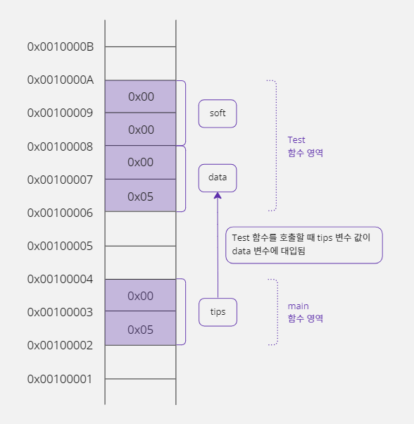
#include <stdio.h>
void Test(short data) {
short soft = 0x0000;
soft = data;
}
void main() {
short tips = 0x0005;
Test(tips);
}
간접 주소 지정 방식
- 직접 주소 지정 방식은 주소를 직접 명시한다.
- 간접 주소 지정 방식은 메모리를 매개체로 이용해 주소를 간접적으로 명시한다.
- 이 메모리는 주소를 저장하기 위해 크기를 4바이트로 고정해야 한다.
- 왜냐하면 32비트 운영체제는 주소를 32비트(4바이트)로 표현하기 때문이다.
102번지에 4바이트 크기의 '주소'가 저장되어 있는데
이 주소에 가서 '값' 1042를 2바이트 크기로 대입하라.
- 102번지에는 값을 저장할 메모리 주소인 108이 적혀있고, 1042값은 108번지에 2바이트 크기로 저장된다.
- 결국 간접 지정 방식을 사용하면 1042값을 저장할 실제 메모리 주소는 명령에 적지 않아도 된다.

- 이렇게 간접 주소 지정 방식을 사용하면 1042값이 108번지가 아니라 120번지로 변경되더라도 명령을 바꾸지 않아도 된다.
- 왜냐하면 102번지에 저장되어 있는 주소를 108번지에서 120번지로 바꾸면 되기 때문이다.
- 명령을 바꾼다는 뜻은 기계어를 바꿔야 한다는 뜻이고 이것은 코드를 다시 번역해서 실행 파일을 만들어야 한다는 뜻이다.
- 하지만 메모리에 있는 주소를 변경하는 것은 단순한 데이터 조작이기 때문에 코드를 다시 번역할 필요가 없고 프로그램이 실행되는 중에도 변경할 수 있다.
- 그래서 프로그래머 입장에서는 좀 더 복잡하더라도 간접 주소 지정 방식을 활용하는 것이 좋다.

- 위 그림처럼 바이트 단위까지 정확하게 표시해야 나중에 포인터의 다양한 기능을 정확하게 이해할 수 있다.
- 위 그림을 의미하는 간접 주소 지정 방식 명령은 다음과 같다.
0x00000066번지에 4바이트 크기의 '주소'가 저장되어 있는데
이 주소에 가서 '값' 0x0412를 2바이트 크기로 대입하라.
간접 주소 지정 방식을 어셈블리어로 표현해 보자.
- 포인터 문법을 사용할 때 실제로 번역되는 코드를 보면 포인터에 대해 더 명확하게 이해할 수 있다.
명령 A(대상) B(원본) mov cx, dword ptf[0000006Ch] mov word ptr[cx], 0412h
- 직접 주소 지정 방식에서는 하나의
mov명령을 사용했지만 간접 주소 지정 방식에서는 두 개의mov명령을 사용한다.- 사물함에 해당하는 메모리에서 주소를 읽는 것이 첫
mov명령에 해당하고0x0412값을 사물함에 들어 있는 주소에 저장하는 것이 두 번째mov명령에 해당한다.- 이렇게 명령을 나누어서 처리하는 이유는 CPU가 하나의 명령으로 메모리에서 메모리로 값을 복사할 수 없기 때문이다.
- CPU내부에 있는 CX 레지스터에
0x0412를 저장할 주소(사물함에 들어 있는 주소)를 옮기고 CX 레지스터에 저장된 메모리 주소에 가서0x0412를 저장해야 한다.- 첫 번째
mov명령의dword는 double word의 줄임 표현이며 4바이트를 의미하고, 사물함에 해당하는 메모리에 주소가 4바이트 크기로 저장되기 때문에 4바이트 크기로 읽기 위해dword를 사용한 것이다.- 두 번째
mov명령에서word를 사용한 이유는0x0412값이 2바이트 크기로 메모리에 저장되어야 하기 때문이다.
13-2. 포인터
포인터란?
- C 언어에서 직접 주소 지정 방식은 변수 문법이다.
- 그러면 간접 주소 지정 방식은 C 언어에서 어떻게 표현할까?
- 4바이트 정수형으로
addr변수를 선언하고addr변수에0x0000006C값(0x0412를 저장할 주소, 108번지)을 대입해 보자
unsigned int addr = 0x0000006C;
unsigned int자료형을 사용한 이유는, 주소는 음수가 나올 수 없기 때문이다.- 이렇게 선언한
addr변수에 주소를 저장할 수는 있다. - 하지만 일반 변수라서 실제로 해당하는 주소의 메모리에 가서 값을 읽거나 저장할 수 있는 기능이 없다.
- 이것은 C 언어의 일반 변수가 자신이 위치한 메모리에서만 값을 읽거나 쓸 수 있는 직접 주소 지정 방식으로 동작하기 때문이다.
- 그래서 C 언어는 간접 주소 지정 방식으로 동작하는 특별한 변수를 선언하기 위해 포인터(Pointer)문법을 추가로 제공한다.
- 포인터 문법을 사용해 선언한 포인터 변수는 메모리 주소만을 저장하기 위해 탄생한 특별한 변수이다.
- 앞에서 사물함에 비유했던 메모리가 C 언어에서는 포인터 변수이다.
- 즉 자신이 사용하고 싶은 메모리의 '주소'를 저장하고 있는 메모리가 포인터이다.
- 포인터 변수는 일반 변수와 다르게
*기호를 추가로 사용하여 다음과 같이 선언한다.

ptr은 포인터 변수의 이름이고 이 변수가 포인터라는 것을 번역기에게 알려주기 위해ptr앞에*를 사용한다.- 그리고 자료형을 적는 위치에
short를 사용했다. - 그럼 포인터 변수
ptr의 크기가 2바이트일까? No... - 일반 변수는 자료형이 변수의 크기를 의미하지만, 포인터 변수는 자료형을 선언하지 않아도 무조건 크기가 4바이트(32비트 운영체제 기준, 주소의 크기가 4바이트)로 정해져 있기 때문에 포인터 변수의 크기를 적을 필요가 없다.
- 그렇다면
*앞의 자료형은 무엇을 의미할까? short는ptr변수에 저장된 주소에 저장될 값의 자료형을 의미한다.

- 앞에서 간접 주소 지정 방식을 설명하면서 사용한 메모리 그림에 포인터 변수
ptr를 적용해 보면 위와 같다.
변수가 저장된 메모리 공간의 주소 얻기
- 프로그램은 실행될 때마다 사용할 메모리 공간의 주소가 달라진다.
- 따라서 프로그램에 선언된 변수의 주소는 프로그램이 실행될 때마다 다른 주소에 할당된다.
- 예를 들어
a변수가 지금 100번지에 할당되어 있어도 다음번 실행할 때는 200번지에 할당될 수도 있다는 뜻이다. - 그래서 '포인터가 가리키는 대상'의 주소를 직접 입력하여 항상 같은 주소를 사용하게 하면 대부분 오류가 발생하게 된다.
- 따라서 주소를 직접 입력하는 것보다 프로그램 안에 선언한 다른 변수의 주소를 받아와서 사용하는 것이 안전하다.
- 변수는 해당 프로그램의 메모리 영역에 만들어지기 때문에 다른 프로그램의 메모리 영역에 잘못 접근할 일이 없다.
- 변수의 주소는 변수 앞에 '
&연산자'를 사용하여 구할 수 있다.
short birthday; // short형 변수 birthday를 선언함
short *ptr; // 포인터 변수 선언함
ptr = &birthday; // birthday 변수의 주소를 ptr변수에 대입함
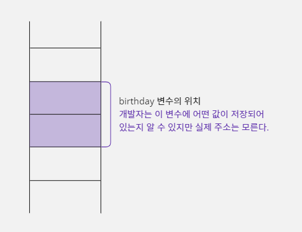
- 변수가 위치한 메모리의 주소를 출력해 보는 예제를 코딩해 보자.
#include <stdio.h>
void main() {
short birthday;
short *ptr; // 포인터 변수 선언함
ptr = &birthday; // birthday 변수의 주소를 ptr 변수에 대입함
// %p 형식은 메모리 주소를 16진수 형식으로 출력함
printf("birthday 변수의 주소는 %p, %08X, %16X입니다.\n", ptr, ptr, ptr);
}
birthday 변수의 주소는 00000031d65ffd26, D65FFD26, D65FFD26입니다.
- 64비트 운영체제라서 주소가 16자리로 출력된다.
* 키워드의 또 다른 이름, 번지 지정 연산자
- C 언어에서
*키워드는 여러 가지 용도로 쓰기 때문에 각각의 용도를 잘 기억해야 한다.
short birthday; // short형 변수 birthday를 선언함
short *ptr; // 포인터가 가리키는 대상의 크기가 2바이트인 포인터 변수를 선언함
ptr = &birthday; // birthday 변수의 주소를 ptr 변수에 대입함(주소는 108번지라고 가정함)
*ptr = 1042; // ptr에 저장된 주소에 가서 값 1042를 대입함. 즉 birthday = 1042

- 위 코드에서
short *ptr;와ptr = &birthday;는short *ptr = &birthday;라고 줄여서 적을 수 있다. - 여기에서 주의할 점은
short *ptr = &birthday;가 값을 대입하는 형태와 비슷해서*키워드를*ptr = 1042;에서 번지를 지정하기 위해 사용한*연산자와 같다고 착각해서는 안된다. short *ptr = &birthday;에서*키워드는 포인터 변수를 선언하기 위해 사용한 것이고*ptr = 1042;의*연산자는ptr포인터가 가리키는 주소의 변수(대상)에 가서1042(0x0412)값을 대입하겠다는 의미이다.
short *ptr = &birthday; // 여기서의 *는 포인터 변수를 선언하기 위해 사용하는 키워드
*ptr = 1042; // 여기서의 *는 번지 지정 연산자. ptr 포인터가 가리키는 대상에 가서 1042값을 대입하겠다는 의미
#include <stdio.h>
void main() {
short birthday;
short *ptr;
ptr = &birthday; // birthday 변수의 주소를 ptr 변수에 대입함
*ptr = 0x0412; // birthday = 0x0412;와 같은 결과
printf("birthday = %d (0x%04X)\n", birthday, birthday);
}
birthday = 1042 (0x0412)
%04X는birthday변수에 저장되는 값을 16진수 형태로 출력해서 보여주기 위한 키워드이다.- 전체 자릿수가 4자리를 차지하도록 출력하는데, 숫자가 4자리를 채우지 못하는 경우에는 빈자리에 0을 채운다.
- 위 예제에서
birthday변수는 선언 후 직접 사용된 적이 없지만,ptr포인터 변수에 의해 간접적으로 값0x0412가 대입되었다. printf로birthday값을 출력해 보면 10진수로는 1042가 출력되고 16진수로는 0x0412가 출력된다.
'ptr = '과 '*ptr = '의 차이점
- 포인터 문법은 두 개의 메모리 공간과 관련이 있다.
- '포인터 변수가 저장된 메모리'와 '포인터가 가리키는 대상 메모리'이다.
ptr =형태로 사용하면 포인터 변수의 값(가리키는 대상의 주소)이 변경되고*(번지 지정)연산자를 붙여서*ptr =형태로 사용하면 '포인터가 가리키는 대상'의 값이 변경된다.
'ptr = ' 형태는 포인터 변수에 주소를 저장한다
- 포인터 변수도 일반 변수처럼 자신을 위한 메모리 공간이 있다.
- 일반 변수와 차이가 있다면 포인터 변수는 주소를 저장하기 때문에 메모리 크기가 4바이트로 고정된다는 것이다.
- 포인터 변수에 저장된 주소는 '포인터가 가리키는 대상 메모리'의 시작 주소를 의미한다.
ptr =형태를 사용해서 주소를 직접 대입하는 방법은 다음과 같다.
short *ptr;
ptr = (short *)0x0000006C; // 포인터 변수 ptr에 주소를 직접 대입한다
int형 데이터가 저장되는 메모리는short *형 포인터 변수가 저장된 메모리와 4바이트로 크기는 같다.- 하지만 컴파일러는 크기를 가지고 자료형이 같다고 판단하지 않기 때문에
int형 정수 값0x0000006C를ptr변수에 맞는 자료형으로 변환하여 대입해야 한다. - 따라서
0x0000006C를short *형으로 형 변환한다. - 위 코드처럼 포인터 변수
ptr를 선언하고0x0000006C의 주소를 대입하면ptr포인터 변수가 차지하고 있는 4바이트 메모리 공간에0x0000006C값이 저장된다. - 그러면 이제 포인터 변수
ptr은0x0000006C번지를 가리키게 되어0x0000006C번지에서 값을 읽거나 쓸 수 있다. - 변수의 실제 메모리 주소는
&연산자로 얻을 수 있다.
'*ptr = ' 형태는 포인터가 가리키는 대상에 값을 저장한다
- 포인터 문법과 관련된 두 번째 메모리 공간인 '포인터가 가리키는 대상'의 값을 다루는 방법에 대해 알아보자.
- '포인터가 가리키는 대상'을 사용하려면 당연히 포인터 변수에 대상의 주소가 먼저 저장되어야 하기 때문에 앞에서 설명한 방법으로
ptr변수에 값0x0000006C를 넣었다고 가정한다. - 앞에서 포인터 변수에 주소를 대입할 때는 일반 변수처럼
ptr =이라고 사용했지만 '포인터가 가리키는 대상'의 값을 변경할 때는ptr변수 앞에*(번지 지정)연산자를 추가하여*ptr =이라고 사용해야 한다.
short *ptr;
ptr = (short *)0x0000006C; // ptr 변수에 0x0000006C 값을 대입함
*ptr = 0x0412; // 0x0000006C 번지에 0x0412 값을 대입함
- 위 코드처럼
*ptr = 0x0412;라고 하면ptr변수가 저장하고 있는 주소(0x0000006C)에 가서 2바이트 크기로 값 0x0412를 대입하라는 뜻이다. - 지금까지는 설명을 위해서 주소를 저장하는 메모리
ptr에0x0000006C를 넣어서 사용했지만, 실제로는 이렇게 코드를 구성할 수 없다. - 왜냐하면 자신의 프로그램이 어떤 주소 영역에 할당될지 예측할 수 없기 때문이다.
- 이렇게 고정 주소를 사용하면 자신의 프로그램 영역이 아닌 다른 프로그램의 메모리 영역에 접근을 시도할 것이고, 이런 동작은 잘못된 접근으로 처리되어 오류가 발생할 것이다.
고정 주소를 직접 표기할 수는 없을까?
0x0000006C처럼 주소를 직접 표기하는 것 자체가 잘못된 것은 아니다.- 유효한 주소라면 직접 표기해도 된다.
- 그런데 유효한 주소는 따로 정해져 있는 것이 아니라 프로그래머가 판단하는 것이다.
- 실력이 많이 쌓여서 메모리 주소를 사용하는 데 익숙해지면, 자신이 사용하는 메모리 영역의 주소를 알아내서 수학적 계산을 통해 사용할 주소를 직접 계산할 수도 있다.
다른 함수에 선언된 지역 변수 사용하기
short birthday; // short형 변수 birthday를 선언함
short *ptr; // 포인터가 가리키는 대상의 크기가 2바이트인 포인터 변수 선언함
ptr = &birthday; // birthday 변수의 주소를 ptr 변수에 대입함
*ptr = 0x0412; // ptr에 저장된 주소에 가서 0x0412값을 대입함. birthday = 0x0412;
- 이렇게 포인터를 사용하여 간접 주소 방식으로 값을 대입하는 이유가 뭘까?
- 그 이유는 모든 변수가 같은 함수에 선언되는 것이 아니기 때문이다.
- 만약
main함수에서ptr변수와birthday변수를 함께 선언해서 사용하면 아무 문제가 생기지 않는다. - 그러나 이 두 변수를 서로 다른 함수에 선언했다면 상당한 의미를 갖는다.
- 왜냐하면 일반 변수는 문법적으로 서로 다른 함수에 있는 변수를 사용할 수 없지만, 포인터는 변수 이름이 아니라 주소로 대상을 찾아가기 때문에 같은 함수가 아니더라도 대상 메모리의 값을 읽거나 쓸 수 있기 때문이다.
직접 주소 지정 방식으로 다른 함수에 선언한 변수 사용하기
A형 - 다른 함수의 변수 사용시 오류#include <stdio.h> void Test() { short soft = 0; soft = tips; // 오류 발생 } void main() { short tips = 5; Test(); }
B형 - 매개변수로 다른 함수의 변수 값 받기#include <stdio.h> void Test(short data) { short soft = 0; soft = data; // 가능, soft = 5; } void main() { short tips = 5; Test(tips); }
- A형에서
tips변수는main함수에서 선언된 변수이므로Test함수에서 사용할 수 없다. - 그래서 B형에서는 오류 없이
tips변수 값을soft에 대입하기 위해 매개변수를 사용한 것이다. - 하지만 B형 예제는
main함수의tips변수 값을 넘겨받았을 뿐이기 때문에Test함수에서main함수의tips변수 값을 직접 수정할 수는 없다. - 이것은 매개변수가 대상 변수의 주소가 아니라 변수가 가지고 있는 값(5)을 넘겨받았기 때문이다.
간접 주소 지정 방식(포인터)으로 다른 함수에 선언한 변수 사용하기
- C 언어에서 함수의 매개변수로 간접 주소 지정 방식(포인터 변수)을 사용할 수도 있다.
- 다음 C형과 같이 간접 주소 지정 방식의 포인터로
main함수에 선언한tips변수를Test함수에서 사용할 수 있다.
B형 - 매개변수로 다른 함수의 변수 값 받기#include <stdio.h> void Test(short data) { short soft = 0; soft = data; // 가능, soft = 5; tips = 3; // 오류 발생 } void main() { short tips = 5; Test(tips); }
C형 - 매개변수로 다른 함수의 변수 주소 받기#include <stdio.h> void Test(short *ptr) { short soft = 0; soft = *ptr; // soft = tips; *ptr = 3; // tips = 3; } void main() { short tips = 5; Test(&tips); }
- C형은 B형과 달리 매개변수로 포인터 변수
ptr를 선언해서main함수의tips변수 주소를 받았다. - 따라서
Test함수에서tips변수 이름은 사용할 수 없지만tips변수의 주소를ptr포인터가 가지고 있기 때문에*ptr를 사용해서 해당 주소에 저장된 값을 가져오거나, 대입할 수 있다. - 결국 간접 주소 지정 방식을 사용하면
Test함수를 호출한main함수에 선언된 변수의 값만 받아 오는 것이 아니라 해당 변수이 값을 변경할 수도 있다.
두 변수의 값 서로 바꾸기
- 프로그래밍을 하다 보면 두 변수의 값을 서로 바꿔야 하는 경우가 생긴다.
- 이런 경우 값을 임시로 보관하는 변수를 하나 더 추가해야 한다.
- 이 변수의 이름을
temp라고 하자. start와end라는 변수의 값을 바꾸기 위해temp변수를 추가하면end값에start값을 대입하기 전에temp에end값을 보관해서 값이 사라지는 것을 막을 수 있다.
int start = 96, end = 5;
int temp;
if(start > end) {
temp = end;
end = start;
start = temp;
}
Swap함수를 따로 분리해서 다시 코드를 작성해 보자.
#include <stdio.h>
// temp 변수를 이용하여 a와 b의 값을 서로 바꾸는 함수
void Swap(int a, int b) {
int temp = a; // a = 96, b = 5
a = b; // a = 5, b = 5
b = temp; // a = 5, b = 96
}
void main() {
int start = 96, end = 5;
printf("before : start = %d, end = %d\n", start, end);
if (start > end) {
Swap(start, end); // start와 end의 값을 바꾸기 위해서 Swap 함수를 호출함
}
printf("after : start = %d, end = %d\n", start, end);
}
before : start = 96, end = 5
after : start = 96, end = 5 // 값이 바뀌지 않았다
- 예제의 실행 결과를 보면 기대와 달리
start와end값이 변경되지 않았다. - 분명히
start값이end값보다 크기 때문에 조건문이 만족하여Swap함수가 호출되었다. - 그리고
Swap함수에서는start,end변수 값을 매개변수a,b로 전달받아서a,b값을 서로 교환까지 했다. - 하지만
main함수의start,end와 상관 없이 변경된 변수가a,b라는 것이 이 예제의 문제점이다. - 그림으로 그려보자.
- 사격형 한 칸은 4바이트를 의미한다.

- 이 그림을 보면
main함수의 지역 변수인start,end변수 값은 계속 96과 5로 유지되고 있다. - 결국 예제에서 사용한 방법으로는
main함수의start,end값을 변경할 수 없기 때문에 다른 함수의 지역 변수 값을 변경할 수 있는 포인터 문법을 사용하여 이 문제를 해결해야 한다.
포인터를 이용해 두 변수 값 바꾸기
- 이번에는 포인터 문법을 이용해서 값 대신 각 변수의 '주소'를 넘겨 이 문제를 해결해 보자.
main함수의start,end변수 주소를Swap함수로 전달하려면Swap함수의 매개변수에는 포인터 변수가 와야 한다.
#include <stdio.h>
// temp 변수를 이용하여 a와 b의 값을 서로 바꿈
void Swap(int *pa, int *pb) {
int temp = *pa; // *pa(start) = 96, *pb(end) = 5
*pa = *pb; // *pa(start) = 5, *pb(end) = 5
*pb = temp; // *pa(start) = 5, *pb(end) = 96
}
void main() {
int start = 96, end = 5;
printf("before : start = %d, end = %d\n", start, end);
if (start > end) {
Swap(&start, &end); // start와 end의 값을 바꾸기 위해서 Swap을 호출함
}
printf("before : start = %d, end = %d\n", start, end);
}
before : start = 96, end = 5
before : start = 5, end = 96
Swap함수에서pa,pb포인터를*pa,*pb와 같이 사용하면pa,pb포인터가 가리키는 대상 메모리인start,end의 값을 변경할 수 있다.- 함수의
return키워드를 사용해서 함수의 작업 결과 값을 함수를 호출한 쪽으로 전달할 수는 있다. - 하지만
return은 한 번에 한 개의 값만 반환하고 지금처럼 두 값start,end을 동시에 반환할 수 없기 때문에return문을 사용하는 것보다 포인터를 사용하는 것이 더 효과적이다.

- 이처럼 함수에 포인터 문법을 함께 사용하면 다른 함수에 선언한 지역 변수 값도 수정할 수 있다.
13-3. 포인터와 const 키워드
const 키워드로 주소 변경 실수 막기
Swap함수도 마찬가지겠지만 불린 쪽(피호출자)에서 부른 쪽(호출자)으로부터 전달받은 주소를 변경하는 경우는 거의 없다.- 즉
pa와pb에 저장된 주소가 바뀔 이유가 없다는 뜻이다. - 따라서 주소를 바꾸는 코드가 있다면 이것은 프로그래머의 실수일 확률이 높기 때문에
const키워드를 이용하여 명시적으로 주소가 바뀌는 실수를 막을 수 있다.
void Swap(int *const pa, int *const pb) {
int temp = *pa;
pa = pb; // pa는 const 변수라서 값을 변경할 수 없기 때문에 오류가 발생함
*pb = temp;
}
- 위 코드와 같이
Swap함수의 매개변수 형태를 변경하면 둘 다const키워드에 의해 번역할 때 오류가 발생한다. - 그래서 실수로
*를 생략하는 경우에 좀 더 쉽게 문제점을 찾아낼 수 있다.
포인터 변수에서 const 키워드를 사용하는 여러 가지 방법
- 포인터 변수는 일반 변수와
const키워드를 사용하는 위치가 좀 다르다. - 왜냐하면 포인터 변수는 포인터 변수에 저장된 값을 변경하거나 포인터 변수가 가리키는 대상의 값을 변경하는 두 가지 형태로 사용할 수 있기 때문에 다음과 같이
const키워드를 사용할 수 있는 위치도 두 곳이다.

- 이렇게
const키워드를 사용할 수 있는 위치가 두 곳이기 때문에, 이 위치를 조합하면 포인터 변수를 세 가지 방법으로 선언할 수 있다.
int *const p;
p앞에const키워드를 사용했다.- 따라서
p가 가지고 있는 주소를 변경하면 번역할 때 오류가 발생한다.
int data = 5, temp = 0;
int *const p = &data; // 변수 p는 data 변수의 주소를 저장한다.
// 포인터 변수를 선언할 때 한 번만 p에 주소 값을 대입할 수 있다.
*p = 3; // p 변수가 저장하고 있는 주소에 가서 3을 대입하면 data 변수의 값이 3으로 변경됨
p = &temp // 오류 발생: 변수 p에 const 속성이 적용되어 p에 저장된 주소는 변경할 수 없음
const int *p;
p가 주소에 접근할 때 사용하는 크기 앞에const키워드를 사용했기 때문에*p를 사용하여 대상의 값을 변경하면 번역할 때 오류가 발생한다.
int data = 5;
const int *p = &data; // 변수 p는 data 변수의 주소를 저장함
*p = 3; // 오류 발생: 변수 p가 가리키는 대상에 const 속성이 적용되어 대상의 값을 변경할 수 없음
const int *const p;
- 자신과 대상에 모두
const키워드를 사용했기 때문에p가 가지고 있는 주소를 바꾸거나*p를 사용하여 대상의 값을 바꾸면 번역할 때 오류가 발생한다.
int data = 5, temp = 0;
const int * const p = &data;
*p = 3; // 오류 발생: 변수 p가 가리키는 대상에 const 속성이 적용되어 대상의 값을 변경할 수 없음
p = &temp; // 오류 발생: 변수 p에 const 속성이 적용되어 p에 저장된 주소는 변경할 수 없음
- 결론적으로 일반 변수를 다룰 때보다 포인터 변수를 다룰 때 실수할 확률이 더 높기 때문에,
const키워드를 적절하게 잘 활용하면 실수로 인한 버그(의미상 오류)를 줄일 수 있다.
13-4. 포인터 변수의 주소 연산
사용할 메모리의 범위를 기억하는 방법
- 자신이 사용할 메모리의 범위를 기억하는 방법은 크게 두 가지이다.
- 첫 번째 방법은 시작 주소와 끝 주소를 기억하는 것이고 두 번째 방법은 시작 주소와 사용할 크기를 기억하는 것이다.
시작 주소와 끝 주소로 메모리 범위 기억하기
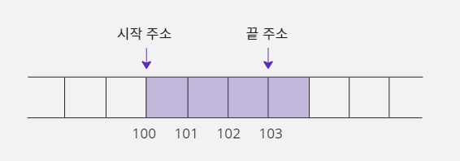
- 시작 주소와 끝 주소로 메모리 범위를 기억하려면 각각의 주소를 기억하는 데 총 8바이트가 필요하다.
- 시작 주소인 100번지를 저장하는 데 4바이트가 필요하고 끝 주소인 103번지를 저장하는 데 또 4바이트가 필요하기 때문이다.
시작 주소와 사용할 크기로 메모리 범위 기억하기
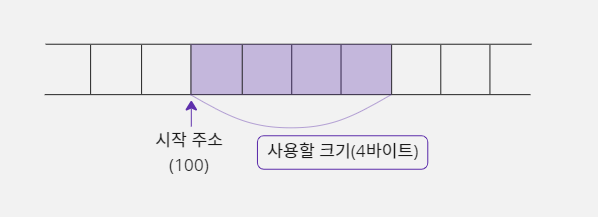
- '시작 주소'와 '사용할 크기'로 메모리 범위를 기억하는 것도 두 가지 정보를 기억해야 한다.
- 시작 주소인 100번지를 저장하는 데 4바이트가 필요할 것이고, 사용할 크기를 저장하는 데 4바이트가 필요할 것이다.
- 그런데 C 언어 문법은 메모리를 사용할 때 항상 그 메모리의 크기를 먼저 결정하도록 되어 있다.
- 예를 들어 정수 값 5를 저장하고 싶다면
int data;와 같이 변수를 선언해야 하는데 이때 사용할 메모리의 크기는int형으로 선언했기 때문에 4바이트로 결정된다. - 그리고
data = 5;명령을 사용하면 컴파일러는data라는 변수가 4바이트라는 것을 이미 알고 있기 때문에 메모리에 4바이트 크기로 5를 대입하도록 명령을 구성하게 된다. - 결국 사용할 메모리 크기는 명령문에 포함되어 있기 때문에 자신이 사용할 메모리의 시작 주소만 기억하면 된다는 뜻이다.
- 이런 프로그래밍 언어의 특성 때문에 포인터도 자신이 가리킬 대상에 대해 사용할 범위는 저장하지 않고 사용할 메모리의 시작 주소만 기억하면 된다.
short data = 0;
short *p = &data; // p 변수에 data 변수의 시작 주소를 저장한다
*p = 5; // 포인터 변수 p가 가리킬 대상의 크기는 short이기 때문에 p에 저장된
// 시작 주소부터 2바이트 크기의 공간에 값 5를 저장한다.
- 컴파일러가
data = 5;를 기계어로 번역하면mov dword ptr [0000006Ch], 5h가 된다. - 여기서
dword명령을 통해 사용할 크기를 명시하는 것을 볼 수 있다. - 즉 컴파일러가 기계어 명령을 구성하는 단계에서 '사용할 메모리 크기'가 결정된다.
포인터 변수의 주요 연산
- 포인터가 자신이 가리킬 대상 메모리의 시작 주소만 기억하면 되기 때문에 갖게 되는 특성이 있다.
short data = 0;
short *p = &data;
p = p + 1; // 포인터 변수에 저장된 주소 값을 1만큼 증가시킴
- 포인터 변수에 저장된 주소도 정수 값이기 때문에 일반 변수처럼 연산할 수 있다.
- 그런데 주소를 1만큼 증가시킨다는 의미가 일반 수학 연산과 다르기 때문에 주의해야 한다.
- 포인터 변수
p에 저장된 주소가 100번지인 경우에 이 변수를 1만큼 증가시키면 변수에 저장되어 있던 주소 값은 101번지가 되는 게 아니라 102번지가 된다. - 왜냐하면 포인터에서 +1의 의미는 단순히 주소 값에 1을 더한다는 뜻이 아니고 그다음 데이터의 주소를 의미하기 때문이다.
- 위 예시에서 포인터 변수
p가 가리키는 대상의 크기가 2바이트인데 이 포인터로 다음 데이터를 가리키려면 주소 값이 1이 아닌 2가 증가되어야 정상적으로 그다음 데이터를 가리킬 수 있다. - 이처럼 포인터 변수에 +1을 하면 자신이 가리키는 대상이 크기만큼 증가하는데 이것을 '포인터 변수의 주소 연산'이라고 한다.
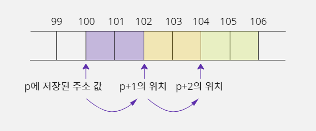
p가short크기의 데이터를 사용하기 때문에 주소 값이 2씩 증가해야 안전하게 사용할 수 있다.- 다음 코드를 보자.
- 포인터 변수의 주소 연산 특성 때문에, 사용할 크기가 다른 네 개의 포인터에 모두 100번지를 대입하고
++연산을 하면 각 포인터에 저장된 주소 값이 모두 달라지게 된다.
char *p1 = (char *) 100; // p1에 100번지를 저장함
short *p2 = (short *) 100; // p2에 100번지를 저장함
int *p3 = (int *) 100; // p3 에 100번지를 저장함
double *p4 = (double *) 100; // p4에 100번지를 저장함
p1++; // 가리키는 대상의 크기가 char형(1바이트)이기 때문에 p1에 저장된 주소 값이 101이 됨
p2++; // 가리키는 대상의 크기가 short형(2바이트)이기 때문에 p2에 저장된 주소 값이 102가 됨
p3++; // 가리키는 대상의 크기가 int형(4바이트)이기 때문에 p3에 저장된 주소 값이 103가 됨
p4++; // 가리키는 대상의 크기가 double형(8바이트)이기 때문에 p4에 저장된 주소 값이 108이 됨
- 즉 우리가 사용하려는 메모리의 시작 주소를 가리키는 포인터의 주소만 알고 있다면, 주소 연산을 통해 그다음 메모리를 사용할 수 있다.
13-5. 포인터와 대상의 크기
포인터가 가리키는 대상의 크기
int *p라고 포인터 변수를 선언할 때int자료형은 포인터 변수의 크기를 의미하는 것이 아니라 포인터 변수가 가리키는 대상의 크기를 의미하는 것이다.- 따라서 포인터 변수
p에 일반 변수data의 주소 값을 저장하고 포인터 변수p를 사용하여data변수의 값을 변경하는 경우에는 두 변수의 자료형을 같게 지정하는 것이 일반적이다. - 즉 실제 대상의 크기가 4바이트라면 포인터 변수의 자료형도 4바이트 크기로 지정하는 게 일반적이라는 뜻이다.
int data = 0;
int *p = &data;

- 포인터 변수
p는 4바이트 크기의 메모리를 가리킨다.
포인터가 가리킬 수 있는 크기와 실제 대상의 크기가 다른 경우
- 포인터가 가리킬 수 있는 크기와 실제 대상의 크기가 꼭 같아야 하는 것은 아니다.
- 프로그래머가 의도적으로 이 두 크기를 다르게 사용하는 경우도 있다.
int data = 0;
short *p = (short *) &data; // 포인터 변수 p는 2바이트 크기의 메모리를 가리킬 수 있는 능력을
// 가지고 있지만 4바이트 크기인 data 변수를 가리킬 수도 있다

- 포인터 변수가 가리킬 수 있는 크기는 2바이트이지만, 4바이트 크기의 대상을 가리켜도 문제가 발생하지 않는다.
- 이러한 포인터의 특성을 활용하면 4바이트 크기의 변수에 저장된 값을 1바이트 단위로 출력할 수도 있다.
#include <stdio.h>
void main() {
int data = 0x12345678, i;
char *p = (char *) &data;
// &data는 int *형. 그런데 이 주소를 저장할 포인터 p가 char *라서
// 자료형이 맞지 않아 (char *) 형 변환을 사용한다.
// 4바이트 데이터를 바이트 단위로 값을 출력하기 위해 4번 반복함
for (i = 0; i < 4; i++) {
// p는 char *형이라서 시작 주소부터 1바이트 크기만 사용함
printf("%X, ", *p);
p++; // p가 char *형이라서 1바이트 뒤에 있는 주소로 값이 변경됨
}
}
78, 56, 34, 12,
- 이 예제에서
data변수는int형으로 선언되어 4바이트 크기인데data변수를 가리킬 포인터p변수는char *로 선언했다. - 따라서
*p를 사용하면data변수의 시작 주소에서 1바이트 크기만 사용할 수 있다. - 그렇다고 해서
data의 시작 1바이트만 사용할 수 있는 것이 아니라 포인터의 주소 연산을 활용하면data변수의 나머지 부분도 1바이트씩 사용할 수 있다.

- 위 예제는
p가 가지고 있는 주소 값을 옮기는 방식으로 작업했는데,p의 주소 값을 변경하지 않고data변수 값을 1바이트씩 출력하고 싶다면 반복문 코드만 다음과 같이 변경하면 된다.
for (i = 0; i < 4; i++) {
// 첫 바이트는 *(p+0), 두 번째는 *(p+1), 세 번째는 *(p+2), ...
printf("%X, ", *(p + i));
}
13-6. void * 형 포인터
대상의 크기가 정해져 있지 않은 void * 형 포인터
- 지금까지는 항상 포인터 변수가 가리키는 대상의 크기를 지정해서 사용했었다.
- 하지만 대상의 크기를 모른다면 어떻게 해야 할까?
- 이때 사용하는 것이 바로
void키워드이다. void키워드는 '정해져 있지 않다'라는 의미를 가지고 있다.- 따라서 다음과 같이 변수를 선언하면 포인터 변수
p에 주소 값을 저장할 수는 있지만 해당 주소에서 값을 읽거나 저장할 때 사용하는 크기는 정해져 있지 않다.
void *p;
- 즉 사용할 메모리의 시작 주소만 알고 끝 주소를 모를 때 사용하는 포인터 형식이다.
- 그래서
*p = 5;라고 일반 포인터처럼 사용하면 자신이 사용할 주소의 대상 메모리 크기가 정해져 있지 않기 때문에 번역할 때 문법 오류가 발생한다.
int data = 0;
void *p = &data; // data의 시작 주소를 저장함
*p = 5; // 오류 발생: 대상 메모리의 크기가 지정되지 않음
void *는 포인터가 가리킬 대상의 크기를 정한 것이 아니라서 말 그대로 어떤 크기의 메모리가 오든지 상관없다.- 그렇다고
void *로 선언한 포인터 변수를 주소 값만 저장하는 용도로 사용하는 것은 아니다. - 포인터 변수
p를 사용하여data변수에 값 5를 대입하고 싶은 경우에 형 변환 문법을 사용하여 '사용할 크기'를 표기해 주면 일반 포인터처럼 사용할 수 있다. *(int *) p라고 사용하면 일시적으로 포인터 변수p이 형식이int *가 되기 때문에 포인터 변수p에 저장된 주소에 가서 4바이트(int) 크기로 5를 저장한다.
int data = 0;
void *p = &data;
*(int *) p = 5; // 형 변환 문법을 사용하여 대상의 크기를 4바이트로 지정하므로 data 변수에 5가 저장됨
void * 형 포인터 활용하기
void *는 포인터의 기능을 사용할 수 없는 것이 아니라 자신이 사용할 대상의 크기 지정을 잠시 미룰 수 있다는 장점을 가지고 있다.- 예를 들어
char *형 주소 값을 저장하려면char *형 포인터 변수가 있어야 하고int *형 주소 값을 저장하려면int *형 포인터 변수가 있어야 한다. - 하지만
void *형 포인터 변수는char *형이든int *형이든 형 변환 없이 모두 저장할 수 있기 때문에 더 편리하다. - 다음은
main함수에 선언한 지역 변수의 주소 값을 매개변수로 받아서 그 주소에 해당하는 메모리에 값 1을 대입하는MyFunc함수이다. - 그런데
MyFunc으로 전달되는 주소의 형식이char *,short *,int *중 하나이고 이 형식을 사용할 때마다 달라질 수도 있다면 어떻게 해야 할까?
void MyFunc(char *p_char, short *p_short, int *p_int) {
// 포인터 변수에 NULL이 저장되어 있으면 아직 주소를 저장하지 않고 초기화된 상태이다.
// NULL이 아닌 다른 값을 가져야 제대로 사용할 수 있다.
if (p_char != NULL) *p_char = 1;
else if (p_short != Null) *p_short = 1;
else *p_int = 1;
}
void main() {
short data = 5;
// data 변수는 short형이기 때문에 short *를 사용하는 두 번째 매개변수에 주소를 넘겨줌
MyFunc(NULL, &data, NULL);
}
- 어떤 형식의 주소 값이 전달될지 모르기 때문에 위 예시처럼 세 개의 포인터를 매개변수에 추가해야 한다.
- 그리고 실제로 사용할 포인터에만 변수의 주소 값을 전달하고 나머지는 사용하지 않겠다는 뜻으로
NULL을 적는다. NULL은 C 언어 기본 헤더 파일에#define으로 정의되어 있으며 0번지를 의미한다.- 그래서 일반 변수는 초기화할 때 0을 대입하지만 포인터 변수는 초기화할 때 0번지를 의미하는
NULL을 사용해야 한다. - 그런데 만약
MyFunc함수로 전달되는 주소의 형식이 더 많아지면 어떻게 될까? - 매개변수가 너무 많아져서 불편할 것이다.
- 따라서 이 예제를
void *형을 사용하여 수정해 보자.
void MyFunc(void *p, char flag) {
// flag에 전달된 값에 따라 형 변환하여 전달된 주소에 1을 대입함
if (flag == 0) *(char *) p = 1; // flag가 0이면 char *형
else if (flag == 1) *(short *) p = 1; // flag가 1이면 short *형
else *(int *) p = 1; // flag가 0과 1이 아니면 int *형
}
void main() {
short data = 5;
// data 변수는 short형이기 때문에 short *를 의미하는 1을 같이 전달함
MyFunc(&data, 1);
}
void *형 포인터를 매개변수로 사용하면 어떤 형식의 주소이든 저장할 수 있지만 3가지 주소 형식 중에서 무엇을 사용했는지 알 수 없다.- 따라서
char *는 0,short *는 1,int *는 2를 의미하는 값을 매개변수로 함께 전달해야 한다. - 위 코드에서
*(char *) p라고 사용하면void *형이었던 포인터 변수p가 일시적으로char *형으로 변환된다. *(short *) p도 마찬가지이다.- 지금까지 설명한 두 가지 방법 중 어떤 것이 더 좋다고 이야기할 수는 없다.
- 매개변수로 전달되는 주소의 형식이 많아지면
void *를 사용하는 것이 좀 더 좋을 것 같다.
#include <stdio.h>
int GetData(void *p_data, char type) {
int result = 0;
// type 변수에 저장된 값을 기준으로 형 변환을 다르게 함
if (type == 1) result = *(char *) p_data; // 0x78(1바이트)이 저장됨
else if (type == 2) result = *(short *) p_data; // 0x5678(2바이트)이 저장됨
else if (type == 4) result = *(int *) p_data; // 0x12345678(4바이트)이 저장됨
return result;
}
void main() {
int data = 0x12345678;
// data 변수에서 2바이트 크기만 출력함
printf("%X\n", GetData(&data, 2));
}
5678
*리틀 엔디언 시스템의 출력 결과이다
- 이 예제는 4바이트 크기의 정수를 저장하는
data변수가 있는데 이 변수에 저장된 값을 그대로 출력하지 않는다. - 사용자가
type변수에 값 1을 지정하면data변수이 1바이트 값만 출력하고, 2를 지정하면data변수의 2바이트 값을 출력하며, 4를 지정하면data변수의 4바이트 값, 즉 전체 값을 출력하도록 만든 것이다.

포인터 변수에서 형 변환 문법은 모든 자료형에서 사용할 수 있다
- 포인터 변수에 직접 형 변환을 사용하는 형식은
void *에서만 사용할 수 있는 것이 아니라 모든 포인터에서 사용할 수 있는 개념이다.- 그래서
void *대신에char *로 선언해 놓고void *를 사용하는 것처럼 형 변환하여 구성된 코드도 많이 볼 수 있다.int data = 0x12345678; char *p = (char *) &data; // 서로 자료형이 맞지 않아서 (char *)로 형 변환함 *p = 5; // data 변수의 시작 1바이트에 값 5를 넣으면 data 는 0x12345605로 변경됨 *(short *) p = 0; // data 변수의 시작 2바이트에 값 0을 넣으면 data는 0x12340000로 변경됨
14. 표준 입력 함수
14-1. 표준 입력 함수
표준 입력 함수란?
- 키보드, 마우스 등 다양한 입력 장치 중에서 사용하는 시스템이 가장 기본으로 생각하는 장치를 '표준 입력 장치'라고 부른다.
- C 언어는 이런 장치로부터 데이터를 입력 받는 표준 입력 함수(Standard Input Function)를 제공한다.
표준 입력 함수의 동작 원리
- 표준 입력 함수는 시스템의 여러 가지 입력 장치를 표준화하기 위해, 장치의 입력 정보를 읽는 것을 컴퓨터가 파일에서 데이터를 읽는 것처럼 구성한다.
- 이 방법은 입력되는 값들을 하나씩 바로 처리하지 않고 일정한 조건이 될 때까지 차곡차곡 모았다가 처리한다.
- 입력을 효과적으로 처리하기 위한 것이다.
- 예를 들어 키보드를 사용하는 시스템에서 표준 입력 함수를 사용하면 입력 완료를 의미하는 [Enter]키를 누를 때까지 해당 함수가 완료되지 않는다.
- 따라서 'A'라는 문자 한 개를 입력 받고 싶더라도 [A]키를 누른 후에 [Enter]키를 눌러야 표준 입력 함수가 처리된다.
입력 값을 임시로 저장하는 표준 입력 버퍼
- 이렇게 특정 키를 누를 때까지 사용자 입력을 임시로 저장하는 메모리를 '표준 입력 버퍼'라고 한다.
- 이 입력 버퍼는 운영체제가 제공한다.
- 표준 입출력을 사용하는 시스템을 위해 별도의 메모리가 배정되어 있다.
- 그런데 여러 개의 정보를 입력하고 [Enter]키를 눌렀는데 입력 버퍼에 있는 내용을 전부 사용하지 않았다면 다음에 호출하는 표준 입력 함수에 영향을 미치므로 주의해야 한다.
- 이 부분에 대해 단계를 나눠서 살펴보자.
- 키보드에서 "abc"입력
- 입력 버퍼에 "abc"저장
- [Enter] 입력
- 문자를 한 개만 입력 받는 표준 입력 함수이므로 입력 버퍼에서 a만 사용함
- 입력 버퍼에 있는 내용을 다써버리지 못하고 b, c가 남음
- 문자를 한 개만 입력 받는 표준 입력 함수를 다시 호출하면, 남아 있던 b가 사용되어 버림
- 표준 입력 함수들은 [Enter]키를 누를 때까지 계속 입력을 받기 때문에 문자 한 개만 누른다고 입력이 끝나지 않는다.
- 따라서 사용자가 실수로 "abc"라고 입력하고 [Enter]키를 누르면 입력 버퍼에는 "abc"가 저장된다.
- 입력 버퍼는 특정 키를 누를 때까지 사용자 입력을 임시로 저장하기 때문이다.
- 하지만 문자 한 개만 입력 받는 함수를 호출했기 때문에 a, b, c 중에 a만 사용하고 b와 c는 입력 버퍼에 남게 된다.
- 이 상황에서 다시 문자 한 개를 입력 받는 표준 입력 함수를 호출하면 사용자가 아무 것도 입력하지 않았는데도 b가 입력되었다고 처리해 버린다.
- 왜냐하면 입력 버퍼에 b, c의 입력 정보가 남아 있기 때문이다.
입력 버퍼를 초기화하는 rewind 함수
- 입력 버퍼에 남아 있는 입력 정보를 모두 지우고 싶다면 표준 입력 장치를 가리키는
stdin포인터와rewind함수를 사용하여 표준 입력 버퍼를 초기화하면 된다.- 여기서 사용한 '초기화'라는 용어는 앞에서 봤던 '변수의 초기화'와는 조금 의미가 다르다.
- 입력 버퍼를 초기화 한다는 것은 입력된 정보를 전부 지우고 입력에 사용되는 모든 정보를 초기 상태로 만든다는 뜻이다.
stdin포인터를 사용하면 장치에서 입력한 값을 얻을 수 있다.
rewind(stdin); // rewind 함수를 사용하면 입력 버퍼를 초기화할 수 있음
- 입력 정보가 버퍼에 남아 있는 문제는 표준 입력에서 자주 발생하기 때문에 표준 입력의 원리를 다시 한번 정리해 보자.
- 입력 버퍼에 사용자가 입력한 키 정보가 남아 있으면 표준 입력 함수는 해당 값을 사용한다.
- 그리고 입력 버퍼에 내용이 없으면 [Enter]키를 누를 때까지 데이터를 입력 받은 후 표준 입력 함수가 동작한다.
- 따라서 입력 버퍼에 입력한 키 정보가 남아 있다면 사용자가 추가로 입력하지 않아도 함수가 동작하게 된다.
- 그러므로 입력을 구별하고 싶다면
rewind함수를 사용해 입력 버퍼를 초기화해야 한다.
14-2. 문자와 문자열 입력 함수
- 표준 입력 함수 중에서 자주 사용하는 함수 몇 가지를 살펴보자.
- 표준 입력 함수는
stdio.h(Standard Input Output Header)파일에 정의되어 있으므로#include전처리기를 사용해서 이 파일을 참조해야 한다.
문자 한 개를 입력 받는 getchar 함수
getchar함수는 키보드(컴퓨터의 표준 입력 장치)로부터 문자 하나를 입력 받는 표준 입력 함수이다.- 이 함수를 사용할 때, 문자 한 개를 입력 받더라도 [Enter]키를 눌러야만 작업이 완료된다.
#include <stdio.h>
void main() {
int input_data;
// 표준 입력 함수를 사용하여 문자를 한 개 입력 받음
input_data = getchar();
// 입력 받은 문자를 출력함
printf("input : %c\n", input_data);
}
getchar함수는int형식으로 데이터를 반환한다.- 그래서
int형 변수로 반환값을 받는 게 일반적이지만,char형 변수로 받아도 된다.
getchar 함수는 왜 char형 변수로 반환값을 받아도 되는가?
stdio.h헤더 파일을 열어getchar함수의 원형을 보면int형을 반환하도록 되어 있다.- 이것은 확장키 값(키보드의 [F1]이나 숫자 키패드, 또는 특수키)를 위해서 정의된 것이다.
int getchar(void);
- 하지만 우리가 일반적으로 사용하는 입력 문자들은 대부분 1바이트 정보를 가지고 있기 때문에 특수한 프로그램을 만들지 않는 이상 1바이트만 사용해도 충분하다.
- 그렇기 때문에
getchar함수의 반환값을char형 변수로 받아 사용해도 문제가 생기지 않는다.
getchar 함수를 사용할 때 주의할 점
- 한 번에 문자 한 개씩 총 두 번 입력된 문자를 출력하는 코드를 작성해 보자.
#include <stdio.h>
void main() {
int input_data;
// 표준 입력 함수를 사용하여 문자를 한 개 입력 받음
input_data = getchar();
printf("first input : %c\n", input_data); // 입력 받은 문자를 출력함
input_data = getchar();
printf("second input : %c\n", input_data); // 입력 받은 문자를 출력함
}
a [Enter]입력
first input : a
second input :
- 위 예제는
a만 입력하고 [Enter]키를 눌렀는데getchar함수가 한꺼번에 동작해 버려서 두 번째 문자를 입력 받지 못하고 프로그램이 끝나게 된다. - 좀 더 정확하게 이야기하자면 첫 번째
getchar함수는a를 입력 받아서 정상적으로 출력하지만 두 번째getchar함수는 첫 번째 입력 받을 때 함께 입력된 [Enter]키의 값(10, \n)을 받게 되어 아무것도 출력하지 않고 줄 바꿈만 한 번 더 일어난다는 것이다. - [Enter]키는 아스키코드 값으로는 10이고, C 언어에서 문자로 표시할 때
\n이라고 적는다. - 이 문제를 해결하는 방법은 여러 가지이다.
해결 방법 1
- 사용자가 반드시 한 번에 한 개의 문자만 입력하고 [Enter]키를 누른다고 가정하자.
- 그러면
getchar함수를 하나 더 써서 표준 입력 버퍼에 저장된 쓸모없는 [Enter]키 값이 출력되지 않도록 제거할 수 있다.
input_data = getchar(); // a와 b는 getchar 함수를 통해 정상적으로 입력된다
getchar(); // [Enter]키 값은 getchar 함수를 통해 제거된다
printf("first input : %c\n", input_data);
input_data = getchar(); // a와 b는 getchar 함수를 통해 정상적으로 입력된다
getchar(); // [Enter]키 값은 getchar 함수를 통해 제거된다
printf("second input : %c\n", input_data);
- 즉
getchar함수의 원래 기능인 '문자 한 개 입력 받기'로 사용한 것이 아니라 단순히 [Enter]키 값이 출력되지 않도록 이 함수를 사용한 것이다. - 따라서
getchar함수의 반환값인 [Enter]키 값은 변수에 저장할 필요가 없다. - 이제 사용자가 한 번에 한 개의 문자를 입력하고 [Enter]를 누르면 정상적으로 동작한다.
해결 방법 2
- 사용자가 한 번에 한 개의 문자만을 입력한다고 확신할 수 없다면 위에서 설명한 방법으로는 문제를 해결할 수 없다.
- 즉
getchar함수를 추가해서 함께 입력되는 [Enter]키 값을 제거하는 방법은 사용자가 몇 개의 키를 입력할지 예상할 수 없는 상황에서는 근본적인 해결책이 아니다. - 결국 이 문제는 사용자가 입력한 한 개의 문자 외에 다른 문자들이 입력 버퍼에 남아서 생기는 문제이다.
- 따라서 한 개의 문자만 입력 버퍼에서 가져오고 입력 버퍼를 초기 상태로 비워서 남아 있는 문자들을 모두 제거하면 문제를 해결할 수 있다.
#include <stdio.h>
void main() {
int input_data = getchar(); // 한 개의 문자를 입력 받음
rewind(stdin); // 표준 입력 버퍼에 있는 모든 입력 값을 제거함
printf("first input : %c\n", input_data); // 입력 받은 문자를 출력함
input_data = getchar();
rewind(stdin); // 표준 입력 버퍼에 있는 모든 입력 값을 제거함
printf("second input : %c\n", input_data); // 입력 받은 문자를 출력함
}
ab [Enter] 입력
first input : a
dd [Enter] 입력
second input : d
- 표준 입력 버퍼에 입력된 키 중에서 첫 번째 값만 받아들이고
rewind함수를 사용해서 입력 버퍼에 있는 나머지 입력 값을 모두 지워 버리는 것이다.
getc 함수
getchar함수는 또 다른 표준 입력 함수인getc함수로 대체할 수 있다.getc함수를 사용하여 키보드로 입력할 때는 표준 입력 장치를 의미하는stdin을 인수로 넘겨줘야 한다.
input_data = getc(stdin);
- 그런데 원래
getc함수는 문자 하나를 입력 받기 위해 만들어진 함수였다. getc함수는 표준 입출력뿐만 아니라 파일 입출력에도 사용된다.- 파일을 열고 해당 파일 포인터를
getc함수의 매개변수로 넘겨주면 파일에서 1바이트씩 정보를 읽어 사용자에게 전달해 주는 역할을 한다. getc함수에 파일 포인터가 아니라 표준 입출력 주소를 넘겨주면, 입력 장치에서 입력을 받아 문자를 한 개씩 출력할 수 있다.- 이 기능만 별도로 떼어 와서 정의한 게 바로
getchar함수이다. - 표준 입력 함수의 사용 빈도가 높은데
getc함수에stdin을 계속 인자로 넘기는 것이 불편하기 때문에getchar함수를 재정의해 놓은 것이다. - 결론적으로
getchar함수는getc함수를 이용해 만든 함수라고 생각하면 된다.
문자열을 입력 받는 gets 함수
gets함수는 get string의 줄임 표현이며 문자열을 입력 받는 표준 입력 함수이다.getchar함수와 달리gets함수는 한 번에 여러 개의 문자를 입력 받을 수 있으며 [Enter]키를 입력할 때까지 입력한 모든 문자를 하나의 문자열로 간주한다.- 그리고 문자열을 저장하기 위해서
gets함수의 매개변수에char배열로 선언된 변수(input_string)의 시작 주소를 넘겨주어야 한다.
char input_string[10];
gets(input_string);
주소를 넘겨주는데 왜 & 연산자를 쓰지 않을까?
- 배열의 각 요소는 메모리에 연속적으로 나열되기 때문에 배열의 첫 번째 요소의 시작 주소는 배열의 시작 주소와 같다.
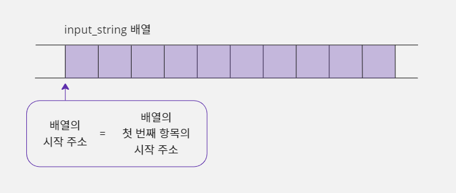
- 그렇기 때문에 배열이 시작 주소를 적을 때 첫 번째 요소의 주소인
&input_string[0]으로 적는 것이 정확한 표현이다.- 하지만 첫 번재 요소의 시작 주소와 배열의 시작 주소는 같기 때문에,
input_string이라고 적으면 컴파일러가 번역할 때&input_string[0]이라 적은 것과 같게 번역한다.- C 언어에서는 약간의 편의성을 위해 생략할 수 있는 것들은 최대한 생략할 수 있게 배려하고 있다.
- 그래서
gets(&input_string[0]);이라고 적지 않고gets(input_string);이라고 적을 수 있는 것이다.- 물론
input_string이라고 쓰지 않고 원칙대로 다 써도 된다.
gets함수로 문자열을 입력 받는 코드를 작성해 보자.
#include <stdio.h>
void main() {
// 문자열은 마지막에 NULL 문자 0을 포함해야 하므로 최대 9개의 문자까지 저장 가능함
char input_string[10];
gets(input_string); // 문자열을 입력 받아 input_string에 저장함
printf("input : %s\n", input_string); // 입력 받은 문자열을 출력함
}
jerok [Enter] 입력
input : jerok
gets함수는 [Enter]키까지 입력 버퍼에서 읽어와 처리하므로 입력 버퍼에 [Enter]키가 남아 있지 않다.- 따라서
rewind함수를 사용하여 입력 버퍼를 초기화할 필요가 없다. - 그리고 [Enter]키를 입력 버퍼에서 가져온다고 해서 [Enter]키 값을 문자열에 포함시키는 것이 아니라 입력 완료의 기준으로만 사용하기 때문에 실제 문자열에는 [Enter]키를 입력한 위치에 NULL 문자 0이 들어가게 된다.

- 배열에 jerokkim 문자열 자체가 들어가는 게 아니라 jerokkim에 대한 아스키코드가 들어가는 게 정확한 표현이다.
- 따라서 각 문자에 들어가는 아스키코드를 의미하기 위해
'j','e','r'처럼 작은 따옴표를 써야 정확하다.
gets 함수가 정의되어 있지 않다면 fgets 함수를 사용하자
- 만약 내가 사용하는 컴파일러에서
gets함수가 정의되어 있지 않다는 오류가 발생한다면gets함수 대신fgets함수를 사용하면 된다.fgets는 파일에서 데이터를 읽어오는 함수인데 파일 대신 표준 입력 장치를 의미하는stdin을 사용하면 표준 입력 버퍼에서 문자열을 받아올 수 있다.- 그래서
gets함수와 같게 동작한다.char input_string[10]; fgets(input_string, 10, stdin);
fgets함수의 두 번째 매개변수에 10을 사용했는데 이 값은 사용자가 입력한 문자열을 저장할 메모리(input_string)의 최대 크기이다.- 즉
input_string배열의 크기가 10이기 때문에 10을 적은 것이다.- 그리고
fgets함수를 사용하는 경우에는 문자열 끝에 [Enter]키 값이 포함된다.- [Enter]키는 아스키코드 값이 10이며 C 언어에서는
\n으로 표시한다.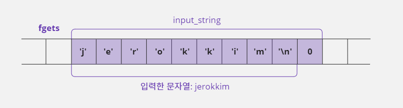
gets 함수에서 사용자 키 입력 취소 처리하기
- 표준 입력을 받는 중에 프로그램의 중지를 의미하는 [Ctrl] + [C]키를 사용자가 입력하면 표준 입력이 취소되고 프로그램이 중지된다.
- 사용자가 키보드로 문자를 입력하던 중에 [Ctrl] + [C]키를 입력하면 입력 버퍼에 들어 있는 문자들이
input_string배열에 복사되지 않은 상태로gets함수가 종료된다. - 그리고
printf에서input_string배열 내용을 그대로 출력하므로 엉뚱한 값이 출력된다. - 지역 변수는 명시적으로 초기화하지 않으면 어떤 값이 들어 있을지 예상할 수 없다.
- 이런 값들을 쓰레기 값이라고 부른다.
- 따라서
gets함수를 사용하여 문자열을 입력 받을 때는 사용자가 정상적으로 입력을 완료하지 않는 상황에 대처할 수 있도록 코드를 구성해야 한다. - 이것은
gets함수의 반환값을 확인해서 처리할 수 있다. gets함수는 사용자 입력이 정상적으로 완료되지 않았다면 '해당하는 메모리 주소가 없음'을 의미하는 널(Null) 값을 반환하고, 성공적으로 입력했다면input_data배열의 시작 주소를 반환한다.
NULL을 사용할 때 주의할 점
NULL은stdio.h파일에 선언되어 있으며 '값이 없음'이라는 뜻을 기본적으로 가지고 있다.- 따라서
NULL대신 0을 사용해도 컴파일러가 적절하게 판단하여 성공적으로 번역한다.- 하지만 프로그래머들은 대개
NULL을 '메모리 주소가 없음'으로 이해하기 때문에 0과NULL을 구별해서 사용하는 것이 프로그래머들 간에 오해를 줄일 수 있다.#define NULL ((void *)0) // stdio.h에 정의되어 있음
- 사용자의 입력을 취소할 수 있도록 예제를 수정해 보자.
#include <stdio.h>
void main() {
char input_string[10];
// 반환값이 NULL이 아니라면 문자열을 입력 받아서 input_string에 저장함
if (NULL != gets(input_string)) {
printf("input : %s\n", input_string); // 입력 받은 문자열을 출력함
} else {
printf("input -> Canceled\n"); // 사용자 입력이 정상적으로 완료되지 않아 반환값이 NULL일 때 출력할 문구
}
}
gets 함수에서 키 입력 횟수 제한하기
gets함수는 입력 받은 문자열의 개수를 제한하는 기능이 없기 때문에 자신이 예상한 길이보다 더 긴 문자열이 입력되는 경우에 프로그램이 비정상적으로 종료된다.- 즉 앞의 예제에서
input_string배열에 문자를 9개까지만 저장할 수 있기 때문에 사용자가 문자를 10개 이상 입력한 뒤 [Enter]키를 누르면 오류가 발생한다.fgets함수는 두 번째 매개변수를 사용하여 사용자가 입력하는 문자열의 개수를 제한하기 때문에 예상한 길이보다 길게 입력되는 문자열을 처리할 수 있다.
- 이 문제는
gets함수 자체의 한계 때문에 발생하는 문제라서 다른 대안이 필요하다. - 이 문제는
gets함수 안에서 문자열을 입력 받는 과정에서 발생하기 때문에gets함수의 소스 코드를 변경하지 않고는 해결할 수 없다. - 그런데
gets함수는 표준 입력 함수이기 때문에, 이미 만들어져 있는gets함수의 소스 코드를 프로그래머가 변경할 수 없다. - 따라서
gets함수와 비슷한 함수를 프로그래머가 직접 만들어서 이 문제를 해결해야 한다. - 다음 예제는 문자를 한 개씩 입력 받아 처리하는
getchar함수를 사용하여 마치gets함수처럼 문자열을 처리함으로써 이 문제를 해결한 것이다.
#include <stdio.h>
int GetMyString(char buffer[], int limit) {
// buffer는 사용자가 입력한 문자열을 저장할 배열이며 limit는 최대 입력 가능한 문자 개수이다.
// 이 함수가 1을 반환하면 정상 입력되었다는 뜻이고, 0을 반환하면 너무 길게 입력해서 제한된 개수만 받았다는 뜻이다.
int i;
for (i = 0; i < limit; i++) { // 최대 개수만큼 반복함
buffer[i] = getchar();
if (buffer[i] == '\n') { // [Enter]키가 체크되면 사용자 입력이 완료되었다는 뜻이므로 문자열을 완성한 뒤 함수를 종료한다.
buffer[i] = 0; // [Enter]키 위치에 0을 넣어서 문자열을 완성함
return 1; // 정상적으로 입력이 완료됨
}
}
buffer[i] = 0; // 반복문을 빠져나왔다는 뜻은 입력 개수 제한을 초과했다는 뜻이므로 현재 위치에 0을 넣고 문자열을 완성한다.
rewind(stdin); // 표준 입력 버퍼에 남아 있는 문자들을 제거함
return 0; // 입력 초과 현상이 발생했음을 알림
}
void main() {
char temp[10];
int state;
// 사용자에게 최대 9개까지만 입력 받겠다고 제한함
state = GetMyString(temp, 9);
if (state == 1)printf("input : %s\n", temp); // 정상 입력함
else printf("input : %s -> out or range\n", temp); // 범위를 초과함
}
i am a developer [Enter] 입력
input : i am a de -> out or range
- 이렇게
GetMyString함수를 직접 만들어 사용하면 사용자의 입력 개수를 명시적으로 제한하여 프로그램이 비정상적으로 종료되는 상황을 막을 수 있다.
14-3. 문자열을 정수로 변환하기
문자열을 정수로 변환해 사용하기
gets함수를 사용하다 보면 오류는 아니지만 또 다른 불편함이 있다.gets함수가 문자열을 입력 받는 함수이기 때문에 "12345"와 같이 숫자 형태로 입력하더라도 정수가 아닌 문자열로 인식한다.- 이렇게 문자열로 인식하면 산술 연산을 할 수 없을 것이다.
- 예를 들어 사용자에게 두 개의 숫자를
gets함수로 입력 받고 그 숫자를 합산해서 출력하는 프로그램을 만들 경우, 입력 받은 두 숫자가 문자열이기 때문에 합산을 할 수 없다는 뜻이다. - 따라서
gets함수로 입력 받은 값을 가지고 덧셈 연산을 하려면 문자열을 정수 값으로 변환해서 사용해야 한다.
1단계: 아스키코드 표를 이용해 문자열을 정수로 변환하기
- 문자열을 정수 값으로 변환하는 방법은 의외로 간단하다.
- 컴퓨터에서 사용하는 문자들을 숫자와 연결시켜 주는 아스키코드 표에서 숫자는 '0'부터 '9'까지 순차적으로 나열되어 있다.
- 각 문자로 된 숫자의 아스키코드 값을 확인해 보면 문자 '0'이 48, 문자 '1'이 49, 문자 '2'가 50, 문자 '3'이 51 ⋯ 의 순서로 되어 있다.
- 따라서 문자로 된 숫자의 시작 값인 문자 '0'의 아스키코드 값을 각 숫자 형식의 문자에서 빼면 정수 형태이 숫자 값으로 바뀌게 된다.
'0' - '0' => 48 - 48 => 0 : 문자 '0'이 숫자 0으로 변환
'1' - '0' => 49 - 48 => 1 : 문자 '1'이 숫자 1로 변환
'2' - '0' => 50 - 48 => 2 : 문자 '2'가 숫자 2로 변환
'3' - '0' => 51 - 48 => 3 : 문자 '3'이 숫자 3으로 변환
- "123"이라는 문자열을 숫자 123으로 변환하고 싶으면 문자 '1', '2', '3'을 하나씩 숫자로 변환하고 각 숫자를 100의 자리, 10의 자리, 1의 자리에 맞춰서 123으로 재구성해야 한다.
'1' - '0', '2' - '0', '3' - '0' => 1, 2, 3
- 그 다음으로 1은 100의 자릿수이기 때문에 100을 곱하고 2는 10의 자릿수이기 때문에 10을 곱하고 3은 1의 자릿수이기 때문에 1을 곱해서 이 수들을 합산하면 123이 된다.
('1' - '0') x 100 + ('2' - '0') x 10 + ('3' - '0') x 1 = 1 x 100 + 2 x 10 + 3 = 123
- 이제 위와 같은 기능을 소스 코드로 작성해 보자.
#include <stdio.h>
void main() {
// pos_num은 각 자릿수에 곱할 숫자, num은 정수로 변환될 숫자를 저장할 변수
int pos_num = 100, num = 0, i, temp_num;
// 정수로 변환할 문자열
char num_string[4] = "123";
for (i = 0; i < 3; i++) {
// 배열의 각 항목을 문자에서 정수로 변경함
temp_num = num_string[i] - '0';
// 정수화된 숫자에 자릿수에 해당하는 숫자를 곱해서 합산함
num = num + temp_num * pos_num;
// 다음 자릿수를 구성하기 위해 10을 나눔. 100 -> 10 -> 1
pos_num = pos_num / 10;
}
// 변환될 정수 값을 %d를 사용해서 출력함
printf(" %s -> %d\n", num_string, num);
}
123 -> 123
문자열 정수
num_string에 저장되어 있는 문자열 "123"을 정수 123으로 변경하려면 반복문을 사용하여 배열의 각 요소에 들어 있는 문자를 숫자로 만들어주어야 한다.- 문자를 숫자로 만들려면
num_string[i]에 저장된 문자 값에서 '0'값을 빼면 된다. - 그리고 문자를 숫자로 변경하면서 현재 자릿수에 해당하는 값을 가지고 있는
pos_num을 곱해서num이라는 변수에 합산하는 형식으로 작업을 진행하면 최종적으로num에 정수 값 123이 저장된다. - 하지만 이 예제처럼 코드를 구성하면 딱 3자리로 구성된 문자열만 숫자로 변환할 수 있다.
- 좀 더 다양한 길이의 문자열("1234", "56", ⋯ )을 숫자로 만들려면 자릿수와 반복 횟수를 고정하면 안 된다.
- 그래서 다음 예제처럼 문자열의 길이를 구해서 자릿수와 반복 횟수로 사용하면 다양한 문자열을 숫자로 만들 수 있다.
#include <stdio.h>
#include <string.h> // 문자열 길이를 구하는 strlen 함수를 포함하는 헤더 파일
void main() {
int pos_num = 1, num = 0, i, count;
char num_string[4] = "123";
// 문자열의 길이를 구해서 count 변수에 저장하면 count에 3이 저장됨
count = strlen(num_string);
// 문자열의 길이보다 1만큼 작게 반복해야 함
for (i = 0; i < count - 1; i++) pos_num = pos_num * 10;
// 문자열의 길이만큼 반복함
for (i = 0; i < count; i++) {
num = num + (num_string[i] - '0') * pos_num;
pos_num = pos_num / 10;
}
printf("%s -> %d\n", num_string, num);
}
123 -> 123
문자열 정수
숫자 형식의 문자열을 정수로 만드는 좀 더 간단한 표현
- 지금까지 본 예제는 자릿수에 곱할 숫자를 미리 구성하고 변환하는 방식을 사용했다.
- 자릿수에 곱할 숫자를 미리 구성하지 않고 문자열 순서대로 각 문자를 정수로 만들면서 명령을 반복할 때마다 10을 곱하면 결국 같은 결과 값을 얻을 수 있다.
- 새롭게 사용할 방식은 배열의 각 요소 값을 계산할 때 별도의 자릿수 값을 곱하는 것이 아니라 일정하게 10을 곱해서 사용하기 때문에 문자열의 길이도 계산할 필요가 없다.
#include <stdio.h>
void main() {
int num = 0, count = 0;
char num_string[4] = "123";
// 문자열이 끝날 때까지 반복함
while (num_string[count] != 0) {
num = num * 10 + (num_string[count] - '0');
count++; // 다음 문자로 이동함
}
printf("%s -> %d\n", num_string, num);
}
123 -> 123
- 이렇듯 프로그래밍을 하다 보면 약간의 생각 전환을 통해서 소스 코드가 간결하게 변경되는 경우가 있다.
- 이런 생각을 좀 더 잘하려면 프로그램을 많이 작성해 보는 것도 좋지만 알고리즘(Algorithm)이나 오토마타(Automata) 같은 이론을 공부하는 것이 더 좋다.
2단계: 숫자 형식의 문자열을 처리하는 함수 만들기
- 숫자 형태로 구성된 문자열을 정수로 바꾸는 함수는 사용 빈도가 높다.
- 그래서 함수로 구성해 놓고 프로그램에서 사용하는 것이 좋다.
- 다음 코드는
gets함수를 사용하여 사용자에게 두 개의 숫자를 입력 받아서 합산하는 예제이다.
#include <stdio.h>
int ArrayToInteger(char string[]) { // 문자열을 정수로 바꾸는 함수이다
int count = 0, num = 0;
// 문자열이 끝날 때까지 반복함
while (string[count] != 0) {
// 반복할 때마다 이전 값에 10을 곱해서 자릿수를 증가시킴
num = num * 10 + string[count] - '0';
count++; // 다음 문자로 이동
}
return num;
}
void main() {
int first_num, second_num;
char first_string[16], second_string[16];
printf("input first number :");
gets(first_string); // 첫 번째 문자열을 입력 받음
printf("input second number :");
gets(second_string); // 두 번째 문자열을 입력 받음
first_num = ArrayToInteger(first_string); // 문자열 -> 정수
second_num = ArrayToInteger(second_string); // 문자열 -> 정수
// 정수로 변환된 두 수를 합산한 결과 값을 출력함
printf("%d + %d = %d\n", first_num, second_num, first_num + second_num);
}
input first number :1212
input second number :212
1212 + 212 = 1424
- 위 예제는 사용자가 숫자를 입력할 때 너무 길게 입력하면 오류가 발생할 수 있기 때문에
gets함수 대신 앞에서 만든GetMyString함수를 사용해서 입력 개수를 제한하는 것이 더 좋다.
3단계: atoi 함수를 사용하여 문자열을 정수로 변환하기
- 앞에서 만든
ArrayToInteger함수는 C 언어 표준 라이브러리에서 제공하는atoi함수와 같은 기능을 수행한다. ArrayToInteger함수를 굳이 직접 만들지 않고atoi함수를 사용해서 작업해도 된다.- 위 예제에서
ArrayToInteger함수 대신에atoi를 사용하도록 재구성해 보자. atoi함수는stdlib.h파일에 함수의 원형이 정의되어 있으므로 이 함수를 사용하려면stdlib.h파일을 해당 소스 파일에include해야 한다.
#include <stdio.h>
#include <stdlib.h> // atoi 함수를 사용하기 위해 포함시킴
void main() {
int first_num, second_num;
char first_string[16], second_string[16];
printf("input first number :");
gets(first_string); // 첫 번째 문자열을 입력 받음
printf("input second number :");
gets(second_string); // 두 번째 문자열을 입력 받음
first_num = atoi(first_string); // 문자열 -> 정수
second_num = atoi(second_string); // 문자열 -> 정수
// 정수로 변환된 두 수를 합산한 결과 값을 출력함
printf("%d + %d = %d\n", first_num, second_num, first_num + second_num);
}
input first number :534
input second number :778
534 + 778 = 1312
14-4. 표준 입력 함수 scanf
만능 표준 입력 함수 scanf
- 문자열을 다루기 위해서는 배열을 알아야 하고 이제부터 배울
scanf함수를 제대로 이해하려면 포인터를 알아야 한다. - 표준 입력 함수인
scanf는 scan format을 줄인 이름이다. - 앞에서 배운
getchar함수는 하나의 문자를 입력 받는 함수이고gets함수는 문자열을 입력 받는 함수이다. - 그런데 이
scanf함수는 다양한 키워드를 사용하여 문자·문자열뿐만 아니라 정수·실수까지 모두 입력 받을 수 있도록 형식화된 입력을 제공한다. - 형식화된 입력이란 자신이 입력 받을 데이터의 종류, 자릿수, 입력 형식 같은 것을 지정할 수 있다는 뜻이다.
- 이 함수가 입력 형식으로 사용하는 형식 지정 키워드는
printf함수에서 사용하는 것과 같다.
| 키워드 | %d | %hd | %f | %lf | %c | %s |
|---|---|---|---|---|---|---|
| 입력 형식 | 정수 (int) | 정수 (short int) | 실수 (float) | 실수 (double) | 문자 | 문자열 |
scanf함수를 사용하면 문자열을 정수로 변환하는atoi함수를 사용할 필요가 없다.- 또한
printf함수처럼%03d,%3.1f같은 형식으로 데이터를 입력 받을 수 있다. scanf함수를 사용하는 기본 형태는 다음과 같다.
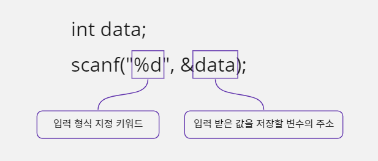
#include <stdio.h>
void main() {
int int_data;
float float_data;
scanf("%d", &int_data); // 정수 값을 입력 받음
scanf("%f", &float_data); // 실수 값을 입력 받음
printf("input : %d, %f\n", int_data, float_data);
}
1
2.1
input : 1, 2.100000
scanf 함수에서 & 연산자를 사용하는 이유
getchar함수는 한 번에 한 개의 값을 입력 받는다.- 따라서 함수 안에서 입력 받은 값을
return문으로 반환하여 변수에 저장한 후 사용할 수 있다. - 반면에
scanf함수는 한 번의 함수 호출로 여러 개의 값을 입력 받을 수 있도록 만들어졌기 때문에 포인터가 꼭 필요하다. - 그런데 입력 값을 여러 개 받으려면 왜 포인터가 필요한 걸까?
int num1, num2;
scanf("%d %d", &num1, &num2); // 첫 번째 %d는 num1 변수와 짝이 되고
// 두 번째 %d는 num2 변수와 짝을 이룬다
- 두 개의 정수 값을 입력 받아
num1변수와num2변수에 저장한다고 생각해 보자. - 한 개의 값이면
getchar함수를 사용해서return문으로 반환값을 받아 변수에 저장하면 될 것이다. - 하지만 지금 같은 경우에는 여러 개의 값을 동시에 입력 받아야 하기 때문에
return문을 사용할 수 없다. - 그래서 포인터를 통해 입력 값을 저장할 두 변수의 '주소'를 활용하는
scanf함수가 필요하다. &연산자를 사용하여 사용자가 입력한 값을 저장할 변수의 주소를 넘겨주면scanf함수는 해당 주소를 사용하여 입력 형식 키워드(%d,%f, ⋯ )에 맞게 입력 값을 해당 변수에 넣어 준다.- 예를 들어 입력 형식 키워드에
%d를 적었다면 사용자가 키보드로 입력한 값을 정수 값으로 변환해서scanf로 전달된 주소에 저장한다는 뜻이다.
scanf 함수에서 입력된 값을 구분하는 방법
scanf함수도 표준 입력 함수이기 때문에 [Enter]키를 눌러야 입력이 끝난다.- 하지만 위의 예처럼 사용자가 한 번에 여러 개의 데이터를 입력할 수 있다.
- 이때 입력 값의 구별은 [Enter]키로도 할 수 있고 공백(Space) 문자로도 가능하다.
- 그리고 이 함수는 특별한 값 없이 [Enter]키나 공백 문자가 여러 개 입력되면 그 입력은 무시해 버리고 실제 정보를 기준으로 입력을 받아들인다.
scanf 함수로 문자열을 입력 받을 때 주의할 점
scanf함수가 [Enter]키와 공백 문자를 사용하여 입력을 구분하다 보니 문자열을 입력할 때 중간에 공백이 들어가면 자신이 원하는 문자열을 다 입력 받지 못하는 문제가 발생하기도 한다.- 예를 들어 사용자에게 집 주소를 입력 받기 위해 소스 코드를 구성했다고 생각해 보자.
- 집 주소는 보통 공백을 포함하기 때문에 잘못하면 집 주소의 첫 단어만 입력 받게 될 수도 있다.
#include <stdio.h>
void main() {
char temp[32];
scanf("%s", temp); // 문자열을 입력 받음
printf("input string : %s\n", temp); // 입력 받은 문자열을 출력함
}
Hello, world!
input string : Hello,
- 앞 예제의
scanf함수는%s키워드를 사용했기 때문에 사용자의 입력 데이터를 문자열로 처리한다. - 그런데 사용자가 문자열을 입력할 때 "Hello, world!"와 같이 중간에 공백을 포함시켜 입력하면 공백까지를 한 개의 문자열로 생각하기 때문에
temp배열에는Hello,까지만 저장된다. - 그리고 처리되지 않은
world![Enter]는 입력 버퍼에 그대로 남게 되고 다음 표준 입력 함수에 영향을 준다. - 따라서 사용자가 입력하는 문자열에 공백이 포함된다면
scanf대신에gets함수를 사용하는 것이 더 좋다 - 참고로 이 예제에서
scanf함수를 사용할 때 배열 변수temp앞에는&연산자를 쓰지 않았다. - 배열 변수 이름을 사용하면 이름 자체가 해당 배열의 시작 주소를 의미하기 때문이다.
- 배열과 포인터의 관계에 대한 더 자세한 내용은 15장에서 알아보자.
공백 문자로 구분해서 여러 개의 정보 입력 받기
printf함수처럼scanf함수도 정수를 사용할 때 8진법(%o), 10진법(%d), 16진법(%x)을 구별해서 사용할 수 있다.- 소스 코드에서는 진법을 사용할 때 8진수 앞에 0을 붙이고 16진수 앞에 0x를 붙여서 사용하지만 사용자가 키보드로 입력할 때는 0이나 0x를 붙여서는 안된다.
#include <stdio.h>
void main() {
int num1, num2, num3;
scanf("%o %d %x", &num1, &num2, &num3); // 8, 10, 16진수 값 입력 받음
// 입력 받은 숫자 값을 10진수로 출력함
printf("input : %d, %d, %d\n", num1, num2, num3);
}
10 10 10
input : 8, 10, 16
scanf 함수는 입력 형식 키워드와 자료형이 일치해야 한다
printf함수는 변수의 값을 전달 받아 사용자가 지정한 형식(Format)에 맞게 출력하는 방식으로 구성된 함수이다.- 따라서 정수를 받는
%d키워드를 사용하면 변수의 자료형과 상관없이 10진수로 변수의 값을 출력한다. - 하지만
scanf함수는&연산자를 사용하여 변수의 주소를 전달 받는 방식이기 때문에%d키워드를 사용하면 반드시 정수 자료형인int형 변수를 사용해야 한다.
char data1 = 5;
short data2 = 6;
int data3 = 7;
printf("%d %d %d", data1, data2, data3); // 화면에 정상적으로 5 6 7이 출력됨
scanf("%d %d %d", &data1, &data2, &data3); // 입력 키워드와 자료형이 다름
// 번역할 때 오류는 없지만 실행할 때 문제가 발생함
scanf함수에서%d키워드를 사용하면 함수 내부적으로int *형 포인터를 사용해 사용자의 입력 값을 처리한다.- 그래서
scanf함수로 입력 받은 값을 저장할 변수의 자료형에char나short처럼int보다 작은 크기를 지정하면 원하지 않는 메모리를 사용하게 되어 실행할 때 오류가 발생하게 된다. %x와%o도%d와 마찬가지로int *로 처리된다.
입력 키워드와 자료형이 다를 때 scanf 함수는 어떻게 동작할까?
- 위 예시에서 자료형이 일치하지 않는
data2변수의 주소가 전달되는 과정을 살펴보면 다음과 같다.short data2; int *p = (int *) &data2; // 포인터 p는 data2 변수의 시작 주소를 가짐 *p = 0x12345678; // p 변수에 저장된 주소로 가서 0x12345678 값을 저장함
scanf함수는 내부적으로void *형으로 입력을 처리하기 때문에 어떤 주소 형식이 오더라도 다 받을 수 있다.%d를 사용하면int *형으로 받고,%c를 사용하면char *형으로 받는다.- 즉
scanf함수는 어떤 자료형의 변수 주소가 전달되어도 모두 저장할 수 있기 때문에 프로그래머가 신경 써서 형 변환을 해주지 않아도 된다.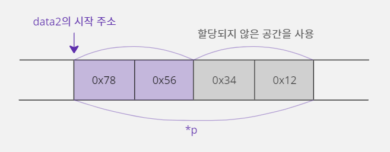
- 앞의 코드와 그림을 보면
data2변수의 크기가 2바이트인데data2변수의 주소를 저장한 포인터 변수p는 4바이트 크기의 대상을 가리킨다.- 따라서
p변수에 저장된 주소에0x12345678값을 대입하면data2변수의 범위를 벗어나서 할당되지 않은 공간에도 값이 저장되는 문제가 발생한다.scanf함수를 사용할 때는 입력 형식 키워드와 입력 받는 자료형이 일치해야 함을 기억하자!
- 지금까지 이야기한 내용을 정리하면,
scanf함수는 포인터를 사용하기 때문에 형식을 지정하는 키워드(%d,%c, ⋯ )와 변수의 자료형이 맞지 않으면 프로그램에 오류가 발생할 수 있으니 주의해야 한다.
| 입력 형식 키워드 | 변수 자료형 |
|---|---|
%c | char, unsigned char |
%o %d %x | int, unsigned int |
%f | float |
%lf | double |
%s | char *, char [] |
꼭 short형으로 값을 입력 받고 싶다면?
short형 데이터에 값을 입력 받고 싶다면%d가 아니라%hd키워드를 사용하여 값을 입력 받아야 한다.- 8진수는
%ho, 16진수는%hx를 사용하면 된다.short data; scanf("%hd", &data); // %hd를 사용하여 2바이트 크기로 값을 입력 받음
scanf 함수 사용할 때 잘못된 사용자 입력 처리하기
scanf함수를 사용하여 사용자에게 나이를 입력 받는 예제를 작성해 보자.- 나이는 -5처럼 음수가 될 수 없고, 200살처럼 너무 많을 수도 없다.
- 따라서 사용자가 -5 또는 200과 같은 비정상적인 값을 입력하면 정상 값을 입력할 때까지 계속해서 입력을 받도록 코드를 구성해 보자.
#include <stdio.h>
void main() {
int num = 0;
// 정상적인 나이를 입력할 때까지 반복하기 위해 무한 반복을 사용함
while (1) {
printf("input age :");
scanf("%d", &num); // 한 개의 정수 값을 입력 받음
// 0보다 크고 130 이하인 숫자만 정상적인 나이로 인정함
if (num > 0 && num <= 130) {
break; // 정상적으로 입력되었기 때문에 반복문을 빠져나감
} else {
// 나이의 범위가 잘못 입력되었다고 알림
printf("Incorrect Age!!\n");
}
}
// 입력된 나이를 확인하기 위해 출력함
printf("your age : %d\n", num);
}
input age :-5
Incorrect Age!!
input age :200
Incorrect Age!!
input age :10
your age : 10
- 위 코드는 정상으로 보이지만 사실 치명적인 오류를 포함하고 있다.
- 만약 사용자가 실수로 나이에 "abc"라고 입력하면 'Incorrect Age!!' 메시지를 무한 반복으로 출력한다.
- 이러한 현상이 발생하는 이유는
%d를 사용했는데 정수 형태의 숫자 패턴이 입력되지 않고 문자열이 입력되었기 때문이다. scanf함수가 입력을 오류로 처리하면 입력 버퍼에 저장되어 있는 "abc[Enter]"를 그대로 두고 오류 값 0을 반환한다.- 그리고 처리에 실패했기 때문에 인수로 넘긴
num값이 0으로 유지되어(num > 0 && num <= 130)조건에 의해 'Incorrect Age!!'가 무한 출력되는 것이다. - 그리고 반복문이 종료되지 않았기 때문에
scanf는 다시 실행하지만 입력 버퍼에는 이전에 입력했던 "abc[Enter]"라는 값이 남아 있다. - 따라서 사용자에게 다른 데이터를 입력 받지 않고 입력 버퍼에 남아 있는 내용을 다시 사용한다.
- 그런데 입력 버퍼에 있는 값은 숫자 패턴이 아니라서 또다시
scanf함수의 실행은 실패하게 된다. - 결국 이 실패가 계속 반복되기 때문에 'Incorrect Age!!'만 반복해서 출력하는 것이다.
- 이 문제는 사용자의 잘못된 입력으로
scanf함수가 실패했을 때 입력 버퍼에 저장되어 있는 잘못된 값들을 제거해 주는 코드가 없어서 발생한 것이다. - 따라서
scanf함수의 실행이 실패했는지를 확인하여 실패했으면 입력 버퍼에 저장된 내용을rewind함수로 지워 주면 문제가 해결된다.
#include <stdio.h>
void main() {
int num = 0;
// 정상적인 나이를 입력할 때까지 반복하기 위해 무한 반복을 사용함
while (1) {
printf("input age :");
// scanf 함수는 실행에 실패하면 0을 반환함
if (scanf("%d", &num) == 0) {
rewind(stdin); // 입력 버퍼를 모두 지움
printf("[Enter] digit number!!\n");
} else {
// 0보다 크고 130이하인 숫자만 정상적인 나이로 인정함
if (num > 0 && num <= 130) {
break; // 정상적으로 입력되었기 때문에 반복문을 빠져나감
} else {
// 나이의 범위가 잘못 입력되었다고 알림
printf("Incorrect Age!!\n");
}
}
}
// 입력된 나이를 확인하기 위해 출력함
printf("your age : %d\n", num);
}
input age :abd
[Enter] digit number!!
input age :-2
Incorrect Age!!
input age :180
Incorrect Age!!
input age :99
your age : 99
- 만약 위 예제에서 숫자 패턴도 아니고 문자 패턴도 아닌 "123abc"라고 입력했다면
scanf함수가 실패하지 않고 정상적으로 처리되면서num변수에 정수 값 123이 입력된다. - 하지만
scanf함수는 자신에게 필요한 123만 이용해서 숫자 값을 처리하기 때문에 사용하지 않은 "abc[Enter]"문자열은 입력 버퍼에 그대로 남겨 둔다. - 따라서 다음번에 호출되는 표준 입력 함수가 있다면 사용자에게 입력을 받지 않고 이 값을 사용하므로 또 다시 무한 반복한다.
- 그렇기 때문에 사용자 입력 오류를 정확하게 확인하려면 데이터를 입력 받기 전이나 입력 받은 후에
rewind함수를 적절하게 사용하여 표준 입력 버퍼를 비우는 것이 좋다.
15. 배열과 포인터
- 배열은
[]연산자를 사용해서data[3]과 같이 표기하고 포인터는*연산자를 사용해서*data와 같이 표기한다. - 그런데 이 둘을 함께 사용하여
*data[3]과 같이 표기하는 경우가 있는데 이 문법은 배열일까? 포인터일까? - 배열과 포인터의 표기상의 특징을 알아보고 이 두 문법을 섞어서 사용했을 때의 장점을 100% 활용하는 방법을 알아보자.
- 어떤 상황에서 이런 문법을 사용하면 좋은지도 함께 알아보자.
15-1. 배열과 포인터 표기법
배열 표기법과 포인터 표기법의 관계
- 배열은
[]연산자를 사용하여 표현하고 포인터는*연산자를 사용하여 나타낸다. - 변수를 선언할 때 변수의 역할이나 특성이 결정되기 때문에 표현 방식의 선택은 매우 중요하다.
- 포인터는 포인터 변수가 가리키는 메모리의 시작 주소를 기준으로 삼고, 배열도 해당 배열이 사용하는 메모리 그룹의 시작 주소를 기준으로 삼는다.
- 따라서 두 문법은 표기만 다를 뿐 문법 구조는 비슷하다.
- 그래서 다음과 같이 두 문법의 표기법을 바꿔서 사용할 수도 있다.
배열:char data[5]; data[1] = 5; // *(data + 1) = 5;는 data[1] = 5; 와 같음 *(data + 1) = 5;
포인터:char data; char *p = &data; // data 변수의 주소를 p에 저장함 *p = 3; // p가 가리키는 data 변수에 3을 대입함 p[0] = 3; // *p = 3; 과 같음

배열 표기법의 한계
- 배열 표기법인
data[2]가 포인터 표기법인*(data + 2)에 비해 좀 더 간단해 보이기 때문에 배열 표기를 굳이 포인터 표기로 바꿔 사용할 이유가 없다고 생각할 수도 있다. - 하지만 어떤 문법이든 표기가 간단하다는 뜻은 표현에 제약이 있다는 뜻과 같다.
- 어떤 표현의 제약이 있는지 예를 들어 보자.
- 다음과 같이
data라는 1차원 배열을 선언하고 각 요소를 값 0x12345678로 초기화 했다.
int data[2] = {0x12345678, 0x12345678};

- 위와 같이 선언한
data배열에서data[0]요소는 총 4바이트로 구성되어 있다. - 그런데 첫 번째 바이트에 있는 값
0x78을0x22로 변경하고 싶어서 배열 표기법으로data[0]에0x22를 대입하면 어떻게 될까?
data[0] = 0x22; // data 배열 항목이 크기가 4바이트이기 때문에 값 0x00000022가 대입됨
- 배열 표기법으로
data[0]이라고 적으면 4바이트 크기의 메모리를 의미하기 때문에0x22를 대입한다고 해서data[0]의 일부 값만 변경되는 것이 아니다. - 다음 그림처럼 4바이트 값이 모두 변경되어 버려서
data[0]에는0x00000022값을 대입한 것과 같다.

- 즉 배열 표기법은 요소를 구성하는 모든 바이트 값을 한 번에 수정한다.
배열 표기법 대신 포인터 표기법을 사용하면?
- 이번에는 배열 표기법 대신 포인터 표기법으로 값
0x22를 대입해 보자. - 앞의 코드를 포인터 표기법으로 변경하면 다음과 같다.
*(data + 1) = 0x22; // data[1] = 0x22; 를 포인터 표기법으로 나타냄
- 이렇게 변경하면 다음과 같이
*연산자와(data + 1)사이에 형 변환(Casting) 문법을 사용할 수 있다.
*(char *) (data + 1) = 0x22; // 일시적으로 int *형을 char *형으로 변환함
data배열을int형으로 선언했기 때문에 포인터로 표기법을 변경하면int *형이 되는데 위처럼 형 변환하면 일시적으로char *형으로 변경하겠다는 뜻이다.int *형이char *형으로 변경된다는 것은 포인터가 가리키는 대상의 크기가 4바이트에서 1바이트로 변경된다는 의미이다.- 따라서
0x22값을 대입하면 4바이트 메모리 영역이 변경되는 것이 아니라 1바이트 메모리 영역만 변경된다. - 즉 다음 그림처럼
data[1]영역의 첫 1바이트만0x22값으로 변경되는 것이다. - 포인터 표기법은 배열 항목의 크기와 상관없이 자유롭게 값을 수정할 수 있다.

- 이처럼 배열 표기법을 사용하면 명령문 자체가 단순해서 보기는 좋지만 좀 더 세밀한 표현을 하는 데는 한계가 있기 때문에 포인터 표기법을 사용하는 것이다.
복잡한 수식은 배열 표기를 사용하면 간단해진다
- 포인터 문법은
*(p + 1)과 같이 두 개의 연산(포인터 연산과 덧셈 연산)이 합쳐 있는 형태이다.- 연산자 우선순위가
*연산자보다 괄호가 더 높기 때문에p + 1연산을 수행한 후에*연산을 수행한다.- 이처럼 포인터는 명령을 수행하기 위해 연산을 두 번 해야 하고, 연산자 우선순위 때문에 괄호까지 적어야 해서 복잡해 보일 수 있다.
- 아래와 같이 포인터로 구성된 복잡한 수식은 배열로 표기하면 훨씬 직관적이고 코드가 간단해진다.
int형으로 선언한tips변수의 주소를 1바이트 크기의 대상을 가리키는 포인터 변수p에 저장한다.int tips = 0x12345678, sum; char *p; // int형 변수인 tips에 1바이트씩 접근하기 위해 char *형 포인터를 선언함 p = (char *) &tips; // &tips는 int *형이기 때문에 형 변환을 사용해서 char *로 맞춤 sum = *(p + 0) + *(p + 1) + *(p + 2) + *(p + 3); // 각 바이트별로 값을 합산함
- 이렇게 하면
*p를 사용하여tips변수의 값을 1바이트 단위로 구별하여 사용할 수 있다.- 그래서
tips변수를 구성하는 4개의 바이트에 저장된 각각의 값을 포인터 변수p를 이용하여 합산하도록 구성했다.
sum = *(p+0) + *(p+1) + *(p+2) + *(p+3);이라고 적은 코드를 배열 표기법으로 변경해 보자.sum = p[0] + p[1] + p[2] + p[3];
15-2. 배열 시작 주소
배열 변수의 이름은 배열의 시작 주소
- 포인터는 일반 변수의 주소만 가질 수 있는 것이 아니라 배열과 같이 그룹으로 묶인 메모리의 주소도 가질 수 있다.
- 포인터 변수에 배열의 시작 주소를 대입할 때는 일반 변수와 마찬가지로
&연산자를 사용하면 된다. - 그런데 배열의 경우에는 첫 요소인
data[0]이 시작 주소가 배열 전체의 시작 주소와 같기 때문에 다음과 같이&연산자를 사용한다.
char data[4];
char *p = &data[0]; // 배열이 첫 번째 항목이 주소가 배열 전체의 시작 주소와 같음

- 위 설명에서 사용한
&data[0]은 포인터 표기법을 사용하면& * (data + 0)과 같이 표기할 수 있다. - 그리고 +0은 생략할 수 있기 때문에
& * data라고 적어도 된다.
char *p = &data[0];
char *p = & * (data + 0); // 배열 표기법을 포인터 표기법으로 변경한다.
char *p = & * data; // +0 생략
char *p = data; // 번지(주소)를 얻는 & 연산자와 번지(주소)를 지정하는 * 연산자는
// 서로 반대 개념의 연산자이기 때문에 서로 상쇄된다.
& * data의 의미는 무엇일까?&연산자와*연산자는 연산자 우선순위가 같기 때문에 함께 사용하면 뒤쪽에서 앞쪽 방향으로 연산이 수행된다.- 그래서
&*data는&(*data)와 같다. &(*data)의 의미는data가 가리키는 대상(*data)의 주소를 얻겠다(&)는 뜻이다.data가 가리키는 대상의 주소라는 의미는 결국data변수가 저장된 메모리의 주소와 같다.- 따라서
&(*data)는data라고도 적을 수 있다. - 정리해 보면 배열의 시작 주소를 얻을 때는 굳이
&data[0]이라고 쓰지 않고 그냥data라고만 적어도 된다. - 이런 이유 때문에 '배열 변수의 이름은 배열의 시작 주소'라고 말할 수 있다.
배열은 포인터가 아니다
- 배열이 포인터처럼 작동한다고 해서 완벽하게 포인터가 될 수는 없다.
- 문법적으로 포인터는 다른 변수의 주소를 저장할 수 있지만 배열은 컴파일러가 제공하는 메모리 그룹화 기술이다.
- 즉 배열 이름은 변수처럼 보이지만 내부를 들여다보면 실제로는 상수화된 주소이기 때문에 변경할 수 없다는 뜻이다.
- 즉 배열은 일반 변수들을 묶어 놓은 개념이기 때문에 변수가 자신이 위치한 주소를 변경할 수 없듯이 배열도 자신이 위치한 메모리 주소를 변경할 수 없다.
- 따라서 배열의 시작 주소도 변경할 수 없다.
배열의 이름이 상수화된 주소일까?
- 배열의 이름이 상수화된 주소라는 것을 이해하기 위해 먼저 다음 코드를 보자.
- 상수 100을
#define전처리기를 사용하여ADDR로 치환한 코드이다.
#define ADDR 100
- 그러면 치환된
ADDR를data변수에 대입할 수 있다. ADDR이#define으로 치환된 값이라는 것을 모른다면ADDR변수에 저장된 값을data변수에 대입한다고 오해할 수도 있었을 것이다.
int data = ADDR; // int data = 100; 과 같음
- 상수화된
ADDR가 변수가 될 수는 없다. ADDR는 100이라는 상수가 치환된 것이기 때문에 변수처럼 값을 대입할 수 없다.
ADDR = ADDR + 1; // ADDR는 상수이기 때문에 대입 불가능함. 100 = 100 + 1; 과 같은 표현임
- 배열 이름도 이렇게
#define전처리기를 사용하는 것과 비슷하다. - 배열 이름을 변수처럼 사용하지만 컴파일러가 배열 이름을 상수화된 주소로 치환해 주기 때문에 배열 이름 자체가 상수화 되어있다.
- 따라서 다음과 같은 표현은 사용할 수 없다.
char data[5]; // data 배열의 시작 주소가 100번지라고 가정함
data = data + 1; // 오류 발생. 배열은 자신에게 배정된 주소를 변경할 수 없다.
15-3. 배열을 사용하는 포인터
포인터로 배열의 주소를 저장하여 사용하기
- 배열은 해당 배열이 사용할 메모리 그룹의 시작 위치를 기준으로 색인 작업된 요소의 위치를 계산해 사용한다.
- 배열의 색인 작업도 연산이기 때문에 같은 요소를 반복적으로 사용하는 경우에 효율이 떨어진다.
- 예를 들어 다음은
char형으로 선언한data배열의 3번째 요소(data[2])를sum변수에 10번 더하는 코드이다.
char data[5] = {1, 2, 3, 4, 5};
int i, sum = 0, select = 2;
// sum 변수에 data[select]값을 10번 더함. 즉 data[2]요소 값을 10번 더하는 것과 같음
for (i = 0; i < 10; i++) sum = sum + data[select]; // data[select]는 select가 2이므로 data[2]
- 단순하게 생각하면
data[select]요소를sum에 10번 더하는 연산이라고 생각할 수 있다. - 하지만
data[select]요소를 사용하기 위해서는 내부적으로data + select연산을 해야 하기 때문에+ select연산도 10번 수행하는 것이다. - 위 코드에서
for반복문을 포인터 표기법으로 변경해 보면 이렇게 반복 연산을 하는 상황을 좀 더 이해하기 쉬울 것이다.

for (i = 0; i < 10; i++) sum = sum + *(data + select);
*(data + 2)값은 3이기 때문에for반복문을 실행한 후sum에 저장된 값은 30이 된다.data[select]를 10번 반복해서 더하는 것처럼, 배열의 특정 요소들이 지속적으로 많이 사용되는 경우에는 좀 더 효율적인 표현을 위해 배열이 특정 요소 주소를 포인터 변수에 저장해 놓고 사용하기도 한다.
char data[5] = {1, 2, 3, 4, 5};
int i, sum = 0, select = 2;
char *p = data + select; // p는 data[select] 요소의 주소를 가지므로
// char *p = &data[select]; 라고 사용한 것과 같다.
for (i = 0; i < 10; i++) sum = sum + *p;
- 위와 같이 코드를 구성하면
data[select]요소의 주소를 포인터p가 저장하고 있다. - 따라서
data[select]값을 나타내는*p를 사용하여sum에 10번 더하면 된다. - 요즘과 같이 컴퓨터 성능이 좋아지고 컴파일러의 최적화 능력이 좋아진 시대에 이런 코드로 효율을 논하는 것은 별로 의미가 없긴 하다.
- 지금까지 본 코드도 컴파일러가 자동으로 최적화해 준다.
- 하지만 아주 작은 차이라도 이렇게 표현하는 습관이 자신의 코드를 좀 더 효율적으로 바꿔 주기 때문에 기회가 될 때마다 사용해 보려고 노력하는 것이 좋다.
배열 예제를 포인터 사용해서 바꾸기
- 12장에서 만들어 본 '배열의 각 요소에 저장된 값을 합산하는 예제(
12_01_05.c)'를 포인터를 사용해서 만들어 보자. - 이 예제는
data배열의 시작 주소를 포인터 변수p에 저장한 뒤 반복문을 사용하여 가리키는 대상의 값을result변수에 합산하는 코드이다. - 포인터 변수
p가data배열의 시작 주소를 가지고 있기 때문에*p를 사용하면data배열의 첫 번째 요소만 가리킨다. - 반복문에서
p++;를 추가하여data배열의 다음 요소로 이동할 수 있게 코드를 구성해 보자.
#include <stdio.h>
void main() {
char data[5] = {1, 2, 3, 4, 5};
int result = 0, i; // 합산에 사용할 result 변수는 0으로 초기화함
char *p = data; // data 배열의 시작 위치를 포인터 변수 p에 저장함
// 5번 반복하면서 포인터 변수 p를 사용하여 배열의 각 요소를 result 변수에 합산함
for (i = 0; i < 5; i++) {
result = result + *p; // 포인터 변수 p가 가리키는 대상의 값을 result에 합산함
p++; // data 배열의 다음 항목으로 주소를 이동: data[0] -> data[1] -> ...
}
// 합산한 결과 값을 출력함
printf("data 배열의 각 요소의 합은 %d입니다\n", result);
}
data 배열의 각 요소의 합은 15입니다
증감 연산자도 다른 연산과 함께 사용할 수 있다
- 위 예제에서 다음 코드를 하나로 합쳐서 사용하는 경우도 있다.
result = result + *p; p++;result = result + *p++;
- 다음과 같이
*p++;라고 사용하면++연산자가 후위 연산을 수행하기 때문에*p작업을 수행한 뒤p++작업을 수행한다.
15-4. 배열과 포인터의 합체
배열을 기준으로 포인터와 합체하기
- 지금까지는 배열 문법과 포인터 문법은 서로 독립적인 문법처럼 설명하였다.
- 소스 코드를 구성할 때 함께 사용한 적은 있지만 변수를 선언할 때에는 각자의 문법을 사용했다.
- 지금부터는 이 두 문법을 결합해서 사용하는 문법에 대해 알아보자.
- 서로 다른 두 문법이 만나면 어떤 문법이 기준이 되는지에 따라 의미가 달라질 수 있다.
- 배열 문법이 기준이 되는 경우부터 살펴보자.
char *p1, *p2, *p3;
char *형 포인터 변수가 3개 필요하다면 위와 같이 선언해서 포인터 변수를 만든다.- 하지만 훨씬 많은 포인터가 필요한 경우에 하나씩 나열하는 것은 불편하다.
- 포인터 변수도 배열로 선언해서 사용할 수 있다.
- 예를 들어
char *형 포인터 5개가 필요하다면 다음과 같이 선언하면 된다. - 이렇게 하면 포인터와 배열 문법이 결합된 것이다.
char *p[5]; // char *p1, *p2, *p3, *p4, *p5; 라고 선언한 것과 같음
- 위와 같이 선언하면 포인터가 5개 선언된 것이기 때문에
p배열이 크기는 20바이트(포인터 변수는 주소를 저장하기 때문에 크기가 4바이트 * 5개)이다. - 개별 포인터를 사용하고 싶다면
p[0], p[1], p[2], p[3], p[4]라고 사용하면 되고, 각 포인터가 가리키는 대상에 값을 읽거나 쓰고 싶다면 앞에*연산자를 추가하여*p[0], *p[1], *p[2], *p[3], *p[4]라고 사용하면 된다.
char data1, data2, data3, data4, data5, i;
// 포인터 배열을 선언하면서 각 포인터가 사용할 주소를 초기화한다.
// p[0]에는 data1의 주소, p[1]에는 data2의 주소, ... p[4]에는 data5의 주소를 저장한다.
char *p[5] = {&data1, &data2, &data3, &data4, &data5};
for (i = 0; i < 5; i++) *p[i] = 0; // data1 ~ data5에 모두 0이 저장됨

- 포인터를 배열 형식으로 선언할 때
char *p[5];라고 선언한 것은char *(p[5]);라고 선언한 것과 같다. - 그 이유는
[]연산자가*연산자보다 연산자 우선순위가 높기 때문이다. - 따라서
p[5]가 우선이기 때문에p변수는 5개의 항목을 가진 배열이라는 뜻이 되고, 그 다음 조건에 의해 각 항목이char *형 포인터라고 정해진다. - 결과적으로 배열을 기준으로 결합되는 것이다.

포인터를 기준으로 배열과 합체하기
char *p[5];의*p에 괄호를 사용하여 다음과 같이 변경하면 의미가 완전히 달라진다.
char (*p)[5];
- 이렇게 선언해도 배열고 포인터가 결합되는 것인데, 이번에는 포인터 문법에 괄호를 사용했기 때문에 포인터가 기준이 된다.
- 이렇게 선언하면 괄호 속에 있는
*p가 먼저 처리되기 때문에p변수는 배열이 아니라 포인터라는 뜻이다. - 따라서
p변수의 크기는 4바이트이다. - 그리고 그 다음 조건인
char[5]에 의해서 포인터 변수p가 가리키는 대상의 크기가 5바이트라는 뜻이 된다.
- 일반 포인터는
*p라고 적으면 자신이 가리키는 대상에 가서 값을 읽거나 쓸 수 있지만, 위 포인터 변수는 가리키는 대상이 배열 형식(char[5])으로 선언되어 있기 때문에[]를 사용하여 대상을 한 번 더 선택해야 한다. - 예를 들어
p가 가리키는 대상의 4바이트 중 3번째 항목에 7을 넣고 싶다면 다음과 같이 사용한다.
- 그리고 포인터 변수
p는 다음과 같이 주소 연산을 하면p에 저장된 주소가 5씩 증가하게 된다. p가 가리키는 대상의 크기가char[5], 즉 5바이트이기 때문이다.
p++; // p = p + 1; 과 같으므로 주소가 5 증가함
- 그러면
char (*p)[5];로 선언한 포인터는 어떤 상황에 사용할까? - 이 형태는
char data[5];와 같은 1차원 배열을 가리키는 용도로 사용하기에는 어려워 보인다. - 단순하게 1차원 포인터
char *p;로 선언해도 충분히 사용할 수 있기 때문이다. char (*p)[5];는 1차원 포인터(*)와 1차원 배열([])이 결합된 형태이기 때문에 두 차원이 합쳐져 2차원의 개념을 가지게 된다.- 따라서 이 포인터는 2차원 배열을 가리키는 용도로 사용하는 것이 적합하다.
- 다음 예제는 2차원 배열로 선언한
char data[3][5];의 시작 주소를char (*p)[5];포인터에 저장해서 포인터p를 사용하여data배열의 각 요소 값을 변경하는 코드이다.
char data[3][5];
char (*p)[5]; // char[5] 크기의 대상을 가리킬 수 있는 포인터를 선언함
p = data; // 포인터 변수 p는 2차원 배열 data 변수의 시작 주소를 저장함
(*p)[1] = 3; // p가 가리키는 대상의 2번째 항목에 3을 대입함 p[0][1];과 같음
(*(p+1))[2] = 4; // p+1이 가리키는 대상의 3번째 항목에 4를 대입함 p[1][2]=4;와 같음
(*(p+2))[4] = 5; // p+2가 가리키는 대상의 5번째 항목에 5를 대입함 p[2][4]=5;와 같음
- 이 코드에서 포인터 변수
p가 사용되는 형식을 보면 2차원 배열과 비슷하게 2차원 개념을 사용하고 있다. - 물론 연산자 우선순위 때문에 괄호를 좀 많이 사용해야 하는 불편함이 있다.
- 코드를 더 간단하게 적으려면 포인터 표기법을 배열 표기법으로 변경할 수도 있다.

- 위 코드를 보고 스스로 그릴 수 있을 때까지 충분히 반복해서 그려보자.
- 그래야 배열이나 포인터의 구조를 확실하게 이해할 수 있다.
16. 메모리 할당
- 컴퓨터의 메모리는 운영체제가 관리한다.
- 그래서 프로그램이 실행되면 운영체제는 프로그램에게 메모리를 주어('메모리를 할당한다'라고 표현) 해당 프로그램이 메모리를 사용하게 해준다.
- 하지만 프로그램에게 허락된 메모리는 크기가 한정되어 있으므로 계획성 없이 사용하면 메모리가 부족할 수 있다.
- 운영체제가 메모리를 어떤 형식으로 프로그램에 제공하는지 그리고 이 메모리를 C 언어에서 어떻게 사용하는지 알아보자.
16-1. 프로세스와 메모리 할당
프로그램과 프로세스
- C 언어로 작성한 소스(
*.c) 파일은 컴파일 작업과 링크 작업을 거쳐서 기계어로 이루어진 실행 파일(*.exe)이 된다. - 이렇게 프로그래머가 만든 프로그램 실행 파일을 컴퓨터 사용자들은 프로그램(Program)이라고 부른다.
- 그런데 실행 파일에 있는 명령들은 CPU가 직접 실행할 수 없다.
- CPU가 이 명령들을 실행하려면 먼저 운영체제가 실행 파일의 명령들을 읽어서 메모리에 재구성하게 되는데, 이것을 프로세스(Process)라고 한다.
- 이렇게 메모리에 프로세스가 구성되면 CPU는 프로세스에 저장된 명령들을 실행할 수 있다.
- 프로세스는 단순히 실행할 명령들로만 이루어져 있는 것이 아니라 아래의 그림처럼 여러 가지 정보나 사용자가 입력한 데이터를 기억하는 메모리 공간도 포함하고 있다.
- 이러한 공간을 세그먼트(Segment)라고 한다.
- 프로세스는 세그먼트의 집합으로 구성되어 있으며, 코드 세그먼트(Code Segment, CS), 데이터 세그먼트(Data Segment, DS), 스택 세그먼트(Stack Segment, SS)는 각각 한 개 이상의 세그먼트로 구성된다.
- 세그먼트는 64Kbytes 이하의 메모리 블록이다.
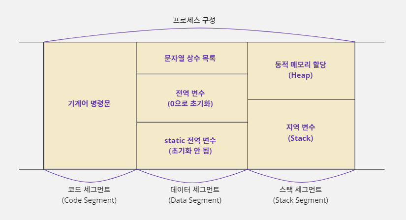
코드 세그먼트
- 컴파일러는 C 언어 소스를 기계어로 된 명령문으로 번역해서 실행 파일을 만든다.
- 실행 파일이 실행되어 프로세스가 만들어지면 이 기계어 명령들은 프로세스의 '코드 세그먼트'에 복사되어 프로그램 실행에 사용된다.
데이터 세그먼트
- 프로그램이 시작해서 끝날 때까지 계속 사용되는 데이터는 '데이터 세그먼트'에 보관된다.
- 이 영역에 있는 데이터는 컴파일할 때 정해지며 C 언어에서 사용한 문자열 상수나 전역 변수, static 변수가 이 영역을 사용한다.
스택 세그먼트
- '스택 세그먼트'는 프로그램 실행 중에 필요한 임시 데이터를 저장하는 데 사용하는 메모리 영역이다.
- 함수가 호출될 때 함수 안에 선언한 지역 변수가 이 영역에 할당된다.
- 이번 장에서 배우게 될 동적 메모리 할당 기술을 사용해서 할당된 메모리도 이 영역에 할당된다.
- 스택 세그먼트는 지역 변수가 놓이는 스택(Stack)과 동적으로 할당되는 메모리 공간인 힙(Heap)으로 나뉜다.
메모리 할당이란?
- 데이터를 저장할 메모리 공간을 적절하게 나누는 작업이 '메모리 할당'(Memory Allocation)이다.
- 운영체제가 응용 프로그램에 일정 크기의 메모리를 배정해 주기 때문에 필요한 크기만큼 적절하게 사용해야 메모리가 부족하지 않는다.
- 그리고 배정 받은 메모리를 순차적으로 할당하지 않고 비효율적으로 배치하면, 프로그램의 수행 속도를 떨어뜨리는 요인이 될 수도 있다.
정적 메모리 할당
- 컴파일러가 C 언어 소스 코드의 변수 선언 부분을 번역할 때, 데이터 세그먼트나 스택 세그먼트에 해당 변수를 저장할 메모리 영역을 배정한다.
- 이렇게 컴파일러가 코드를 기계어로 번역하는 시점에 변수를 저장할 메모리 위치를 배정하는 것을 정적 메모리 할당(Static Memory Allocation)이라고 한다.
- 메모리 할당 기준이 C 언어 코드가 기계어로 번역되는 시점에 결정되기 때문에 정적 할당된 메모리 크기나 개수를 변경하려면 코드를 변경하고 다시 컴파일해야 한다.
- 즉 프로그램이 실행될 때 메모리의 크기가 이미 결정되어 있으며, 실행되는 중간에 크기를 변경할 수 없는 메모리를 정적으로 할당된 메모리라고 한다.
변수가 메모리에서 유지되는 시간
- 이렇게 할당 받은 메모리는 지역 변수인지 전역 변수인지에 따라 유지되는 시간도 다르다.
- 그래서 메모리의 효율적인 관리를 위해 변수 종류에 따라 사용하는 메모리 공간의 위치도 달라진다.
- 전역 변수는 프로그램이 시작해서 종료할 때까지 할당 받은 메모리 상태를 계속 유지해야 하고, 프로그램이 실행되는 도중에는 새롭게 전역 변수를 추가하거나 삭제할 수 없다.
- 전역 변수를 저장하는 공간은 프로세스의 데이터 세그먼트에 별도로 마련되어 있다.
- 반면에 지역 변수는 함수가 호출될 때 메모리에 할당되었다가 함수가 끝나면 메모리 할당이 해제된다.
- 따라서 함수의 호출과 종료가 반복될 때마다 지역 변수의 메모리 할당과 해제 또한 반복된다.
- 이처럼 할당 받은 메모리 상태를 유지하지 못하는 지역 변수는 프로세스의 스택 세그먼트에 메모리가 할당된다.
정적으로 할당된 메모리를 관리하는 법
- 프로그램에서 변수를 사용하려면 자신이 사용할 변수의 주소를 알아야 한다.
- 컴파일러가 C 언어 코드를 번역하여 기계어로 변경할 때 주소를 포함하여 명령을 작성하는데 전역 변수는 프로그램이 시작해서 끝날 때까지 할당된 메모리 크기나 주소가 바뀌지 않기 때문에 전역 변수가 어디에 할당되어 있는지에 대한 추가 정보가 필요 없다.
- 하지만 지역 변수는 함수 호출에 따라 메모리 할당과 해제가 반복되기 때문에 변수 주소가 계속해서 바뀐다.
- 따라서 지역 변수를 사용하려면 그 변수의 현재 주소를 알아야 한다.
- 그런데 각 지역 변수의 현재 주소를 기억하기 위해서는 지역 변수의 개수만큼 추가 메모리가 더 필요하다.
- 이렇게 되면 메모리 낭비가 심할 것이다.
int Test() {
int a, b, c, d; // 컴파일할 때 변수가 4개이고 16바이트 크기라는 것을 알 수 있다.
a = 5; // START 주소에 5를 넣음
c = 3; // START + 8 주소에 3을 넣음
}
- C 언어는 코드를 번역하는 시점이 되어야 함수에 몇 개의 지역 변수가 선언되어 있는지 알 수 있다.
- 즉 같은 함수에 선언하는 변수들이 순차적으로 메모리에 할당되기 때문에 다음 그림처럼 하나의 메모리 그룹으로 관리할 수 있다.
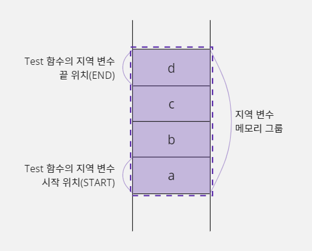
- 함수에 선언한 지역 변수를 하나의 메모리 그룹으로 관리할 수 있다는 것은 지역 변수의 개수에 상관없이 시작 위치(START) 포인터와 끝 위치(END) 포인터를 사용해 관리할 수 있다는 것을 의미한다.

- 예를 들어 컴파일러가 Test 함수의 코드를 번역하는 시점에
a = 5;명령문은 'START 위치에 5를 저장하라'는 의미의 기계어로 번역된다. - 그리고
c = 3;명령문은 'START + 8 주소에 3을 저장하라'는 의미의 기계어로 번역될 것이다. - 즉 C 언어 소스 코드에서 사용한
a,b,c,d변수들은START + 0,START + 4,START + 8,START + 12로 변경되어 사용되기 때문에 시작 위치 주소와 끝 위치 주소를 기억하는START,END포인터만 있으면 지역 변수 메모리 그룹을 관리할 수 있다.
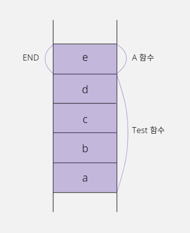
START포인터가END포인터 위치까지 가리키면서 움직이면 될 것 같은데,END포인터가 필요한 이유는 무엇일까?- 그 이유는
Test함수가A라는 함수를 호출한 경우에A함수에 선언한 지역 변수가END이후의 메모리 공간에 놓이기 때문이다. - 즉
END는 다음에 호출될 함수의 메모리 시작 위치를 결정한다.
int Test() {
int a, b, c, d;
...
A();
}
A() {
int e;
}
16-2. 지역 변수와 스택
스택에 대하여
- 스택(Stack)은 자료 구조(Data Structure)의 한 종류이며 두 개의 포인터로 많은 양의 데이터를 효과적으로 관리하는 이론이다.
- 스택은 다음 그림처럼 베이스 포인터(Base Pointer, BP)를 기준으로 데이터가 추가될 때마다 순서대로 쌓아 올리는 구조이며 새로운 데이터가 추가될 위치를 스택 포인터(Stack Pointer, SP)가 가리키게 된다.
- 지역 변수 관리 방식과 비교하자면 베이스 포인터가
START포인터, 스택 포인터가END포인터가 되겠다.
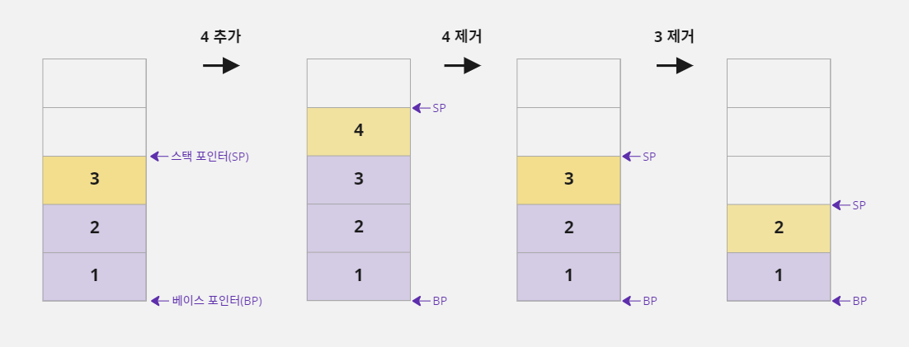
- 스택에 데이터를 추가하면 스택 포인터가 가리키는 주소의 메모리에 대입되고 스택 포인터의 주소는 4(32비트 운영체제)만큼 증가한다.
- 이렇게 데이터를 추가하는 작업을
PUSH라고 한다. - 그리고 데이터를 꺼낼 때는 가장 마지막에 추가된 값을 제거하고 스택 포인터 주소가 4만큼 감소한다.
- 이 작업은
POP이라고 한다. - 스택 포인터와 베이스 포인터에 저장된 주소가 같다면 스택에는 데이터가 없다는 뜻이다.
- 갑자기 스택에 대해서 이야기한 이유는 C 언어에서 함수 안에 선언한 지역 변수를 관리할 때 스택을 사용하기 때문이다.
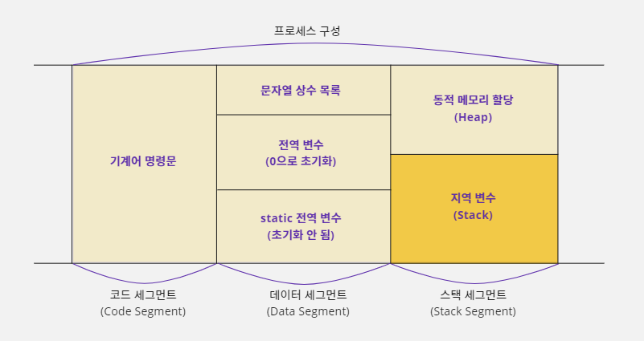
- 프로세스의 스택 세그먼트 영역을 보면 지역 변수가 놓이는 공간에 스택(Stack)이라고 적어 놓았다.
- 즉 스택 세그먼트의 지역 변수 영역은 앞에서 설명한 스택 이론으로 메모리를 관리할 수 있으며,
PUSH와POP을 이용해 데이터를 추가하거나 삭제할 수 있다. - 기계어의
push명령을 사용하면 스택 메모리 공간에 데이터가 추가되고pop명령을 사용하면 데이터를 꺼낼 수 있다. - 그런데 스택에서 한 가지 주의해야 할 점이 있다.
- 이론적으로 스택을 표현할 때는
PUSH가 스택에 데이터를 추가한다는 뜻이기 때문에 스택 포인터(sp)에 저장된 주소가 증가하도록 만든다. - 그런데 실제 컴퓨터 시스템에서
PUSH명령은 스택 포인터에 저장된 주소가 감소하도록 만들어져 있다. - 따라서 앞에서는
PUSH명령을 수행하면 스택 포인터 주소가 증가하는 것으로 설명했지만 지금부터는 스택 포인터 주소가 감소한다고 설명할 것이다.
| 자료 구조(이론) | 컴퓨터 시스템(실제) | |
|---|---|---|
| PUSH | 스택 포인터 주소 증가 | 스택 포인터 주소 감소 |
| POP | 스택 포인터 주소 감소 | 스택 포인터 주소 증가 |
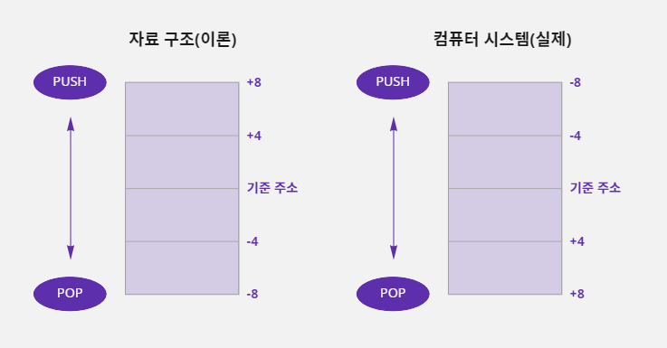
어셈블리어로 스택을 다룰 수 있다
- C 언어 문법은
PUSH,POP명령을 직접 사용할 수 없기 때문에 어셈블리어로 살펴보자.- 스택에 데이터를 추가할 때는
PUSH명령을 사용하여 이 명령과 함께 사용한 값은 자동으로 스택에 추가되고 스택 포인터는 4만큼 감소한다.- 반대로 스택에서 데이터를 하나 가져오고 싶은 경우에는
POP명령을 사용하며 스택의 가장 위쪽에 있는 값(스택 포인터가 가리키는 값)이 제거되고, 32비트 시스템을 기준으로 하기 때문에 스택 포인터는 4만큼 증가한다.- 그리고 스택에서 제거된 값은
POP명령과 함께 사용된 ax레지스터에 저장된다.- ax레지스터는 CPU내부에 있는 범용 메모리이다.
mov ax, 4 // push는 레지스터를 이용하기 때문에 ax 레지스터에 값 4를 저장함 push ax // ax 레지스터에 저장된 값(4)을 스택에 추가하고 SP 자동으로 감소함 pop ax // 스택에서 값 4를 꺼내서 ax 레지스터에 저장하고 SP 자동으로 증가함
컴파일러가 지역 변수를 저장할 메모리 공간을 확보하는 방법
- 앞에서 지역 변수는 스택 세그먼트의 스택 영역에 할당된다고 설명하였다.
- 아래와 같이 C 언어로 작성한 코드에
Test함수를 선언했다면 컴파일러는 코드를 번역하면서 이 함수가 세 개의 지역 변수를 사용한다는 것을 알게 된다.
void Test() {
int a, b, c;
...
}
- 즉
Test함수가 시작되는 시점에a,b,c변수를 저장할 메모리 공간을 스택 영역에 확보해야 하므로 따라서 컴파일러는 변수를 위한 메모리 공간을 확보하기 위해 ax 레지스터를 세 번push하는 코드를 기계어로 만든다. - 이렇게 하면 프로그램이 실행될 때
push가 3번 수행되어 4바이트 크기의 메모리 공간 3개가 스택에 추가된다. - 즉 스택 포인터의 주소가 4씩 세 번 감소하여 베이스 포인터와 스택 포인터 사이에 12바이트의 메모리 공간이 생긴다는 뜻이다.
- 그래서
a,b,c변수를 저장하는 데 이 메모리 공간을 사용할 수 있다.
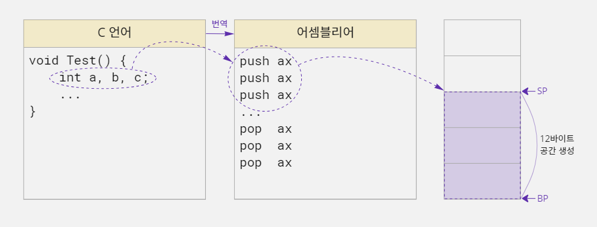
- 그리고
Test함수가 종료되는 시점에pop명령을 세 번 호출하여a,b,c변수를 저장하기 위해 스택에 할당했던 공간을 제거하면 된다. - 하지만 이런 방법을 사용하면 지역 변수가 많으면 많을수록
push코드와pop코드도 많아진다. - 그러면 당연히 프로그램 효율이 떨어질테고, 사실 컴파일러는 이 방법을 사용하지 않는다.
sub 명령과 add 명령을 사용하는 방법
- 스택에 변수를 할당할 때
push명령을 사용하면 스택 포인터에 저장된 주소가 4씩 감소한다. push를 세 번 하면 스택 포인터에 저장된 주소가 12만큼 줄어들 것이다.- 그런데 꼭
push명령을 사용해서 스택 포인터에 저장된 주소 값을 줄여야 할까? - 스택 포인터에 저장된 주소는 기계어 명령으로 직접 변경할 수 있는 값이기 때문에 아래 코드처럼
push명령을 사용하지 않고 뺄셈을 실행하는sub명령으로 스택 포인터 값에서 12를 빼도 된다. - 이렇게 하면 베이스 포인터와 스택 포인터 주소 값의 차이가 12가 되면서 결과적으로
push명령을 세 번 수행한 것과 같아진다.

- 또 함수가 끝날 때
pop명령을 세 번 실행한 것은 스택 포인터에 저장된 주소 값을 12만큼 증가시키는 것과 같다. - 따라서 컴파일러는 덧셈을 수행하는
add명령을 사용하여 스택 포인터 주소 값에 12를 더해주면 된다.
컴파일러가 스택에 할당된 지역 변수를 사용하는 원리
- C 언어 컴파일러는 지역 변수가 선언된 순서대로 메모리를 할당하기 때문에 앞의 그림처럼 스택에 블록 a, 블록 b, 블록 c 순서로 메모리를 할당한다.
- '블록'은 논리적으로 C 언어에서 선언한 변수를 위한 메모리 공간을 지칭한다.
- 공식적인 용어는 아니며 메모리 형태를 설명할때 이해를 편하게 하고자 사용한다.
- 그리고 스택에 저장된 데이터를 꺼내려면 가장 최근에 저장된 스택 포인터(SP) 바로 아래의 데이터부터 차례대로 꺼내야 한다.
- 예를 들어 데이터가
a,b,c순서로 저장되어 있다면c,b,a순서로 데이터를 꺼내야 한다는 뜻이다. - 그러면 C 언어에서 소스 코드에서 변수
b의 값을 5로 변경하면, 컴파일러는 어떤 작업을 해야 할까?

- ax, bx, cx 레지스터는 CPU 내부에 있는 범용 메모리이다.
- 변수
b의 값을 변경하려면 블록 c를 꺼내고 블록 b를 꺼내야 한다. pop명령을 사용하여 블록 c를 꺼내 bx 레지스터에 저장하고, 블록 b를 꺼내 ax 레지스터에 저장한다.- 그리고 ax 레지스터에 블록 b 값을 5로 변경한 후 스택에 다시
push하고,pop했던 블록 c 값을 다시 스택에push해줘야 한다. - 이 작업들은 프로그래머가 직접 하는 것이 아니고, 컴파일러 내부에서 일어나는 작업이다.
- 위 그림을 어셈블리어 코드로 나열해 보자.
pop bx // 스택의 가장 위에 있는 c 값을 bx에 저장하고 스택에서 c 영역을 제거함
pop ax // 스택의 가장 위에 있는 b 값을 ax에 저장하고 스택에서 b 영역을 제거함
mov ax, 5 // b 값을 변경하기 위해 ax에 값 5를 대입함
push ax // ax 값을 스택에 추가하여 b 영역에 값 5가 저장됨
push bx // bx 에 보관하고 있던 c 값을 다시 스택에 추가함
- 하지만 이런 방법으로 C 언어의 지역 변수가 처리되었다면 지금처럼 수행 속도가 빠르지 않았을 것이다.
- 왜냐하면 함수에 지역 변수를 많이 선언하면 변수 값 하나를 변경하는 데 수십 개의
push,pop명령을 반복해야 하기 때문이다. push와pop명령은 레지스터에만 사용할 수 있다.- 의미상으로는
push a,pop a와 같이 변수 이름으로도 사용할 수 있지만 틀린 표현이다.
블록과 레지스터는 어떤 점이 다를까?
- 블록 a, 블록 b, 블록 c는 논리적으로 C 언어에서 선언한 변수
a,b,c를 위한 메모리 공간을 의미한다.- 변수
a의 값이 저장되는 공간을 블록 a, 변수b의 값이 저장되는 공간을 블록 b, 변수c의 값이 저장되는 공간을 블록 c라고 생각하면 된다.- 반면에 ax 레지스터, bx 레지스터, cx 레지스터는 실제 CPU에서 연산을 수행할 때 사용되는 메모리이다.
- CPU는 변수
a,b,c를 위해 할당된 메모리 공간에 값을 직접적으로 넣거나 빼지 않는다.- 즉
a,b,c에 값을 저장하거나 읽을 때 컴퓨터 내부에서 실제로는 ax, bx, cx 레지스터를 사용한다고 생각하면 된다.
베이스 포인터를 사용하여 스택에 할당된 지역 변수 사용하기
- 컴파일러가 지역 변수를 사용하기 위해
push,pop명령을 수십 번 반복하는 것은 굉장히 비효율적인 작업이다. - 스택 메모리도 결국 메모리이기 때문에 컴파일러가 해당 변수의 주소를 알면 간접 주소 지정 방식(포인터) 개념을 사용해서
a,b,c영역의 값을 읽거나 저장할 수 있다. - 위의
a,b,c변수를 베이스 포인터 기준으로 표시해 보면 다음과 같다.
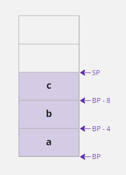
- 결국
a변수에 해당하는 메모리는 베이스 포인터에 저장된 주소로 사용할 수 있고b변수에 해당하는 메모리는BP-4에 해당하는 주소로 사용할 수 있다는 뜻이다.
스택 포인터를 사용해 스택에 할당된 지역 변수를 사용할 수 있을까?
- 지금까지의 설명은 모두 베이스 포인터를 기준으로
a,b,c를 사용한다.- 그렇다면 스택 포인터도 기준이 될 수 있지 않을까?
a,b,c를SP+12,SP+8,SP+4로 접근하면 가능해 보이긴 하다.- 하지만 이 방식은 추가적으로
push명령을 수행했을 때 스택 포인터 주소가 변경되기 때문에 사용하지 않는다.- 왜냐하면 CPU 내부에 있는 레지스터 메모리(ax, bx, cx, ⋯)의 개수가 적기 때문이다.
- 명령을 수행하다 보면 레지스터 메모리 개수가 모자라서 기존에 사용하던 ax 값을 잠시 보관할 목적으로
push또는pop이 자주 일어난다.- 예를 들어
b영역을 스택 포인터 기준으로 처리하기 위해SP+8주소를 사용했는데 이 명령을 처리하기 전에push가 수행되면 어떻게 될까?- 스택 포인터에 저장된 주소가 4만큼 감소하여
SP+8이SP+4처럼 동작한다.- 결과적으로
c영역에 값이 대입될 것이다.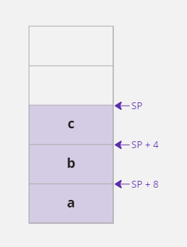
함수를 호출할 때 스택 메모리가 변화하는 과정
- C 언어로 작성한 프로그램은 한 개 이상의 함수로 이루어져 있고, 이 함수들 중에
main함수가 호출되면서 프로그램이 시작된다. - 그리고
main함수가 다른 함수를 호출하고 호출된 함수가 또 다른 함수를 호출하면서 프로그램이 진행되는 것이다.
#include <stdio.h>
void Show() {
int n, i, j;
printf("Show Function\n");
}
void Test() {
int y;
Show();
}
void main() {
int a, b, c;
Test();
}
- 예를 들어 다음과 같이
main,Test,Show함수로 구성된 프로그램이 있다면main함수가 호출되면서 프로그램이 시작되고main함수에서Test함수를 호출한다. - 그리고
Test함수에서는Show함수를 호출한다. - 마지막으로
Show함수에서는printf함수를 호출하여Show Function을 출력한다. printf함수 호출이 완료된 시점에서 각 함수들의 지역 변수가 스택 메모리에 어떻게 할당되어 있는지 살펴보면 다음과 같다.
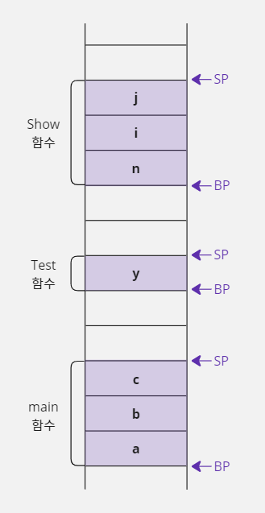
- 위의 메모리 그림을 보면 각 함수별로 베이스 포인터와 스택 포인터로 구분해서 지역 변수가 할당되어 있다.
- 그런데 이 메모리 그림은 이상한 점이 있다.
- 스택 메모리의 시작과 끝을 기억하는 베이스 포인터와 스택 포인터는 전체 메모리에서 각각 한 개씩만 사용할 수 있다.
- 그런데 자세히 살펴보면 베이스 포인터와 스택 포인터가 3개씩 그려져 있다.
- 어떻게 하면 한 쌍의 베이스 포인터와 스택 포인터만 가지고 각 함수를 사용할 수 있을까?
- 함수가 호출되면서 스택이 변화되는 과정을 순서대로 살펴보자.
- 일단 한 쌍의 베이스 포인터와 스택 포인터만 사용해서 표시할 수 있는 상황에서부터 시작해보자.
main함수가Test함수를 호출하기 전 스택의 메모리 상태는 다음과 같다.

1. main 함수가 Test 함수 호출하기
Test함수를 호출하기 위해 제일 먼저 해야 할 일은Test함수가 호출이 끝났을 때 다시main함수의 실행 위치(Test함수를 호출한 다음 행)로 돌아오기 위해서 현재 실행 위치를 기억하는 인스트럭션 포인터(Instruction Pointer, IP) 레지스터 값을 스택에 저장하는 것이다.
- 프로세스의 코드 세그먼트 영역에는 프로그램 실행과 관련된 명령 목록이 저장되어 있다.
- CPU는 이 명령 목록의 명령을 하나씩 실행하면서 프로그램을 진행하는데, CPU의 인스트럭션 포인터(IP) 레지스터가 현재 실행 위치를 기억하고 있다.
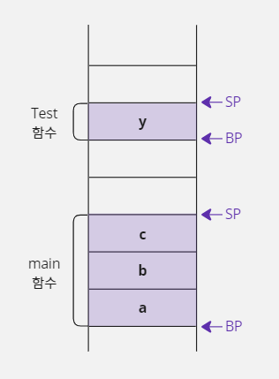
- 그런 다음 베이스 포인터와 스택 포인터에 저장된 주소를
Test함수 기준으로 변경한다. - 그런데 베이스 포인터(BP)의 주소를
Test함수 기준에 맞도록 다른 주소를 대입하면 원래 저장되어 있던main함수의 베이스 포인터 주소를 잃어버리게 된다. Test함수의 실행이 끝났을 때 다시main함수로 돌아가야 하는데main함수의 베이스 포인터는 이미 잃어버렸기 때문에 문제가 생긴다.- 이 문제는 베이스 포인터에
Test함수를 실행하기 위한 주소를 대입하기 전에, 현재 사용하던main함수의 베이스 포인터 주소를 스택에 저장해 두면 해결할 수 있다. - 그러면
Test함수의 호출이 끝났을 때 스택에 저장했던 베이스 포인터 주소를 가져올 수 있기 때문에Test함수 호출 전에 사용하던main함수의 베이스 포인터 주소가 자연스럽게 복구된다.

main함수의 실행 위치를 기억하는 인스트럭션 포인터 레지스터와main함수가 사용하던 베이스 포인터 위치를 스택에push하여 보관했다.- 따라서 위 그림 중 세 번째 그림에 있는 스택 포인터를 기준으로
Test함수의 베이스 포인터와 스택 포인터를 설정하면 된다.

Test함수의 베이스 포인터는 현재 스택 포인터 위치를 이용해서 가리키면 되기 때문에 현재 스택 포인터의 주소를 베이스 포인터에 대입한다.- 그리고
Test함수에는 지역 변수가 1개(4바이트)밖에 없으니 스택 포인터에 저장된 주소를 4만큼 감소시켜y를 저장할 메모리를 할당한다. - 이렇게 하면
Test함수를 실행하기 위한 설정이 완료된다.
2. Test 함수가 Show 함수 호출하기
- 이제
main함수에서Test함수를 호출한 것처럼Test함수에서Show함수를 호출하는 작업을 진행한다. - 먼저
Show함수가 끝나면Test함수로 복귀하기 위해 현재 사용 중이던 인스트럭션 포인터 레지스터의 값과Test함수가 사용하던 베이스 포인터 주소 값을 스택에 저장한다.

Test함수의 인스트럭션 포인터 레지스터와 베이스 포인터를 스택에push하여 보관했으니, 위 그림 중 세 번째 그림에 있는 스택 포인터를 기준으로Show함수의 베이스 포인터와 스택 포인터를 설정한다.Show함수의 베이스 포인터는 현재 스택 포인터 위치를 이용해서 가리키면 되기 때문에 현재 스택 포인터의 주소를 베이스 포인터에 대입한다.- 그리고
Show함수에는 지역 변수가 3개(12바이트) 있기 때문에 스택 포인터에 저장된 주소 값을 12만큼 감소시켜서n,i,j를 저장하기 위한 메모리를 할당한다.
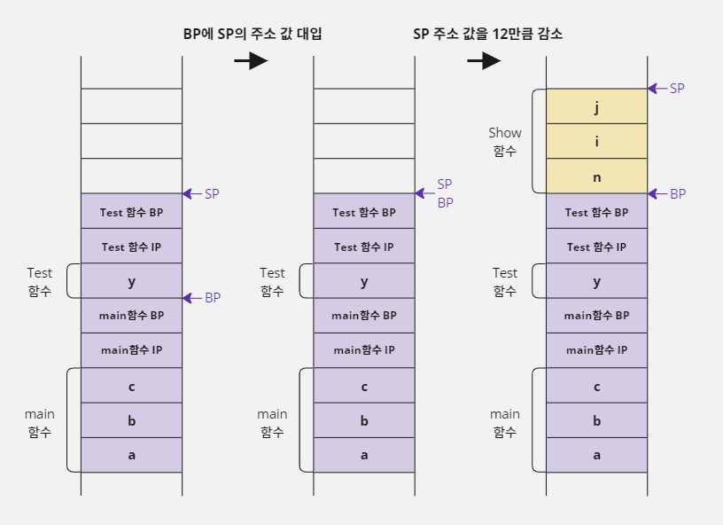
- 이렇게 하면
Show함수를 실행하기 위한 베이스 포인터와 스택 포인터 설정이 완료된다. - 이제 위의 메모리 그림을 보면
main,Test,Show함수의 지역 변수가 모두 할당되어 있는 것을 확인할 수 있다. - 그리고 앞에서 문제가 되었던 베이스 포인터와 스택 포인터는 한 쌍만 사용하고 있다.
3. Show 함수 종료하기
- 앞 예의 메모리 상태에서
Show함수가 끝나면 어떻게 될까? Show함수는Test함수가 호출했었다.- 따라서
Show함수가 사용하던 베이스 포인터와 스택 포인터를Test함수가 사용하던 베이스 포인터와 스택 포인터로 복구시켜야 한다. - 이 작업은 지금까지 한 작업을 거꾸로 진행하면 된다.

- 먼저 스택 포인터에 베이스 포인터의 주소를 대입한다.
- 그렇게 하면
n,i,j를 위해 할당되었던 메모리 공간이 사라진다. - 그리고
Test함수의 베이스 포인터 값을 읽는다. - 그리고 다시 한 번
pop명령을 사용하여Test함수가 사용하던 IP값을 읽는다. - 이렇게 하면 IP 레지스터 값이 복구되어
Test함수에서Show함수를 호출한 다음 명령으로 이동하게 된다. - 마지막 그림(
pop IP이후)을 보면Test함수가Show함수를 호출하기 전으로 스택 메모리의 상태가 복구되었다. - 그리고
Test함수가 끝나면 위 작업과 같은 방법으로 베이스 포인터의 주소를 스택 포인터에 대입하고main함수의 베이스 포인터를 스택에서 읽어오면 된다. - 그리고
main함수가 사용하던 인스트럭션 포인터 레지스터 값도pop명령으로 스택에서 읽어 오면main함수로 실행 위치가 복구된다.
스택 프레임이란?
- 이렇게 함수를 호출할 때 일어나는 스택의 변화를 스택 프레임(Stack Frame)이라고 한다.
- 앞에서 컴파일러가 C 언어로 작성한 소스 코드에서 변수를 선언한 부분을 기계어로 번역할 때, 변수를 저장할 메모리 위치를 배정하는 것을 '정적 메모리 할당'이라고 했다.
- 스택 프레임은 컴파일러가 C 언어 코드를 기계어로 번역하는 시점에 결정되기 때문에 이런 형식의 메모리 할당 역시 정적 메모리 할당이다.
- 그래서 지역 변수를 추가하거나 배열 크기를 변경하려면 스택 프레임이 수정되어야 하기 때문에 C 언어 코드를 다시 컴파일해야 한다.
- 그리고 앞에서도 이야기했지만 배열을 선언할 때
[]안에 반드시 상수를 적어야 하는 이유도[]안에 변수가 오면 정적으로 할당할 크기를 고정할 수 없어서(스택 포인터 연산을 결정할 수 없어서) 스택 프레임을 구성할 수 없기 때문이다. - 내용이 어렵긴하지만, 함수를 호출할 때 내부적으로 어떤 일이 일어나는지 정도는 잘 알고 넘어가도록 하자!
스택 프레임을 어셈블리어로 살펴보자
- 지금까지 이야기한 스택 프레임을 어셈블리 언어와 연결시켜서 살펴보자.
- 어셈블리 언어로 작성한 코드는 보기 편하도록 실제와는 약간 다르게 순서가 배열되었다.
void myFunc() { int k, m, n; n = 1; ... } void main() { int a, b; myFunc(); ... }push bp // main 함수 시작 mov bp, sp sub sp, 8 mov dword ptr[bp], 5 call myFunc push bp // myFunc 함수 시작 mov bp, sp sub sp, 12 mov dword ptr[bp-8], 1 ... mov sp, bp pop bp ret // myFunc 함수 종료 ... mov sp, bp pop bp ret // main 함수 종료
- 앞에서 설명할 때는 함수를 호출하기 전에 현재 인스트럭션 포인터 레지스터 값을 직접
push명령으로 스택에 저장한다고 했다.- 그런데 어셈블리 언어에서는 모듈(C 언어의 함수와 같은 개념)을 이동할 때
call명령을 사용하는데, 이 명령을 사용하면 현재 CPU의 인스트럭션 포인터 레지스터 값이 스택에push된다.- 따라서 인스트럭션 포인터 레지스터 값을 스택에
push하는 코드가 없다.ret명령은 함수의 호출이 끝나면 이 함수를 호출했던 위치로 돌아가기 위해서 스택에 저장했던 복귀 IP 주소를 읽는 명령이다.pop명령처럼 스택에서 데이터를 하나 꺼내는 것은 비슷하지만, 읽은 정보를 반드시 IP 레지스터에 저장한다는 점이 다르다.- C 언어 소스 코드는 하나의 문장이라고 해도 여러 개의 기계어로 번역되기 때문에 실행 단위를 구분 짓기 어렵다.
- 그래서 어셈블리 언어를 기준으로 하나의 명령이 실행될 때마다 스택의 변화를 보면 다음과 같다.
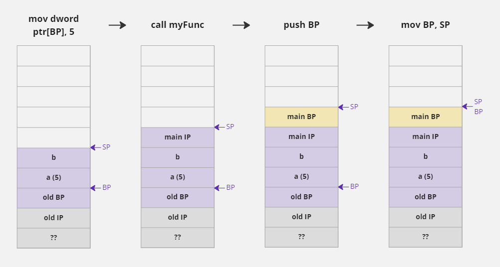


16-3. 동적 메모리 할당 및 해제
정적 메모리 할당의 한계
- 컴파일러의 설정을 변경하지 않았다면 프로세스 안에서 지역 변수가 저장되는 기본 스택(Stack) 메모리의 크기는 1Mbyte이다.
- 따라서 함수를 호출할 때 지역 변수가 할당되는 메모리 공간은 최대 1Mbyte를 넘을 수 없다.
- 예를 들어 아래와 같이 배열을 선언하면 스택에 1Mbyte가 할당되기 때문에 오류가 발생한다.
char data[1024 * 1024];
- 그러면 프로그림이 사용하는 스택의 크기는 어떻게 계산할까?
- 프로그램 코드를 함수 안에 선언한 지역 변수 크기를 모두 더하면 될까? No...
- 왜냐하면 역할에 따라서 한 번 호출되는 함수도 있지만, 수십 번 반복해서 호출되는 함수도 있고, 프로그램이 실행될 때 조건문에 의해 호출 여부가 결정되는 함수도 있기 때문이다.
- 즉 함수가 호출되는 여부나 횟수를 미리 파악할 수 없기 때문에 프로그램이 사용할 전체 스택이 크기는 단순히 각 함수에 선언한 지역 변수의 크기를 합산해서 예측할 수는 없다.
- 이 말은 실제로 프로그램이 실행되어 함수가 호출될 때까지 스택 크기를 예측하기 어렵다는 뜻이다.
- 결국 스택의 실제 크기는 프로그램이 실행될 때가 돼서야 알 수 있기 때문에 컴파일러는 자신이 컴파일한 프로그램이 스택을 얼마나 사용할지 예상할 수 없다.
- 그래서 단일 배열의 크기나 단일 자료형의 크기가 1Mbyte를 넘는 경우에만 오류 메시지를 출력하고 각 함수에 선언한 변수의 크기를 합산해서 1Mbyte를 넘을 때는 오류로 처리되지 않는다.
- 하지만 컴파일에 성공한다고 해도 프로그램을 실행할 때 스택을 사용하는 크기가 1Mbyte를 넘게 되면 다음과 같이 실행 오류가 발생한다.
"예외가 있습니다. 0xC00000FD: Stack overflow(매개변수: 0x00000000, 0x00372000)"
- 따라서 프로그래머는 자신의 프로그램이 스택을 1Mbyte 이상 사용하지 않도록 주의해야 한다.
- 그런데 프로그램에서 사용하는 데이터는 당연히 1Mbyte보다 훨씬 더 큰 경우가 많다.
- 예를 들어 우리가 보고 있는 스마트폰이나 모니터에 출력된 한 점(Pixel)의 데이터가 보통 4바이트 크기이다.
- 이런 픽셀들의 모임인 Full-HD 영상 한 장을 저장하려면 1920 x 1080 x 4바이트, 대략 7Mbytes 정도의 크기가 필요하다.
- 결국 프로세스 안의 기본 스택으로는 Full-HD 영상 한 장조차 저장하지 못한다는 뜻이다.
- 따라서 더 큰 메모리를 사용할 수 있는 방법이 필요하다.
동적 메모리 할당이란?
- 프로세스는 더 큰 메모리를 할당해서 사용할 수 있도록 힙(Heap)이라는 공간을 제공한다.
- 16-1에서 보았던 프로세스 그림을 보면 스택 세그먼트에 힙 영역이 있다.

- 스택은 '스택 프레임' 규칙을 통해 코드가 컴파일될 때 사용할 메모리 크기를 결정한다.
- 하지만 힙은 스택 프레임과 같은 형식이 적용되지 않으며 프로그래머가 원하는 시점에 원하는 크기만큼 메모리를 할당할 수 있다.
- 그리고 메모리 사용이 끝나면 언제든지 할당한 메모리 공간을 해제할 수 있다.
- 이런 형식의 메모리 할당을 '동적 메모리 할당'(Dynamic Memory Allocation)이라고 한다.
- 또 힙은 Mbyte 단위가 아닌 Gbyte 단위까지 할당할 수 있기 때문에 메모리를 할당할 때 크기 문제가 거의 발생하지 않는다.
malloc 함수로 동적 메모리 할당하기
- 힙은 스택처럼 관리되는 공간이 아니라서 변수를 선언하는 행위로 메모리를 할당할 수 없다.
- 그래서 동적 메모리 할당을 지원하는 C 표준 함수인
malloc을 사용해서 메모리를 할당해야 한다. malloc은 memory allocation의 약자이다- 이 함수는 사용자가
size변수에 지정한 크기만큼 힙 영역에 메모리를 할당하고 그 할당된 주소를void *형식으로 반환해 준다.
함수 원형: void *malloc(size_t size); // size_t는 unsigned int 와 같은 자료형
함수 사용 형식: void *p = malloc(100); // 100바이트의 메모리를 할당하여 포인터 p에 저장함
- 메모리 크기를 지정할 때
size_t자료형을 사용하는데 이 자료형은unsigned int형과 같으며, 메모리 할당은 항상 양수로만 가능하기 때문에 음수를 고려하지 않겠다는 뜻이다.
size_t자료형은 C 언어에서 제공하는 헤더 파일에typedef unsigned int size_t;라고 정의되어 있다.- 따라서
size_t는unsigned int와 같은 자료형이다.typedef에 대해서는 18장에서 자세하게 배우도록 하자.
- 그런데 사용자가
malloc함수로 100바이트 메모리를 할당하더라도 이 메모리를 2바이트(short) 단위의 50개 데이터 그룹으로 사용할지, 4바이트(int) 단위의 25개의 그룹으로 사용할지는 예상할 수 없다. - 그래서
malloc함수가 메모리의 사용 단위를 결정하지 않고void *형식으로 주소를 반환해 주는 것이다. - 그런데
void *를 사용하면 사용할 때마다 형 변환(Casting)을 해야 하는 불편함이 있다. - 그래서 다음과 같이
malloc함수를 사용하여 주소를 받는 시점에 사용할 포인터에 미리 형 변환을 사용하는 것이 좋다. - 예를 들어 힙 영역에 할당된 100바이트의 메모리를 2바이트(short) 단위로 사용하고 싶거나 4바이트(int) 단위로 사용하고 싶다면
malloc함수를 다음처럼 사용하면 된다.
short *p = (short *) malloc(100); // 100바이트 (2바이트 50개 그룹)
int *p = (int *) malloc(100); // 100바이트 (4바이트 25개 그룹)
malloc 함수가 메모리 할당에 실패하는 경우도 있다
malloc함수가 항상 메모리 할당에 성공하는 것은 아니다.- 한 번에 너무 큰 크기(2Gbytes 이상)를 명시하거나 계속된 메모리 할당으로 힙에 공간이 부족하면 메모리 할당에 실패할 수도 있다.
- 이런 경우
malloc함수는 할당된 메모리 주소 대신에NULL을 반환한다.- 따라서
malloc함수가 메모리 할당에 실패하는 경우를 대비하여 다음과 같이 넘겨받은 주소가NULL인지 체크하는 것이 좋다.short *p = (short *) malloc(100); if (NULL != p) { // 메모리 할당에 성공함. 이 시점부터 100바이트 메모리 사용 가능함 } else { // 메모리 할당에 실패함 }
free 함수로 할당된 메모리 해제하기
- 스택에 할당한 지역 변수는 함수 호출이 끝나면 스택 프레임에 의해 자동으로 해제된다.
- 하지만 힙에 할당된 메모리는 프로그램이 끝날 때까지 자동으로 해제되지 않는다.
- 사용하던 메모리가 해제되지 않으면 힙에 메모리를 할당할 공간이 부족해질 수 있다.
- 따라서 다음과 같이
free함수를 사용하여 힙에 할당했던 메모리를 명시적으로 해제해주어야 한다.
free(p); // p가 가지고 있는 주소에 할당된 메모리를 해제함
- 예를 들어
malloc함수를 사용하여 할당 받는 메모리의 주소 값을 포인터 변수p가 가지고 있다고 하자. - 그러면 위와 같이 포인터 변수
p가 가지고 있는 주소 값을free함수에 매개변수로 넘겨서 해당 주소에 할당된 메모리를 해제해야 한다. malloc함수와free함수의 정보가malloc.h에 정의되어 있기 때문에 이 함수들을 사용하려면#include <malloc.h>전처리기를 코드에 추가해야 한다.
/* 동적 메모리 할당을 사용하여 이름 입력 받고 출력하기 */
#include <stdio.h>
#include <malloc.h> // malloc, free 함수를 사용하기 위해 추가함
void main() {
char *p_name;
p_name = (char *) malloc(32); // 32바이트의 메모리를 동적 할당한다
if (p_name != NULL) {
// 메모리 할당에 성공한 경우
printf("Your name :");
gets(p_name); // 이름을 입력 받음
printf("Hi! %s\n", p_name); // 입력 받은 이름을 출력함
free(p_name);
} else {
// 메모리 할당에 실패한 경우
printf("Memory allocation error!!");
}
}
Your name :Jerok, Kim
Hi! Jerok, Kim
malloc 함수를 사용할 때 주의할 점
- 동적으로 할당한 메모리는
malloc함수를 사용할 때부터free함수를 사용할 때까지 계속 힙 영역에 할당되어 있다. - 따라서 다음과 같이 동적 메모리 할당을 사용하는 프로그램에서 실수로 메모리 할당을 해제하는
free함수를 사용하지 않았다면Test함수가 호출될 때마다 힙에 100바이트씩 추가로 메모리가 할당된다. - 그래서 반복문이 완료된 시점에는 100 x 100바이트 메모리가 힙에 할당되어 버린다.
#include <malloc.h> // malloc, free 함수를 사용하기 위해 추가함
void Test() {
short *p = (short *) malloc(100); // 힙에 100바이트 할당함
// free(p); // 실수로 메모리 할당을 해제하지 않았다
}
void main() {
int i;
for (i = 0; i < 100; i++) Test(); // 메모리가 100바이트씩 100번 동적 할당됨
}
- 그리고 힙에 할당된 주소를 기억하고 있는 포인터 변수
p는 지역 변수이기 때문에Test함수의 종료와 함께 메모리에서 제거된다. - 그런데 제거된 포인터 변수
p가 동적 할당된 메모리의 주소 값을 저장하고 있었기 때문에 포인터 변수p가 제거되면 동적 할당된 메모리의 주소 값을 알 수 있는 방법이 없어서 해당 메모리를 사용할 수도 없고 해제할 수도 없다. - 이런 상태를 메모리가 손실되었다고 이야기 한다.
할당되지 않은 메모리를 해제하는 경우
- 동적 메모리 할당을 많이 사용하는 프로그램은 메모리 손실이 나지 않도록
free함수를 빼놓지 않고 신경을 많이 써야 한다. - 그렇다고 해서 할당도 되지 않은 메모리를 해제하면 컴파일은 성공하더라도 실행할 때 오류가 발생한다.
char *p;
// p = (char *) malloc(32); // 포인터 변수 p에 메모리가 할당되지 않았다
free(p); // p는 할당된 메모리의 주소를 가지고 있지 않아서 실행할 때 오류 발생함
정적으로 할당된 메모리를 해제하는 경우
- 포인터가 정적으로 할당된 지역 변수의 주소를 가지고 있는데 이 주소를 사용하여
free함수를 호출해도 실행할 때 오륙 발생한다.
int data = 5;
int *p = &data; // p는 지역 변수 data의 주소를 가지게 됨
free(p); // p는 힙에 할당된 주소가 아니기 때문에 실행할 때 오류 발생함
할당된 메모리를 두 번 해제하는 경우
malloc함수를 사용해 정상적으로 할당한 주소를free함수로 해제하고 나서 실수로 한 번 더 해제하는 경우에도 프로그램을 실행할 때 오류가 발생한다.
int *p = (int *) malloc(12); // 12바이트 메모리를 힙에 정상적으로 할당함
free(p); // 할당했던 메모리를 정상적으로 해제함
free(p); // 이미 해제한 주소를 다시 해제하기 때문에 실행할 때 오류 발생함
- 이처럼 포인터나 동적 할당은 소스 코드를 작성하다가 실수를 하더라도 컴파일할 때 오류가 나지 않고 프로그램이 실행될 때 오류가 발생한다.
- 문법의 원리를 정확하게 이해하고 사용해야 하며
malloc함수를 사용하여 동적 할당을 하는 경우에는free함수로 할당된 메모리를 해제하는 코드를 먼저 자신의 코드에 추가해 놓고 작업하는 것이 좋다.
동적 메모리 할당의 장단점
- 힙에 동적으로 할당하는 메모리는 스택에 비해 큰 크기의 메모리를 할당할 수 있으며 메모리를 할당하고 해제하는 시점도 프로그래머가 직접 정할 수 있다.
- 그리고 할당되는 메모리 크기도 프로그램 실행 중에 변경할 수 있다.
- 그래서 할당되는 메모리 크기가 변경되어도 소스 코드를 다시 컴파일하지 않아도 된다.
- 하지만 힙에 동적으로 메모리를 할당하고 해제하는 작업을 프로그래머가 직접 관리해야 하기 때문에 코드가 복잡해지며 작은 메모리를 할당해서 사용할 때는 오히려 비효율적일 수도 있다.
- 아래 코드는 1바이트 메모리를 정적 할당하는 코드와 동적 할당하는 코드를 비교한 것이다.
/* 스택에 메모리 정적 할당 */
char data; // 스택에 1바이트 사용함
data = 5;
/* 힙에 메모리 동적 할당 */
// p는 지역 변수라서 스택에 정적 할당함
char *p;
// 1바이트 메모리를 힙에 동적 할당함
p = (char *) malloc(1);
*p = 5;
free(p); // 동적 할당한 메모리 해제함
- 정적 할당은 스택에 1바이트만 할당된다.
- 하지만 동적 할당은 스택 대신 힙에 1바이트를 할당하며, 할당받은 힙의 메모리 주소를 저장하기 위해 스택에 4바이트(포인터 변수의 크기)를 할당한다.
- 따라서 총 5바이트가 필요하다.
- 이런 상황에 굳이 동적 할당을 고집하는 것은 좋지 않다.
16-4. 동적 메모리 사용하기
배열과 비슷한 형식으로 동적 메모리 사용하기
- 1바이트, 2바이트처럼 크기가 작은 데이터 여러 개를 동적으로 할당해서 사용하는 것은 번거롭고 불편할 수 있다.
- 그래서 동적 할당도 메모리를 배열처럼 그룹으로 묶어서 많이 사용한다.
int *p = (int *) malloc(12);
- 위 코드에서 포인터 변수
p가 가리킬 대상의 크기는 4바이트(int)이다. - 즉
p변수가 저장하고 있는 주소에 가서 4바이트 크기로 데이터를 저장하거나 읽을 수 있다는 뜻이다. - 그런데
malloc함수를 사용하여 4바이트보다 큰 12바이트 크기로 동적 메모리를 할당했다. - 12바이트 크기의 메모리를 세 그룹으로 나누어서 사용하는 것이다.
- 그러면 처음 4바이트를 제외한 나머지 8바이트는 어떻게 사용할 수 있을까?
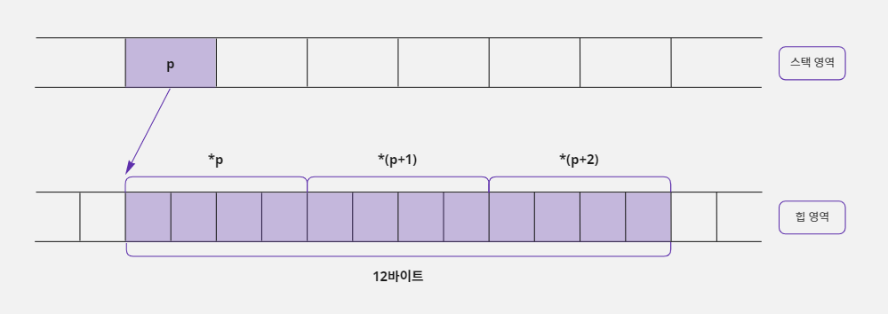
- 포인터 문법은 포인터 변수에 저장되어 있는 주소로 연산할 수 있다.
- 그래서 처음 4바이트는
*p형식으로 사용하고, 그다음 4바이트는*(p+1)형식으로 사용할 수 있으며, 마지막 4바이트는*(p+2)형식으로 사용할 수 있다. - 결국 이런 형식으로 메모리를 동적으로 할당하면
int형으로 그룹지어진 메모리를 사용하는 것과 같기 때문에 다음과 같이 선언한 배열(정적 할당)과 같은 목적으로 사용할 수 있다.
int data[3];
동적 메모리를 할당하는 또 다른 방법
- 동적 메모리를 할당할 때 앞에서 본 것처럼
malloc(12)라고 호출하면 할당할 전체 메모리의 크기를 명시하는 형태이다. - 그런데
sizeof연산자를 사용하면 메모리 사용 단위까지 적을 수 있다.
int *p = (int *) malloc(sizeof(int) * 3); // sizeof(int) * 3 == 12
sizeof연산자는 자료형이나 변수의 크기를 계산해 주는 연산자이다.- 예를 들어
sizeof(int)라고 하면int자료형의 크기가 4바이트이기 때문에 결과 값이 4가 된다. malloc(12)라고만 적어 놓으면 12바이트를 동적 할당한다는 정도로 이해할 수 있다.malloc(sizeof(int) * 3)이라고 적으면 12바이트를 할당하면서 대상 메모리를 4바이트(int) 단위로 나누어서 사용하려는 의도까지 좀 더 쉽게 파악할 수 있다.- 그리고 같은 12바이트를 사용하더라도 다음과 같이 사용하면 메모리를 사용하는 방법이 달라진다.
short *p = (short *) malloc(sizeof(short) * 6); // sizeof(short) * 6 == 12
- 위 형태로 사용하면 포인터
p는 주소에 접근하여 2바이트(short) 단위로 메모리를 읽고 쓰기 때문에 12바이트를 6개의 항목으로 나누어 사용하게 된다.

- 이 구조도
short형 변수 6개로 이루어진 배열과 같은 목적으로 사용할 수 있다. - 결국 포인터와 동적 할당 문법을 사용하면 배열과 같은 목적으로 사용할 수 있는 메모리를 구성할 수 있다.
short data[6];
정적 메모리 할당을 사용했을 때 발생할 수 있는 문제점
- 배열을 사용하면 메모리가 스택에 정적으로 할당되기 때문에 항목의 개수를 상수로만 할당할 수 있다.
- 따라서 다음과 같이 선언하면 오류가 발생한다.
int data_size = 3;
int data[data_size]; // 배열의 요소 개수는 상수로만 명시할 수 있기 때문에 오류 발생함
- 즉 배열의 크기는 상수로만 적을 수 있기 때문에 자신이 사용할 데이터의 최대 개수에 반드시 신경을 써야 한다.
- 예를 들어 친구 관리 프로그램을 만드는 데 배열을 사용하고 이 배열의 한 요소에 한 명의 친구 정보가 저장된다고 하자.
- 그러면 친구가 몇 명인지에 따라서 배열의 크기가 달라져야 한다.
- 사용자에 따라 배열 크기가 10으로도 충분한 경우가 있고 300이 필요한 경우도 있다.
- 그러면 프로그래머는 어쩔 수 없이 최대 크기인 300으로 배열 크기를 정해야 한다.
- 이 프로그램을 친구가 10명인 사람이 사용하면 290개의 배열 요소를 낭비하는 셈이다.
- 친구가 500명인 사용자는 이 프로그램을 사용할 수 조차 없다.
- 결국 이 문제는 배열이 정적 메모리 할당 방식을 사용하기 때문에 배열의 크기를 상수로만 받아서 생기는 것이다.
- 사용자에게 숫자를 입력 받아서 입력된 숫자의 합을 출력해주는 예제를 작성해 보자.
- 입력한 숫자 정보는 배열을 사용하여 저장하고, 사용자가 입력하는 숫자의 개수를 최대 5개로 제한하였다.
/* 정적 메모리 할당을 사용하여 숫자를 입력 받아 합산하기 */
#include <stdio.h>
#define MAX_COUNT 5 // 최대 입력을 5회로 제한함
void main() {
int num[MAX_COUNT], count = 0, sum = 0, i;
// 최대 5회까지 입력 받고 중간에 9999를 누르면 종료함
while (count < MAX_COUNT) {
printf("숫자를 입력하세요 (9999를 누르면 종료) :");
scanf("%d", num + count); // scanf("%d", &num[count]); 과 같은 표현
if (num[count] == 9999) break; // 9999를 누르면 입력 중단함
count++; // 입력된 횟수를 계산함
}
// 입력된 횟수만큼 숫자를 출력함
for (i = 0; i < count; i++) {
if (i > 0) printf(" + "); // 숫자와 숫자 사이에 +를 출력함
printf(" %d", num[i]); // 입력한 숫자를 출력함
sum = sum + num[i]; // 입력한 숫자들을 합산함
}
printf(" = %d\n", sum); // 합산 값을 출력함
}
숫자를 입력하세요 (9999를 누르면 종료) :7
숫자를 입력하세요 (9999를 누르면 종료) :2
숫자를 입력하세요 (9999를 누르면 종료) :8
숫자를 입력하세요 (9999를 누르면 종료) :9999
7 + 2 + 8 = 17
- 그런데 사용자가 10개의 숫자를 입력해야 한다고 요청하면 이 프로그램은 배열의 크기를 변경해야 하기 때문에
MAX_COUNT값을 바꾸기 위해 프로그램 코드를 수정해야 한다. - 즉 다음과 같이
#define전처리기로 값을 변경하고 수정된 소스 파일을 다시 컴파일해서 만든 실행 파일을 사용자에게 재배포해야 한다.
#define MAX_COUNT 10
- 그래서 이 문제를 해결하기 위해 다음과 같이 변경할 가능성이 없을 만큼 배열의 크기를 매우 크게 명시하기도 한다.
#define MAX_COUNT 10000
- 이렇게 수정하고 누군가가 10,000개 이상의 숫자를 입력하지 않기를 바라며 코드를 컴파일한 뒤 실행 파일을 재배포하였다.
- 그런데 사용자들이 대부분 10개 이하의 숫자만을 사용한다면 이 프로그램은
(10000-10) x sizeof(int)크기만큼 메모리를 낭비하게 되는 셈이다. - 결국 배열 크기는 상수로만 명시할 수 있기 때문에 배열을 사용하는 프로그램은 사용자에게 제한적 사용을 강요하거나 비효율을 감수하고 메모리를 많이 낭비할 수밖에 없다.
malloc 함수는 메모리 할당 크기를 변수로 지정할 수 있다
- 이러한 낭비를 막기 위해 동적 메모리 할당을 사용한다.
- 배열과 달리
malloc은 함수이기 때문에 할당할 크기를 적을 때 상수뿐만 아니라 변수도 사용할 수 있다.
int data_size = 12;
int *p = (int *) malloc(data_size); // 12바이트의 메모리가 동적 할당됨
- 이렇게 메모리 할당 크기를 변수로도 사용할 수 있기 때문에 사용할 데이터의 개수를 제한할 필요가 없다.
- 앞의 예제에서 배열을 사용할 때는 사용자가 몇 개의 숫자를 입력할지 예상할 수 없기 때문에 입력할 수 있는 최대 수치를
MAX_COUNT에#define해서 사용했다. - 하지만 동적 메모리 할당을 사용하면 사용자에게 몇 개를 사용할 것인지 입력 받고 그 개수만큼 사용할 수 있도록 프로그램을 만들 수 있다.
- 앞에서 배열을 사용해서 만든 예제를
malloc함수와 포인터 문법을 사용하여 재구성해보자. - 다음 예제는 프로그램을 시작할 때 사용자에게 최대 몇 개의 숫자를 사용할 것인지 물어 보고, 그 개수를 이용하여 숫자를 입력받아 합산 결과를 출력하도록 만들어보자.
/* 동적 메모리 할당을 사용하여 숫자를 입력 받아 합산하기 */
#include <stdio.h>
#include <malloc.h>
void main() {
int *p_num_list, count = 0, sum = 0, limit = 0, i;
printf("사용할 최대 개수를 입력하세요 :");
scanf("%d", &limit);
// 사용자가 입력한 개수만큼 정수를 저장할 수 있는 메모리를 할당함
p_num_list = (int *) malloc(sizeof(int) * limit);
// 중간에 9999를 누르면 종료함
while (count < limit) {
printf("숫자를 입력하세요 (9999를 누르면 종료) :");
scanf("%d", p_num_list + count);
if (*(p_num_list + count) == 9999) break; // 9999를 누르면 입력 중단함
count++; // 입력된 횟수 계산함
}
// 입력된 횟수만큼 숫자를 출력함
for (i = 0; i < count; i++) {
if (i > 0) printf(" + "); // 숫자와 숫자 사이에 +를 출력함
printf(" %d ", *(p_num_list + i)); // 입력한 숫자 출력함
sum = sum + *(p_num_list + i); // 입력한 숫자들을 합산함
}
printf(" = %d\n", sum); // 합산 값을 출력함
free(p_num_list); // 사용했던 메모리를 제거함
}
사용할 최대 개수를 입력하세요 :6
숫자를 입력하세요 (9999를 누르면 종료) :5
숫자를 입력하세요 (9999를 누르면 종료) :6
숫자를 입력하세요 (9999를 누르면 종료) :2
숫자를 입력하세요 (9999를 누르면 종료) :3
숫자를 입력하세요 (9999를 누르면 종료) :9999
5 + 6 + 2 + 3 = 16
- 배열 문법이 사용하기 편한 것은 분명한 사실이다.
- 하지만 편한 문법의 공통점은 제약이 많다는 것이다.
- 위와 같이 처리하면 사용자가 직접 숫자의 개수를 지정할 수 있기 때문에 배열을 사용할 때처럼 코드를 수정할 필요가 없다.
17. 다차원 포인터
- 포인터는 일반 변수를 가리킬 수도 있지만 또 다른 포인터를 가리킬 수도 있다.
- 이렇게 포인터가 포인터를 가리키는 것을 '다차원 포인터'라고 부른다.
- 다차원 포인터는 다차원 배열과 함께 자주 쓰인다.
- C 언어로 프로그래밍할 때 어떤 경우에 다차원 포인터를 사용하고, 어떻게 문법을 구성하는지 알아보자.
17-1. 다차원 포인터 개념
다차원 포인터란?
- '내'가 '길동이'라는 친구를 부를때 '친구야'라고 표현하는 상황을 상상해보자.
- '길동아'라고 부르는 것은 직접 표현을 사용하는 것이고, '친구야'라고 부르는 것은 간접 표현을 사용하는 것이다.
- 이 경우 '내'가 '길동이'를 가리키는 포인터가 된 것이다.
- '나의 친구의 친구'처럼 두 번 연속으로 간접 표현을 사용하는 것처럼 간접으로 여러번 가리키는 포인터를 '다차원 포인터'라고 부른다.
short *p, data = 5;
p = &data; // 포인터 변수 p는 data 변수의 주소 값을 기억함
- 차원은 '자신이 가리키는 대상'의 개수만큼 증가한다.
- 가리키는 대상이 없는 경우 즉, 대상 그 자체는 가리키는 대상이 없기 때문에 0차원이다.

- 위의 그림에서 메모리 상자의 앞면에 변수 이름과 차원을 표시했다.
- 그리고 상자 아래에 변수가 할당된 주소와 메모리의 크기(또는 자료형)을 표시했다.

다차원 포인터 정의하기
- 앞에서 배운 차원 개념과 포인터 문법을 연결해 보자.
- 포인터 변수를 선언할 때
*키워드를 한 개만 사용한 포인터를 1차원 포인터라고 이야기하며*키워드를 하나씩 더 사용할 때마다 차원이 하나씩 증가한다. - 그리고
*키워드를 두 개 이상 사용해서 선언한 포인터를 '다차원 포인터'라고 한다. - 포인터 변수를 선언할 때 사용하는
*키워드는 최대 7개(컴파일러마다 다름)까지 사용할 수 있다. - 그리고 포인터 변수를 선언할 때 사용한
*키워드의 개수만큼 포인터를 사용할 때*연산자를 사용할 수 있다. - 예를 들어
char *p;라고 선언하면 포인터 변수 자체를 의미하는p또는 포인터 변수가 가리키는 곳에 값을 저장하기 위한*p, 이렇게 두 가지 표현을 사용할 수 있다. - 따라서
char ***p3;라고*키워드를 3개 사용해서 선언하면p3,*p3,**p3또는***p3라는 네 가지 표현을 사용할 수 있다.
char *p1; // 1차원 포인터: p1, *p1
char **p2; // 2차원 포인터: p2, *p2, **p2
char ***p3; // 3차원 포인터: p3, *p3, **p3, ***p3
일반 변수의 한계와 다차원 포인터
- 주소 값을 저장할 수 있는 크기(4바이트)의 변수라면 포인터 변수가 아니더라도 주소를 저장할 수는 있다.
- 따라서 다음과 같이 4바이트 크기의 자료형인
int형으로my_ptr변수를 선언하고&연산자를 사용하여data변수의 주소 값을my_ptr변수에 저장할 수 있다.
short data = 0;
int my_ptr = (int) &data; // &data는 short *형식의 값을 가지기 때문에
// int형 변수인 my_ptr에 저장하기 위해서 (int)로 형 변환한다
// my_ptr는 4바이트 크기라서 정상적으로 주소를 저장한다
*my_ptr = 3; // 오류 발생: my_ptr는 포인터가 아니라서 *연산자를 사용할 수 없음

- 하지만
my_ptr변수는 포인터 변수가 아니기 때문에*(번지 지정)연산자를 사용할 수 없다. - 이것은
my_ptr변수에 저장된 주소로 이동하여 값을 대입하거나 읽을 수 없다는 뜻이다. - 그래서 일반 변수에 주소 값을 저장하지 않고
*연산자를 사용해서 포인터 변수에 주소 값을 저장하는 것이다. - 포인터 변수는 자신이 저장하고 있는 주소에 가서 값을 읽거나 쓸 수 있는 기능을 가지고 있기 때문이다.
- 정리하자면 일반 변수에도 주소 값을 저장할 수는 있지만, 자신이 저장하고 있는 주소에 가서 값을 읽거나 쓸 수 없기 때문에 의미가 없다.
- 이 개념을 잘 이해해야 이후에 배울 다차원 포인터 문법을 쉽게 이해할 수 있다.
17-2. 2차원 포인터
2차원 포인터의 선언과 사용
- 다차원 포인터 중 가장 자주 사용하는 것은 2차원 포인터이다.
- 2차원 포인터를 사용하면 2차원 배열을 다루는 게 훨씬 쉬워진다.
- 3차원 포인터부터는 2차원 포인터에서 단계가 하나씩 추가될 뿐 원리는 같다.
- 2차원 포인터는 다음과 같이
*키워드를 두 개 사용해서 선언한다.
short **pp;
- 그래서 포인터를 사용할 때
pp,*pp또는**pp처럼*연산자를 최대 2개까지 사용할 수 있다. - 다음 그림처럼 2차원 포인터 변수는
*pp를 사용하면 변수pp에 저장되어 있는 106번지로 이동해서 값을 읽거나 저장할 수 있다.

- 그리고
**pp를 사용하면 포인터 변수pp가 가리키는 대상(106번지)에 저장된 주소 값(110번지)을 대상으로 사용한다. - 그래서 110번지에 있는 값을 읽거나 저장할 수 있다.
2차원 포인터의 구성
- 앞의 그림을 보면
**pp라고 사용하면 두 번째 상자에 들어 있는 110을 주소로 사용해서 세 번째 상자를 가리킨다. - 그런데 만약 다음과 같이 두 번째 상자에 주소가 아닌 다른 의미의 값(3)이 저장되어 있다면 프로그램이 엉뚱한 메모리를 사용해서 오류가 발생한다.

- 즉 두 번째 상자에 저장되어 있는
3은data변수에 저장된 일반 숫자 값인데 이 값을 주소로 사용해서 3번지로 이동하여 값을 읽거나 저장하려고 하면 오류가 발생한다는 것이다.
short **pp;
int data = 3; // &data로 얻은 주소의 자료형이 int *이기 때문에
// 포인터 변수 pp와 자료형을 맞추기 위해서 short **로 형 변환한다
pp = (short **) &data;
- 이처럼 2차원 포인터는 세 번째 상자로 한 번 더 이동할 수 있기 때문에 두 번째 상자에 최종 대상(세 번째 상자)의 주소 값이 저장되어야 한다.
- 따라서 두 번째 상자는 다음과 같이 1차원 포인터 변수가 되어야 안정적인 구조가 된다.
short **pp, *p, data = 3;
p = &data; // data 변수의 주소 값이 포인터 변수 p에 저장됨
pp = &p; // 1차원 포인터 변수 p의 주소 값이 2차원 포인터 변수 pp에 저장됨
**pp = 5; // data 변수의 값이 3에서 5로 변경됨
- 위의 그림처럼 주소를 저장하려면 두 번째 상자와 세 번째 상자를 1차원 포인터 구조로 만드는 것이 좋다.
- 그리고 위와 같은 구조가 되면
data변수는**pp로도 값을 변경할 수 있고 1차원 포인터 변수p를 사용하여*p로도 값을 변경할 수 있다. - 결론적으로 다차원 포인터 구조는 오른쪽으로 하나씩 이동할 때마다 차원을 하나씩 줄여 주는 것이 좋은 구조이다.
- 위와 같은 구조를 유지하면 강제적인 형 변환을 할 필요도 없고 자연스럽게 코드를 구성할 수 있다.
- 2차원 포인터를 이용하여 일반 변수의 값을 수정하는 예제를 작성해보자.
/* 2차원 포인터를 사용하여 일반 변수의 값 대입하기 */
#include <stdio.h>
void main() {
short data = 3;
short *p = &data; // data 변수의 주소 값을 1차원 포인터 p에 저장함
short **pp = &p; // 1차원 포인터 p변수의 주소 값을 2차원 포인터 pp에 저장함
printf("[Before ] data : %d\n", data); // 3을 출력함
*p = 4; // 1차원 포인터 p를 사용하여 data 변수 값을 4로 수정함
printf("[Use *p ] data : %d\n", data);
**pp = 5; // 2차원 포인터 pp를 사용하여 data 변수 값을 5로 수정함
printf("[Use **pp] data : %d\n", data);
}
[Before ] data : 3
[Use *p ] data : 4
[Use **pp] data : 5
1차원 포인터 변수에 1차원 포인터 변수의 주소를 저장하면?
- 앞에서 2차원 포인터를 사용해 1차원 포인터의 주소 값을 저장하는 구조가 좋다고 했다.
- 그러면 1차원 포인터를 사용해서 1차원 포인터의 주소 갑을 저장하는 구조는 어떨까?

- 위 그림처럼 1차원 포인터 변수
q를 사용하여 1차원 포인터 변수p의 주소 값을 저장할 수는 있다. - 하지만 1차원 포인터 변수
q는*연산자를 한 개만 사용할 수 있기 때문에 포인터 변수p까지만 이동할 수 있고data변수까지는 이동할 수 없다. - 따라서 2차원 포인터를 사용하는 것과 구조는 비슷하지만 실용성은 떨어진다.
int *q, *p, data = 3;
p = &data; // 포인터 변수 p는 data 변수의 주소 값을 기억함
q = (int *) &p; // 포인터 변수 q는 포인터 변수 p의 주소 값을 기억함
- 또한 이렇게 사용하면 차원이 맞지 않는 문제가 발생한다.
- 일반 변수의 주소를
&연산자를 사용하여 계산하면 1차원 형식의 포인터 값으로 반환된다. - 1차원 포인터의 주소 값을
&연산자를 사용해서 계산하면 차원이 하나 증가하여 2차원 형식의 포인터 값으로 반환된다. - 따라서 차원을 맞추기 위해서
(int *)형식으로 형 변환을 해주어야 한다.
2차원 포인터가 가리키는 첫 대상이 일반 변수인 경우
- 2차원 포인터가 가리키는 첫 대상이 일반 변수이면 주소 값이 아닌 일반 숫자 값을 저장하고 있을 확률이 높다.
- 일반 숫자 값을 주소로 사용하면
**연산자를 사용할 때 문제가 발생할 수도 있다. - 그러므로 2차원 포인터가 가리키는 첫 대상은 1차원 포인터가 되는 게 일반적이다.
- 그러면 2차원 포인터의 첫 번째 대상으로 일반 변수를 사용하면서, 그 변수에 정상적인 주소 값을 저장해 사용하면 어떻게 될까?
- 다음과 같이 2차원 포인터 변수
pp가 일반 변수의 주소 값(106번지)을 저장하더라도, 그 일반 변수가 다른 변수의 주소 값(110번지)을 저장하고 있다면 구조적으로는 문제가 되지 않는다. - 다만 차원이 하나씩 감소하는 일반적인 구조가 아니기 때문에 각 변수 간에 자료형이 맞지 않아서 형 변환을 많이 해주어야 한다.

- 게다가 일반 변수
my_ptr는*연산자를 사용할 수 없기 때문에data변수의 주소 값을 저장하고 있더라도 이 주소로 이동할 수 없다. - 하지만 2차원 포인터 변수인
pp는**pp를 사용하여 두 번째 대상인data변수를 가리킬 때 첫 번째 대상에 저장된 주소 값을 읽어서data변수를 가리킬 수 있다. - 즉 첫 번째 대상인
my_ptr가 어떤 형식의 변수이든 상관없이 4바이트 크기의 메모리이고 주소 값만 정상적으로 저장되어 있다면 그 주소 값을 사용하여 두 번째 대상을 가리킬 수 있다는 뜻이다. - 따라서 2차원 포인터 변수인
pp는**pp = 5;라고 사용했을 때my_ptr변수가 1차원 포인터가 아니더라도 4바이트 크기의 메모리이고 정상적인 주소 값을 저장하고 있기 때문에 110번지로 한 번에 이동하여 값 5를 대입할 수 있다.
short **pp, data = 3;
int my_ptr = (int) &data; // &data는 short *형식의 값을 가지기 때문에
// int형 변수인 my_ptr에 저장하기 위해서 (int)로 형 변환한다
// my_ptr는 4바이트 크기라서 정상적으로 주소를 저장한다
pp = (short **) &my_ptr; // my_ptr의 주소 값이 2차원 포인터 변수 pp에 저장됨
// &my_ptr로 얻는 주소 값의 자료형이 int *이기 때문에
// 포인터 변수 pp와 자료형을 맞추기 위해서
// short **로 형 변환을 한다
**pp = 5; // data 변수의 값이 3에서 5로 변경됨
- 결론적으로 첫 번째 상자가 2차원 포인터 변수이고 두 번째 상자는 어떤 형식의 변수가 오든지 4바이트 크기이기만 하면 무조건 세 번째 상자로 이동하여 값을 변경할 수 있다.
2차원 포인터가 가리키는 대상을 동적으로 할당하기
- 1차원 포인터는 동적으로 할당한 메모리의 주소 값을 받아 사용할 수 있다.
- 따라서 2차원 포인터도 다음과 같이 두 번째 상자에 해당하는 4바이트 메모리를
malloc함수로 동적으로 할당해서 사용할 수 있다. - 2차원 포인터는 자신이 가리키는 첫 대상이 어떤 종류의 변수인지 상관없이 4바이트 크기의 주소 값만 저장되어 있으면 최종 대상을 사용할 수 있기 때문이다.
short **pp, data = 3;
pp = (short **) malloc(4); // 두 번째 상자로 사용할 4바이트 메모리를 할당하고
// 그 주소 값을 2차원 포인터 pp에 저장한다
*pp = &data; // data 변수의 주소 값을 두 번째 상자(동적으로 할당된 메모리)에 저장함
**pp = 5; // data 변수의 값이 3에서 5로 변경됨

- 결국 이 예시에서 동적으로 할당된 4바이트 메모리는 포인터가 아니라서
*(번지 지정)연산자를 사용할 수 없기 때문에 스스로는 아무것도 할 수 없다. - 하지만
**pp라고 사용할 때 이 4바이트 메모리에 저장된 주소 값을 사용하여 세 번째 상자로 이동하기 때문에 이 4바이트 메모리는 간접적으로 1차원 포인터처럼 사용된다. - 즉 2차원 포인터 기준으로 봤을 때 이 4바이트 메모리는
short *로 선언한 포인터처럼 사용되기 때문에malloc(4)로 적는 것보다 다음과 같이 적는 것이 코드의 의미를 더 분명하게 전달할 수 있다.
pp = (short **) malloc(sizeof(short *)); // short *는 포인터이기 때문에 크기가 4바이트임
- 결국 이 형식은
short *형식의 포인터를 동적으로 할당하여 그 주소 값을 2차원 포인터pp에 저장하는 형태이다. - 그래서 위와 같이 적으면 1차원 포인터 한 개를 동적 할당한다고 이야기한다.
- 마지막으로 다음 예제는 두 번째 상자와 세 번째 상자까지 동적 메모리 할당을 사용하여 2차원 포인터 구조를 구성한 것이다.
- 이렇게 구성하면 스택 공간에는 포인터 변수
pp만 할당되고pp에 할당 받은 동적 메모리(나머지 상자에 해당하는 메모리)는 힙에 할당된다.
/* malloc 함수를 사용하여 2차원 포인터 구조 만들기 */
#include <stdio.h>
#include <malloc.h>
void main() {
short **pp;
pp = (short **) malloc(sizeof(short *)); // 4바이트를 할당함. 두 번째 상자 만듦
*pp = (short *) malloc(sizeof(short)); // 2바이트를 할당함. 세 번째 상자 만듦
**pp = 10; // 2차원 포인터를 사용하여 세 번째 상자에 10을 대입함
printf("**pp : %d\n", **pp); // 10을 출력함
free(*pp); // 세 번째 상자에 해당하는 메모리 해제함
free(pp); // 두 번째 상자에 해당하는 메모리 해제함
}
**pp : 10
- 이 예제에서 동적으로 할당한 메모리를 해제하는 순서가 정말 중요하다.
- 왜냐하면 두 번째 상자가 세 번째 상자의 주소 값을 가지고 있기 때문에 두 번째 상자를 먼저 해제하면 세 번째 상자의 주소 값을 잃어버리기 때문이다.
- 그러면 세 번째 상자에 해당하는 메모리를 해제하지 못하게 되므로, 반드시 세 번째 상자의 메모리를 먼저 해제하고 두 번째 상자의 메모리를 해제해야 한다.
2차원 포인터가 가리키는 대상을 동적으로 할당하면 좋은 점
- 위의 예제에서는 2차원 포인터 개념을 설명하기 위해서 2차원 포인터가 가리키는 첫 번째 대상(두 번째 상자)을 4바이트(
short *)로 동적 메모리 할당하고 두 번째 대상(세 번째 상자)을 2바이트(short)로 동적 메모리 할당했다. - 즉 첫 번째 대상은 4바이트 1개이고 두 번째 대상은 2바이트 1개를 할당한 것이다.
- 하지만 꼭 이렇게 가리키는 대상을 1개로 구성해야 하는 것은 아니다.
short **pp = (short **) malloc(3 * sizeof(short *)); // 12바이트(3*4) 크기로 메모리가 할당됨
- 이 코드처럼 첫 번째 대상을 4바이트가 아닌 12바이트(4바이트 3개)로 할당해도 된다.
- 12바이트이면 4바이트 크기로 메모리를 나눠서 사용할 수 있기 때문에 총 세 개의 주소를 저장할 수 있다.
- 그리고 첫 번째 대상의 첫 번째 주소에 접근하고 싶으면 포인터의 주소 연산을 사용해서
*(pp + 0)이라고 써 주면 된다. - 그리고 첫 번째 대상의 두 번째 주소에 접근하고 싶으면
*(pp + 1)그리고 세 번째 주소에 접근하려면*(pp + 2)라고 쓰면 된다.
- 2차원 포인터
pp가 가리키는 두 번째 대상도 2바이트(short)가 아닌 4바이트로 할당해서short형식의 정수 값을 한 개가 아닌 두 개 저장할 수도 있다.
*pp = (short *) malloc(2 * sizeof(short)); // 4바이트(2*2) 크기로 메모리가 할당됨
- 위와 같이 4바이트가 할당되면 2바이트(
short)씩 나눠서 2개의 정수를 저장할 수 있다. - 첫 번째 정수 값을 저장하기 위해서는
*(*pp + 0)또는**pp라고 사용하면 되고 두 번째 정수 값을 저장하기 위해서는*(*pp + 1)이라고 사용하면 된다. - 이렇게 2차원 포인터가 가리키는 첫 번째 대상과 두 번째 대상에 값을 한 개 이상 저장할 수 있도록 구성하면, 2차원 배열과 비슷한 형식의 메모리를 구성할 수 있다.
- 2차원 배열을 사용하는 경우에는 행의 갯나 열의 개수가 변경되면 반드시 다시 컴파일을 해서 변경 사항을 반영해야 한다.
- 하지만 2차원 포인터와 동적 메모리 할당을 사용해서 2차원 메모리 구조를 만들면 행의 개수나 열의 개수가 변경되더라도 컴파일을 다시 하지 않아도 된다.
- 조건이 변할 때 마다 매번 다시 컴파일해야 하는 프로그램보다는 별다른 변경 없이 그대로 사용할 수 있는 프로그램이 당연히 더 좋을 것이다.
- 따라서 2차원 포인터와 동적 메모리 할당을 사용하여 2차원 데이터 구조를 만드는 것이 좋다.
17-3. 2차원 포인터와 함수의 매개변수
매개변수에 포인터 변수를 잘못 사용한 경우
- 프로그래밍을 하다 보면 중복된 코드를 줄이고 변화에 효과적으로 대처하기 위해서 함수를 만들어 사용하는 경우가 많다.
- 그런데 함수의 매개변수로 포인터를 사용하는 경우에 차원 개념을 잘못 적용하면 원하는 값을 제대로 반환 받지 못해 오류가 발생할 수 있다.
- 이런 종류의 오류는 컴파일할 때는 문제가 없지만 실행할 때 오류가 발생할 확률이 높다.
- 다음과 같이 8바이트의 메모리를 동적으로 할당하는
GetMyData함수를 만들고 이 함수를 호출하는 예제 코드를 구성해 보자. - 이 예제는 컴파일은 성공하지만 프로그램이 실행될 때 오류가 발생한다.
/* 8바이트의 동적 메모리를 할당하는 함수 만들기 */
#include <malloc.h>
void GetMyData(int *q) {
q = (int *) malloc(8); // 8바이트의 메모리를 동적 할당하여 포인터 q에 저장함
}
void main() {
int *p; // p는 초기화되지 않아서 쓰레기(유효하지 않은) 값을 저장함
GetMyData(p); // 함수를 호출하여 p에 8바이트 메모리를 할당함
*p = 5; // 오류 발생: 할당된 메모리의 첫 4바이트에 값 5를 넣음
free(p); // 동적으로 할당된 메모리를 해제함
}
Process finished with exit code -1073741819 (0xC0000005)
문제가 발생하는 이유
- 이 문제가 발생한 이유는
main함수의 포인터 변수p에서GetMyData함수의 포인터 변수q로 원하지 않는 주소 값이 전달되었기 때문이다. - 이 상황을 명령이 실행되는 순서대로 적어 보면 다음과 같다.
p는 초기화되지 않아서 쓰레기(유효하지 않은) 값을 저장함.GetMyData함수의 매개변수로p전달함.p에 저장된 주소 값을q에 대입함.p와q는 같은 주소 값(쓰레기 값)을 저장하고 있음.- 8바이트 동적 메모리 할당. 할당된 메모리의 주소 값은
q에 저장함. 결국q에는 새로 할당된 메모리의 주소가 저장되었을 뿐p포인터 변수에는 별다른 영향을 미치지 않음.p는 처음 가지고 있던 쓰레기 값을 그대로 가지고 있는 상황인데, 그 주소에5를 저장하려고 하면 원하지 않는 주소 값을 대입하는 것이기 때문에 오류 발생함.
- 앞의 코드를 보면 포인터 변수
p에는 실제 메모리 주소 값이 대입된 적이 없다. - 초기화되지 않은 쓰레기 값만 들어갔을 뿐이다.
- 그런데 이 포인터 변수를
*p = 5;라고 사용했으니 유효하지 않은 주소로 이동해서 값5를 대입하기 때문에 문제가 발생하는 것이다.
동적으로 할당된 주소 값을 포인터 변수에 대입하면 문제를 해결할 수 있을까?
- 먼저
malloc함수를 사용하여 8바이트 메모리를 할당하자. - 그리고 할당된 메모리의 주소 값은 포인터 변수
q에 저장하고,q가 저장하고 있는 주소 값을 포인터 변수p에 대입해 보자.

p는 초기화되지 않아서 쓰레기(유효하지 않은) 값을 저장함.GetMyData함수의 매개변수로p전달함.p에 저장된 주소 값을q에 대입.p와q는 같은 주소 값을 저장하고 있음.- 8바이트 동적 메모리 할당. 할당된 메모리의 주소 값은
q에 저장함. 결국q에는 새로 할당된 메모리의 주소가 저장되었을 뿐p포인터 변수에는 별다른 영향을 미치지 않음.GetMyData함수에 선언한 지역 변수q는 다른 함수에 선언한 지역 변수p를 사용할 수 없어 오류 발생함.
- 위와 같이 소스 코드를 수정하면 포인터 변수
p와q는 같은 주소 값을 저장하게 된다. - 결국 동적으로 할당된 8바이트 메모리의 주소 값을 둘 다 가지고 있는 셈이다.
- 하지만 이런 해결책은
GetMyData함수에 적용할 수 없다. - 왜냐하면
GetMyData함수에 선언한 지역 변수q는 다른 함수(main)에 선언한 지역 변수p에 값을 대입할 수 없어서p = q;라고 적으면 컴파일할 때 오류가 발생하기 때문이다. - 결국 이 방법으로도 문제를 해결할 수가 없다.
함수의 매개변수로 2차원 포인터 사용하기
main함수의 지역 변수p의 값을 변경하고 싶다면GetMyData함수에서 변수p의 주소 값을 전달 받아 처리해야 한다.- 다른 함수에 선언한 지역 변수의 '이름'은 사용할 수 없지만 '주소'는 사용할 수 있기 때문이다.
- 그런데 변수
p가 일반 변수가 아니고 1차원 포인터 변수이기 때문에,p변수의 주소 값을 전달 받는 변수q를 2차원 포인터로 선언해서 사용해야 한다.

p는 초기화되지 않아서 쓰레기(유효하지 않은) 값을 저장함.GetMyData함수의 매개변수로&p전달함.- 2차원 포인터
q에 1차원 포인터p의 주소 값을 저장함.- 8바이트 동적 메모리 할당. 할당된 메모리의 주소 값은
q가 가리키는 대상인 포인터 변수p에 저장함.p에 저장된 주소에 가서 값 5를 대입함.
- 위와 같이 2차원 포인터와 함수의 매개변수 개념을 사용하면 변수
p와q가 서로 다른 함수의 지역 변수라도main함수에 선언된 포인터 변수p의 주소 값을 변경할 수 있다. - 이제 이 개념을
GetMyData함수에 적용해 보자.
/* 2차원 포인터로 8바이트 동적 메모리를 할당하는 함수 만들기 */
#include <stdio.h>
#include <malloc.h>
void GetMyData(int **q) { // 포인터 변수 q는 p 변수의 주소 값을 저장함
// 할당된 메모리의 주소 값을 포인터 q가 가리키는 main 함수의 p에 저장함
*q = (int *) malloc(8);
}
void main() {
int *p; // p는 초기화되지 않아서 쓰레기(유효하지 않은) 값을 저장함
GetMyData(&p); // 포인터 변수 p의 주소 값을 매개변수로 전달함
*p = 5; // 할당된 메모리의 첫 4바이트에 값 5를 넣음
free(p); // 할당된 동적 메모리를 해제함
}
- 16장에서 동적 메모리 할당을 설명할 때
malloc함수와free함수를 한 쌍으로 사용하는 것이 좋다고 했는데 위의 예제에서는 분리해서 사용했다. - 그 이유는
GetMyData함수에서 동적으로 할당한 메모리의 주소 값을main함수의 포인터 변수p에 저장하여 사용하기 때문이다. - 따라서
GetMyData함수에서free함수를 사용해서 메모리를 해제하면GetMyData함수에서 할당한 메모리가 해제되어 버린다. - 즉
main함수의 포인터 변수p에 전달된 주소 값은 이미 해제된 메모리의 주소 값인 것이다. - 따라서
GetMyData함수에서 할당된 메모리를 해제하면,main함수에서 포인터 변수p를 사용하는 곳에서 문제가 발생하므로 주의해야 한다.
17-4. 2차원 포인터와 2차원 배열
여러 개의 1차원 포인터를 정적으로 할당하기
short *형식의 1차원 포인터가 100개 필요하다면 배열 문법을 사용하여 다음과 같이 선언할 수 있다.
short *p[100]; // short *형식의 1차원 포인터를 100개 선언함
- 배열의 요소가 100개이고 각 요소의 크기가 4바이트(포인터)이기 때문에 이 배열에 할당된 전체 메모리 크기는 400바이트이다
- 이렇게 선언하면
p[0]부터p[99]까지 총 100개의 포인터를 사용할 수 있다. - 하지만 위와 같은 표현에는 두 가지 비효율성이 있다.
- 첫 번째는 배열을 사용했기 때문에 컴파일할 때 변수
p의 메모리 크기가 400바이트로 고정되어 버린다. - 만약 포인터 200개를 사용하도록 수정해야 한다면 변수
p를p[100]대신p[200]으로 바꿔서 선언해야 한다. - 그리고 소스 코드를 변경했기 때문에 소스 파일을 다시 컴파일해야 하는 불편함이 있다.
- 두 번째는 메모리가 낭비될 수 있다.
- 변수
p는 100개의 포인터가 메모리에 할당되기 때문에 실제로 포인터를 5개만 사용하는 경우에 95개의 포인터를 저장할 수 있는 메모리가 낭비된다. - 결국 이 문제는 배열을 선언할 때 배열 크기가 반드시 상수로 적어야 하기 때문에 발생하는 것이다.
여러 개의 1차원 포인터를 동적 할당하기
- 17-2에서 2차원 포인터가 가리키는 첫 번째 대상에는 1차원 포인터의 주소 값을 저장해서 사용하는 것이 가장 좋지만, 4바이트 크기의 메모리에 주소 값을 저장해서 사용해도 된다고 하였다.
- 그래서
malloc함수로 4바이트 메모리를 할당하여 2차원 포인터에 저장하면 그 메모리를 1차원 포인터처럼 활용할 수 있기 때문에 다음과 같이 적을 수 있다. - 결국 아래 코드는 1차원 포인터 1개를 할당하는 내용이다.
short **pp;
pp = (short **) malloc(sizeof(short *)); // pp = (short **) malloc(4); 와 같은 표현

malloc함수의 매개변수에 동적으로 할당할 메모리의 크기를 적을 때는 상수 뿐만 아니라 변수를 사용할 수 있다.- 따라서 다음과 같이
short *형식의 1차원 포인터를 n개 할당할 수 있고 이렇게 할당된 메모리는*(pp + 0)부터*(pp + n - 1)까지 1차원 포인터 n개를 사용할 수 있다.
int n;
short **pp;
scanf("%d", &n); // 사용할 1차원 포인터의 개수를 사용자에게 받음
pp = (short **) malloc(sizeof(short *) * n);
// malloc 함수의 매개변수로 short *형식의
// 1차원 포인터 n개를 할당합니다

- 이렇게 2차원 포인터와
malloc함수를 사용하면 배열을 사용하는 것보다 코드는 좀 더 복잡해지지만 프로그램 실행 중에 1차원 포인터의 개수가 바뀌어도 소스 파일을 다시 컴파일할 필요가 없다. - 그리고 사용자가 메모리를 사용하고 싶은 크기만큼 선택할 수 있기 때문에 배열을 사용하는 것보다 메모리 효율성이 좋다.
2차원 배열과 동적 메모리 할당
- 2차원 배열과 같은 용도로 사용할 수 있는 메모리를 동적으로 할당하는 방법을 살펴보자.
- 어떤 회사에서 직원들의 체력을 테스트한 결과를 저장하는 프로그램을 만들어 볼 것이다.
- 이 회사의 연령별 인원수는 20대가 4명, 30대 2명, 40대 3명이다.
- 1분간 윗몸 일으키기를 하고, 이 횟수를 연령별로 저장하는 데 필요한 메모리는 어떻게 할당하는 것이 가장 효과적일까?
2차원 배열로 메모리를 할당하는 방법
- 먼저 1명이 1분 동안 수행한 윗몸 일으키기 횟수를 저장하기 위한 자료형(메모리 크기)을 결정해야 한다.
- 이 횟수는 정수 값이고 음수가 나올 수 없으며 200개를 넘을 가능성도 없다.
- 따라서 0~200 사이의 값을 저장하면 되기 때문에
unsigned char자료형(0~255)으로도 충분히 데이터를 저장할 수 있다. - 어떤 배열 구조를 사용할지 정해보자.
- 연령별 그룹이 2그룹이고 각 그룹별로 2명에서 4명까지 포함될 수 있다.
- 따라서 2차원 배열 구조가 효율적일 것이다.
- 2차원 배열을 사용하려면 그룹별 크기가 같아야 하므로 최대 인원수인 4명으로 배열의 크기를 정해야 한다.
- 이 내용을 종합해서 2차원 배열을 변수로 선언해 보면 다음과 같다.
unsigned char count[3][4]; // 3개의 그룹에 최대 4명의 사람을 관리함

- 이렇게 선언한 배열에 직원들의 윗몸 일으키기 횟수를 대입해 보자.
count[0][1] = 49; // 20대 연령의 두 번째 사람
count[1][0] = 45; // 30대 연령의 첫 번째 사람
count[2][2] = 42; // 40대 연령의 세 번째 사람
/* 2차원 배열로 연령별 윗몸 일으키기 횟수 관리하기 */
#include <stdio.h>
void main() {
// 연령별 인원수. 20대 4명, 30대 2명, 40대 3명
unsigned char limit_table[3] = {4, 2, 3};
// 연령별 윗몸 일으키기 횟수를 저장할 배열
unsigned char count[3][4];
int age, member, temp, sum;
// 연령별로 윗몸 일으키기 횟수를 입력 받음
for (age = 0; age < 3; age++) {
// '각 연령의 윗몸 일으키기 횟수'라고 출력함
printf("\n%d0대 연령의 윗몸 일으키기 횟수\n", age + 2);
// 해당 연령에 소속된 사람들을 순서대로 입력 받음
for (member = 0; member < limit_table[age]; member++) {
// '1th :, 2th :, ...'라고 출력함
printf("%dth :", member + 1);
// 윗몸 일으키기 횟수를 정수로 입력 받음
scanf("%d", &temp);
// scanf로 unsigned char 변수에 직접 정수를 받을 수 없어서 temp 변수에
// 정수로 입력 받은 후에 count 배열 요소에 저장한다
count[age][member] = (unsigned char) temp;
}
}
printf("\n\n연령별 평균 윗몸 일으키기 횟수\n");
// 연령별로 입력된 횟수를 합산하여 평균 값을 출력함
for (age = 0; age < 3; age++) {
sum = 0;
// '20대 :, 30대 :, 40대 :'라고 출력함
printf("%d0대 : ", age + 2);
// 해당 연령에 소속된 사람들의 횟수를 합산함
for (member = 0; member < limit_table[age]; member++) {
sum = sum + count[age][member];
}
// 합산 값을 인원수로 나누어서 평균을 냄
printf("%5.2f\n", (double) sum / limit_table[age]);
}
}
20대 연령의 윗몸 일으키기 횟수
1th :57
2th :52
3th :55
4th :50
30대 연령의 윗몸 일으키기 횟수
1th :48
2th :41
40대 연령의 윗몸 일으키기 횟수
1th :35
2th :52
3th :43
연령별 평균 윗몸 일으키기 횟수
20대 : 53.50
30대 : 44.50
40대 : 43.33
조건 추가 1: 각 연령층에 포함된 인원수가 변한다면?
- 회사에 직원들이 변동하여 각 연령층에 포함된 인원수에 변화가 생길 수 있다는 조건을 추가해 보자.
- 이 조건을 만족하려면
limit_table에 고정되어 있는 4, 2, 3값을 정해 놓지 않고 프로그램이 시작할 때 사용자에게 입력 받으면 된다. - 하지만
count배열에서 고려한 최대 인원수가 4명이기 때문에 사용자가 입력한 인원수가 4명보다 많아지면count배열에 문제가 생긴다. - 배열은 요소의 개수를 상수로만 입력받을 수 있기 때문에 최대 인원수를 4보다 큰 숫자로 변경하려면 소스 코드에서
count배열의 크기를 직접 변경해야 한다. - 이렇게 되면 소스 코드 또한 다시 컴파일해야 한다.
포인터 배열 사용하여 메모리 할당하기
- 이 문제를 해결하려면 사용자가 입력한 인원수만큼 메모리를 동적으로 할당해야 한다.
- 연령층에는 변화가 없기 때문에 다음과 같이 포인터 배열을 사용하여 3개의 포인터를 선언한다.
- 그리고 각 포인터에
malloc함수를 사용하여 사용자가 입력한 연령별 인원수로 메모리를 동적으로 할당하면 된다.
unsigned char limit_table[3] = {4, 2, 3}; // 사용자가 연령층별로 입력한 인원수
unsigned char *p[3]; // 1차원 포인터 3개를 선언함
int age;
// 연령층별로 입력된 인원수만큼 동적으로 메모리를 할당함
for (age = 0; age < 3; age++) {
p[age] = (unsigned char *) malloc(limit_table[age]);
}
...
// 프로그램이 끝나기 전에 동적으로 할당된 메모리를 정리함
for (age = 0; age < 3; age++) free(p[age]);

#include <stdio.h>
#include <malloc.h>
void main() {
// 연령별 인원수를 저장할 배열 - 사용자에게 입력 받음
unsigned char limit_table[3];
// 연령별 윗몸 일으키기 횟수를 저장할 배열
unsigned char *p[3];
int age, member, temp, sum;
// 연령별로 윗몸 일으키기 횟수를 입력 받음
for (age = 0; age < 3; age++) {
// '20대 연령의 윗몸 일으키기 횟수'라고 출력하기 위해서 설정함
printf("\n%d0대 연령의 윗몸 일으키기 횟수\n", age + 2);
printf("이 연령대는 몇 명입니까 :");
// 해당 연령에 소속된 인원수를 입력 받음
scanf("%d", &temp);
// scanf로 unsigned char 변수에 직접 정수를 받을 수 없어서
// temp변수에 정수로 입력 받은 후 limit_table 배열에 넣어 줍니다
limit_table[age] = (unsigned char) temp;
// 입력 받은 인원수만큼 메모리를 할당함
p[age] = (unsigned char *) malloc(limit_table[age]);
// 해당 연령에 소속된 사람들을 순서대로 입력 받음
for (member = 0; member < limit_table[age]; member++) {
// '1th :, 2th :, ...'라고 출력하기 위해서 설정함
printf("%dth :", member + 1);
// 윗몸 일으키기 횟수를 정수로 입력 받음
scanf("%d", &temp);
// scanf로 unsigned char 변수에 직접 정수를 받을 수 없어서
// temp 변수에 정수로 입력 받은 후에 *(p[age] + member)에 저장합니다
*(p[age] + member) = (unsigned char) temp;
}
}
printf("\n\n연령별 평균 윗몸 일으키기 횟수\n");
// 연령별로 입력된 횟수를 합산하여 평균 값을 출력함
for (age = 0; age < 3; age++) {
sum = 0;
// '20대 :, 30대 :, 40대 :'라고 출력하기 위해 설정함
printf("%d0대 : ", age + 2);
// 해당 연령에 소속된 사람들의 횟수를 합산함
for (member = 0; member < limit_table[age]; member++) {
sum = sum + *(p[age] + member);
}
// 합산 값을 인원수로 나누어서 평균을 냄
printf("%5.2f\n", (double) sum / limit_table[age]);
// 이 연령에 할당했던 동적 메모리를 해제함
free(p[age]);
}
}
20대 연령의 윗몸 일으키기 횟수
이 연령대는 몇 명입니까 :4
1th :57
2th :61
3th :53
4th :59
30대 연령의 윗몸 일으키기 횟수
이 연령대는 몇 명입니까 :2
1th :49
2th :51
40대 연령의 윗몸 일으키기 횟수
이 연령대는 몇 명입니까 :3
1th :45
2th :37
3th :51
연령별 평균 윗몸 일으키기 횟수
20대 : 57.50
30대 : 50.00
40대 : 44.33
조건 추가 2: 직원의 연령층이 다양해진다면?
- 이렇게 되면 연령별 윗몸 일으키기 횟수를 저장할 포인터가 3개에서 4개 또는 5개로 변경될 수 있다는 뜻이 된다.
- 그리고 이 정보도 사용자에게 입력 받아서 처리할 수 있어야 하므로 연령층의 개수도 변수로 선언해서 사용해야 한다.
- 따라서 포인터 개수를 고정해서 만드는 포인터 배열은 이제 더 이상 사용할 수 없다.
2차원 포인터를 사용하여 2차원 데이터 형식 만들기
unsigned char *p_limit_table; // 사용자가 연령층별로 입력한 인원수를 저장할 포인터
unsigned char **p; // 1차원 포인터를 n개 선언할 2차원 포인터
int age_step = 3; // 연령대의 개수, 10대, 20대, 30대
int age;
// 연령층별 인원수를 저장할 메모리를 동적으로 할당함
p_limit_table = (unsigned char *) malloc(age_step);
p_limit_table[0] = 4; // 20대 4명
p_limit_table[1] = 2; // 30대 2명
p_limit_table[2] = 3; // 40대 3명
// 연령층별로 윗몸 일으키기 횟수를 저장할 포인터를 연령층 개수만큼 만듦
p = (unsigned char **) malloc(sizeof(unsigned char *) * age_step);
// 연령층별로 입력된 인원수만큼 동적으로 메모리를 할당함
for (age = 0; age < age_step; age++) {
*(p + age) = (unsigned char *) malloc(*(p_limit_table + age));
}
// 프로그램이 끝나기 전에 동적 할당된 메모리를 정리함
for (age = 0; age < age_step; age++) free(*(p + age));
free(p); // 동적 할당된 1차원 포인터 메모리를 해제함
free(p_limit_table); // 연령별 인원수를 저장하기 위해 만든 메모리를 해제함

- 연령층의 개수가 사용자의 입력에 따라 달라질 수 있도록 만들어야 하기 때문에 연령층의 개수를 저장할
age_step변수를 추가했다. - 그리고 연령층별 인원수를 관리하던
p_limit_table배열 크기는 더 이상 3(20대, 30대, 40대)으로 고정할 수 없기 때문에age_step변수를malloc함수에 사용하여 동적으로 메모리를 할당하도록 변경했다. - 그리고 2차원 포인터
p도 연령층의 개수에 따라 만들어지는 1차원 포인터의 개수가 달라지기 때문에age_step변수를malloc함수에 사용하여 동적으로 메모리를 할당하도록 변경했다. - 이와 같이 메모리를 구성하면 첫 예제에서
unsigned char count[3][4];라고 선언한 2차원 배열 구조와 같은 용도로 사용할 수 있도록 2차원 포인터로 메모리를 할당한 것이다. - 이렇게 2차원 포인터를 사용하면 소스 코드는 좀 복잡해지더라도 프로그램이 훨씬 유연해진다.
/* 2차원 포인터로 연령별 윗몸 일으키기 횟수 관리하기 */
#include <stdio.h>
#include <malloc.h>
void main() {
// 연령별 인원수를 저장할 포인터 - 사용자에게 입력 받음
unsigned char *p_limit_table;
// 연령별 윗몸 일으키기 횟수를 저장할 2차원 포인터
unsigned char **p;
int age, age_step, member, temp, sum;
printf("20대부터 시작해서 연령층이 몇 개인가요 :");
scanf("%d", &age_step);
// 연령별 인원수를 저장할 메모리를 만듦
p_limit_table = (unsigned char *) malloc(age_step);
p = (unsigned char **) malloc(sizeof(unsigned char *) * age_step);
// 연령별로 윗몸 일으키기 횟수를 입력 받음
for (age = 0; age < age_step; age++) {
// '각 연령의 윗몸 일으키기 횟수'라고 출력함
printf("\n%d0대 연령의 윗몸 일으키기 횟수\n", age + 2);
printf("이 연령대는 몇 명입니까? :");
// 해당 연령에 소속된 인원수를 입력 받음
scanf("%d", &temp);
// scanf로 unsigned char 변수에 직접 정수를 받을 수 없어서 temp변수에 정수로 입력 받은 후에
// p_limit_table이 가리키는 메모리에 넣어 줍니다
*(p_limit_table + age) = (unsigned char) temp;
// 입력 받은 인원수만큼 메모리를 할당함
*(p + age) = (unsigned char *) malloc(*(p_limit_table + age));
// 해당 연령에 소속된 직원들을 순서대로 입력 받음
for (member = 0; member < *(p_limit_table + age); member++) {
// '1th :, 2th :, ...'라고 출력함
printf("%dth :", member + 1);
// 윗몸 일으키기 횟수를 정수로 입력 받음
scanf("%d", &temp);
// scanf로 unsigned char 변수에 직접 정수를 받을 수 없어서 temp변수에 정수로 입력 받은 후에
// p가 가리키는 메모리에 넣어 줍니다
*(*(p + age) + member) = (unsigned char) temp;
}
}
printf("\n\n연령별 평균 윗몸 일으키기 횟수\n");
// 연령별로 입력된 횟수를 합산하여 평균 값을 출력함
for (age = 0; age < age_step; age++) {
sum = 0;
// '20대 :, 30대 :, 40대 :'라고 출력함
printf("%d대 : ", age + 2);
// 해당 연령에 소속된 사람들의 횟수를 합산함
for (member = 0; member < *(p_limit_table + age);
member++) {
sum = sum + *(*(p + age) + member);
}
// 합산 값을 인원수로 나누어서 평균을 냄
printf("%5.2f\n", (double) sum / *(p_limit_table + age));
// 이 연령에 할당했던 동적 메모리를 해제함
free(*(p + age));
}
// 윗몸 일으키기 횟수를 저장하기 위해서 구성했던 메모리를 해제함
free(p);
// 연령별 인원수를 기억하기 위해서 사용했던 메모리를 해제함
free(p_limit_table);
}
20대부터 시작해서 연령층이 몇 개인가요 :3
20대 연령의 윗몸 일으키기 횟수
이 연령대는 몇 명입니까? :4
1th :55
2th :51
3th :63
4th :59
30대 연령의 윗몸 일으키기 횟수
이 연령대는 몇 명입니까? :2
1th :43
2th :40
40대 연령의 윗몸 일으키기 횟수
이 연령대는 몇 명입니까? :3
1th :41
2th :35
3th :38
연령별 평균 윗몸 일으키기 횟수
2대 : 57.00
3대 : 41.50
4대 : 38.00
- 많은 프로그래머들이 2차원 포인터의 동적 할당 구조를 이해하는 것이 어려워서 사용하지 못하고 포기한다고 한다.
- 하지만 2차원 배열이나 포인터 배열을 사용하는 것보다 2차원 포인터를 이해하고 사용하면 프로그램을 훨씬 유연하게 만들 수 있으니 꼭 이해하고 넘어가자.
18. 구조체와 연결 리스트
19. 파일 입출력
20. 함수 포인터
주니어 프로그래머 딱지 떼는 다섯 가지 팁!
Tip 1. 함수가 필요한 이유를 기억하자
- 내가 개발하는 프로그램에 두 변수의 값을 합산하는 경우가 많다고 가정해 보자.
A 유형: '그냥 편하게 살자'
void main() { int var1 = 1, var2 = -3, var3 = 5; int var4 = -2, var5 = 7, var6 = -9; int result1, result2, result3; result1 = var1 + var2; result2 = var3 + var4; result3 = var5 + var6; // 위와 같은 연산이 많다고 가정함 }B 유형: '함수를 활용하자'
int Sum(int data1, int data2) { return data1 + data2; } void main() { int var1 = 1, var2 = -3, var3 = 5; int var4 = -2, var5 = 7, var6 = -9; int result1, result2, result3; result1 = Sum(var1, var2); result2 = Sum(var3, var4); result3 = Sum(var5, var6); // 위와 같은 연산이 많다고 가정함 }
- A 유형이 B 유형에 비해 소스 코드도 간단하고 프로그램을 실행할 때 수행 속도도 더 빠르다.
- 하지만 A 유형은 변화에 대처하기 어렵다는 치명적인 단점을 가지고 있다.
- 프로그램을 개발해 달라고 의뢰한 사람이 기능 변경을 요구한다면 A 유형 프로그래머는 자신이 사용한 코드를 모두 찾아내어 바꾸는 코드를 추가해야 하기 때문에 스트레스를 많이 받을 것이다.
A 유형: '아~ 스트레스'
void main() { int var1 = 1, var2 = -3, var3 = 5; int var4 = -2, var5 = 7, var6 = -9; int result1, result2, result3; // 덧셈이 있는 곳은 다 바꿔야 함 if(var1 < 0) var1 *= -1; if(var2 < 0) var2 *= -1; result1 = var1 + var2; if(var3 < 0) var3 *= -1; if(var4 < 0) var4 *= -1; result2 = var3 + var4; if(var5 < 0) var5 *= -1; if(var6 < 0) var6 *= -1; result3 = var5 + var6; }B 유형: '바로 변경해 드릴게요~'
int Sum(int data1, int data2) { // 음수에 -1을 곱하면 양수가 됨 if(data1 < 0) data1 *= -1; if(data2 < 0) data2 *= -1; return data1 + data2; } void main() { int var1 = 1, var2 = -3, var3 = 5; int var4 = -2, var5 = 7, var6 = -9; int result1, result2, result3; // 여기는 수정이 필요 없음 result1 = Sum(var1, var2); result2 = Sum(var3, var4); result3 = Sum(var5, var6); }
- A 유형은 중복 코드가 엄청나게 많이 발생하고, 소스 코드를 수정하다가 실수가 나오기 쉽다.
- 따라서 B 유형처럼 중복되는 코드를 미리 함수로 작업해 두면 대처하기가 훨씬 쉽다.
- 하지만 함수를 호출하는 행위가 수행 속도에 영향을 미치기 때문에 모든 코드를 무조건 함수로 만드는 것은 좋지 않다.
- 해당 작업의 빈도나 중요성 그리고 변화 가능성을 잘 따져서 함수로 만들 것인지를 결정하자.
Tip 2. 프로그램에서 if 조건문은 줄이는 것이 좋다
- 컴퓨터는 명령을 순차적으로 실행하는 데 최적화되어 있기 때문에,
if조건문을 사용하여 실행 흐름을 자주 변경하면 수행 능력이 떨어진다. - 그래서 구조나 수식을 잘 활용하여 조건문을 최대한 적게 사용하려고 노력해야 한다.
- 예를 들어 '변수 A값이 5이면 A에 2를 더한다'라는 작업을
if조건문으로 작성하면 다음과 같다.
if(5 == A) A = A + 2;
- 그런데 다음과 같은 수식으로도 위 소스 코드와 같은 결과를 낼 수 있다.
A = A + 2 * (5 == A); // 조건 수식 5 == A가 참이면 1. A = A + 2 * 1이 됨.
// 조건 수식 5 == A가 거짓이면 0. A = A + 2 * 0이 됨.
- 물론 이 두 수식을 한두 번 사용하는 것으로 수행 능력을 논하기에는 어려움이 있을 것이다.
- 하지만 이렇게
if조건문 대신 조건 수식을 사용해야겠다는 생각을 늘 하다 보면 빠르게 반복 수행해야 하는 코드나 대량의 데이터를 처리하는 프로그램에서 더 좋은 코드를 만들 수 있다.
숫자를 0, 1, 2, 3, 4, 0, 1, 2, 3, 4 순서로 출력해야 한다면
A 유형: 반복문만 사용
int step, i; for(step = 0; step < 2; step++) { // 0, 1, 2, 3, 4, 출력 for(i = 0; i < 5; i++) printf("%d,", i); }B 유형: if 조건문 사용
int i, count = 0; for(i = 0; i < 10; i++) { // i가 5일 때 다시 0으로 바꿈 if(count == 5) count = 0; printf("%d,", count++); }
- A 유형은 0~4를 출력하는
for반복문을 두 번 반복하는 방법을 선택했고,- B 유형은 출력 변수
count를 따로 두고 그 값이 5가 되면 다시 0으로 변경하는 방법을 선택했다.- 그런데 다음과 같이 나머지 연산자인
%의 연산 특성을 이용하면 변수도 하나 줄이고if조건문도 줄여서 좀 더 간결하게 코드를 구성할 수 있다.int i; for(i = 0; i < 10; i++) { // i를 5로 나눈 나머지를 출력함. 따라서 5, 6, 7, 8, 9는 0, 1, 2, 3, 4로 출력됨 printf("%d,", i%5); }
- 문법을 사용하는 방법을 아는 것도 중요하지만, 지금까지 배운 문법들이 왜 만들어졌고 어떤 특성을 가지고 있는지를 파악하려고 노력해야 코드를 더 효과적으로 구성할 수 있다.
- 여기에서 주의할 점은 굳이
if조건문을 줄일 필요가 없는 형태도 있다는 것이다. - 예를 들어 'A가 2보다 크고 10보다 작으면, A를 1증가시키는 작업'을
if조건문으로 작성하는 경우 다음처럼 두 가지 유형으로 구성할 수 있다.
A 유형: 조건문 나열
if(A > 2) { if(A < 10) A++; }B 유형: 관계 연산자 활용
if(A > 2 && A < 10) A++;
- 두 유형은 같은 작업을 하는 코드이고 조건 수식도 두 번씩 처리되지만 B 유형이 A 유형보다 조건문을 한 번 더 적게 실행한다.
- B 유형이 A 유형보다 더 효율적일까?
- 컴파일러가 번역하면 같은 형태의 기계어를 만든다.
- 따라서 어느 쪽을 사용하든 상관 없다.
Tip 3. 조건문에서 조건 수식은 단순화시키자
if조건문을 사용하다 보면 조건 수식이 0과 다른지 비교하는 경우가 있다.if(0 != A)⇒if(A)0 != A와A가 완벽하게 같다는 뜻은 아니지만, 실제로 위의 두 표현은 기계어로 번역할 때 동일하게 번역된다.if(0 == A)⇒if(!A)다음과 같은 표현도 서로 동일한 표현이다.- 관계 연산을 사용하다 보면 '아닌 것이 아니다'와 같은 표현을 사용해서 코드가 더 복잡하게 표현되는 경우도 있다.
- 이런 경우 바깥쪽의 NOT을 없애는 공식을 사용해서 좀 더 간결하게 표현할 수 있다.
NOT(A AND B)⇔(NOT A) OR (NOT B)NOT(A OR B)⇔(NOT A) AND (NOT B)- 위 공식을 사용하면 다음과 같이 조건 수식을 단순화할 수 있다.
if(!(A == 0 && B == 0))⇒if(A != 0 || B != 0)⇒if(A || B)- 이렇게 코드를 변경한다고 수행 속도가 빨라지는 것은 아니다.
- 컴파일러가 소스를 번역할 때 위와 같은 최적화 작업을 알아서 해주기 때문에 대부분 동일한 기계어 코드가 만들어진다.
- 하지만 컴파일러에 의존하는 것보다 간단한 것은 직접 단순화하는 것이 좋다.
Tip 4. 사용하는 시스템의 메모리 정렬 방식을 알아 두자
- 과거 컴퓨터들은 구조 설계 방식이 CISC(Complex Instruction Set Computer)와 RISC(Reduced Instruction Set Computer)로 나뉘어 있었다.
- CISC는 모든 고급 언어의 명령에 각각의 기계어가 대응되게 한 것이고, RISC는 자주 사용하는 명령만 모아 프로세서를 만든 것이다.
- 이 두 방식의 많은 차이점 가운데, 개발자 입장에서 알아야 할 차이점은 메모리 정렬 방식이 다르다는 점이다.
- 비트 단위의 메모리 정렬은 CISC방식이나 RISC방식 모두 같기 때문에 상관없지만, 여러 개의 바이트가 모여서 표현되는 메모리를 정렬할 때는 이 두 방식에 차이가 있다.
- 예를 들어 1바이트를 사용하는
char형에서는 차이가 없지만, 2바이트 또는 4바이트를 사용하는short int형 또는long int형에서는 차이가 있다.
빅 엔디언 방식
- 보통 운영체제에서 어떤 정보를 메모리에 저장할 때 메모리 주소가 낮은 쪽에서 높은 쪽으로 진행한다.
- 따라서 시작 주소가 끝 주소보다 작은 것이 일반적이다.
- 0x12345678 값을 4바이트 메모리에 저장할 때 빅 엔디언 방식(Big-endian Format)은 큰 자릿수(변수의 상위 바이트)의 값부터 저장한다.
- 즉 시작 주소에 해당하는 바이트에 0x12, 그 다음 바이트에 0x34와 0x56, 그리고 마지막 바이트에 0x78을 저장한다.

- RISC 기반의 하드웨어에서 동작하도록 만든 유닉스(Unix)와 유닉스를 모델로 만든 리눅스(Linux)는 이 방식으로 바이트를 정렬한다.
- 예외적으로 하드웨어 기반과 상관없이 JAVA같은 언어는 무조건 빅 엔디언 방식을 사용한다.
- 이것은 Java VM(Virtual Machine)이라는 시스템에서 하드웨어와 상관없이 메모리를 재배열하기 때문이다.
리틀 엔디언 방식
- 리틀 엔디언 방식(Little-endian Format)방식은 0x12345678 값을 4바이트 메모리에 저장할 때 작은 자릿수(변수의 하위 바이트)의 값부터 저장하기 때문에 시작 주소에 해당하는 바이트에 0x78, 그 다음 바이트에 0x56과 0x34, 그리고 마지막 바이트에 0x12를 저장하는 방식이다.
- CISC 기반의 하드웨어에서 동작하도록 만든 윈도우 운영체제는 이 방식으로 바이트를 정렬한다.
- 이렇듯 메모리 정렬 방식이 다른 운영체제에서 2바이트 이상의 메모리를 사용할 때는 바이트 단위로 저장되는 값 자체가 달라지기 때문에, 네트워크 시스템을 이용하여 데이터를 주고 받을 때 특히 주의해야 한다.
Tip 5. 형 변환: 자료형이 다른 두 변수 간에 값을 대입하려면?
- 소스 코드를 작성하다 보면 자료형이 다른 두 변수 간에 값을 대입하는 경우가 있다.
unsigned int a = 0x12345678, b = 0x12345678;
unsigned char c = 0x48, d = 0x00;
a = c; // 4바이트에 1바이트 데이터를 저장함
d = b; // 1바이트에 4바이트 데이터를 저장함. 컴파일하면 경고 발생함
- 작은 크기의 데이터를 더 큰 크기의 메모리로 데이터를 저장하는 것은 문제가 발생하지 않는다.
- 하지만 큰 크기의 데이터를 자신보다 작은 크기의 메모리로 복사하면 데이터가 손실될 수 있다는 경고가 발생한다.
- 만약 프로그래머가 의도적으로 저런 코드를 사용했다면 형 변환(Casting) 연산자를 사용하여 경고를 제거할 수 있다.
unsigned int b = 0x12345678;
unsigned char d = 0x00;
d = (unsigned char) b; // 변수 b의 자료형을 unsigned int에서 일시적으로 unsigned char로 변환함
- 대입 명령을 처리할 때만
b변수의 자료형을 일시적으로unsigned char형으로 바꾸어 주기 때문에, 그 이후 코드부터는 다시unsigned int크기로b변수를 사용한다. - 다음과 같이 자신이 데이터를 원하는 크기만큼 복사하는 것도 가능하다.
unsigned int a = 0x12345678, b = 0x11223344, c = 0x11223344;
b = (unsigned short int) a; // a의 2바이트만 b로 복사함
c = (unsigned char) a; // a의 1바이트만 c로 복사함
- 결과적으로 형 변환 연산자를 사용하면 원하는 크기만큼 정보를 복사할 수 있지만, 복사되는 변수는 메모리가 확장되어 전체 값이 변경된다는 점에 주의하자.